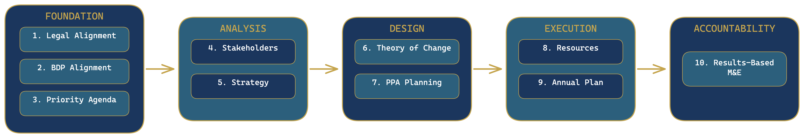
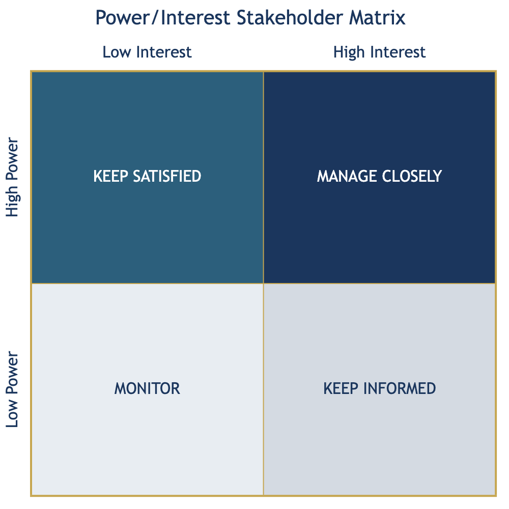
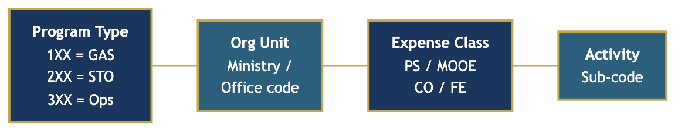

This guidebook provides a practitioner’s guide to the 10-Point Strategic Planning Framework for Ministries, Offices, and Agencies (MOAs) of the Bangsamoro Autonomous Region in Muslim Mindanao (BARMM). It is designed for the people who actually produce strategic plans — not as a policy statement about strategic planning, but as a working tool that walks practitioners through each planning point in sequence.
The guidebook produces ten modular working documents, one per planning point, that assemble at the end into a complete MOA Strategic Plan. Each chapter delivers a finished document: a Legal Mandate Inventory, a BDP Alignment Matrix, a Stakeholder Analysis Register, a Theory of Change, a PPA Design Matrix, a Resource Planning Table, an Annual Work Plan, and a Performance Monitoring Framework, among others. By Chapter 12, you do not write a strategic plan from scratch — you assemble it from the documents you have already built.
This guidebook is written for three tiers of users:
Planning Officers, Budget Officers, and M&E Officers (primary audience) — the drafters who follow the step-by-step instructions in each chapter, complete the templates, and produce the working documents that constitute the MOA Strategic Plan. If this is you, read every section of every chapter in sequence.
Ministers, Executive Directors, Deputy Ministers, and Division Chiefs (secondary audience) — decision-makers who do not draft the plan but who must understand, validate, and approve each component. Each chapter contains a For Decision-Makers callout that summarizes what you need to review, what questions to ask, and what your approval signifies. You can read those callouts and Chapter 12 without reading the full step-by-step instructions.
BPDA Staff (tertiary audience) — Bangsamoro Planning and Development Authority staff who review and certify MOA strategic plans for compliance with the BDP and BARMM planning standards. Chapter 12 and the appendix templates provide the reference structure for review. The quality checklists at the end of each chapter serve as a certification checklist.
Read Chapter 1 (Introduction to Strategic Planning in BARMM) in full to understand the framework and what you are building. Then work through Chapters 2-11 in sequence, completing the template at the end of each chapter before moving to the next. Finish with Chapter 12 to assemble your final document.
If you have produced strategic plans before, use Chapter 1 to orient yourself to the 10-Point Framework, then jump to the chapter that covers the planning point you are currently working on. The chapters are self-contained — you do not need to read them in order if you already understand the foundations.
Read Chapter 1 (Sections 1.4-1.6) to understand the framework, your role, and what the planning team will produce. In each subsequent chapter, go directly to the For Decision-Makers callout (Section X.5). Then read Chapter 12 in full — it is the chapter that most directly concerns your responsibilities: reviewing the assembled plan, approving the executive summary, and submitting through the proper workflow.
Use Chapter 12 as the primary reference for document structure and submission requirements. The quality checklists at Section X.8 of each chapter serve as the checklist for certifying each planning component. Appendix D contains all blank templates in the standard format for reference during review.
This guidebook is one of several practical references produced for BARMM governance practitioners. It is designed to stand alone and be used independently.
CSW Guidebook (Complete Staff Work Guidebook for the Bangsamoro Autonomous Region) covers the analytical process — how staff research, evaluate options, and prepare recommendations. Where the CSW Guidebook focuses on producing decision-support documents for any type of government action, this guidebook focuses specifically on the strategic planning process and its outputs. Staff preparing planning proposals or budget justifications should use both guidebooks together.
Bill Drafting Guidebook for the Bangsamoro Parliament covers the legislative output — how to translate policy intent into an enacted Bangsamoro Autonomy Act. When a strategic plan identifies the need for new legislation, the Bill Drafting Guidebook provides the process for producing the enabling BAA.
A Budget System Guidebook covering the BARMM budget process under BAA 84 (Budget System Act) is planned. When available, it will complement this guidebook’s Chapter 9 (Resource Planning) and Chapter 10 (Annual Work Plan) by providing detailed guidance on budget proposal forms, appropriation structure, and compliance with MFBM requirements.
Saidamen “Sayeed” R. Mambayao has worked in governance, legislation, and cooperative development across the Bangsamoro region for over a decade.
Before the establishment of the Bangsamoro Autonomous Region, he served as a Consultant of the Cooperative Development Authority under the former Autonomous Region in Muslim Mindanao, where he led programs on cooperative development, Islamic finance, and executive leadership. He also served as Secretariat Head and Program Director of the Bangsamoro Executives and Leaders League (BELL), Inc., and held leadership roles in the ARMM Islamic Finance Sub-Cluster and the Bangsamoro Coalition on Social Enterprise.
When the Bangsamoro Transition Authority was established in 2019, he led the development and implementation of two BARMM flagship programs: the Access to Higher and Modern Education (AHME) Scholarship Program under the Ministry of Basic, Higher, and Technical Education, and the Engaging the SK, Empowering the Youth (ESKEY) Program under the Ministry of the Interior and Local Government. He later served as Chief of Staff at the Office of a Member of Parliament, where he assisted on legislative portfolios covering women, youth, children, persons with disabilities, cooperatives, social enterprises, and halal industries. He drafted and reviewed legislative measures on scholarships, cultural heritage preservation, assistance to Other Bangsamoro Communities, and cooperative and social enterprise development. He also served as OIC-Legislative Affairs at the Office of MP Sittie Fahanie S. Uy-Oyod.
He is the Founder of MoroTech and MoroAcademy, social enterprises empowering Bangsamoro organizations and communities through knowledge and technology, and the Founding Chairperson of the Bangsamoro Scholars Association. He also founded the SEED Initiative, a consultancy and training firm focused on cooperative and social enterprise development. He is an Active Citizen and graduate of the British Council’s CSO-SEED Business and Investment Readiness Program.
Your Minister has asked the planning unit to prepare the Ministry’s Strategic Plan for the next three years. The directive is clear, but the questions pile up fast. Where do you start? What format should the plan follow? How do you connect your Ministry’s work to the Bangsamoro Development Plan 2023-2028? What happens when the budget team asks how your plan links to the annual financial plan, and you have no answer? What does BPDA expect when you submit?
This guidebook gives you a structured, repeatable process for building a strategic plan that answers all of those questions. It walks you through a 10-point framework designed specifically for Ministries, Offices, and Agencies (MOAs) in the Bangsamoro Autonomous Region. Whether you work in a large ministry with a dedicated planning division or in a small office where one person handles planning, budgeting, and M&E, the process is the same.
By the time you finish this guidebook, you will have produced a complete MOA Strategic Plan that is legally grounded, aligned with the BDP 2023-2028, linked to your annual budget, and ready for BPDA review.
The Bangsamoro Government has a clear development vision. The Bangsamoro Development Plan 2023-2028 lays out six development goals, eight strategies, and hundreds of targets across every sector. The Enhanced 12-Point Priority Agenda (institutionalized under OCM Memorandum Circular No. 49, s. 2022) organized the administration’s commitments from 2022 through early 2026; it has since been succeeded by the Mas Matatag na Bangsamoro Agenda (OCM Executive Order No. 2, s. 2026), which organizes the 2026-2028 period around five pillars: Mas Matatag na Gobyerno, Mas Matatag na Kabuhayan, Mas Matatag na Pamayanan, Mas Matatag na Seguridad, and Mas Matatag na Paniniwala. Together, these successive agenda frameworks translate the BDP vision into actionable priorities for the transition period. The Bangsamoro Organic Law and the Administrative Code establish the legal mandates of every MOA.
What is missing is a standardized process for connecting all of these elements at the MOA level.
Today, strategic planning across MOAs looks different everywhere. Some ministries produce detailed plans with clear outcome indicators. Others submit documents that list activities without explaining how those activities contribute to development goals. Some offices have no strategic plan at all — they operate year-to-year, responding to the budget call with a list of activities carried over from the previous fiscal year.
The consequences of this inconsistency are serious:
BPDA cannot compare plans across MOAs. When each MOA uses a different format, different terminology, and different levels of detail, the Bangsamoro Economic and Development Council has no basis for evaluating whether the region’s collective efforts add up to the BDP 2023-2028 targets.
MFBM cannot link plans to budgets. The Ministry of Finance, Budget and Management needs to see how proposed Programs, Projects, and Activities (PPAs) flow from strategic objectives. Without that logic chain, budget proposals become wish lists rather than investment plans.
Parliament cannot evaluate MOA performance. When strategic plans do not specify measurable outcomes, parliamentary oversight committees have no benchmark against which to assess implementation. Oversight becomes anecdotal rather than evidence-based.
MOAs themselves suffer. Without a planning framework, staff waste time reinventing the process each cycle. Knowledge walks out the door when personnel transfer. New leadership inherits plans they cannot build on because the logic behind the previous plan was never documented.
This guidebook solves these problems by giving every MOA the same 10-point framework, the same templates, and the same submission standards. When all MOAs follow the same process, BPDA can aggregate plans into a coherent regional picture, MFBM can trace budget proposals back to strategic objectives, and Parliament can hold MOAs accountable against their own commitments.
Strategic planning in the Bangsamoro context is not corporate strategy. It is not a vision-and-mission exercise that produces a framed poster for the lobby. It is the process by which a MOA translates its legal mandate into concrete programs, aligns those programs with the Bangsamoro Development Plan 2023-2028, and builds the accountability structures — budgets, work plans, and monitoring systems — that ensure those programs deliver results.
Three legal and policy foundations anchor strategic planning in BARMM:
First, the Bangsamoro Organic Law (Republic Act No. 11054). Article V, Section 2 of the BOL enumerates the powers of the Bangsamoro Government, including authority over administrative organization, budgeting, and urban and rural planning development.1 Article VII, Section 2 vests the powers of government in the Parliament, which “shall set policies, legislate on matters within its authority, and elect a Chief Minister who shall exercise executive authority on its behalf.”2 Every MOA strategic plan must trace its mandate back to these constitutional powers.
Second, the Bangsamoro Administrative Code (BAA No. 13). The Administrative Code establishes the structural and functional framework of the Bangsamoro Government. It declares the policy of the Bangsamoro Government “to pursue the acceleration of the socio-economic development of the region and promote the welfare of its constituents through a holistic, effective and responsive planning, coordination, and monitoring and evaluation of the implementation of policies, plans, programs, and projects in the region.”3 The Code also creates the Bangsamoro Economic and Development Council (BEDC), chaired by the Chief Minister, which directs plan formulation and recommends the BDP for parliamentary approval.4 The Bangsamoro Planning and Development Authority (BPDA) serves as the technical secretariat of the BEDC and the planning, coordinating, and monitoring agency for all development plans, policies, programs, and projects.5
Third, the Bangsamoro Development Plan 2023-2028. The BDP 2023-2028 is the medium-term development framework for the Bangsamoro Autonomous Region. It sets six development goals — Moral Governance, Security and Justice, Economic Development, Social Development, Environment, and Infrastructure — along with eight cross-cutting strategies and sector-specific targets. Every MOA strategic plan must demonstrate how its programs contribute to the BDP goals and targets. The BDP is not a separate document that sits on a shelf. It is the reference point against which all MOA plans are evaluated.
Together, these three pillars mean that a MOA strategic plan is not optional or aspirational. It is a legal and institutional requirement. Your MOA has a mandate, and strategic planning is how you operationalize that mandate.
Can you identify the specific BOL provision, BAA, or executive order that establishes your MOA? If not, that is your first task — you cannot build a strategic plan without knowing the exact legal basis for your office’s existence.
This guidebook is organized around a 10-Point Strategic Planning Framework designed to guide MOAs from legal mandate to measurable results. The framework is structured in five layers, each building on the one before it.
| Layer | Points | Purpose |
|---|---|---|
| Foundation | Points 1-3 | Establish your MOA's legal basis, development alignment, and priority commitments |
| Analysis | Points 4-5 | Identify who your MOA serves and define your strategic direction |
| Design | Points 6-7 | Map your theory of change and design specific programs, projects, and activities |
| Execution | Points 8-9 | Plan resources and translate strategy into annual work and financial plans |
| Accountability | Point 10 | Build results-based monitoring and evaluation into your plan from the start |
| Point | Title | One-Line Description |
|---|---|---|
| 1 | Legal Alignment | Identify your MOA's constitutional and legal mandate --- BOL provisions, Administrative Code references, enabling laws, executive orders, and applicable national legislation. |
| 2 | BDP Alignment | Map your MOA's work to the Bangsamoro Development Plan 2023-2028 goals, strategies, and sector targets. |
| 3 | Priority Agenda | Align your programs with the government's current strategic agenda (the Mas Matatag na Bangsamoro Agenda for 2026-2028, which succeeds the Enhanced 12-Point Priority Agenda) and specify your MOA's mode of contribution --- direct implementation, policy support, regulatory function, or advocacy and coordination. |
| 4 | Stakeholder Analysis | Identify primary beneficiaries, institutional partners, and key actors. Map their power and interest. Plan engagement strategies. |
| 5 | Strategy Analysis | Define your MOA's vision, mission, core values, problem statements, and SMART strategic objectives. |
| 6 | Theory of Change | Map the causal pathway from your activities to outputs, outcomes, and long-term impact. State your assumptions explicitly. |
| 7 | PPA Planning | Design your Programs, Projects, and Activities (PPAs) with UACS-compliant coding, logical frameworks, and clear deliverables. |
| 8 | Resource Planning | Plan the financial, human, physical, and partnership resources required to implement your PPAs. |
| 9 | Annual Work and Financial Plan | Translate your multi-year strategy into annual targets, quarterly milestones, a financial plan, and a procurement plan. |
| 10 | Results-Based M&E | Design your monitoring and evaluation framework with indicators at every level --- input, process, output, outcome, and impact --- with clear data collection plans. |

The framework is sequential for first-time users — you start at Point 1 and work through to Point 10. But it is also modular. An experienced planning team updating an existing strategic plan can jump directly to the point that needs revision. The key rule: if you change a foundation point, review all downstream points for consistency.
Does your MOA already have a strategic plan? If so, which of the 10 points need updating versus building from scratch — and have you checked whether your foundation points (1-3) changed since the last plan?
By working through the 10-point framework, you will produce eleven outputs:
| # | Output | Source Point |
|---|---|---|
| 1 | Legal Mandate Statement with verified citations | Point 1 |
| 2 | BDP Alignment Matrix with contribution pathways | Point 2 |
| 3 | Priority Agenda Alignment Statement | Point 3 |
| 4 | Stakeholder Analysis Matrix with engagement plan | Point 4 |
| 5 | Strategic Direction Document (vision, mission, values, objectives) | Point 5 |
| 6 | Theory of Change narrative and diagram | Point 6 |
| 7 | PPA Register with logical frameworks | Point 7 |
| 8 | Resource Plan (financial, human, physical, partnerships) | Point 8 |
| 9 | Annual Work and Financial Plan | Point 9 |
| 10 | Results-Based M&E Framework with indicator matrix | Point 10 |
| 11 | Consolidated MOA Strategic Plan | All points |
The eleventh output — the consolidated plan — is what you submit to BPDA for review and certification. It integrates all ten component outputs into a single document that tells the complete story of your MOA’s strategic direction.
Can you name the person on your team who will be responsible for consolidating these eleven outputs into a single document? If no one is assigned, who has the institutional knowledge to do it?
Appendix D provides blank templates for each of the ten component outputs and the consolidated plan. Appendix E provides a fully worked example using a hypothetical ministry, showing what a completed plan looks like at each stage.
Strategic planning is not a one-person job. This guidebook is designed for planning teams, and each team member has a defined role across the 10 points.
| Role | Primary Responsibility | Points Led | Key Deliverables |
|---|---|---|---|
| Planning Officer | Drafts the foundation, analysis, and design layers; consolidates all outputs into the final plan | Points 1-7 | Legal Mandate Statement, BDP Alignment Matrix, Priority Agenda Statement, Stakeholder Analysis, Strategic Direction Document, Theory of Change, PPA Register, Consolidated Plan |
| Budget Officer | Leads resource and financial planning; ensures PPAs comply with budget ceilings and MFBM requirements | Points 8-9 | Resource Plan, Annual Financial Plan, Procurement Plan |
| M&E Officer | Designs the monitoring and evaluation framework; defines indicators, baselines, targets, and data collection methods | Point 10 | M&E Framework, Indicator Matrix, Data Collection Plan |
| Minister / Executive Director | Provides strategic direction and approves outputs at each stage; makes final decisions on priorities, resource allocation, and plan submission | Approval at all stages | Approved plan at each milestone |
| BPDA | Reviews submitted plans for completeness, BDP alignment, and technical quality; certifies compliant plans | External review | Plan certification or feedback for revision |
| MFBM | Reviews resource and financial plans for budget feasibility and compliance with fiscal policies | External review | Budget feasibility assessment |
Which of these roles does your MOA actually have filled? If your office has no dedicated M&E Officer or Budget Officer, who will take on those responsibilities — and do they have the capacity to do so alongside their regular duties?
Each chapter in this guidebook includes a “For Decision-Makers” callout. These callouts summarize the key questions you need to answer and the decisions you need to make at each stage. If you are a Minister, Deputy Minister, or Executive Director, you do not need to read every chapter in full. Read the opening section for context, then focus on the decision-maker callouts to understand what your planning team needs from you.
Has your Minister or Executive Director been briefed on this planning process and committed to providing timely decisions at each stage? A planning team that completes its work but cannot get leadership sign-off on time will miss the budget cycle.
Strategic planning does not happen in isolation. It follows the rhythm of the BARMM fiscal year and budget cycle. The table below shows when each layer of the 10-point framework typically takes place.
| Quarter | Months | Framework Layer | Key Activities |
|---|---|---|---|
| Q1 | January -- March | Foundation (Points 1-3) | Conduct strategic review of previous plan performance. Update legal alignment for any new legislation enacted in the previous year. Review BDP 2023-2028 targets and assess progress. Reaffirm or adjust Priority Agenda alignment. |
| Q2 | April -- June | Analysis and Design (Points 4-6) | Conduct stakeholder analysis. Update or develop vision, mission, and strategic objectives. Build or revise the Theory of Change. This is also when the BARMM Budget Call typically arrives, providing budget ceilings for the coming fiscal year. |
| Q3 | July -- September | Design and Execution (Points 7-9) | Design or update PPAs with logical frameworks. Develop the resource plan within budget ceilings. Prepare the Annual Work and Financial Plan, including the procurement plan. |
| Q4 | October -- December | Accountability and Submission (Point 10, consolidation) | Finalize the M&E framework. Consolidate all outputs into the MOA Strategic Plan. Submit to the Minister/Executive Director for approval. Submit to BPDA for review and certification. |
The planning calendar is designed to feed directly into the budget process. When the Budget Call arrives (typically Q2-Q3), your MOA should already have its foundation and analysis layers complete. This means your budget proposals are grounded in legal mandate, aligned with BDP 2023-2028 goals, and supported by a Theory of Change — not assembled from scratch under time pressure.
Point 9 (Annual Work and Financial Plan) produces the annual targets, financial plan, and procurement plan that flow directly into your MOA’s budget submission. The PPAs you design in Point 7 map to the BBP budget forms that MFBM requires. When your planning and budgeting are integrated, the budget defense becomes a conversation about strategy rather than a negotiation over line items.
When does your MOA typically receive the MFBM Budget Call? Count backward from that deadline — do you have enough lead time to complete the foundation and analysis layers before the Budget Call arrives?
If your MOA already has a strategic plan, you do not need to start from scratch each year. The planning calendar supports annual updating:
This guidebook is designed for multiple audiences. Choose the reading path that matches your role and experience.
Read this introduction, then follow Chapters 2 through 12 in order. Each chapter covers one point of the framework and includes step-by-step instructions, templates, examples, and common mistakes to avoid. Chapter 12 covers plan consolidation and the BPDA submission process.
Before you begin Chapter 2, do you have access to the three foundational documents: the BOL (RA 11054), the Bangsamoro Administrative Code (BAA No. 13), and the BDP 2023-2028? If any are missing, obtain them now — you will need all three throughout the process.
Jump directly to the chapter that covers the point you need to revise. Each chapter is self-contained enough to use independently, though you should check the “upstream dependencies” section at the start of each chapter to ensure your foundation is still current.
Read this introduction for the overall framework. Then, for each chapter, read only the “For Decision-Makers” callout boxes and the chapter summary. Focus especially on Chapter 12 (Plan Consolidation and Submission), which explains what you are approving and what BPDA will evaluate. You do not need to master the technical details of Theory of Change construction or indicator design — that is what your planning team does. Your role is to provide strategic direction and approve the outputs.
Start with Chapter 12 (Plan Consolidation and Submission), which specifies the submission format, completeness criteria, and quality standards. Then review Appendix D (blank templates) to understand the expected structure of each component. Appendix E (worked example) shows what a compliant plan looks like. You can then refer to individual chapters for the technical criteria behind each point.
Throughout this guidebook, you will encounter the following formatting conventions:
This guidebook complements several other key BARMM publications:
The Bill Drafting Guidebook for the Bangsamoro Parliament covers the technical craft of writing legislation. If your MOA’s strategic plan identifies legislative gaps that require new BAAs, consult the Bill Drafting Guidebook for drafting standards.
The Complete Staff Work (CSW) Guidebook provides the ADDRESS IT methodology for analytical and decision-support work. Strategic planning draws on CSW skills — particularly the research, analysis, and options-evaluation steps. If your planning team needs to strengthen their analytical process, the CSW Guidebook is the reference.
The Bangsamoro Development Plan 2023-2028 is the primary reference document for BDP alignment (Point 2). You will need a copy of the BDP accessible to your team throughout the planning process.
Now turn to Chapter 2 to begin the first point of the framework: establishing your MOA’s legal alignment.
Republic Act No. 11054, Article V, Section 2. The full list of Bangsamoro Government powers includes 55 enumerated areas of authority, from administration of justice to water supply and services. ↩
Republic Act No. 11054, Article VII, Section 2. ↩
Bangsamoro Autonomy Act No. 13, Book V (Administrative Agencies), Section 12 (Declaration of Policy under the Bangsamoro Economic and Development Council). ↩
Bangsamoro Autonomy Act No. 13, Section 13 (The Bangsamoro Economic and Development Council) and Section 15 (Powers and Functions), paragraph 1: “Direct the plan formulation and recommend for approval by the Parliament the Bangsamoro Development Plan.” ↩
Bangsamoro Autonomy Act No. 13, Section 39 (Bangsamoro Planning and Development Authority): “The BPDA shall serve as the planning, coordinating, and monitoring agency for all development plans, policies, programs and projects of the Bangsamoro Government.” ↩
Every plan your MOA produces rests on a single question: Does the law authorize you to do this?
This is not a formality. A strategic plan without legal basis is a wish list. It cannot survive parliamentary scrutiny, will not pass BPDA review, and gives the Commission on Audit grounds to disallow expenditures. Legal alignment is Point 1 of the 10-Point Framework because it determines the boundaries of everything that follows. Your vision, your programs, your budget proposals, your performance targets — all of them must trace back to a specific legal provision that grants your MOA the authority to act.
This chapter gives you a systematic process for identifying, documenting, and validating your MOA’s legal mandate across the full hierarchy of Philippine and Bangsamoro law. By the end, you will have completed a Legal Mandate Matrix that maps every planning domain in your MOA to its legal basis.
Legal alignment comes first because authority comes first.
The Bangsamoro Government operates under a layered legal architecture. The 1987 Philippine Constitution establishes the framework for autonomous regions. Republic Act No. 11054 — the Bangsamoro Organic Law — creates the Bangsamoro Autonomous Region and defines its powers. The Bangsamoro Administrative Code (BAA No. 13) prescribes the structural and functional principles of governance. Below these foundational laws sit the Bangsamoro Autonomy Acts passed by Parliament, applicable national laws, executive issuances, and jurisprudence.
Your MOA exists because a specific law created it. Your MOA’s functions exist because specific provisions authorize them. When you plan a program, you must be able to point to the provision that gives you the mandate to implement it. When you request a budget, you must demonstrate that the proposed expenditure falls within your legal authority. When Parliament asks why your MOA is spending public funds on a particular activity, your answer must begin with a legal citation.
This is also a protection mechanism. If your MOA is performing functions without clear legal basis, those functions are vulnerable. A change in leadership, a budget challenge, or an audit finding can eliminate programs that lack legal grounding. Conversely, if your creating law mandates a function that your MOA is not performing, you have a compliance gap that must be addressed.
Legal alignment is not a one-time exercise. The Bangsamoro Parliament passes new BAAs regularly. National laws change. Executive issuances are issued and superseded. Your Legal Mandate Matrix must be reviewed and updated at the start of every planning cycle.
Every MOA’s authority derives from a hierarchy of legal sources. Understanding this hierarchy is essential because when provisions conflict, the higher-tier source prevails. When your MOA cites legal authority, you must know where that authority sits in the hierarchy and whether a higher-tier provision limits or expands it.
Tier 1: The 1987 Philippine Constitution
The Constitution is the supreme law. No provision of the BOL, no BAA, and no executive order can contradict it. For BARMM planning, the most relevant constitutional provisions are:
Tier 2: The Bangsamoro Organic Law (Republic Act No. 11054)
The BOL is the organic act that created the Bangsamoro Autonomous Region. It defines the powers of the Bangsamoro Government, establishes the parliamentary form of government, and sets the framework for fiscal autonomy. For your MOA, the BOL is the primary source of authority because Article V, Section 2 enumerates the 55 areas over which the Bangsamoro Government exercises power — from administration of justice to water supply and services.9
Two critical provisions in Article V shape every MOA’s mandate:
Section 3 is significant because it means your MOA is not limited to the literal text of its creating law. If a function is necessarily implied by your mandate, or if it is incidental to the efficient performance of your core functions, you have authority to include it in your strategic plan. However, implied powers must still be traceable to an express grant. You cannot use the general welfare clause to claim authority that no provision supports.
Tier 3: The Bangsamoro Administrative Code (BAA No. 13)
The Administrative Code prescribes the structural, functional, and procedural principles of the Bangsamoro Government.12 It establishes the ministries, defines the powers of the Chief Minister, creates the Bangsamoro Economic and Development Council (BEDC) and the Bangsamoro Planning and Development Authority (BPDA), and provides the governance framework within which all MOAs operate.
For strategic planning, BAA No. 13 is critical because it defines:
Tier 4: Bangsamoro Autonomy Acts (BAAs)
BAAs are laws enacted by the BTA Parliament on matters within the Bangsamoro Government’s legislative authority. They include appropriations acts (the annual General Appropriations Act), fiscal legislation (such as the Bangsamoro Budget System Act, BAA No. 84), sector-specific laws (such as the Bangsamoro Education Act, BAA No. 25), and administrative legislation (such as the Bangsamoro Civil Service Act, BAA No. 31).17
For your MOA, work through BAAs in this order of priority:
Tier 5: Applicable National Laws
National laws apply to BARMM in three ways: (a) directly, when the subject matter falls outside the BOL’s exclusive powers; (b) as suppletory law, when a BAA is silent on a matter; or (c) through express adoption by Parliament.18
Key national laws that affect nearly every MOA’s strategic plan include:
Tier 6: Executive Issuances
Executive issuances implement, interpret, or operationalize laws. They come in several forms:
Executive issuances take effect after fifteen days following publication in the Bangsamoro Gazette or in a newspaper of regional circulation, unless otherwise provided.25
Tier 7: Jurisprudence
Supreme Court decisions interpreting autonomy provisions and resolving conflicts between national and regional authority constitute the final tier. While jurisprudence does not create new authority, it defines the boundaries of existing authority. Key areas include:
The BOL establishes a hierarchy when provisions from different sources conflict, but the relationship between national law and Bangsamoro law is not a simple top-down hierarchy — it depends on the subject matter:
What this means for planning: For each legal provision in your mandate, determine whether the BOL requires consistency with national law in that area. If it does (civil service, budget, elections, audit, indigenous peoples), your plan must comply with both the BAA and the applicable national law. If the BOL grants exclusive authority and is silent on national law, the BAA governs. When in doubt, err on the side of consistency with national law — it is always safer to comply than to assume exclusivity.
These two terms are the legal building blocks of your Legal Mandate Matrix. Both come directly from enacted legislation — BAA No. 13 defines a Mandate section and a Powers and Functions section for each ministry and office.
Have you read the full “Powers and Functions” section for your MOA in BAA No. 13? Most MOAs have 15-30 enumerated functions — planning teams often work from memory and miss half of them. Read the actual text.
In your strategic plan, mandates and functions come from law. They are what you are authorized and required to do. Activities — the concrete day-to-day actions your staff perform — come later, in Chapter 8 (PPA Planning), when you design programs to fulfill your legal functions. This chapter establishes the legal foundation; Chapter 8 builds the operational plan on top of it.
Your MOA’s legal authority comes in two forms. Understanding the distinction is essential because it determines how strongly you can defend each item in your Legal Mandate Matrix.
Explicit authority is directly stated in enacted legislation. The BOL enumerates 55 exclusive powers of the Bangsamoro Government in Article V, Section 2 — from administration of justice to water supply.26 BAA No. 13 further specifies each MOA’s mandate and powers/functions in dedicated sections. When you can point to a specific provision that says “the Ministry shall [do X],” that is explicit authority. These are your strongest legal bases.
For each function in your Legal Mandate Matrix, can you cite the specific section of BAA 13 or the BOL that authorizes it? If you cannot, it may be implied rather than explicit.
Implied authority must be reasoned from an explicit grant. Article V, Section 3 establishes this: the Bangsamoro Government may exercise “the powers expressly granted, those necessarily implied therefrom, as well as powers necessary, appropriate, or incidental for its efficient and effective governance and those which are essential to the promotion of general welfare.”27 Implied authority is legitimate, but it requires a documented chain of reasoning — you must explain why the implied mandate, function, or power is necessarily connected to an express grant. Document that reasoning in your matrix.
If you are claiming an implied function, can you name the explicit provision it derives from? “We need to do this because it’s important” is not implied authority. “This function is necessarily implied from BAA 13, Sec. X, which mandates [Y], because [Y] cannot be achieved without [this function]” is.
The same explicit/implied distinction applies to all three legal concepts: mandates (broad responsibilities), powers and functions (specific duties), and authorities (decision-making scope). A mandate can be explicit (stated in the “Mandate” section of BAA 13) or implied (derived from a broader BOL provision). A function can be explicit (enumerated in “Powers and Functions”) or implied (necessary to carry out an explicit mandate). Use the distinction consistently across your entire Legal Mandate Matrix.
Every MOA has a creating law — the specific legislation that established the office and defined its initial mandate, structure, and functions. This might be:
Identifying your creating law is the first step in the Legal Mandate Matrix. Everything else flows from it.
Begin by answering one question: Which specific law, provision, or issuance established your MOA?
Gather the following documents:
What is the specific BAA or BOL provision that creates your MOA? Not what inspires it — what establishes it as an institution.
Record the following for your creating law:
Is your creating law still the current authority, or has it been superseded? BAA No. 13 supersedes the BTA Transition Plan for most offices. Cite enacted legislation, not historical instruments.
Your creating law may distinguish between two things: the mandate (the obligation or purpose that justifies the office) and the establishment (the legal act that created and organized it). These may come from different provisions — the BOL may provide the mandate while a BAA establishes the office.
Does your creating law come from one provision or two? If the mandate and the establishment are in different laws, record both.
Working through each tier of the legal hierarchy, identify every provision that grants your MOA authority or imposes obligations on it. Then — critically — trace what each provision actually references.
Tier 1 — Constitution: Identify any constitutional provisions that relate to your sector. Most MOAs will cite Article X (autonomous regions) and Article XI (public accountability). Sector-specific MOAs may cite additional provisions — for example, a health ministry would cite Article XIII (social justice and human rights), and an education ministry would cite Article XIV (education, science and technology, arts, culture, and sports).
Does your sector have a specific constitutional provision beyond Article X? Search the full Bill of Rights (Art. III) and Social Justice provisions (Art. XIII) — many MOAs miss these.
Tier 2 — BOL: Identify every provision in RA 11054 that relates to your MOA’s sector. Start with Article V, Section 2 (enumerated powers) and identify which of the 55 areas apply to your MOA. Then review the BOL articles relevant to your sector — Article IX (basic rights), Article X (justice system), Article XI (defense and public order), Article XII (fiscal autonomy), Article XIII (regional economy, natural resources, and patrimony), and Article XIV (rehabilitation and development). Note that the BOL does not organize articles strictly by ministry, so review multiple articles for relevant provisions.
Have you searched every article of the BOL, not just the ones obviously related to your sector? Provisions relevant to your MOA may appear in unexpected articles. Read the full text, not just the article titles.
Tier 3 — Administrative Code: Review BAA No. 13 for all references to your MOA. Pay particular attention to the sections that define your ministry’s composition, powers, and functions.
Does BAA No. 13 give your MOA functions beyond what the BOL provision says? The Administrative Code often enumerates 15-30 specific functions per ministry — these are your operational mandates.
Tier 4 — BAAs: Identify all BAAs that affect your MOA. This includes your creating law, cross-cutting BAAs (procurement, civil service, budget system), and any sector-specific BAAs that expand or modify your mandate.
Have you identified the cross-cutting BAAs that apply to ALL MOAs? BAA No. 38 (Procurement), BAA No. 31 (Civil Service), BAA No. 84 (Budget System) affect every office regardless of sector.
Tier 5 — National Laws: Identify national laws that apply to your MOA. Some are universal (procurement, anti-graft, data privacy). Others are sector-specific (a health ministry must comply with Republic Act No. 11223, the Universal Health Care Act, to the extent it applies in BARMM).
For each national law, have you checked whether the BOL requires consistency with it? If yes, your plan must comply with both the BAA and the national law. If the BOL is silent, the BAA governs.
Tier 6 — Executive Issuances: Identify relevant EOs, IRRs, MCs, and AOs. Check issuances from the Office of the Chief Minister and from your own ministry.
Tier 7 — Jurisprudence: Identify any Supreme Court decisions that interpret your MOA’s authority or the scope of BARMM’s powers in your sector.
For each provision you have found so far: who has the obligation — your MOA, the National Government, or both? The actor matters. Misattributing an obligation is a common and serious error.
Trace what your provisions actually reference. This is the most important part of Step 2 and the one most frequently skipped. When you find a provision, do not stop at the text — trace what it references.
Does your provision reference “rights”? What rights specifically? Does it reference “development”? What kind of development? Does it reference “protection”? Protection of what, by whom? Search the entire BOL for every provision that defines these concepts.
Does your provision reference a population — “Bangsamoro people,” “indigenous peoples,” “women,” “youth”? What other provisions in the BOL define the rights and protections for that population?
Does your provision say “in coordination with” another institution? What does that institution’s creating law say about the coordination? Is the mandate reciprocal?
How to trace: For each key provision, extract the traceable concepts and search the full source document:
| Concept in Your Provision | Where to Search | What You're Looking For |
|---|---|---|
| "Rights" of a population | BOL Art. IX (Basic Rights), Art. II (Identity), Constitution Art. III (Bill of Rights) | Every enumerated right that applies to your MOA's constituency |
| "Powers" of the Bangsamoro Government | BOL Art. V Sec. 2 (55 enumerated powers), Art. V Sec. 3 (general welfare clause) | Which specific powers support your mandate |
| "Protection" of a group | Full BOL scan for all provisions mentioning that group | What protections are defined and who is responsible |
| "Functions" or "mandate" | BAA No. 13 sections for your MOA | The full enumeration of functions, not just the summary |
| "In coordination with" another entity | That entity's creating law (BAA 13 or BOL) | Whether the coordination mandate is reciprocal |
Why this matters: A common error in legal alignment is citing a provision without understanding what it actually requires. For example, BOL Article VI, Section 12 says the Bangsamoro Government “shall provide assistance to enhance their economic, social, and cultural development” for communities outside BARMM. But what does “economic, social, and cultural development” mean in concrete terms? You must trace through Article IX (basic rights), Article XIII (economy), and the relevant sections of BAA No. 13 to understand the full scope of that obligation. A plan that cites only Art. VI, Sec. 12 without tracing these connections has a shallow legal foundation.
For each provision, record:
Using the provisions gathered in Steps 1 and 2, build a matrix that documents every legal authority your MOA holds. This matrix is a purely legal document — it records what the law says, not what you plan to do with it. Planning comes later, in Chapters 3 through 6, after you have aligned with the BDP, mapped to the priority agenda, analyzed your stakeholders, and defined your strategy.
Resist the temptation to skip ahead to “what programs should we run?” at this stage. The Legal Mandate Matrix answers only: what does the law authorize and require? The gap between what you are authorized to do and what you choose to do is the space that Chapters 6 (Strategy) and 8 (PPA Planning) fill.
For each provision, record:
| Column | What to Enter |
|---|---|
| Legal Source | Full name and number of the law (e.g., "RA 11054 (BOL)") |
| Tier | Which tier of the 7-tier hierarchy (1-7) |
| Provision | Specific article, section, subsection |
| Mandate/Authority | Concise statement of what the provision authorizes or requires --- use verbatim text where possible |
| Explicit or Implied | Is this directly stated in law, or derived through the general welfare clause? |
| Status | Active, Gap (Type A or B), or Under Review |
For each row, can you point to the exact section in BAA 13 or the BOL? If you are paraphrasing from memory, stop and read the actual text. Paraphrases drift — verbatim citations do not.
A single provision may generate multiple matrix rows if it grants multiple distinct authorities. Conversely, a single mandate area may be supported by provisions from multiple tiers.
The completed matrix becomes the legal foundation for everything that follows. Chapters 3-6 build on this foundation — BDP alignment (Chapter 3) connects your mandates to development goals; priority agenda mapping (Chapter 4) connects them to the administration’s commitments; strategy analysis (Chapter 6) translates legal authority into strategic direction; and PPA planning (Chapter 8) designs the programs that operationalize your mandates.
Two types of gaps require attention:
Gap Type A: Functions without legal basis. Review every program, project, and function that your MOA currently implements or plans to implement. Can each one be traced back to a legal provision? If a function has no traceable legal basis, flag it. This does not necessarily mean the function must stop — it may mean that legal authority exists but has not been documented, or that the function falls under implied powers (Art. V, Sec. 3). But it must be resolved. Functions without legal basis are vulnerable to audit findings and budget disallowance.
Gap Type B: Mandates without corresponding plans. Review every provision that grants your MOA a mandate. Is each mandate reflected in your strategic plan? If the law requires your MOA to perform a function and your plan does not address it, you have a compliance gap. This is a serious finding because it means your MOA is not fulfilling its legal obligations.
For each gap, record:
Using the information gathered in Steps 1 through 4, fill in the Legal Mandate Matrix template (Section 2.7). Every legal provision that grants your MOA authority should appear in the matrix. Every Gap (Type A or B) should be documented with a recommended action.
Does every row in your matrix cite a specific, verifiable provision? If any row says “general mandate” or “implied” without tracing it to an explicit grant, go back to Step 2 and find the source.
Once completed, submit the matrix for review by your MOA’s legal officer and your Minister or Executive Director (see Section 2.5). The matrix is the foundation for everything that follows in this guidebook — Chapters 3 through 12 all build on the legal authority documented here.
The following example shows how a Planning Officer at OOBC might complete Steps 1 through 4. This example is illustrative — actual provisions and planning domains at OOBC may differ. The purpose is to demonstrate the methodology.
The Planning Officer begins by locating the legal basis for OOBC’s existence. This requires distinguishing two things: (a) the mandate — what obligation justifies the office, and (b) the establishing law — what enacted legislation created and organized it.
Mandate (why OOBC exists):
Establishing law (what created the office):
The Planning Officer records: OOBC’s mandate derives from BOL Article VI, Section 12 (assistance to other Bangsamoro communities). The office itself is created by BAA No. 13, Book IV, Section 5, as an attached office under the OCM.
The Planning Officer works through each tier:
Tier 1 — Constitution: - Article X, Sections 15-21 (autonomous regions — the constitutional basis for the Bangsamoro Autonomous Region and its governance structures) - Article III, Section 1 (equal protection clause — Bangsamoro communities outside the core territory are entitled to equitable access to government services) - Article II, Section 11 (“The State values the dignity of every human person and guarantees full respect for human rights”)
Tier 2 — BOL: - Article VI, Sec. 12 — The Bangsamoro Government shall provide assistance to enhance the economic, social, and cultural development of Bangsamoro people residing in communities outside the Bangsamoro Autonomous Region - Article V, Sec. 2(b) — Administrative organization - Article V, Sec. 3 — General welfare clause: powers necessarily implied from express grants, as well as powers necessary, appropriate, or incidental for efficient and effective governance - Article IX, Sec. 1 — Basic rights of all Bangsamoro people
Tier 3 — Administrative Code: - BAA No. 13, Book IV (Office of the Chief Minister — OOBC is an attached office under the OCM) - BAA No. 13, Sections 12-15 (BEDC policy and functions — OOBC must participate in plan formulation for programs affecting Bangsamoro communities outside the core territory)
Tier 4 — BAAs: - Cross-cutting: BAA No. 38 (Procurement), BAA No. 31 (Civil Service), BAA No. 84 (Budget System) - Sector-specific BAAs that affect programs for other Bangsamoro communities (education, social welfare, livelihood — to the extent they extend beyond the core territory)
Tier 5 — National Laws: - Republic Act No. 8371 (Indigenous Peoples’ Rights Act / IPRA) — provisions relevant to Bangsamoro communities in areas with NCIP jurisdiction - Republic Act No. 7160 (Local Government Code) — coordination mandates with LGUs nationwide where Bangsamoro communities reside - Republic Act No. 9710 (Magna Carta of Women) — gender-responsive programming for women in dispersed Bangsamoro communities - Republic Act No. 10121 (Disaster Risk Reduction and Management Act) — coordination for community resilience - DILG coordination mandates for inter-governmental relations with LGUs outside BARMM
Tier 6 — Executive Issuances: - Any OCM Memorandum Circulars defining OOBC’s operational scope and reporting requirements - BPDA MCs on planning requirements
Tier 7 — Jurisprudence: - Cases on the scope of BARMM’s authority to extend services beyond its core territory - Cases on the rights of communities with ethnic or cultural ties to an autonomous region
Tracing what “rights” and “development” mean. The Planning Officer notices that Art. VI, Sec. 12 references “rights” and “economic, social, and cultural development” without defining them. Instead of stopping at this one provision, the Planning Officer traces what these concepts mean across the full BOL:
| Concept in Art. VI, Sec. 12 | Related Provisions Found | What This Means for OOBC |
|---|---|---|
| "rights of the Bangsamoro people" | Art. IX, Sec. 1 (basic rights); Art. IX, Sec. 9 (housing); Art. IX, Sec. 10 (labor rights); Art. IX, Sec. 16 (education) | OOBC's mandate to protect "rights" extends to housing, labor, and education access for OBC communities |
| "economic... development" | Art. XIII, Sec. 24 (cooperatives and enterprises); Art. XIII, Sec. 27 (social enterprises); Art. V, Sec. 2(k) (cooperative development) | OOBC's economic development programs can include cooperative formation and enterprise support for OBCs |
| "social... development" | Art. IX, Sec. 11-12 (women's rights); Art. IX, Sec. 13 (youth); Art. IX, Sec. 14 (children); Art. IX, Sec. 23 (PWDs, senior citizens) | OOBC must consider vulnerable sectors --- women, youth, children, PWDs --- within OBC populations |
| "cultural development" | Art. IX, Sec. 24-26 (cultural heritage, Sultanates); Art. II (Bangsamoro identity) | OOBC programs should support cultural identity preservation for dispersed Bangsamoro communities |
| "in coordination with... local government units" | Art. VI, Sec. 9(d) (Council of Leaders includes OBC representation); RA 7160, Sec. 25-27 (LGU coordination mandates) | Coordination with LGUs is not optional --- it is a BOL-mandated mechanism |
| "Bangsamoro people residing in communities outside" | Art. II, Sec. 1 (definition of Bangsamoro people); Art. VI, Sec. 9(d) (Council of Leaders includes "other Bangsamoro communities") | The target population is defined by identity (Art. II), not by residence --- anyone who self-identifies as Bangsamoro and lives outside BARMM |
This step transforms a single provision (Art. VI, Sec. 12) into a comprehensive understanding of OOBC’s legal mandate. Without provision chain tracing, the Planning Officer would have built a plan grounded in one sentence. With it, the plan is grounded in dozens of interconnected provisions across the BOL.
The Planning Officer compiles all provisions into the Legal Mandate Matrix — a purely legal document recording what the law authorizes and requires:
| Legal Basis | Authority Granted | Justification |
|---|---|---|
| BOL Art. VI, Sec. 12 | BG shall provide assistance to enhance economic, social, and cultural development of Bangsamoro people outside BARMM; NG ensures protection of rights | Direct basis — this is the primary mandate that justifies OOBC's existence. The BG's obligation is coordination and assistance; the NG has the primary protection obligation. |
| BAA No. 13, Book IV, Sec. 5-6 | Creates OOBC; mandates policy recommendations and systematic programs for OBC welfare, in coordination with LGUs and NGAs | Direct basis — this is OOBC's creating law. Sec. 5 establishes the office; Sec. 6 defines the mandate. |
| BOL Art. V, Sec. 2(b) | Administrative organization — authority to structure internal operations | Relevant because OOBC needs organizational authority to create bureaus, divisions, and field offices. |
| BOL Art. V, Sec. 3 | General welfare clause — implied authority for advocacy and information campaigns | Implied — advocacy is necessary to fulfill Art. VI, Sec. 12 because communities cannot access services they do not know exist. Needs OCM Administrative Order to formalize. |
| BOL Art. IX, Sec. 1 | Basic rights of all Bangsamoro people — extends to OBCs | Relevant because "all Bangsamoro people" includes those outside BARMM; OOBC must consider these rights when designing service facilitation programs. |
| RA 8371 (IPRA) | IP rights protections applicable to Bangsamoro IP communities in areas under NCIP jurisdiction | Relevant because some OBC populations are IPs in areas under NCIP (not MIPA) jurisdiction; OOBC must coordinate with NCIP. |
| RA 7160 (LGC), Sec. 25-27 | LGU coordination mandates for inter-governmental relations | Relevant because OOBC operates in LGU territories outside BARMM; coordination with host LGUs is legally mandated, not optional. |
| BAA No. 84 (BBSA) | Budget preparation, execution, accountability requirements | Cross-cutting — applies to all MOAs including OOBC; governs how OOBC's budget proposals must be structured. |
Note what this matrix does NOT contain: planning domains, programs, or activities. Those come later, after Chapters 3-6 build the full analytical foundation. The matrix answers only: what does the law authorize and require OOBC to do?
The Planning Officer identifies the following gaps:
Gap Type A (function without clear legal basis): - OOBC currently conducts advocacy and information campaigns in Bangsamoro communities outside the core territory. While these are consistent with the general welfare clause (BOL Art. V, Sec. 3) and with the mandate to “provide assistance to enhance their economic, social, and cultural development” (Art. VI, Sec. 12), no specific provision expressly mandates information campaigns. Recommendation: Document this as an implied power derived from the mandate under Article VI, Section 12, and the general welfare clause. Consider requesting the Executive Director to propose an Administrative Order from the OCM formalizing the advocacy function.
Gap Type B (mandate without corresponding plan): - BOL Article VI, Section 12 directs the Bangsamoro Government to consider the rights of all Bangsamoro communities outside the core territory, yet the current strategic plan does not include a comprehensive data and monitoring system for tracking the population, locations, and service needs of these dispersed communities across the Philippines. Recommendation: Add a community data and M&E system to the next planning cycle, beginning with a baseline census of Bangsamoro communities outside BARMM in coordination with MPID and LGUs.
The Step 3 matrix above serves as the complete Legal Mandate Matrix for this worked example. In practice, your MOA’s matrix would include every provision from all 7 tiers, with Gap findings documented in the Status column.
Minister / Executive Director Review
Before the Legal Mandate Matrix is finalized, the Minister or Executive Director must review it and confirm three things:
(a) No unauthorized functions are being claimed. Every mandate or function in the matrix must have a verifiable legal basis. If a function cannot be traced to a legal provision, it must either be justified under the general welfare clause with documented reasoning, flagged for legislative action, or removed.
(b) No mandated functions are missing from the plan. If a law requires your MOA to perform a function and that function does not appear in your strategic plan, your MOA is not fulfilling its legal obligations. This is a compliance risk that must be addressed in the current planning cycle.
(c) The legal basis is current. New BAAs are passed in every parliamentary session. Executive issuances are issued regularly. National laws are amended. The Minister must confirm that the legal provisions cited in the matrix are current and have not been repealed, amended, or superseded since the last planning cycle.
The Legal Mandate Matrix is not a bureaucratic exercise. It is the document that protects your MOA from implementing programs it has no authority to implement and from neglecting programs it is legally required to deliver. Sign off on it before the planning process moves to Point 2 (BDP Alignment).
Pitfall 1: Planning activities without legal authority. This is the most common error. A MOA identifies a community need, designs a program to address it, and includes it in the strategic plan — without checking whether any law authorizes the MOA to deliver that program. The program may be well-intentioned, but without legal basis, the budget for it can be disallowed by COA, and the MOA risks audit findings. Always trace the mandate-function-activity chain before including a program in your plan.
Pitfall 2: Citing repealed or superseded legislation. Laws change. A BAA enacted in 2020 may have been amended or repealed by a subsequent act. An Executive Order from the transition period may have been superseded by a later issuance. If you cite a provision that is no longer in force, your legal basis is invalid. Check the current status of every provision you cite. When in doubt, consult your MOA’s legal officer or the Bangsamoro Gazette.
Pitfall 3: Ignoring national laws that apply to BARMM. The BOL grants the Bangsamoro Government exclusive powers over many areas, but not all. Procurement, anti-graft, data privacy, gender and development, and ease of doing business are among the areas where national laws apply either directly or as suppletory law. A strategic plan that ignores these national laws will fail compliance review. Your Legal Mandate Matrix must include Tier 5 (national laws) entries.
Pitfall 4: Conflating “what we have always done” with “what the law mandates.” Institutional practice is not legal authority. The fact that your MOA has been performing a function for years does not mean a law authorizes it. During the transition period, many MOAs took on functions that were never formally assigned by legislation. These inherited practices must be validated against the legal hierarchy. If a function has no legal basis, either find the implicit authority and document it, or stop performing the function and recommend legislative action.
Pitfall 5: Treating the legal mandate review as a one-time exercise. The BTA Parliament has enacted over 80 Bangsamoro Autonomy Acts since 2019. New legislation is passed regularly, and each new BAA may expand, modify, or reassign your MOA’s functions. Executive issuances are issued throughout the year. Your Legal Mandate Matrix must be reviewed and updated at the start of every planning cycle. Assign a staff member to monitor the Bangsamoro Gazette and flag new legislation that affects your MOA.
Use the following table format to document your MOA’s legal mandate. Each row represents one legal provision and the authority it grants.
| Legal Basis | Authority Granted | Justification |
|---|---|---|
| BOL Art. V, Sec. 2 [subsection] | [Specific power enumerated — use verbatim text] | Explicit |
| BAA No. ☑, Sec. [Y] | [Mandate or function assigned by the BAA — use verbatim text] | Explicit; creating law |
| RA [Number], Sec. [Y] | [National law requirement applicable to BARMM] | National law; suppletory |
| BOL Art. V, Sec. 3 | [General welfare clause — state the implied authority and the explicit provision it derives from] | Implied — document reasoning chain |
Column definitions:
Instructions:
Before proceeding to Point 2 (BDP Alignment), confirm the following:
Authority before ambition. No program belongs in your strategic plan unless a legal provision authorizes it. Identify the law first, then plan the program.
The 7-tier hierarchy is your map. Work through every tier systematically. Most MOAs cite the BOL and their creating BAA but neglect applicable national laws and executive issuances. The matrix must be comprehensive.
Creating law is your anchor. Every MOA was established by a specific legal act. That act defines the boundaries of your mandate. Start there.
Implied powers are real but must be documented. The general welfare clause (BOL Art. V, Sec. 3) gives your MOA room to act beyond the literal text of its creating law, but only when the implied function is traceable to an express grant. Document the reasoning.
Gaps in both directions are problems. Operating without legal authority is risky. Failing to fulfill a legal mandate is a compliance failure. The matrix reveals both.
This is a living document. The Bangsamoro Parliament passes new laws regularly. Your matrix must be updated every planning cycle.
Republic Act No. 11054, Article VII, Section 39. ↩
Republic Act No. 11054, Article VII, Section 28. ↩
Republic Act No. 11054, Article IV, Section 4. ↩
Republic Act No. 11054, Article IX, Section 3. ↩
Republic Act No. 11054, Article V, Section 1. ↩
1987 Philippine Constitution, Article X, Sections 15-21. ↩
1987 Philippine Constitution, Article VI, Section 29. ↩
1987 Philippine Constitution, Article XI, Section 1. ↩
Republic Act No. 11054, Article V, Section 2. ↩
Republic Act No. 11054, Article V, Section 2. ↩
Republic Act No. 11054, Article V, Section 3. ↩
Bangsamoro Autonomy Act No. 13, Introductory Provisions, Section 2. ↩
Bangsamoro Autonomy Act No. 13, Book II, Title IV, Section 13. ↩
Bangsamoro Autonomy Act No. 13, Sections 13 and 15. Section 15(1) states: “Direct the plan formulation and recommend for approval by the Parliament the Bangsamoro Development Plan.” ↩
Bangsamoro Autonomy Act No. 13, Sections 39-42. Section 39 states: “The BPDA shall serve as the planning, coordinating, and monitoring agency for all development plans, policies, programs and projects of the Bangsamoro Government.” ↩
Bangsamoro Autonomy Act No. 13, Book IV, Title I, Section 4. ↩
Republic Act No. 11054, Article VII, Section 3, which grants the Parliament “the authority to enact laws on matters that are within the powers and competencies of the Bangsamoro Government.” ↩
Republic Act No. 11054, Article V, Section 1, states: “All powers, functions, and responsibilities not granted by the Constitution or by national law to the Bangsamoro Government shall be vested in the National Government.” This establishes the principle that national laws apply to matters outside BARMM’s exclusive powers. ↩
Republic Act No. 9184, Government Procurement Reform Act, as amended. ↩
Republic Act No. 6713, Code of Conduct and Ethical Standards for Public Officials and Employees. ↩
Republic Act No. 3019, Anti-Graft and Corrupt Practices Act, as amended. ↩
Republic Act No. 9710, Magna Carta of Women, Section 36. See also Republic Act No. 11054, Article XIII, Section 5, which requires “at least five percent (5%) of the total budget appropriation of each ministry, office, and constituent local government unit” for gender-responsive programs. ↩
Republic Act No. 10173, Data Privacy Act of 2012. ↩
Republic Act No. 11032, Ease of Doing Business and Efficient Government Service Delivery Act of 2018. ↩
Bangsamoro Autonomy Act No. 13, Chapter 3, Section 12 (Effectivity of Executive Issuances). ↩
Republic Act No. 11054, Article V, Section 2(a)-(ccc). ↩
Republic Act No. 11054, Article V, Section 3. ↩
Republic Act No. 11054, Article VI, Section 12 (Assistance to Other Bangsamoro Communities). Verbatim text quoted in the worked example. ↩
Republic Act No. 11054, Article V, Section 2. The 55 enumerated exclusive powers of the Bangsamoro Government, including “(a) Administrative organization.” ↩
Bangsamoro Autonomy Act No. 13, Book IV, Sections 5-6 (Office for Other Bangsamoro Communities — creation and mandate). Verbatim text quoted in the worked example. ↩
Your MOA exists because a law created it. Chapter 2 helped you identify those legal mandates — the constitutional provisions, BAA references, and national laws that define what your MOA is authorized and required to do. Now you need to connect those mandates to the region’s development priorities.
That connection runs through the 2nd Bangsamoro Development Plan (BDP) 2023-2028. The BDP is not a background document. It is the framework that the Bangsamoro Planning and Development Authority (BPDA) uses to evaluate whether your MOA’s programs contribute to regional development. It is the basis for the Bangsamoro Development Investment Program (BDIP), which translates BDP priorities into concrete programs and projects. And it is the reference point that the Ministry of Finance, Budget and Management (MFBM) uses when reviewing your budget proposals under the Annual Investment Program (AIP).
In short: if your strategic plan cannot show how your MOA’s work contributes to BDP goals, your plan has a credibility gap. This chapter teaches you how to close it.
The purpose of BDP alignment is to establish a clear, documented connection between your MOA’s legal mandates and the Bangsamoro Development Plan 2023-2028. You are answering one question: How does the work your MOA is legally required to do contribute to the development outcomes the Bangsamoro Government has committed to achieve?
This is not a creative exercise. Your MOA’s mandates come from law (you documented them in Chapter 2). The BDP goals and strategies come from a planning document approved by the Bangsamoro Economic and Development Council (BEDC). Your job is to map one to the other — honestly, specifically, and with enough detail that BPDA reviewers can verify the connection.
BDP alignment serves three institutional purposes:
BPDA certification. When your MOA submits its strategic plan, BPDA evaluates whether your proposed programs align with BDP goals and strategies. Plans that cannot demonstrate alignment face questions during review and may be returned for revision.
Budget justification. MFBM reviews budget proposals against the Annual Investment Program, which itself flows from the BDIP and the BDP. A program that clearly maps to a BDP goal and strategy has a stronger claim on resources than one that does not.
Regional coherence. The BDP is a collective commitment. When every MOA maps its work to BDP goals, the BEDC can assess whether the region’s collective efforts cover all six development goals or leave gaps. Without MOA-level alignment, the BDP remains a wish list rather than an implementation framework.
Has your MOA’s previous strategic plan or budget proposal ever been questioned by BPDA for weak BDP alignment? What specific feedback did you receive, and how would you address it this time?
The 2nd BDP organizes regional development around six goals. Each goal describes a desired state for the Bangsamoro Autonomous Region by 2028. Understanding these goals is the foundation of alignment work.1
Goal 1: Stable, just, and accountable government. Development administration that maintains stability in the face of external and internal shocks, ensures continuity of service delivery, exercises powers as the primary agent of economic and social justice, and holds institutions and leaders accountable for the use of government resources and powers through established frameworks, mechanisms, and systems.2
Goal 2: Equitable, competitive, and robust economy. Economic gains that benefit all with special consideration for the poor and marginalized, competitive and comparative advantage in selected commodities optimized through improved market linkages, and sustained economic growth over six years with diversified and stabilized industries that increase quality employment and access to goods and services.3
Goal 3: Peaceful, safe, and resilient Bangsamoro communities. Lasting peace through security and intensified peacebuilding, safe communities that protect all Bangsamoro people, and communities able to withstand natural calamities and human-induced disasters.4
Goal 4: Inclusive, responsive, and quality social services. Quality social services that are inclusive of all sectors regardless of colors, tribes, and political affiliations, responsive to the needs of the people, and designed to leave no one behind.5
Goal 5: Rich and diverse Bangsamoro culture and identity preserved and recognized. Exercise of Bangsamoro powers and authority to maintain and promote the region’s rich, diverse culture and identity, as mandated under Section 24, Article IX of the Bangsamoro Organic Law, recognizing culture and identity as the primary cause of the Bangsamoro struggle.6
Goal 6: Strategic, adequate, and climate-resilient infrastructure. Infrastructure that has broad-based and inclusive effects on industries and communities (strategic), meets infrastructure demands (adequate), and can withstand calamities induced by climate change (climate-resilient).7
Under the six goals, the BDP identifies eight strategies that describe how the Bangsamoro Government intends to achieve those goals. When you align your MOA’s work, you map to both a goal (the what) and a strategy (the how).8
| Strategy | Description | Primary Goal Alignment |
|---|---|---|
| S1 | Improve and strengthen governance mechanisms for a stable, just, and accountable Bangsamoro government | G1 |
| S2 | Create an enabling environment towards an equitable, competitive, and robust economy | G2 |
| S3 | Harness technology and innovations to increase socioeconomic opportunities and improve government services | G1, G2 |
| S4 | Improve ecological integrity, resilience of communities, and ensure a healthy and clean environment | G3, G6 |
| S5 | Enhance and strengthen the peace, public order, safety, and security and uphold human rights | G3 |
| S6 | Ensure inclusive and equitable access to quality services for social justice and human capital development | G4 |
| S7 | Mainstream Bangsamoro cultural diversity, beliefs, heritage, and identity | G5 |
| S8 | Scale-up functional, strategic, climate-resilient, and quality infrastructure | G6 |
Notice that some strategies serve a single goal (S1 serves G1), while others are cross-cutting (S3 serves both G1 and G2, S4 serves both G3 and G6). This matters when you map your MOA’s work — a single mandate can align with multiple strategies across different goals.
Looking at your MOA’s core functions, which strategy code (S1-S8) most directly describes HOW your MOA operates? Does your MOA also employ a cross-cutting strategy like S3 (technology) or S4 (ecological integrity) that connects to a second BDP goal?
Different types of MOAs naturally align with different BDP goals. This is not a rigid assignment — a health ministry can contribute to economic development, and a finance ministry can contribute to social services — but it helps you identify your starting point.
| MOA Sector | Primary BDP Goal(s) | Rationale |
|---|---|---|
| Governance, finance, administrative agencies | G1 | Core function is institutional stability and accountability |
| Trade, investment, agriculture, labor | G2 | Core function is economic growth and employment |
| Peace, security, disaster management | G3 | Core function is peace, safety, and resilience |
| Education, health, social welfare | G4 | Core function is service delivery to people |
| Culture, indigenous peoples' affairs | G5 | Core function is cultural preservation and promotion |
| Public works, infrastructure, transport | G6 | Core function is physical infrastructure |
| Environment, natural resources, energy | G3, G6 (via S4) | Environmental protection intersects with resilience and infrastructure |
| Technology, science, innovation | G1, G2 (via S3) | Technology cuts across governance and economic functions |
Where does your MOA appear in this sector table? Does your MOA’s actual work match the primary BDP goal listed here, or does your experience on the ground suggest a different starting point?
Your MOA will have a primary alignment — the BDP goal that your core mandate most directly serves. This is the goal where your MOA’s work is the main mechanism for achieving the development outcome.
Your MOA will also have contributory alignments — BDP goals where your work supports the outcome indirectly or partially. Contributory alignment is real and valuable, but it is not the center of your MOA’s mission.
The distinction matters for two reasons:
Resource allocation. Your strategic plan should concentrate resources on your primary alignment. If you spread resources equally across six goals, you are not making strategic choices.
Accountability. BPDA holds you primarily accountable for your primary alignment. If the BDP goal you claim as primary does not show progress, BPDA will look at the MOAs that claimed primary alignment with that goal — including yours.
If BPDA asked your MOA to account for progress on your claimed primary BDP goal, what specific results could you point to from the last fiscal year? If you struggle to answer, is your primary alignment honest?
A contribution statement is a structured sentence that explains how your MOA contributes to a specific BDP goal. It follows this format:
“Through [legal mandate or function], [MOA name] contributes to BDP Goal [number]: [goal name] by [specific mechanism or activity that produces the contribution].”
Good contribution statements are:
Try swapping your MOA’s name with another ministry’s name in your draft contribution statement. Does the statement still make sense? If so, it is too generic — what specific mandate, program, or mechanism can you add to make it uniquely yours?
The BDP 2023-2028 incorporates several themes that cut across all six development goals. These themes should be addressed in your alignment regardless of your MOA’s primary sector.9
Which of these five cross-cutting themes is your MOA weakest on? For example, if you are an infrastructure MOA, have you documented how your programs address gender and inclusivity — or has it been treated as someone else’s responsibility?
Before you begin mapping, familiarize yourself with all six BDP goals and all eight strategies. Use the BDP Quick Reference in Appendix B of this guidebook, which summarizes each goal and strategy in a single page. Do not rely on memory or secondhand summaries — the exact language of the BDP goals matters for your contribution statements.
Pay attention to the descriptions of each goal, not just the titles. “Equitable, competitive, and robust economy” sounds general, but the BDP defines equitable economy specifically as “economic gains benefited by all with special consideration for the poor and marginalized.”11 That specificity shapes how you write your alignment.
Do you have a physical or digital copy of the 2nd BDP 2023-2028 accessible to your planning team right now? If your team has been using summaries or secondhand descriptions, retrieve the original BDP Chapter 4 before proceeding.
Pull out the Legal Mandate Matrix you completed in Chapter 2. For each mandate, ask: Which BDP goal does this mandate most directly serve?
Start with the goal-to-sector mapping table in Section 3.2. Your MOA’s sector gives you a starting point. Then verify by reading the goal descriptions. The question is not “Does my work loosely relate to this goal?” but rather “Is achieving this goal impossible or significantly harder without my MOA’s contribution?”
If your MOA’s mandates point strongly to one goal, that is your primary BDP goal. If they span two goals roughly equally, you may have two primary goals — but be disciplined. Having three or more “primary” goals usually means you have not prioritized.
Is achieving your claimed primary BDP goal impossible or significantly harder without your MOA? If your MOA disappeared tomorrow, which BDP goal would suffer the most visible setback?
Once you have your primary goal(s), look at the remaining five goals. Ask: Does my MOA’s work support any of these goals as a secondary effect?
Contributory alignment is common and expected. A ministry that builds roads (primary: G6, infrastructure) also contributes to G2 (economic development, by connecting markets) and G3 (community resilience, by enabling disaster response access). A ministry that delivers health services (primary: G4, social services) also contributes to G2 (economic development, by maintaining a productive workforce).
The test for contributory alignment is: Can I explain the mechanism? If you can articulate how your work creates the secondary contribution, it is contributory. If you are stretching to find a connection, leave it out. Not every MOA contributes to every goal.
For each contributory goal you are claiming, can you name the specific program or activity that creates the secondary contribution? If you cannot point to an existing program, the alignment may be aspirational rather than real.
For each BDP goal you have identified — primary and contributory — write a contribution statement using the format from Section 3.2.
Write the primary contribution statement first. This is the statement that captures the core reason your MOA exists in relation to the BDP. Then write contributory statements for secondary alignments.
Tips for writing effective contribution statements:
Read your draft contribution statement aloud. Does it name a specific BAA or BOL provision, a specific program, and a specific verb (regulate, deliver, train, build)? If it uses only general terms like “support” or “contribute to development,” rewrite it with concrete details from your Chapter 2 matrix.
For each aligned BDP goal, identify which of the eight strategies your MOA employs. A single goal may have multiple strategies associated with it, and your MOA may use only one or two.
Review the strategy table in Section 3.2. For each goal you have aligned to, check: Does my MOA’s work match the description of any of these strategies?
Remember that some strategies are cross-cutting. S3 (technology and innovation) and S4 (ecological integrity and resilience) each serve multiple goals. If your MOA uses technology to improve its services, that maps to S3 regardless of your primary goal.
For each BDP goal you aligned to, have you identified the specific strategy (S1-S8) your MOA employs? Are you using any digital systems, data platforms, or technology-enabled processes that would qualify as S3 alignment — even if technology is not your core mandate?
Review the cross-cutting themes listed in Section 3.2. For each theme, ask:
You do not need a separate strategy for each cross-cutting theme. You need to show that you have considered each theme and addressed the ones relevant to your work.
Do your programs disaggregate data and targets by gender? Do any of your activities operate in conflict-affected areas or ancestral domains? If you answered “I’m not sure” to either question, that signals a gap in your cross-cutting theme analysis.
Use the template in Section 3.7 to consolidate your work. Fill in one row for each legal mandate from your Chapter 2 matrix, showing the BDP goal, strategy, contribution statement, alignment type (primary or contributory), and applicable cross-cutting themes.
When you finish, review the completed map. Look for:
Looking at your completed map, does the picture match how your MOA actually spends its budget? If 70% of your budget goes to one program but that program appears in only one row of the alignment map, either your map is incomplete or your budget allocation is misaligned with BDP priorities.
Continuing with OOBC from Chapter 2, here is how BDP alignment works in practice.
OOBC’s mandate derives from BOL Article VI, Section 12, which provides that the Bangsamoro Government “shall provide assistance to enhance their economic, social, and cultural development” for Bangsamoro people residing in communities outside the Bangsamoro Autonomous Region.12
As an office attached to the Office of the Chief Minister (OCM), OOBC’s key functions include:13
OOBC’s mandate centers on ensuring equitable access to governance and services for Bangsamoro communities outside the core territory. Looking at the six BDP goals:
OOBC’s work connects to Strategy S1: “Improve and strengthen governance mechanisms for a stable, just, and accountable Bangsamoro government” — because extending governance reach to communities outside the core territory is itself a governance mechanism.14
Primary alignment: Goal 1 (just and accountable governance dimension), via Strategy S1.
OOBC’s work also supports other goals indirectly:
Goal 3: Peaceful, safe, and resilient Bangsamoro communities. OOBC’s community outreach and dialogue activities contribute to peacebuilding. Bangsamoro communities outside the core territory often exist alongside other cultural groups and face tensions around identity, resources, and representation. OOBC’s coordination with LGUs and community leaders helps manage these dynamics and strengthens community resilience. This connects to Strategy S5: “Enhance and strengthen the peace, public order, safety, and security and uphold human rights.”
Goal 4: Inclusive, responsive, and quality social services. OOBC facilitates access to education, health, and social welfare services for Bangsamoro communities that, by virtue of their location outside BARMM, may fall through the gaps between regional and national service delivery systems. OOBC does not deliver these services directly — it coordinates with ministries (MSSD, MBHTE, MAFAR) and NGAs (DILG) to ensure coverage reaches dispersed communities. This connects to Strategy S6: “Ensure inclusive and equitable access to quality services for social justice and human capital development.”
Primary:
“OOBC contributes to BDP Goal 1 (Stable, just, and accountable government) by extending the reach of Bangsamoro governance to dispersed communities across Mindanao and the Philippines — through community profiling, institutional strengthening, and coordination with LGUs and national government agencies (BOL Art. VI, Sec. 12).”
Contributory:
“OOBC contributes to BDP Goal 3 (Peaceful, safe, and resilient Bangsamoro communities) by facilitating peacebuilding dialogues, supporting community leaders, and maintaining coordination linkages that help Bangsamoro communities outside the core territory manage inter-cultural relations and build resilience (BOL Art. VI, Sec. 12; Art. V, Sec. 3).”
“OOBC contributes to BDP Goal 4 (Inclusive, responsive, and quality social services) by coordinating with MSSD, MBHTE, MAFAR, and NGAs to ensure that dispersed communities — particularly women, youth, PWDs, elders, and orphans — are not excluded from education, health, and social welfare programs (BOL Art. VI, Sec. 12; Art. IX, Sec. 1).”
| BDP Goal | Applicable Strategy | OOBC Function |
|---|---|---|
| G1 (Governance) | S1: Improve and strengthen governance mechanisms for a stable, just, and accountable Bangsamoro government | Community profiling, institutional strengthening, data and M&E systems, LGU/NGA coordination |
| G3 (Peace and Resilience) | S5: Enhance and strengthen peace, public order, safety, and security and uphold human rights | Peacebuilding dialogues, community outreach, support for traditional and religious leaders |
| G4 (Social Services) | S6: Ensure inclusive and equitable access to quality services for social justice and human capital development | Service facilitation for vulnerable sectors, coordination with MSSD/MBHTE/MAFAR, advocacy for program coverage |
| G1 (Governance) | S3: Harness technology and innovations to improve government services | Community data systems, digital profiling tools, coordination platforms |
| Theme | OOBC Relevance |
|---|---|
| Moral Governance | OOBC embodies the inclusivity and justice pillars --- ensuring no Bangsamoro community is forgotten because of geography |
| Peace and Security | Communities outside the core territory often navigate complex inter-cultural dynamics; OOBC's outreach has direct peace dimensions |
| Gender and Inclusivity | OOBC's mandate specifically extends to vulnerable sectors including women, youth, PWDs, elders, and orphans in dispersed communities |
| Environmental Sustainability | Bangsamoro communities outside the core territory may face environmental risks (disaster-prone areas, resource pressures); OOBC coordinates with relevant agencies |
| Technology and Innovation | Community data systems, digital coordination platforms, and field reporting tools are essential for an office serving geographically dispersed populations |
| Legal Mandate (from Ch 2) | BDP Goal | BDP Strategy | Contribution Statement | Alignment Type | Cross-Cutting Themes |
|---|---|---|---|---|---|
| Take into consideration the rights of other Bangsamoro communities outside BARMM (BOL Art. VI, Sec. 12) | G1: Stable, just, and accountable government | S1: Improve and strengthen governance mechanisms | Extends Bangsamoro governance to dispersed communities through profiling, institutional strengthening, and LGU/NGA coordination | Primary | Moral Governance (inclusivity, justice), Gender and Inclusivity |
| Community outreach and coordination functions (BOL Art. VI, Sec. 12; Art. V, Sec. 3) | G3: Peaceful, safe, and resilient communities | S5: Enhance peace, public order, safety, and security | Facilitates peacebuilding dialogues and supports community leaders in managing inter-cultural relations | Contributory | Peace and Security, Gender and Inclusivity |
| Service facilitation for vulnerable sectors (BOL Art. VI, Sec. 12; Art. IX, Sec. 1) | G4: Inclusive, responsive, and quality social services | S6: Ensure inclusive and equitable access to quality services | Coordinates with MSSD, MBHTE, MAFAR, and NGAs to ensure dispersed communities access education, health, and social welfare programs | Contributory | Gender and Inclusivity, Moral Governance (inclusivity) |
| Administrative organization and institutional capacity (BOL Art. V, Sec. 2(a); BAA 13, Book IV) | G1: Stable, just, and accountable government | S1: Improve governance mechanisms; S3: Harness technology | Strengthens OOBC's institutional capacity through community data systems, field coordination, and staff development | Primary | Technology and Innovation |
Review checkpoint. Before approving your MOA’s BDP alignment, verify the following:
Is the alignment honest? Review each contribution statement and ask: if this MOA did not exist, would this BDP goal be harder to achieve? If the answer is no, the alignment is forced. Remove it. Claiming alignment where none exists damages your MOA’s credibility in BPDA review.
Is the alignment complete? Look at the six BDP goals and ask: are there goals your MOA should contribute to but does not claim? A ministry that regulates natural resources but claims no contribution to economic development (G2) may be understating its role. Gaps are acceptable when genuine, but overlooked alignments weaken your strategic plan.
Are contribution statements specific? Read each contribution statement aloud. If it could describe any MOA in the Bangsamoro Government, it is too generic. Push your planning team to identify the specific mechanism, program, or function through which your MOA produces the contribution.
Is the primary alignment defensible? When BPDA reviews your plan, they will evaluate whether your claimed primary alignment matches your actual budget allocation and program design. If you claim primary alignment with G4 (social services) but allocate 80 percent of your budget to administrative functions, the misalignment will be apparent.
Are cross-cutting themes addressed? Check that gender, peace, environmental sustainability, and governance themes appear somewhere in your alignment map. If none of your programs address any cross-cutting theme, the plan is incomplete.
Forcing alignment where none exists. Not every activity maps to a BDP goal, and that is acceptable. Some mandates are administrative — personnel management, financial reporting, internal audit. These are essential to your MOA’s functioning but do not directly contribute to BDP development outcomes. Forcing them into alignment (“our payroll system contributes to G1 by strengthening governance”) weakens the genuine alignments in your plan.
Aligning only at the goal level. Saying “our MOA contributes to Goal 4” without specifying the strategy (S6: Ensure inclusive and equitable access to quality services) or the mechanism (by delivering primary healthcare to underserved communities) is incomplete. Goal-level alignment tells BPDA nothing about how the contribution actually works.
Ignoring cross-cutting themes. The BDP treats Moral Governance, peace, gender, and environmental sustainability as themes that apply across all sectors. A social services ministry that ignores environmental sustainability, or an infrastructure ministry that ignores gender dimensions, is missing what the BDP actually requires. You do not need an elaborate response for every theme, but you need to show you have considered them.
Using the wrong BDP. The current plan is the 2nd Bangsamoro Development Plan 2023-2028. The previous plan (BDP 2020-2022) used different goal formulations and different strategies. If your contribution statements reference “economic growth and job creation” as a BDP goal, you may be using the old plan. Verify that your goal names match the current BDP exactly.
Writing generic contribution statements. A contribution statement that reads “Through its mandate, the Ministry contributes to BDP Goal 2 by supporting economic development in the Bangsamoro region” could apply to any MOA. Replace generic language with specifics: which mandate provision, which programs, which populations, which mechanism. If two different MOAs could claim the exact same contribution statement, neither statement is specific enough.
Claiming too many primary alignments. If your MOA claims primary alignment with four or five BDP goals, you are not being strategic — you are listing everything that sounds relevant. Primary alignment means your MOA is a central contributor to the goal’s achievement. Most MOAs have one or two primary goals at most. Claiming more dilutes your focus and raises questions about resource allocation.
Use this table to consolidate your BDP alignment analysis. Complete one row for each legal mandate from your Chapter 2 Legal Mandate Matrix.
| Legal Mandate (from Ch 2) | BDP Goal | BDP Strategy | Contribution Statement | Alignment Type | Cross-Cutting Themes |
|---|---|---|---|---|---|
| [Mandate provision and source] | [Goal code and name] | [Strategy code and description] | [Specific contribution statement] | Primary / Contributory | [Applicable themes] |
| [Mandate provision and source] | [Goal code and name] | [Strategy code and description] | [Specific contribution statement] | Primary / Contributory | [Applicable themes] |
| [Mandate provision and source] | [Goal code and name] | [Strategy code and description] | [Specific contribution statement] | Primary / Contributory | [Applicable themes] |
Instructions for completing the template:
Before submitting your BDP Alignment Map, verify each item:
2nd Bangsamoro Development Plan 2023-2028, Chapter 4: Bangsamoro Development Framework 2023-2028. ↩
2nd Bangsamoro Development Plan 2023-2028, Chapter 4 (Development Goals, Goal 1). See also Chapter 5: Governance and Institutional Development. ↩
2nd Bangsamoro Development Plan 2023-2028, Chapter 4 (Development Goals, Goal 2). See also Chapter 7: Economic Development. ↩
2nd Bangsamoro Development Plan 2023-2028, Chapter 4 (Development Goals, Goal 3). See also Chapter 10: Peace and Security. ↩
2nd Bangsamoro Development Plan 2023-2028, Chapter 4 (Development Goals, Goal 4). See also Chapter 9: Social Services. ↩
2nd Bangsamoro Development Plan 2023-2028, Chapter 4 (Development Goals, Goal 5); Republic Act No. 11054, Article IX, Section 24. ↩
2nd Bangsamoro Development Plan 2023-2028, Chapter 4 (Development Goals, Goal 6). See also Chapter 11: Infrastructure Development. ↩
2nd Bangsamoro Development Plan 2023-2028, Chapter 4 (Development Strategies). ↩
2nd Bangsamoro Development Plan 2023-2028, Chapter 4, Section on Horizontal Alignment. The BDP aligns with the Enhanced 12-Point Priority Agenda of BARMM, the Bangsamoro Development Investment Program (BDIP), and the Annual Investment Program (AIP). ↩
2nd Bangsamoro Development Plan 2023-2028, Chapter 4 (Pillars of Moral Governance). The 12 Pillars are: Integrity, Accountability, Transparency and Honesty, Sense of Patriotism, Striving for Excellence, Cultural Understanding and Tolerance, Unwavering Loyalty to God, Justice, Inclusivity, Objectivity, Dialogue and Meaningful Engagement, and Balance between Practical Life and the Moral Side. ↩
2nd Bangsamoro Development Plan 2023-2028, Chapter 4 (Development Goals, Goal 2). ↩
Republic Act No. 11054, Article VI, Section 12. ↩
Derived from BOL Article VI, Section 12 and BAA No. 13, Book IV (Office of the Chief Minister). OOBC’s specific functions are operationalized through its organizational structure under the OCM. ↩
2nd Bangsamoro Development Plan 2023-2028, Chapter 4 (Development Strategies). Strategy S1 is mapped to Goal 1 in the BDP’s vertical alignment table. ↩
Chapters 2 and 3 established your MOA’s legal authority and connected that authority to the Bangsamoro Development Plan’s six goals. Both exercises are grounded in durable frameworks — laws that persist across administrations and a six-year development plan that outlasts any single term. This chapter works differently.
The government’s strategic agenda is the current administration’s political commitment. It is not a law and not a multi-decade development framework. It is a declaration of what this administration intends to accomplish during its term. That distinction matters: BDP alignment asks how your MOA contributes to the region’s long-term development trajectory. Strategic agenda alignment asks how your MOA contributes to what this administration is trying to do right now.
These are related but different questions. A ministry that provides primary healthcare contributes to BDP Goal 4 (inclusive, responsive, and quality social services) under any administration. But whether it contributes to the current strategic agenda depends on which priorities the administration has elevated, whether social services is among them, and whether the ministry’s specific programs serve the agenda’s stated focus areas.
Both alignments matter. BPDA reviewers expect BDP alignment because the BDP is the regional planning framework. Political leadership expects strategic agenda alignment because the agenda is the administration’s mandate to the region. A strategic plan that ignores the strategic agenda signals that an MOA is operating independently of the administration’s direction — a signal that invites scrutiny.
The strategic agenda will change. When a new administration takes office, or when the Chief Minister revises the agenda mid-term, your alignment must be updated. This chapter teaches you the process of aligning to whatever strategic agenda is in force — so your planning team can repeat the exercise whenever the framework shifts.
Your MOA’s strategic plan must align with the government’s strategic agenda. This chapter teaches you how to map your mandates to that agenda — whether it is the Enhanced 12-Point Priority Agenda, the Mas Matatag na Bangsamoro Agenda, or whatever framework the government adopts in the future.
This is not about proving loyalty to the administration. It is about demonstrating that your MOA understands the political priorities it operates within and has designed its programs accordingly. When your strategic plan shows clear, specific contributions to the strategic agenda, it does three things:
Policy coherence. It demonstrates that your MOA’s work is coordinated with government-wide direction rather than siloed. The strategic agenda is the integrating framework that should tie together the work of all ministries, offices, and agencies. When your plan maps to it, BPDA and the Office of the Chief Minister can see the collective pattern of implementation.
Budget credibility. Budget proposals that can be directly connected to strategic agenda items are easier to defend. When Parliament asks why your MOA is requesting funds for a particular program, “this implements Pillar C (Mas Matatag na Pamayanan) by expanding education access in conflict-affected areas” is a more durable answer than a general development rationale.
Accountability for results. Strategic agenda items carry political weight. If your MOA claims to contribute to an agenda item, you will be measured against it. Claiming alignment honestly — and with appropriate specificity about what your MOA actually contributes — sets realistic expectations that you can meet.
If the Chief Minister’s office asked your MOA to report on its contribution to the strategic agenda next quarter, what concrete results would you present? If you cannot name at least one measurable result per claimed pillar, your alignment may be aspirational rather than operational.
The critical insight of this chapter: the process of alignment is what endures, not the specific agenda. Every administration will articulate its priorities differently. Your planning team must know how to read the current agenda, map your mandates to it, and document the alignment — regardless of the agenda’s structure.
Can your planning team name the current strategic agenda framework and cite the specific OCM issuance that established it? If there is uncertainty, verify with the Office of the Chief Minister before beginning this chapter’s exercise.
The BARMM government’s Enhanced 12-Point Priority Agenda organized the administration’s commitments into twelve areas, institutionalized under OCM Memorandum Circular No. 49, s. 2022.1 It served as the strategic framework from its adoption through early 2026. The twelve agenda items are:
Agenda 1: Stronger BARMM Bureaucracy. Building the institutional capacity of the Bangsamoro Government — professionalizing the civil service, strengthening organizational structures, and developing the systems and human resources needed for effective autonomous governance.
Agenda 2: Digital Infrastructure & E-Governance. Developing the region’s digital backbone and deploying technology-enabled government services — ICT infrastructure, digital platforms for service delivery, data systems for evidence-based decision-making, and connectivity for underserved areas.
Agenda 3: Revenue Generation & Economic Comparative Advantage. Expanding own-source revenues and developing the region’s competitive economic strengths — fiscal capacity building, investment promotion, development of priority industries where BARMM has natural or strategic advantages, and reducing dependence on block grant transfers.
Agenda 4: Agri-Fishery Productivity & Food Security. Improving agricultural and fisheries output to ensure food sufficiency and rural livelihoods — support for smallholder farmers and fisherfolk, productivity-enhancing technologies, post-harvest infrastructure, market linkages, and food security programs for vulnerable populations.
Agenda 5: Transportation, Communications & Strategic Infrastructure. Building the physical infrastructure that connects communities to markets and services — road networks, ports, airports, telecommunications, and strategic infrastructure projects that enable economic development and social service delivery.
Agenda 6: Energy Security. Developing reliable, affordable, and sustainable energy sources for the region — electrification of unserved and underserved areas, renewable energy development, energy infrastructure, and reducing the region’s energy deficit.
Agenda 7: Social Protection & Universal Health Care. Ensuring comprehensive social protection coverage and health service delivery — social safety nets for the poor and vulnerable, universal health care implementation, health facility development, and health workforce strengthening.
Agenda 8: Disaster Resilience & Climate-Change Adaptation. Strengthening the region’s capacity to withstand and recover from natural and human-induced disasters — early warning systems, disaster preparedness, climate adaptation programs, environmental protection, and building community resilience.
Agenda 9: Quality & Holistic Education. Delivering quality education that addresses the full spectrum of learning needs — basic education, Madaris integration, technical-vocational education, higher education, alternative learning systems, and culturally responsive curricula.
Agenda 10: Support to the Marawi Rehabilitation. Accelerating the recovery and reconstruction of Marawi City following the 2017 siege — infrastructure rebuilding, livelihood restoration, psychosocial support, return of internally displaced persons, and economic revitalization of the city.
Agenda 11: Peace, Justice, and Security. Advancing the peace process and ensuring justice and public safety — normalization, transitional justice, decommissioning, Shari’ah justice development, conflict resolution, and community security.
Agenda 12: Bangsamoro Culture, Heritage, Identity & Diversity. Preserving and promoting the Bangsamoro’s rich cultural heritage and diverse identity — cultural programs, heritage conservation, identity recognition, and celebration of the region’s ethnic and cultural diversity.
The Mas Matatag na Bangsamoro Agenda is the current strategic framework, institutionalized under OCM Executive Order No. 2, s. 2026 by Chief Minister Abdulraof “Sammy Gambar” A. Macacua.2 It succeeds the Enhanced 12-Point Priority Agenda and organizes the administration’s commitments around five pillars and eight implementation principles for the period 2026-2028.
The Five Pillars
Pillar A: Mas Matatag na Gobyerno (Stronger Governance). Exercising full authority as an autonomous government, delivering efficient public services, and transitioning to regulatory governance. This pillar encompasses institutional strengthening, civil service professionalization, fiscal management, and the development of regulatory frameworks that allow the Bangsamoro Government to govern rather than merely administer.
Pillar B: Mas Matatag na Kabuhayan (Stronger Economy). Developing homegrown entrepreneurs, positioning BARMM as a halal economy hub, and establishing the region as a key node in the BIMP-EAGA (Brunei-Indonesia-Malaysia-Philippines East ASEAN Growth Area) economic corridor. This pillar covers investment promotion, MSME development, trade facilitation, halal industry development, and economic integration with neighboring ASEAN economies.
Pillar C: Mas Matatag na Pamayanan (Stronger Communities). Strengthening the foundations of community well-being through education, health, social justice, and infrastructure. This pillar addresses basic service delivery — quality education, accessible healthcare, social protection, infrastructure development — with a focus on reaching underserved and conflict-affected communities.
Pillar D: Mas Matatag na Seguridad (Stronger Security). Building a just and secure Bangsamoro through the development of the justice system, advancing the normalization process, and establishing the rule of law. This pillar covers Shari’ah justice development, transitional justice, decommissioning of former combatants, community safety, and the institutional architecture of peace and security.
Pillar E: Mas Matatag na Paniniwala (Stronger Faith). Strengthening Islamic institutions and faith-based governance — Shari’ah court development, Madaris education, halal economy expansion, and Islamic finance. This pillar reflects the Bangsamoro Organic Law’s recognition of Shari’ah as a source of law and the administration’s commitment to institutionalizing faith-based governance alongside secular administration.
The Eight Implementation Principles
The Matatag Agenda is not only a set of policy pillars but also an implementation philosophy. The eight principles describe how the administration intends to execute its agenda:
These two alignment exercises are complementary but distinct. Understanding the difference prevents confusion and helps you write sharper alignment statements.
| Dimension | BDP Alignment | Strategic Agenda Alignment |
|---|---|---|
| Time horizon | Long-term (2023-2028 plan period) | Current administration term |
| Stability | Stable for six years | Can change with administration or revision |
| Authority | BEDC-approved planning framework | Chief Minister's executive issuance |
| Structure | 6 goals, 8 strategies | Varies (12 agenda items, 5 pillars, etc.) |
| Primary audience | BPDA planners, budget reviewers | Chief Minister's office, political leadership |
| Nature | Technocratic, framework-based | Political, agenda-based |
| Update cycle | At the start of each planning cycle | When strategic agenda is revised |
In practice, there is significant overlap. BDP Goal 1 (stable, just, and accountable government) aligns with both the 12-Point Agenda’s “Stronger BARMM Bureaucracy” and the Matatag Agenda’s Pillar A (Mas Matatag na Gobyerno). The difference is that BDP alignment uses a technical framework developed through a planning process, while strategic agenda alignment uses the political language of the administration’s commitments.
Your strategic plan needs both. BPDA evaluates BDP alignment. Political leadership reads strategic agenda alignment. Do not collapse them into a single section.
Does your current draft strategic plan have separate sections for BDP alignment and strategic agenda alignment? If you merged them into a single “alignment” section, separate them now — they serve different audiences and different accountability functions.
When you map your MOA to the strategic agenda, every alignment falls into one of two categories:
Direct contributions occur when your MOA is a lead implementor of an agenda item or pillar. Your MOA’s programs, services, or regulatory functions are a primary mechanism through which the agenda is advanced. If the Matatag Agenda’s Pillar A (Mas Matatag na Gobyerno) did not have the Civil Service Commission’s involvement, the professionalization of the bureaucracy would not happen — that is a direct contribution.
Enabling contributions occur when your MOA’s work creates conditions, systems, or inputs that allow other MOAs or actors to pursue an agenda item. Your MOA is not the lead, but without your contribution, implementation would be harder. A Ministry of Finance that maintains the fiscal system enabling other ministries to fund their programs makes an enabling contribution to every spending-dependent agenda item.
Both types of contribution are real and should be documented. The distinction matters for two reasons:
Accountability. Direct contributions carry direct accountability. If you claim a direct contribution to Pillar B (Mas Matatag na Kabuhayan) and the economic indicators do not improve, your MOA’s programs will be examined. Enabling contributions carry shared accountability.
Credibility. A strategic plan that claims only direct contributions to every agenda item or pillar will not be believed. Most MOAs have direct contributions to one or two pillars and enabling contributions to several others. Accurately classifying your role makes your alignment credible.
For each “Direct” contribution you are claiming, ask: if this pillar fails to show progress, is my MOA one of the first agencies the Chief Minister’s office would call to account? If the answer is no, reclassify it as “Enabling.”
Every MOA should map to at least one agenda item or pillar. But not every MOA should map to every one. The strategic agenda covers the full scope of government — governance, economy, communities, security, and faith. No single MOA can be a central contributor to all of them.
Claiming alignment with every item is the most common credibility problem in strategic planning. When an office for coordinating with outside communities claims it directly contributes to energy security, digital infrastructure, halal economy development, and Marawi rehabilitation — in addition to its core coordination mandate — the claims become implausible. BPDA reviewers and political leadership will discount all of the alignments, including the genuine ones.
The discipline of strategic agenda alignment is selection. Identify the agenda items or pillars your MOA genuinely serves. Be specific about how. Leave the others unclaimed.
How many of the five Matatag pillars (or twelve agenda items under the previous framework) are you claiming? If you claim more than three, can you honestly say your MOA is a central contributor to each one — or are some claims there because “it would look bad to leave them blank”?
The process below is designed to work with any strategic agenda the government adopts. Whether you are mapping to a 12-item list, a 5-pillar framework, or some future structure, the steps are the same.
Before you begin mapping, confirm which strategic agenda is currently in force. Check the Office of the Chief Minister’s issuances — executive orders, memorandum circulars, and administrative orders — for the most recent articulation of the government’s priorities.
As of this guidebook’s publication, the current framework is the Mas Matatag na Bangsamoro Agenda (2026-2028), institutionalized under OCM E.O. No. 2, s. 2026. If you are reading this guidebook after a new administration has taken office or a new strategic framework has been issued, replace references to the Matatag Agenda with the current framework. The process remains the same.
Read the full description of every agenda item or pillar — not just the titles. A pillar titled “Mas Matatag na Gobyerno” sounds relevant to almost any MOA. But if you read the focus areas (full authority, efficient services, regulatory governance), you will find that it points most directly to MOAs whose core function is governance reform, not MOAs that incidentally have internal capacity-building activities.
Do you have a copy of OCM E.O. No. 2, s. 2026 (or whatever issuance defines the current agenda)? Are you reading the full text of each pillar’s focus areas, or are you working from the pillar titles alone?
Pull out the Legal Mandate Matrix from Chapter 2. For each agenda item or pillar, ask two questions:
Mandate question: Does your MOA have a legal mandate that authorizes you to implement programs or take actions that advance this agenda item? If there is no mandate, there is no basis for alignment.
Capacity question: Does your MOA have the organizational capacity — personnel, budget, programs, systems — to actually implement activities that advance this agenda item? A mandate without capacity produces aspirational alignment that cannot be implemented.
Both questions must be answered affirmatively before you claim alignment. A mandate without capacity is an unfunded commitment. Capacity without a mandate is unauthorized activity.
For each pillar you are considering, write down the specific BAA or BOL provision that authorizes your contribution AND the specific program or office that currently implements it. If you cannot fill in both columns, the alignment does not pass the two-question test.
For each agenda item where you have answered yes to both questions in Step 2, classify your contribution:
Be conservative with “Direct.” Most MOAs will have one to three direct contributions and several enabling contributions. If you find yourself classifying more than three or four contributions as Direct, revisit your classifications.
Count the number of “Direct” labels in your draft. Is it more than three? For each one, ask: if my MOA’s programs were removed entirely from this pillar, would the pillar’s implementation fail — or would other MOAs carry on without noticeable disruption?
For each agenda item you have identified — direct and enabling — write a contribution description. The description should answer: What specifically does your MOA do, and through what mechanism, that advances this agenda item?
A strong contribution description:
A weak contribution description says: “The MOA contributes to this pillar through its programs and activities.” That is not a contribution description — it is a placeholder. Replace it with substance before the plan is finalized.
Read your contribution description and ask: does it name a specific program, a specific population served, and a specific mechanism? Could another MOA claim this exact description? If yes, add the details that make it uniquely yours — including the BAA citation from your Chapter 2 matrix.
Use the template in Section 4.7 to consolidate your findings. Complete one row for each agenda item your MOA contributes to — direct and enabling. Leave items you do not contribute to blank. Do not add rows claiming alignment you cannot justify.
After completing the template, review it as a whole: Do your claimed alignments form a coherent picture of your MOA’s strategic positioning? Do the contribution types (Direct vs. Enabling) make sense given your mandate? Are the descriptions specific enough to survive a line-by-line BPDA review?
Place your completed Strategic Agenda Alignment Sheet next to your BDP Alignment Map from Chapter 3. Do the two documents tell a consistent story? If you claim primary alignment with BDP Goal 4 (social services) but only enabling contributions to Pillar C (Mas Matatag na Pamayanan), explain the discrepancy — or resolve it.
Continuing with OOBC from Chapters 2 and 3, here is how strategic agenda alignment works in practice. Because the strategic agenda changes over time, this worked example maps OOBC to both the Enhanced 12-Point Priority Agenda and the Matatag Agenda — illustrating how the same MOA’s mandate produces different alignment patterns under different frameworks.
OOBC’s mandate under the BOL (Article VI, Section 12) centers on ensuring equitable access to government services for Bangsamoro communities residing outside the BARMM core territory. OOBC is an Office attached to the Office of the Chief Minister (OCM), operating from Cotabato City with field presence in Davao, Sultan Kudarat, and Pagadian.
Applying the two-question test (mandate + capacity) to the 12 agenda items:
Agenda 1 (Stronger BARMM Bureaucracy) — Direct. OOBC directly contributes to building a stronger bureaucracy by developing coordination mechanisms, community profiling data systems, and institutional protocols that extend the Bangsamoro Government’s institutional reach beyond the core territory. OOBC’s work in building field offices, establishing coordination systems with LGUs, and professionalizing its operations is bureaucracy-strengthening work.
“OOBC directly implements Agenda 1 (Stronger BARMM Bureaucracy) by building and maintaining the institutional infrastructure — field offices, coordination protocols, data systems — that extends the Bangsamoro Government’s administrative reach to OBC communities nationwide.”
Agenda 7 (Social Protection & Universal Health Care) — Direct. OOBC facilitates access to social protection and health services for Bangsamoro communities outside BARMM. These communities often fall through the cracks of both BARMM and host-region service delivery systems. OOBC coordinates with MSSD, MBHTE, and other service-delivery ministries to extend coverage beyond BARMM’s territorial boundaries.
“OOBC directly implements Agenda 7 (Social Protection & Universal Health Care) by coordinating with MSSD, MBHTE, and other ministries to extend social service coverage to OBC communities that fall outside BARMM’s territorial delivery systems.”
Agenda 11 (Peace, Justice, and Security) — Enabling. OOBC contributes in an enabling role to peace and security by ensuring that the Bangsamoro Government’s commitment to inclusive governance extends to dispersed communities — reducing the marginalization that can fuel grievance and conflict.
“OOBC contributes in an enabling role to Agenda 11 (Peace, Justice, and Security) by ensuring that no Bangsamoro community is left behind regardless of geographic location — addressing the exclusion that can undermine the peace process.”
Agenda items OOBC does not contribute to: Agenda 2 (Digital Infrastructure), Agenda 3 (Revenue Generation), Agenda 4 (Agri-Fishery), Agenda 5 (Transportation & Infrastructure), Agenda 6 (Energy Security), Agenda 8 (Disaster Resilience), Agenda 9 (Education), Agenda 10 (Marawi Rehabilitation), Agenda 12 (Culture & Heritage). OOBC’s mandate is coordination and access facilitation for communities outside BARMM — it does not directly implement the substantive programs of sector ministries. Claiming alignment with these items without mandate or capacity would not be credible.
Now applying the same two-question test to the five Matatag pillars:
Pillar A (Mas Matatag na Gobyerno) — Direct. OOBC directly contributes to stronger governance by extending the Bangsamoro Government’s institutional presence and service delivery capacity to communities outside the core territory. OOBC’s coordination with LGUs, community profiling, and institutional development work are direct governance-strengthening activities.
“OOBC directly contributes to Pillar A (Mas Matatag na Gobyerno) by building the institutional infrastructure that extends the Bangsamoro Government’s governance capacity to Bangsamoro communities nationwide — demonstrating that autonomous governance is not bounded by the core territory.”
Pillar C (Mas Matatag na Pamayanan) — Direct. OOBC directly contributes to stronger communities by facilitating access to education, health, and social protection services for OBC populations. These communities are among the most underserved in the Bangsamoro constituency, and OOBC is the institutional bridge connecting them to BARMM’s service-delivery ministries.
“OOBC directly contributes to Pillar C (Mas Matatag na Pamayanan) by coordinating with MSSD, MBHTE, and other ministries to deliver social services to Bangsamoro communities outside the core territory — communities that would otherwise be excluded from BARMM programs.”
Pillar D (Mas Matatag na Seguridad) — Enabling. OOBC contributes in an enabling role to security and peace by addressing the marginalization of dispersed Bangsamoro communities. When communities feel connected to and served by their government, the conditions that fuel grievance and conflict are reduced.
“OOBC contributes in an enabling role to Pillar D (Mas Matatag na Seguridad) by reducing the exclusion of Bangsamoro communities outside the core territory — communities whose marginalization, if unaddressed, could undermine the normalization and peace process.”
Pillars OOBC does not contribute to: Pillar B (Mas Matatag na Kabuhayan) and Pillar E (Mas Matatag na Paniniwala). OOBC does not lead economic development programs, halal economy initiatives, Shari’ah court development, or Madaris education. OOBC’s plan is stronger for acknowledging that it is a coordination office, not a sector ministry.
| Agenda Item / Pillar | Description | MOA Contribution | Type (Direct / Enabling) | Supporting Mandate |
|---|---|---|---|---|
| Pillar A | Mas Matatag na Gobyerno | Builds institutional infrastructure extending Bangsamoro Government's governance capacity to OBC communities nationwide --- field offices, coordination protocols, data systems, LGU partnerships | Direct | BOL, Art. VI, Sec. 12 |
| Pillar C | Mas Matatag na Pamayanan | Coordinates with MSSD, MBHTE, and other ministries to extend social service coverage (health, education, social protection) to Bangsamoro communities outside the core territory | Direct | BOL, Art. VI, Sec. 12 |
| Pillar D | Mas Matatag na Seguridad | Reduces marginalization of dispersed Bangsamoro communities by ensuring they are connected to and served by the Bangsamoro Government, addressing exclusion that could undermine the peace process | Enabling | BOL, Art. VI, Sec. 12 |
Review checkpoint. Before approving your MOA’s strategic agenda alignment, verify the following:
Is the alignment based on the current strategic agenda? Check the date of the strategic framework your planning team mapped to. If the government has issued a new executive order replacing the previous agenda — as happened when OCM E.O. No. 2, s. 2026 superseded the Enhanced 12-Point Priority Agenda — your alignment section must reflect the current framework, not the old one. A strategic plan that maps to an outdated agenda is worse than one with no agenda alignment at all: it signals that your MOA is not paying attention.
Is the alignment politically defensible? The strategic agenda is the administration’s commitment to the people of the Bangsamoro. When your MOA claims to contribute to an agenda item, it is implicitly promising to perform. If your MOA’s programs do not actually advance the item — if the claimed contribution is aspirational rather than operational — the alignment is a political liability, not an asset. Remove claims you cannot operationalize.
Is the alignment honest about contribution type? Check the balance of direct and enabling contributions. If your plan claims direct contributions to more than three pillars under the Matatag Agenda, it is likely overstating its role in at least one of them. Each direct contribution claim carries an accountability burden — your leadership should be prepared to answer for each one.
Have excluded items been considered? Ask your planning team to show you which agenda items or pillars they did not claim. Are there items clearly within your MOA’s mandate that are missing? Under-claiming is preferable to over-claiming, but unintentional gaps are different from deliberate choices. Make sure every omission is a choice, not an oversight.
Are contribution descriptions specific enough? Read each contribution description and ask: Could this description apply to any other MOA in the Bangsamoro Government? If yes, it needs to be rewritten with specifics — the mandate provision, the program, the population served, the mechanism. Generic descriptions are not alignment; they are noise.
Is the alignment section flagged for update? Strategic agenda alignment must be reviewed when the agenda changes. Ensure that the planning process includes a mechanism for updating this section when the administration revises its priorities. Document which OCM issuance your alignment is based on so the next planning team knows when their section has become outdated.
Using an outdated strategic agenda. The most fundamental error is mapping to an agenda that has already been superseded. When the government transitions from one strategic framework to another — as it did from the Enhanced 12-Point Priority Agenda to the Mas Matatag na Bangsamoro Agenda — plans that still reference the old framework are immediately dated. Before beginning the alignment exercise, verify with the Office of the Chief Minister which issuance defines the current strategic agenda.
Fabricating agenda items. Do not invent or paraphrase the government’s strategic agenda from memory. Use the official text of the relevant executive order or memorandum circular. A planning team that writes “Moral Governance” when the actual agenda item reads “Stronger BARMM Bureaucracy” has created a phantom priority that does not exist in the official framework. Get the official document. Quote from it.
Claiming alignment with every item. This is the most damaging credibility error. When an MOA claims to contribute to all five Matatag pillars or all twelve items of the previous agenda, reviewers — both technical reviewers at BPDA and political readers in the Chief Minister’s office — immediately discount the claims. Choose the items your MOA genuinely serves and leave the rest unclaimed.
Conflating aspiration with capacity. “We want to contribute to Pillar B (Mas Matatag na Kabuhayan)” is not alignment. “Through our mandate to manage forest resources, we provide livelihood training for upland communities (BAA No. 13, Title III, Sec. 3(p))” is alignment — if the program exists and has a budget. The test is not whether you want to contribute but whether you currently have a program running that does so. Aspirational alignment does not survive a BPDA review.
Ignoring the strategic agenda entirely. Some planning teams, particularly those focused primarily on BDP alignment, skip the strategic agenda or treat it as a separate political document that planners do not need to address. This is a mistake. Strategic plans that do not reflect the administration’s agenda signal institutional disconnection. Even if your MOA’s work is technically sound and BDP-aligned, failure to engage with the strategic agenda creates a perception problem with political leadership.
Not distinguishing direct from enabling contributions. When every contribution is labeled “Direct,” the classification loses meaning. Overstating your role as a lead implementor for pillars where you are actually an enabler creates mismatched expectations. If your MOA is an enabling contributor to Pillar D (Mas Matatag na Seguridad) — not the lead — and security conditions deteriorate, you do not want your plan on record claiming direct responsibility for security outcomes.
Using generic descriptions. Descriptions like “OOBC contributes to this pillar through its programs” are not contribution descriptions. They are placeholders that planners use when they cannot articulate the actual contribution. If you cannot describe the specific mechanism, program, and population through which your MOA contributes, revisit whether the alignment is genuine.
Not updating when the strategic agenda is revised. Unlike the BDP, the strategic agenda can change mid-term. A new executive order can restructure the entire framework. If your strategic plan was aligned to the 12-Point Priority Agenda and the government has since adopted the Matatag Agenda, your alignment section references a framework that no longer drives government priorities. Build an annual review of this section into your planning cycle.
Use this table to document your MOA’s contributions to the government’s current strategic agenda. This template is designed to work with any strategic framework — fill in the agenda items or pillars from whatever framework is currently in force.
Complete one row for each agenda item your MOA contributes to. Leave items your MOA does not contribute to blank. Do not add rows for aspirational or mandate-free contributions.
| Agenda Item / Pillar | Description | MOA Contribution | Type (Direct / Enabling) | Supporting Mandate (from Ch 2) |
|---|---|---|---|---|
| [Item/Pillar] | [Official name from the current strategic agenda] | [Specific description: program, mechanism, population, outcome] | Direct / Enabling | [BAA/RA citation from Chapter 2 matrix] |
| [Item/Pillar] | [Official name] | [Specific description] | Direct / Enabling | [Citation] |
| [Item/Pillar] | [Official name] | [Specific description] | Direct / Enabling | [Citation] |
Instructions for completing the template:
Note on items not listed: For each agenda item your MOA does not contribute to, no row is required. However, your planning documentation should record whether each omission is a deliberate choice (outside your mandate) or a planning gap to be addressed.
Before submitting your Strategic Agenda Alignment Sheet, verify each item:
Office of the Chief Minister, Memorandum Circular No. 49, series of 2022 (Institutionalizing the Enhanced 12-Point Priority Agenda of the Bangsamoro Government). ↩
Office of the Chief Minister, Executive Order No. 2, series of 2026 (Institutionalizing the Mas Matatag na Bangsamoro Agenda as the Strategic Framework of the Bangsamoro Government for 2026-2028). ↩
Your MOA does not plan in isolation. Every program you implement affects people, organizations, and institutions — and many of those same actors have the power to shape whether your programs succeed or fail. Some control resources you need. Some represent communities you serve. Some have the authority to approve or block your plans. Some oppose your direction entirely.
Stakeholder analysis is the systematic process of identifying all of these actors, understanding what they care about and how much influence they hold, and designing engagement strategies that match their position. It is Point 4 of the 10-Point Framework because it bridges the institutional work of Points 1 through 3 (legal mandate, BDP alignment, priority agenda) with the strategic work that follows (strategy analysis, theory of change, program design). The first three points answer: What is your MOA authorized and expected to do? Stakeholder analysis answers: Who will help, hinder, benefit from, or be affected by what you do — and how will you engage them?
In BARMM, stakeholder analysis carries particular weight. The Bangsamoro governance landscape includes not only the formal institutions of the Bangsamoro Government — Parliament, ministries, offices, agencies, and local government units — but also traditional authority structures (Sultanate systems, council of elders), religious institutions (Ulama councils, Da’wah organizations), indigenous peoples’ communities with distinct governance traditions, a large and active development partner community (international organizations, bilateral donors, NGOs), and civil society organizations that serve as intermediaries between government and communities. Missing any of these categories in your analysis creates blind spots that can derail implementation.
This chapter gives you a step-by-step process for identifying your MOA’s full stakeholder landscape, assessing each stakeholder’s power and interest, plotting them on a Power/Interest matrix, assigning engagement strategies, and completing a Stakeholder Register and Engagement Plan.
Stakeholder analysis serves four strategic purposes in your planning process:
First, it prevents blind spots. Without a systematic process, most planning teams default to listing the stakeholders they already know — the partner agencies they work with, the LGUs they coordinate with, the development partners that fund their programs. They miss the communities that will be affected by the programs, the Parliament committees that will scrutinize them, the traditional leaders whose cooperation is essential for community-level implementation, and the critics whose objections must be addressed rather than ignored. A structured stakeholder analysis ensures you identify actors across all relevant categories.
Second, it enables differentiated engagement. Not all stakeholders require the same level of attention. A BTA committee with oversight authority over your MOA demands a fundamentally different engagement approach than a community organization in a remote municipality. The Power/Interest matrix gives you a principled basis for allocating your limited time and resources to the stakeholders that matter most — without neglecting those who matter less but still deserve attention.
Third, it builds coalitions for implementation. Strategic plans fail most often not because of technical deficiency but because of political and institutional failure — lack of support, active opposition, coordination breakdown, or community resistance. Stakeholder analysis forces you to identify which actors are essential for plan approval and implementation, and to design engagement strategies that secure their support before implementation begins.
Fourth, it surfaces risks early. Stakeholders with high power and low interest can become obstacles if they are surprised by your programs. Stakeholders with competing interests can create conflicts that delay implementation. Stakeholders who feel excluded from the planning process can become active opponents. Identifying these dynamics during the planning stage — rather than discovering them during implementation — gives you time to address them.
Has your MOA ever been surprised by opposition to a program — from a Parliament member, an LGU, a traditional leader, or a community group you did not anticipate? What stakeholder category did that opponent belong to, and would a systematic analysis have flagged them earlier?
The Bangsamoro Administrative Code (BAA No. 13) establishes that the Bangsamoro Economic and Development Council (BEDC) shall “direct the plan formulation and recommend for approval by the Parliament the Bangsamoro Development Plan.”1 This means your MOA’s strategic plan will be evaluated at multiple institutional levels — from BPDA technical review to BEDC deliberation to parliamentary scrutiny. Your stakeholder analysis must account for these institutional checkpoints and the actors who inhabit them.
A stakeholder is any individual, group, or organization that can affect or is affected by your MOA’s programs. In BARMM, stakeholders fall into fifteen primary categories. Your analysis must consider all fifteen, even if some categories are more relevant than others to your specific MOA.
Category A: BTA Parliament and Committees. The Bangsamoro Transition Authority Parliament has legislative oversight over every MOA. The committee with jurisdiction over your sector — whether it is the Committee on Basic Education, the Committee on Environment, the Committee on Health, or any other — reviews your budget proposals, conducts oversight hearings, and can direct inquiry into your operations.2 Members of Parliament from provinces and districts where your programs operate have a direct interest in your MOA’s work. Parliament is a stakeholder in every MOA’s plan. Forgetting this is one of the most common errors in BARMM stakeholder analysis.
Category B: MOAs (Ministries, Offices, and Agencies). The Bangsamoro Government has 15 primary ministries and numerous offices and agencies, many of which share mandates or coordinate on cross-cutting programs.3 Your MOA does not operate in isolation. The Ministry of Finance, Budget and Management (MFBM) reviews your budget. The BPDA evaluates your plan. The Bangsamoro Information Office may communicate your programs. Other sector ministries may implement complementary or competing programs. Identify every MOA that your work intersects with.
Category C: National Government. BARMM operates within the Philippine constitutional framework, and the national government — across all three branches — remains a significant stakeholder in every MOA’s work. The BOL (Article VI) establishes formal intergovernmental relations mechanisms that require ongoing coordination between Bangsamoro and national institutions.8
Category D: Local Government Units (LGUs). BARMM comprises five provinces (Maguindanao del Norte, Maguindanao del Sur, Lanao del Sur, Basilan, and Sulu), three cities (Cotabato City, Marawi City, and Lamitan City), 116 municipalities, and over 2,500 barangays.4 Your MOA’s programs are ultimately delivered at the local level. Provincial governors, city and municipal mayors, and barangay captains are both implementers and gatekeepers. LGU cooperation is often the difference between a program that reaches communities and a program that remains on paper.
Category E: Civil Society Organizations (CSOs) and NGOs. BARMM has a vibrant civil society sector. CSOs provide essential services, conduct advocacy, monitor government performance, and represent community interests. They include local NGOs, people’s organizations, cooperatives, women’s organizations, youth groups, and professional associations. CSOs can be implementing partners, advocacy allies, constructive critics, or all three simultaneously.
Category F: International Development Partners (ODA Community). The Bangsamoro region has one of the most active Official Development Assistance (ODA) landscapes in the Philippines. BPDA convenes the Bangsamoro International Development Partners Forum (BIDPF) — now on its 5th edition (February 2026) — to coordinate development assistance. As of the latest forum, the ODA community in BARMM includes 14 donor countries, 18 UN agencies, and 23 international NGOs.5
BPDA’s ODA-Nationally Funded Programs Projects Coordination Division (ODANFPPCD) coordinates this landscape. Your MOA’s strategic plan should account for how ODA support aligns with your priorities — and where it may pull you in directions that do not align.
Which development partners currently fund or support programs in your MOA’s sector? Are their priorities aligned with your BDP goals and strategic agenda contributions — or are they pulling your MOA toward activities outside your core mandate?
Category G: Private Sector. Businesses, industry associations, chambers of commerce, and private enterprises operating in BARMM are stakeholders in programs that affect the business environment, infrastructure, labor, trade, investment, and regulation. Even MOAs that do not directly regulate the private sector may find that private sector actors are affected by their programs — a health ministry’s regulations affect private health facilities, an education ministry’s standards affect private schools, an environment ministry’s policies affect extractive industries.
Category H: Traditional Leaders and Indigenous Governance. The Bangsamoro political landscape includes traditional authority structures that predate the modern state and continue to exercise significant social and cultural authority:6
Category I: Islamic Institutions. This category is distinctive to BARMM and critically important. Islamic institutions exercise authority rooted in religious scholarship and faith — a fundamentally different power base from the customary authority of traditional leaders. The BOL recognizes Islam as a defining feature of Bangsamoro identity and Shari’ah as a source of law in the region.7
Have you included Islamic institutions in your stakeholder list — not just as a courtesy, but as actors with real influence over community acceptance of your programs? For programs involving family welfare, education, or community development, Ulama endorsement can determine whether communities participate or resist.
Category I: National Government Agencies (NGAs). BARMM operates within the Philippine constitutional framework, and national government agencies remain significant stakeholders in every MOA’s work. The BOL (Article VI) establishes formal intergovernmental relations mechanisms — the IGRB (Intergovernmental Relations Body), the Philippine Congress-Bangsamoro Parliament Forum (PCBPF), and the Intergovernmental Fiscal Policy Board — that require ongoing coordination between Bangsamoro and national institutions.8 NGAs with direct relevance include:
Category J: Media. Media organizations shape public narratives about your MOA’s programs and can amplify support or generate opposition. In BARMM, the media landscape includes:
Media stakeholders require distinct engagement strategies — press briefings, access to information protocols, media kits, spokesperson designation — that do not fit the engagement patterns of any other category.
Category K: Academia and Research Institutions. Universities, research centers, and think tanks play a unique role as knowledge producers and evidence generators. In BARMM:
Academia stakeholders are valuable not only as implementers or beneficiaries but as sources of evidence, evaluation capacity, and technical expertise that strengthen the analytical foundations of your strategic plan.
Category L: Cooperatives and Social Enterprises. The Bangsamoro region has over 12,000 registered cooperatives — one of the highest densities in the Philippines. Cooperatives are a distinct institutional form: member-owned economic enterprises with a social mission, governed by their own national law (RA 9520) and regulated by the Cooperative Development Authority (CDA), which is transitioning to a Bangsamoro Cooperative and Social Enterprise Authority under pending legislation. They are neither purely private sector (Category G) nor civil society organizations (Category E).10
Category M: Peace Process and Normalization Actors. This category is unique to BARMM and reflects the region’s origins in a peace agreement. The Bangsamoro Organic Law itself is the product of the Comprehensive Agreement on the Bangsamoro (CAB) between the Government of the Philippines (GPH) and the Moro Islamic Liberation Front (MILF). The peace process actors are not government, not CSOs, not communities — they are institutional actors with political power, military capacity, and specific legal standing.11
Category N: Workers and Organized Labor. Workers are a rights-bearing constituency with constitutional protections for self-organization, collective bargaining, and the right to strike. The BOL (Article IX, Section 10) guarantees these rights, and the Ministry of Labor and Employment (MOLE) serves as the primary government interface. Workers as organized stakeholders are distinct from the private sector that employs them (Category G) and from general affected communities (Category O).12
Category O: Affected Communities and Beneficiaries. The people who will directly benefit from or be affected by your programs are stakeholders, even if they are not organized into formal institutions. A common failure of stakeholder analysis is to list only institutional actors and forget the communities those institutions are supposed to serve.
Your MOA should identify which of these sub-populations are relevant to your mandate:
The Power/Interest matrix is the core analytical tool in stakeholder analysis. It organizes stakeholders into four quadrants based on two dimensions:
The four quadrants produce four distinct engagement strategies:
| High Interest | Low Interest | |
|---|---|---|
| High Power | Quadrant 1: Manage Closely --- These are your key players. They have both the ability to influence your programs and a strong stake in the outcome. Invest the most time and resources here. Examples: BTA committees with oversight, the MFBM, provincial LGUs in your program area. | Quadrant 2: Keep Satisfied --- These stakeholders have the power to affect your plans but are not currently focused on your work. Keep them informed enough to prevent negative surprises. If their interest increases, they move to Quadrant 1. Examples: the Office of the Chief Minister on routine matters, national government agencies with general oversight. |
| Low Power | Quadrant 3: Keep Informed --- These stakeholders care deeply about your work but have limited ability to influence it directly. They can, however, become powerful advocates or vocal critics. Keep them informed and give them channels for input. Examples: community organizations, CSO partners, affected beneficiary groups. | Quadrant 4: Monitor --- These stakeholders have limited power and limited current interest. Monitor them for changes --- today's low-power, low-interest stakeholder may become high-power or high-interest as your programs develop. Examples: media outlets not covering your sector, businesses indirectly affected. |
The matrix is a snapshot, not a permanent classification. Stakeholder positions change over time and across programs. A stakeholder who is in Quadrant 4 for one program may be in Quadrant 1 for another. Reassess the matrix whenever your MOA launches a new program, enters a new planning cycle, or encounters a significant change in the political or institutional landscape.
Think of a stakeholder you currently classify as “low interest.” Is there a scenario — a new program launch, a budget dispute, a land use conflict — that would move them to high interest overnight? What would trigger that shift, and are you prepared for it?
Within each quadrant, you assign a specific engagement level that describes the depth of your interaction with the stakeholder. The five engagement levels form a spectrum from minimal to maximal participation:9
Inform. One-way communication. You tell the stakeholder what you are doing. The stakeholder receives information but does not provide input. Appropriate for Quadrant 4 (Monitor) stakeholders and for the initial communication with Quadrant 2 (Keep Satisfied) stakeholders. Methods: newsletters, public announcements, social media posts, official reports.
Consult. Two-way communication. You seek the stakeholder’s feedback on your plans or programs, but you retain decision-making authority. Appropriate for Quadrant 2 (Keep Satisfied) stakeholders and for some Quadrant 3 (Keep Informed) stakeholders. Methods: surveys, feedback forms, consultation workshops, comment periods.
Involve. The stakeholder participates directly in the planning process. Their input is actively incorporated into decisions, though you retain final authority. Appropriate for Quadrant 3 (Keep Informed) stakeholders with deep knowledge of the issues. Methods: focus groups, stakeholder workshops, technical working groups, participatory planning sessions.
Collaborate. The stakeholder is a partner in decision-making. You share authority over specific aspects of the plan or program. Appropriate for Quadrant 1 (Manage Closely) stakeholders. Methods: joint planning committees, memoranda of agreement, co-implementation arrangements, shared governance structures.
Empower. The stakeholder has decision-making authority over specific aspects of the program. You transfer control to the stakeholder. Appropriate in limited cases where community ownership or institutional mandate requires it. Methods: devolved program management, community-driven development, delegated authority.
Your stakeholder analysis should distinguish between internal stakeholders — those within your MOA (bureaus, divisions, regional and field offices, staff associations) — and external stakeholders (all fifteen categories above). Internal stakeholders are often overlooked, but they are critical. Your MOA’s own staff must understand, support, and implement the strategic plan. If a bureau director opposes a program or a field office lacks capacity to deliver it, the plan fails regardless of how well you managed external stakeholders.
Have you included your own bureau directors, division chiefs, and field office heads as internal stakeholders? Do they support the strategic direction, or will they learn about the plan only after it has been submitted to BPDA?
Stakeholder relationships are not static. Several dynamics should be tracked:
Can you identify two stakeholders on your list who want opposite things from your MOA? How will you manage that tension — and have you built that conflict into your engagement plan, or are you hoping it resolves itself?
Begin with a brainstorming exercise. Work through each of the fifteen BARMM stakeholder categories from Section 5.2 and list every individual, group, or organization that:
Do not filter at this stage. The purpose is to generate a comprehensive list. You will prioritize in subsequent steps. Use a table format:
| # | Stakeholder | Category |
|---|---|---|
| 1 | [Name of stakeholder] | [A through O] |
| 2 | … | … |
A useful test: for each category, ask yourself, Have I listed at least one stakeholder? If an entire category is blank, either your programs genuinely do not affect that category (unlikely for most MOAs) or you have a blind spot.
Go through your list and check: have you included the BTA committee with jurisdiction over your sector? Have you listed affected communities — not just partner organizations? Have you included traditional or religious leaders in your program areas? These are the three most commonly missing categories in BARMM stakeholder analysis.
For each stakeholder on your list, assess two dimensions:
Power (High / Medium / Low). Ask:
Interest (High / Medium / Low). Ask:
Record your assessments:
| # | Stakeholder | Category | Power (H/M/L) | Interest (H/M/L) |
|---|---|---|---|---|
| 1 | [Name] | [A-O] | [H/M/L] | [H/M/L] |
Do not agonize over borderline cases. The purpose is to sort stakeholders into rough groupings, not to assign precise scores. If you are unsure whether a stakeholder is High or Medium on power, pick one and move on. You can adjust later.
For each stakeholder you rated “High Power,” can you name the specific authority they hold — budget approval, legislative oversight, regulatory control, community gatekeeping? If you cannot articulate the source of their power, reconsider whether the rating is accurate.
Transfer your stakeholders to the 2x2 grid. Use the following visual format:

Place each stakeholder in the appropriate quadrant based on the power and interest assessments from Step 2. If you have stakeholders with Medium power or Medium interest, place them in the quadrant that best fits. A stakeholder with Medium power and High interest, for example, goes in Quadrant 3 (Keep Informed) unless their medium power is significant enough to warrant Quadrant 1 treatment.
Look at your Quadrant 1 (Manage Closely). Is the BTA committee with jurisdiction over your sector there? Is BPDA there? Is MFBM there? If any of these are missing from Quadrant 1, revisit your power and interest assessments — these are non-negotiable high-power, high-interest stakeholders for every MOA.
Using the engagement levels from Section 5.2, assign a default engagement level to each quadrant:
| Quadrant | Default Engagement Level | Rationale |
|---|---|---|
| 1: Manage Closely | Collaborate or Involve | These stakeholders have both power and interest. They must be active participants in your planning process. |
| 2: Keep Satisfied | Consult | These stakeholders have power but limited interest. Keep them informed enough that they do not become obstacles, and consult them on matters that affect them. |
| 3: Keep Informed | Involve or Inform | These stakeholders have high interest but limited power. Give them meaningful channels for input. They can become advocates. |
| 4: Monitor | Inform | These stakeholders have limited power and interest. Basic information-sharing is sufficient, but monitor for changes. |
These are defaults. Individual stakeholders within a quadrant may warrant a different engagement level based on their specific situation. A CSO in Quadrant 3 that represents affected indigenous peoples’ communities may warrant Involvement rather than just being Informed.
Are there any stakeholders in Quadrant 3 (Keep Informed) who represent indigenous peoples, conflict-affected communities, or vulnerable populations protected under the BOL? If so, consider upgrading their engagement level to “Involve” — their input is not optional, it is mandated by law (BOL Art. IX, Sec. 4 on IP rights; IPRA on FPIC).
For every stakeholder in Quadrant 1 (Manage Closely) and for priority stakeholders in other quadrants, define:
Be specific. “Engage regularly with the BTA Committee on Environment” is not an engagement activity. “Provide quarterly written progress reports on all environment programs to the Committee on Environment; attend committee hearings when called; brief the committee chair before each parliamentary session on upcoming policy issues” is an engagement activity.
For each Quadrant 1 stakeholder, have you assigned a specific person on your team who is responsible for maintaining the relationship? If no one owns the relationship, it will not be maintained — regardless of what your plan says.
Review your matrix and identify stakeholders who are essential for:
For each critical relationship, note what would happen if the stakeholder withdrew support or became an active opponent. This informs your risk planning in later chapters.
What is the single stakeholder relationship that, if it collapsed, would most severely damage your MOA’s ability to implement its strategic plan? What is your contingency if that happens — and does your engagement plan invest enough to prevent it?
Using the template in Section 5.7, compile all of the above into a single document. This register becomes a reference document that your MOA maintains throughout the planning cycle and updates as stakeholder dynamics change.
Continuing the OOBC example from Chapters 2 and 3, the Planning Officer now conducts stakeholder analysis for OOBC’s strategic plan. OOBC presents a distinctive stakeholder landscape: because the office coordinates with LGUs, NGAs, CSOs, and communities nationwide — not just within BARMM’s core territory — its stakeholder map is geographically dispersed and institutionally complex in ways that differ from a ministry operating within the region.
The Planning Officer works through all fifteen categories:
| # | Stakeholder | Category |
|---|---|---|
| 1 | BTA Committee on Other Bangsamoro Communities (OBCs) | A: Parliament |
| 2 | BTA Committee on Appropriations | A: Parliament |
| 3 | Parliament Members with OBC constituency connections | A: Parliament |
| 4 | Office of the Chief Minister (OCM) --- OOBC's parent office | B: Other MOAs |
| 5 | Ministry of Finance, Budget and Management (MFBM) | B: Other MOAs |
| 6 | Bangsamoro Planning and Development Authority (BPDA) | B: Other MOAs |
| 7 | Ministry of Social Services and Development (MSSD) | B: Other MOAs |
| 8 | Ministry of Basic, Higher, and Technical Education (MBHTE) | B: Other MOAs |
| 9 | Ministry of Agriculture, Fisheries and Agrarian Reform (MAFAR) | B: Other MOAs |
| 10 | Ministry of the Interior and Local Government (MILG) / Ministry of Public Order and Safety (MPOS) | B: Other MOAs |
| 11 | Ministry of Public Information and Development (MPID) | B: Other MOAs |
| 12 | Department of the Interior and Local Government (DILG) --- national | B: Other MOAs (NGA) |
| 13 | LGUs in Caraga Region (provinces and municipalities with OBC populations) | C: LGUs |
| 14 | LGUs in Region 10 (Northern Mindanao provinces with OBC populations) | C: LGUs |
| 15 | LGUs in Palawan (municipalities with significant Bangsamoro communities) | C: LGUs |
| 16 | LGUs in Sultan Kudarat, South Cotabato, Sarangani, and other Mindanao provinces | C: LGUs |
| 17 | LGUs in Metro Manila and Luzon with Bangsamoro diaspora communities | C: LGUs |
| 18 | Community and Family Services International (CFSI) | D: CSOs |
| 19 | Bangsamoro Development Agency (BDA) | D: CSOs |
| 20 | Bangsamoro Leadership and Management Institute (BLMI) | D: CSOs |
| 21 | Local NGOs and people's organizations serving OBC communities | D: CSOs |
| 22 | Women's organizations in OBC areas | D: CSOs |
| 23 | International development partners active in BARMM (UNDP, USAID, GIZ, World Bank) | E: Development Partners |
| 24 | International NGOs with OBC-relevant programs (humanitarian, education, peacebuilding) | E: Development Partners |
| 25 | Private sector employers in OBC areas (potential livelihood partners) | F: Private Sector |
| 26 | Traditional leaders in OBC communities (datu, bai a labi, community elders) | G: Traditional/Religious |
| 27 | Religious leaders and Ulama in OBC communities | G: Traditional/Religious |
| 28 | Madrasa sector (Islamic schools serving OBC youth) | G: Traditional/Religious |
| 29 | Bangsamoro communities outside BARMM --- primary beneficiaries (Caraga, Region 10, Palawan, various Mindanao provinces) | H: Communities |
| 30 | Internally displaced persons (IDPs) in OBC areas | H: Communities |
| 31 | OBC women, youth, PWDs, elders, and orphans (vulnerable sectors) | H: Communities |
| 32 | Community volunteers and local coordinators in OBC areas | H: Communities |
The Planning Officer assesses each stakeholder:
| # | Stakeholder | Power | Interest | Rationale |
|---|---|---|---|---|
| 1 | BTA Committee on OBCs | H | H | Legislative oversight, direct mandate alignment, budget review authority over OOBC |
| 2 | BTA Committee on Appropriations | H | M | Controls budget approval but OBC programs are a small portion of the overall budget |
| 3 | Parliament Members with OBC connections | M | H | Political interest in OBC welfare, constituent advocacy |
| 4 | OCM (parent office) | H | H | OOBC is attached to the OCM; the Chief Minister's office sets strategic direction and provides institutional support |
| 5 | MFBM | H | M | Budget allocation authority; OOBC's budget is modest relative to ministries |
| 6 | BPDA | H | H | Reviews OOBC's strategic plan for BDP alignment; evaluates planning quality |
| 7 | MSSD | H | M | Delivers social services OOBC needs to extend to OBC communities; key partner ministry |
| 8 | MBHTE | H | M | Education services for OBC communities, including Madrasa and technical education |
| 9 | MAFAR | H | M | Agricultural support for OBC farming communities; potential coordination partner |
| 12 | DILG (national) | H | M | Regulatory authority over LGUs that OOBC coordinates with; can facilitate or block LGU engagement |
| 13 | LGUs in Caraga | M | H | Host communities with Bangsamoro populations; directly affected by OOBC programs |
| 14 | LGUs in Region 10 | M | H | Similar to Caraga --- significant OBC populations, direct program relevance |
| 15 | LGUs in Palawan | M | H | Bangsamoro communities in Palawan; active coordination interest |
| 16 | LGUs in Sultan Kudarat et al. | M | H | Adjacent to BARMM; high OBC population density in some municipalities |
| 18 | CFSI | M | M | Active CSO with relevant programs; potential implementing partner |
| 19 | BDA | M | M | Development-focused CSO with BARMM expertise |
| 26 | Traditional leaders in OBC areas | M | H | Cultural authority essential for community-level program acceptance |
| 27 | Religious leaders / Ulama in OBC areas | M | H | Moral authority; shape community attitudes toward government programs |
| 28 | Madrasa sector | L | H | Strong interest in OBC youth education but limited formal power over OOBC operations |
| 29 | Bangsamoro communities outside BARMM | L | H | Primary beneficiaries; deeply affected by OOBC programs but limited formal power to influence government |
| 30 | IDPs in OBC areas | L | H | Highly vulnerable, directly affected; limited organized voice |
| 31 | Vulnerable sectors (women, youth, PWDs, elders, orphans) | L | H | Directly affected by OOBC's programs; limited formal power |
OOBC Stakeholder Placement:
| Quadrant | Stakeholders |
|---|---|
| Q1: Manage Closely (High Power, High Interest) | BTA Committee on OBCs, OCM (parent office), BPDA |
| Q2: Keep Satisfied (High Power, Low Interest) | BTA Committee on Appropriations, MFBM, DILG (national), MSSD, MBHTE, MAFAR |
| Q3: Keep Informed (Low Power, High Interest) | LGUs nationwide (Caraga, Region 10, Palawan, Sultan Kudarat), traditional/religious leaders, CFSI, BDA, BLMI, Madrasa sector, OBC communities, IDPs, vulnerable sectors |
| Q4: Monitor (Low Power, Low Interest) | MPID, private sector employers |
| Quadrant | Stakeholders | Engagement Level | Key Activities |
|---|---|---|---|
| Q1: Manage Closely | BTA Committee on OBCs, OCM, BPDA | Collaborate | Regular briefings to OCM on field operations, quarterly reports to BTA Committee on OBCs, strategic plan submission to BPDA, joint priority-setting with OCM |
| Q2: Keep Satisfied | BTA Committee on Appropriations, MFBM, DILG, MSSD, MBHTE, MAFAR | Consult | Budget briefings, annual coordination meetings on service extension to OBC areas, written coordination protocols with DILG on LGU engagement |
| Q3: Keep Informed | LGUs nationwide (Caraga, Region 10, Palawan, Sultan Kudarat, etc.), traditional and religious leaders, CFSI, BDA, BLMI, Madrasa sector, OBC communities, IDPs, vulnerable sectors | Involve / Inform | Community assemblies in OBC areas, coordination meetings with host LGUs, field visits, MOAs with CSO partners, community profiling consultations, feedback mechanisms for beneficiaries |
| Q4: Monitor | MPID, private sector employers in OBC areas | Inform | Include in general communications, invite to events when relevant to OBC advocacy |
For the Quadrant 1 stakeholders:
BTA Committee on OBCs: - Submit quarterly written progress reports on all OOBC programs and field activities. - Brief the committee chair in person before each parliamentary session on OBC community status and emerging needs. - Attend all committee hearings when called. - Provide advance copies of OOBC’s strategic plan and budget proposals. - Designated contact: OOBC Executive Director or designated liaison. - Frequency: Quarterly reports, as-needed briefings.
Office of the Chief Minister (OCM): - Provide monthly operational updates to the OCM on field activities, LGU coordination, and community concerns. - Seek OCM guidance on politically sensitive coordination matters (e.g., LGUs in provinces with complex Bangsamoro-host community dynamics). - Coordinate with OCM on inter-governmental communications that require Chief Minister-level engagement. - Designated contact: OOBC Executive Director. - Frequency: Monthly updates, as-needed coordination.
BPDA: - Submit strategic plan for technical review per BPDA timeline. - Attend BPDA-organized planning consultations and workshops. - Respond to BPDA review comments within 10 working days. - Participate in BDIP formulation, ensuring OBC communities are reflected in regional development indicators. - Designated contact: OOBC Planning Officer. - Frequency: Per BPDA planning calendar.
Minister / Executive Director Review
Before finalizing the Stakeholder Register and Engagement Plan, the Minister or Executive Director must review the analysis and confirm four things:
(a) Political completeness. Are all politically significant stakeholders included? Review the list for completeness in two areas that planning staff often underestimate:
- Parliament. Your MOA’s work will be scrutinized by BTA committee members, district representatives, and Members of Parliament with sector interests. The stakeholder register must include the specific committee(s) with jurisdiction over your MOA, not just “Parliament” as a general entry.
- Traditional leaders. In BARMM, implementation often depends on the cooperation of Sultanate structures, Ulama councils, and community elders — especially for programs that affect land, natural resources, cultural heritage, or community welfare. If your stakeholder register does not include traditional and religious leaders in your program areas, it has a significant gap.
(b) Community representation. Are affected communities — not just institutional partners — included? A stakeholder register that lists only government agencies, development partners, and CSOs is incomplete. The people who will receive your services, use your infrastructure, or be regulated by your policies are stakeholders. Indigenous peoples’ communities, women and girls, youth, persons with disabilities, and other marginalized groups must be represented.
(c) Opponent recognition. Are stakeholders who may oppose your programs included? Stakeholder analysis is not a list of allies. It includes critics, competitors, and opponents. A mining company that opposes your environmental regulation is a stakeholder. A CSO that publicly criticizes your MOA’s performance is a stakeholder. An LGU that resists an unfunded mandate is a stakeholder. Excluding opponents from the register does not make them disappear. Including them gives you a basis for engagement.
(d) Engagement resourcing. The engagement activities defined in the register require staff time, travel budget, and institutional attention. The Minister or Executive Director must confirm that the engagement plan is realistic given your MOA’s capacity. It is better to engage ten stakeholders well than to list thirty and engage none.
Sign off on the Stakeholder Register and Engagement Plan before the planning process moves to Point 5 (Strategy Analysis).
Pitfall 1: Listing only institutional stakeholders. Planning teams instinctively list the organizations they interact with — other MOAs, development partners, LGUs. They forget the communities and populations that their programs are designed to serve. A health program’s stakeholders include patients. An education program’s stakeholders include students and parents. An environment program’s stakeholders include the farming and fishing communities that depend on natural resources. If your stakeholder register has no entries in Category O (Affected Communities and Beneficiaries), it is incomplete.
Pitfall 2: Treating all stakeholders the same. Without a power/interest analysis, planning teams default to one-size-fits-all engagement — the same meeting invitation to everyone, the same level of communication, the same consultation process. This wastes resources on low-priority stakeholders while underserving high-priority ones. The entire purpose of the matrix is to differentiate your approach. A Quadrant 1 stakeholder gets a fundamentally different engagement strategy than a Quadrant 4 stakeholder.
Pitfall 3: Forgetting Parliament. This is the single most common error in BARMM stakeholder analysis. Planning teams focus on the executive branch — other ministries, LGUs, development partners — and overlook the BTA Parliament that reviews their budget, conducts oversight, and can summon them to hearings. The BTA committee with jurisdiction over your sector should be in Quadrant 1 of every MOA’s matrix. Parliament members from your program areas should be tracked and engaged.
Pitfall 4: Ignoring traditional and religious authority structures. BARMM’s governance landscape includes institutions that do not appear on any government organizational chart but exercise real influence over community behavior and program acceptance. A watershed management program that does not engage the traditional leaders in the watershed area will struggle to gain community cooperation. A public health program that does not engage Ulama leaders may face resistance on issues that intersect with religious norms. These are not cultural courtesies. They are strategic necessities.
Pitfall 5: Not updating stakeholder analysis when the landscape changes. Your stakeholder analysis reflects a specific moment in time. Elections change LGU leadership. Parliamentary reshuffling changes committee compositions. Development partners open and close programs. CSO priorities shift. A stakeholder analysis completed in January may be outdated by June. Build a review trigger into your planning calendar — update the register at least annually and whenever a significant leadership or institutional change occurs.
Pitfall 6: Confusing “stakeholder” with “partner.” Not all stakeholders support your MOA. Some oppose your programs. Some compete for the same resources. Some want your MOA to do something entirely different. These actors are still stakeholders — they have the power or the interest (or both) to affect your work. A stakeholder register that lists only allies and partners gives you a dangerously incomplete picture of the landscape. Include critics, competitors, and opponents, and design engagement strategies for them too.
Use the following table format to document your stakeholder analysis. Each row represents one stakeholder. The first four rows show the OOBC worked example; blank rows follow for your MOA.
| Stakeholder | Category | Power (H/M/L) | Interest (H/M/L) | Quadrant | Engagement Level | Engagement Activities | Key Contact | Frequency |
|---|---|---|---|---|---|---|---|---|
| BTA Committee on Other Bangsamoro Communities | A: Parliament | H | H | Q1: Manage Closely | Collaborate | Quarterly progress reports, pre-session briefings on OBC community status, committee hearing attendance | Committee Chair (via OOBC Executive Director) | Quarterly + as needed |
| Office of the Chief Minister (OCM) | B: Other MOAs | H | H | Q1: Manage Closely | Collaborate | Monthly operational updates, coordination on inter-governmental communications, guidance on sensitive LGU engagement | OCM Chief of Staff | Monthly + as needed |
| LGUs in Caraga Region (host LGUs with OBC populations) | C: LGUs | M | H | Q3: Keep Informed | Involve | Coordination meetings on OBC community needs, joint community profiling, MOAs for service extension | Provincial/Municipal Planning Officers | Biannual + during field visits |
| Bangsamoro communities outside BARMM (primary beneficiaries) | H: Communities | L | H | Q3: Keep Informed | Involve | Community assemblies during plan formulation, community profiling consultations, feedback mechanisms, representation in stakeholder workshops | OOBC field coordinators + community leaders | Biannual + during planning |
Column definitions:
Instructions:
Before proceeding to Point 5 (Strategy Analysis), confirm the following:
Stakeholder analysis is not a list of partners. It is a systematic assessment of everyone who can affect or is affected by your work — including opponents, communities, and institutions you may not work with directly.
The fifteen BARMM categories are your checklist. Work through all fifteen: Parliament, MOAs, national government, LGUs, CSOs, international development partners, private sector, traditional leaders, Islamic institutions, media, academia, cooperatives, peace process actors, workers/labor, and affected communities. Most MOAs miss at least one category on the first pass.
Parliament is a stakeholder in every MOA’s plan. The BTA committee with jurisdiction over your sector belongs in Quadrant 1. Budget review, legislative oversight, and policy direction all flow through Parliament.
Traditional and religious leaders are strategic, not ceremonial. In BARMM, implementation at the community level often depends on the endorsement of Sultanate structures, Ulama councils, and traditional governance systems. Include them in your analysis and engage them meaningfully.
Differentiate your engagement. The Power/Interest matrix exists so you can invest your limited resources where they matter most. A Quadrant 1 stakeholder gets collaborative engagement. A Quadrant 4 stakeholder gets monitoring. Treating everyone the same is not equitable — it is wasteful.
Update continuously. Stakeholder positions change with elections, appointments, new programs, and shifting political landscapes. Your register is a living document, not a one-time exercise.
Bangsamoro Autonomy Act No. 13, Section 15(1). The BEDC shall “direct the plan formulation and recommend for approval by the Parliament the Bangsamoro Development Plan.” ↩
Republic Act No. 11054, Article VII, Section 3. The Bangsamoro Parliament has “the authority to enact laws on matters that are within the powers and competencies of the Bangsamoro Government” and exercises oversight over all executive agencies of the Bangsamoro Government. ↩
Bangsamoro Autonomy Act No. 13, Book II, Title IV, Section 13. The Bangsamoro Cabinet is composed of 15 primary ministries. ↩
Republic Act No. 11054, Article III, Section 3. The Bangsamoro Autonomous Region comprises the provinces, cities, municipalities, barangays, and geographical areas that voted for inclusion in the plebiscite. ↩
The development partner landscape in BARMM is coordinated through the Bangsamoro International Development Partners Forum (BIDPF), convened by BPDA. As of the 5th BIDPF (February 2026), the ODA community includes 14 donor countries, 18 UN agencies, and 23 international NGOs. BPDA’s ODANFPPCD (ODA-Nationally Funded Programs Projects Coordination Division) serves as the institutional coordination point. ODA loan guidelines were approved by the Intergovernmental Fiscal Policy Board, requiring a minimum 25% grant element. ↩
Republic Act No. 11054, Article IX, Section 4. The BOL provides: “The Bangsamoro Government shall adopt measures for the recognition, protection, and promotion of the rights of indigenous peoples in the Bangsamoro Autonomous Region consistent with international standards.” See also Article IX, Section 3, recognizing the rights of indigenous cultural communities. ↩
Republic Act No. 11054, Article X, Section 3. The Shari’ah courts have jurisdiction over cases involving personal and family law of Muslims, including marriage, divorce, custody, inheritance, and related matters. ↩
Republic Act No. 11054, Article VI, Section 4. The BOL establishes the Intergovernmental Relations Body (IGRB) to “address issues on intergovernmental relations between the National Government and the Bangsamoro Government.” See also Article XII, Section 37-38, establishing the Intergovernmental Fiscal Policy Board with national agency heads as members. ↩↩
The five-level engagement spectrum (Inform, Consult, Involve, Collaborate, Empower) is adapted from the International Association for Public Participation (IAP2) Spectrum of Public Participation, widely used in international development planning and governance reform. ↩
Republic Act No. 9520 (Philippine Cooperative Code of 2008). Cooperatives in BARMM are also referenced in BOL Article V, Section 2(k) (exclusive power over cooperative development) and Article XIII, Sections 24 and 27. ↩
Comprehensive Agreement on the Bangsamoro (CAB), signed March 27, 2014, between the Government of the Philippines and the Moro Islamic Liberation Front. See also BOL Article XIV (Rehabilitation and Development of the Bangsamoro People) and Article XVI (Bangsamoro Transition Authority). ↩
Republic Act No. 11054, Article IX, Section 10. Workers’ rights to self-organization, collective bargaining, and peaceful concerted activities are guaranteed. See also BAA No. 13, Title IX (Ministry of Labor and Employment), Section 3(k). ↩
Points 1 through 4 established the institutional foundations of your strategic plan. You documented your MOA’s legal mandate and the authorities it derives from law. You mapped your programs to the Bangsamoro Development Plan and identified which BDP goals your work contributes to. You traced your MOA’s contributions to the Chief Minister’s 12-Point Enhanced Priority Agenda. You identified the stakeholders who can shape, support, or undermine your plans.
All of that work answered one essential question: What is your MOA authorized to do, and for whom?
Point 5 answers the question that follows: Where is your MOA going, and how will it get there?
This is the work of strategic direction — articulating a clear, shared Vision of the future your MOA exists to help create; a Mission statement that defines what your MOA does, for whom, and how; Core Values that describe the principles guiding every decision and action; a SWOT Analysis that gives you an honest picture of your MOA’s current position; Problem Statements that translate SWOT findings into structured articulations of the issues your plan must address; and Strategic Objectives that set the specific, measurable, achievable, relevant, and time-bound goals that will carry your MOA from its current state to its desired future.
Point 5 is the pivot point of the entire framework. Everything before it is analysis and foundation. Everything after it — Theory of Change, Program and Project development, implementation, monitoring and evaluation — flows from the strategic direction you establish here. If your Vision and Objectives are vague, your PPAs will be unfocused, your budget proposals will be difficult to defend, and your M&E framework will have nothing concrete to measure.
Point 5 has six specific purposes in your planning process:
First, it translates legal mandates into organizational aspirations. Your MOA’s legal mandate (from Point 1) defines what you are authorized to do. Your Vision and Mission translate that authorization into a statement of what your MOA aspires to become and what it does every day. The mandate is the floor. The Vision is the direction.
Second, it converts BDP alignment into concrete goals. BDP alignment (from Point 2) tells you which regional development goals your MOA contributes to. Your Strategic Objectives operationalize that alignment into specific, measurable commitments. A Strategic Objective is not “we align with BDP Goal 3.” It is: “Reduce the incidence of conflict-related displacement in our areas of operation from X to Y by December 2028.”
Third, it surfaces your MOA’s real situation. The SWOT Analysis forces an honest assessment of your MOA’s internal capabilities and the external environment it operates in. MOAs that skip this step often write plans that are aspirational but disconnected from reality — plans that do not account for budget constraints, staffing gaps, or institutional threats that will undermine implementation.
Fourth, it names the problems your MOA exists to solve. Problem Statements translate SWOT findings into structured articulations of the specific issues your MOA must address. They provide the analytical basis for your Strategic Objectives: each objective should address one or more identified problems.
Fifth, it creates the standard against which your plan will be evaluated. BPDA reviewers, budget defenders in Parliament, and your own leadership will assess your plan against the Strategic Objectives you set here. Objectives that are clear and measurable enable accountability. Objectives that are vague protect no one and mislead everyone.
Sixth, it establishes organizational identity and culture. Your Vision, Mission, and Core Values are not bureaucratic formalities. They are the answer to the question every staff member should be able to answer: Why does our MOA exist, and what does it stand for? MOAs with a shared sense of purpose and clear values make better decisions, especially when those decisions are difficult or contested.
A Vision statement is a forward-looking declaration of the desired future state that your MOA is working to bring about. It answers the question: What will the world look like if our MOA succeeds over the next 5 to 10 years?
Vision statements are aspirational, not operational. They describe an outcome — a condition of society, communities, or the environment — not a set of activities. “A Bangsamoro where natural resources are managed sustainably for the benefit of present and future generations” is a Vision. “Conduct annual forest surveys and enforce forestry regulations” is not.
A well-constructed Vision statement has three qualities:
Vision statements are typically 1 to 2 sentences. They should not contain jargon, bureaucratic phrasing, or lists of activities. They are public-facing — the kind of statement a Minister can read at a public event and have it mean something to an ordinary citizen.
Read your current Vision statement to a non-government employee — a family member, a community member, a student. Can they understand what future your MOA is working toward? If they look confused, simplify.
A Mission statement defines what your MOA does, for whom it does it, and how it does it. It is written in the present tense and describes your MOA’s current operating purpose.
The Mission answers three questions simultaneously:
A Mission statement is not a list of functions. It is a synthesis of those functions into a coherent statement of purpose. “To manage, protect, and develop the natural resources of the Bangsamoro Autonomous Region in partnership with communities, in compliance with the BOL, and for the benefit of current and future generations” is a Mission. “We do forest management, land management, environmental enforcement, and mines and minerals regulation” is a list.
Mission statements are grounded in your legal mandate. They are not purely aspirational, like the Vision, but they are not purely descriptive either. They articulate the purpose behind the functions.
Does your Mission statement answer all three questions — what you do, for whom, and how? If it reads like a list of bureau functions or a copy of your BAA’s enumerated powers, it is a function list, not a Mission. Rewrite it as a statement of purpose.
Core Values are the principles that guide your MOA’s behavior and decision-making. They describe how your MOA conducts itself — not just what it does, but the standards it upholds in doing it.
In BARMM, Core Values carry additional weight because the Bangsamoro Organic Law (RA 11054) established Moral Governance as a foundational principle of the Bangsamoro Government. The BOL’s Preamble calls for governance “reflective of their system of life as prescribed by their faith, in harmony with their customary laws, cultures and traditions, within the framework of the Constitution and the national sovereignty as well as territorial integrity of the Republic of the Philippines.”1 Under the Enhanced 12-Point Priority Agenda, Priority 1 (Stronger BARMM Bureaucracy) elevates institutional capacity, accountability, and governance standards — including the 12 Pillars of Moral Governance — as the operating standard for every MOA. Under the Mas Matatag na Bangsamoro Agenda, Pillar A (Mas Matatag na Gobyerno) carries this commitment forward.
This means your Core Values must do two things. They must reflect the particular mission and culture of your MOA. And they must connect to the Bangsamoro governance values that the BOL and the Priority Agenda establish. An MOA in the environment sector, for example, should not ignore the values of environmental stewardship and intergenerational responsibility. An MOA in social services should foreground equity and dignity. All MOAs should reflect integrity, accountability, transparency, and public service.
Core Values are most useful when they are paired with behavioral indicators — specific, observable descriptions of what each value looks like in practice. “Integrity” by itself is easy to claim and impossible to evaluate. “Integrity: We disclose conflicts of interest, acknowledge errors, and do not compromise our regulatory decisions for personal or political benefit” is something a staff member can actually be held to.
For each Core Value your MOA has adopted, can you name one specific behavior that would demonstrate it in practice and one specific behavior that would violate it? If you cannot, your values are decorative, not operational.
SWOT is a structured analytical framework for assessing your MOA’s strategic position. It examines four dimensions:
The internal/external distinction matters. Strengths and Weaknesses describe your MOA as it is. You can work on Weaknesses from the inside. Opportunities and Threats describe what is happening outside your MOA. You cannot change them, only respond to them.
SWOT Analysis is not a brainstorm exercise. It is an analytical exercise. The output of a SWOT is not a list of 40 random items. It is a set of prioritized factors — typically 3 to 5 per quadrant — that are genuinely significant for your MOA’s strategic direction. A SWOT with more than 6 items per quadrant usually means insufficient prioritization. A SWOT with 2 or fewer items per quadrant usually means the analysis was not thorough enough.
The value of SWOT comes from the connections across quadrants. The most important question in strategic planning is not “what are our strengths?” but “how do we use our strengths to capture our opportunities and counter our threats, and how do we address our weaknesses before they become critical vulnerabilities?” Strategic thinking begins where the individual quadrants end.
After completing your four quadrants, draw a line from each Strength to an Opportunity it could capture and from each Weakness to a Threat that could exploit it. These connections — not the individual items — are what should drive your Strategic Objectives.
A Problem Statement is a structured, evidence-based articulation of a specific issue that your MOA must address. It translates SWOT findings — particularly Weaknesses and Threats — into the concrete problems that your Strategic Objectives are designed to solve.
A well-written Problem Statement has four components:
Problem Statements are important because Strategic Objectives written without a problem analysis tend to be solution-statements rather than outcome-statements. “Build five forest ranger outposts” is a solution. The underlying Problem Statement is something like: “Insufficient patrol presence in classified forestlands enables illegal logging, which has reduced closed forest cover from 102,153 hectares to 84,468 hectares between 2010 and 2015, accelerating watershed degradation and reducing water availability for downstream communities.”2 A Strategic Objective written in response to that problem would target the reduction of illegal logging incidents, or the restoration of forest cover, or the improvement of patrol coverage ratios — not the construction of outposts, which is a PPA.
A Strategic Objective is a SMART statement of a specific, significant change your MOA commits to achieving within a defined time period. Strategic Objectives bridge your current situation (as revealed by the SWOT and Problem Statements) and your desired future (as described by the Vision).
SMART is an acronym for the five criteria that every Strategic Objective must meet:
| Criterion | Question to Test | Pass Example | Fail Example |
|---|---|---|---|
| Specific | Does the objective clearly state what will change and where? | "Increase forest cover in the upland watersheds of Lanao del Sur" | "Improve environmental conditions" |
| Measurable | Does the objective have a quantifiable target that can be verified? | "from 84,468 hectares to 95,000 hectares" | "significantly increase forest cover" |
| Achievable | Is the target realistic given your baseline, resources, and timeline? | A 13% increase over 5 years with existing reforestation capacity | A 300% increase with no budget allocation |
| Relevant | Does the objective directly serve your mandate and link to BDP goals and priorities? | Links to BDP Goal 3 and Priority 8 | Cannot be connected to any BDP goal or priority |
| Time-bound | Does the objective specify a clear target date? | "by December 2028" | No target date specified |
Three to seven Strategic Objectives is the ideal range for most MOAs. Fewer than three usually means insufficient strategic thinking. More than ten dilutes organizational focus and creates accountability problems — it becomes impossible to determine which objectives drove which results.
Strategic Objectives describe outcomes, not outputs or activities. An outcome is a change in conditions. An output is a product or service delivered. An activity is something you do. “Conduct 24 forest patrol missions per year” is an activity. “Reduce illegal logging incidents in classified forestlands by 40%” is an objective. The confusion between outputs, activities, and outcomes is one of the most common errors in BARMM strategic planning.
Read each of your draft Strategic Objectives and ask: does this describe a change in conditions (outcome), a product or service delivered (output), or something we will do (activity)? If it starts with “Conduct,” “Establish,” “Implement,” or “Procure,” it is likely an activity or output that belongs at the PPA level, not the strategic level.
If your MOA has an existing Vision statement, retrieve it and read it critically: Is it aspirational and forward-looking? Does it describe a desired future state, not a list of activities? Does it connect to the BDP goals you identified in Chapter 3? Is it specific enough to give direction without being prescriptive about methods?
If your MOA does not have a Vision statement, or if the existing one does not pass these tests, draft one.
Begin by reviewing the BDP goals (Chapter 3) that your MOA is most directly responsible for advancing. Your Vision should describe a future that corresponds to the achievement of those goals in your sector. A health ministry’s Vision points toward a healthy population. An environment ministry’s Vision points toward a sustainably managed natural environment. An education ministry’s Vision points toward a literate, capable, and educated citizenry.
Draft two to three candidate Vision statements and evaluate each against these criteria: - Does it describe a future state, not an activity? - Is it achievable in principle within a 5 to 10 year horizon? - Is it specific enough to be meaningful, but broad enough to encompass your MOA’s full mandate? - Can a non-expert citizen understand it?
Bring the candidate statements to your planning team for discussion. The Minister or Executive Director should make the final selection or revise the chosen draft. The Vision is leadership’s prerogative.
Does your draft Vision describe a future state that connects to the BDP goals you identified in Chapter 3? If your primary BDP alignment is Goal 4 (inclusive social services), your Vision should point toward a future where the communities you serve have better access to those services — not toward internal organizational excellence.
Retrieve your MOA’s enabling law or the BOL provisions establishing your MOA’s mandate (from Point 1). Read the relevant sections carefully. Your Mission statement should capture the purpose expressed in those provisions, not just repeat their language.
A useful drafting exercise is to answer these three questions in one sentence each: 1. What do we do? (Core functions) 2. For whom? (Beneficiaries) 3. How do we do it? (Approach and standards)
Then synthesize those three sentences into one or two sentences that read as a coherent statement of purpose.
Test your draft Mission against these criteria: - Is it written in the present tense? - Does it describe purpose, not just activities? - Does it identify the primary beneficiaries? - Is it grounded in your legal mandate? - Is it distinct from your Vision (which describes a future state)?
Compare your Vision and Mission side by side. The Vision should describe where you are going (future tense, aspirational). The Mission should describe what you do right now (present tense, operational). If they sound interchangeable, one of them needs rewriting.
Begin by listing the values that are already implicit in your MOA’s legal mandate and operating culture. Consider:
Select four to seven Core Values. More than seven dilutes attention and makes the values impossible to internalize. Fewer than four usually means you have not thought carefully about your specific context.
For each value, write a one-sentence description and two to three behavioral indicators. The behavioral indicators are what makes the value operational rather than decorative.
Do your Core Values include at least one that connects to the 12 Pillars of Moral Governance (integrity, accountability, transparency)? Do they include at least one value specific to your sector — such as environmental stewardship, equity in service delivery, or cultural preservation? Generic values that any MOA could adopt are not enough.
SWOT is a team exercise. Do not write your SWOT alone. Convene your planning team, which should include representatives from your key divisions, field offices, and — where appropriate — partner agencies and stakeholders. A SWOT written only by senior management tends to understate Weaknesses and overstate Strengths. A SWOT that includes field staff and implementing units is more honest and more useful.
Work through each quadrant using the guiding questions below. Write responses on a whiteboard or shared document. Do not self-censor at this stage — generate the full list, then prioritize.
Strengths — Questions to Ask: - What functions does our MOA perform distinctively well compared to similar agencies? - What technical capacities, specialized expertise, or institutional knowledge does our MOA possess that others lack? - What established relationships — with LGUs, communities, development partners, or national agencies — give us an implementation advantage? - What resources (budget, equipment, field presence, data systems) does our MOA have that enable our mandate? - What does our track record demonstrate we are capable of delivering? - Where do external partners or stakeholders recognize and rely on our capability?
Weaknesses — Questions to Ask: - What functions that our mandate requires are we currently performing below acceptable standards? - What capacity gaps — in staffing, technical skills, equipment, or systems — constrain our delivery? - What are the transition-period legacies we have not yet resolved? (Institutional structures inherited from ARMM that do not fit BARMM’s governance framework, staff deployed from pre-BOL arrangements, policy gaps not yet filled by Parliament) - What internal processes are slow, fragmented, or prone to failure? - What feedback have oversight bodies, development partners, or the communities we serve given us about our performance? - Where does our budget execution rate consistently fall short of targets?
Opportunities — Questions to Ask: - What national laws, BAAs, or BOL provisions create new or expanded authority for our MOA that we have not yet fully utilized? - What current development partner priorities align with our mandate and could be translated into technical or financial support? - What shifts in national policy, regional political conditions, or community demand create an opening for programs our MOA has the mandate to deliver? - What BDP goals and Priority Agenda items call for programs that our MOA is best positioned to lead? - What new technologies, methodologies, or approaches in our sector could improve our delivery if we adopt them? - What LGU capacities, community organizations, or private sector partnerships could extend our reach and amplify our impact?
Threats — Questions to Ask: - What environmental, demographic, or socioeconomic trends in BARMM are worsening the problems our MOA is responsible for managing? - What political or institutional changes — shifts in administration priorities, budget cuts, reorganizations, interagency conflicts — could undermine our capacity to deliver? - What overlapping mandates with other MOAs or national agencies create coordination problems or jurisdictional disputes that impede our work? - What gaps in national or regional policy leave our mandate partially unenforceable or our communities inadequately protected? - What security and conflict dynamics in our operating areas affect our ability to deploy staff, deliver services, or enforce regulations? - What climate change risks affect the sector we manage? How are those risks changing the scale or urgency of the problems we face?
After generating responses to each quadrant, prioritize. Keep the three to five items per quadrant that are most significant for your strategic direction. Archive the rest; they are not lost, but they should not drive your strategy.
Did your SWOT include input from field staff and implementing units — not just senior management? Are your Weaknesses specific to your MOA (e.g., “no unified data system for community profiling”) or generic placeholders (e.g., “limited resources”)? If your Weaknesses could describe any BARMM agency, they are not useful for strategic planning.
Review your Weaknesses and Threats and identify the two to five most significant problems your MOA must address. For each, write a Problem Statement using this structure:
Problem: [Specific description of the condition that needs to change.]
Root Causes: - [Cause 1] - [Cause 2] - [Cause 3]
Affected Stakeholders: [Who is affected, and how.]
Evidence: [Data, reports, or documented experience confirming the problem.]
Keep Problem Statements to one paragraph or structured format. They do not need to be long. They need to be specific, evidence-grounded, and clearly linked to your SWOT findings.
For each Problem Statement, can you cite specific evidence — a COA finding, a BPDA review comment, a budget execution rate, a community complaint, a performance indicator that missed its target? If your “evidence” is anecdotal or assumed, it is not yet a Problem Statement — it is a hypothesis that needs data.
For each major Problem Statement, develop a corresponding Strategic Objective. Use this process:
If you find yourself writing more than seven objectives, revisit your prioritization. Ask: Which of these objectives, if achieved, would have the greatest impact on our Vision? Which can be folded into others? Which belong in the PPA level rather than the objective level?
Test each objective against all five SMART criteria by writing them out explicitly: What is specific? What is the measurable target? What makes it achievable? How is it relevant to your mandate and BDP goals? What is the target date? If any criterion produces a blank, the objective is not ready.
Return to your BDP alignment work (Chapter 3) and your Priority Agenda mapping (Chapter 4). For each Strategic Objective, identify:
Every Strategic Objective should link to at least one BDP Goal. If you cannot identify a BDP linkage, reconsider whether the objective belongs in your strategic plan or whether you have stated it at the wrong level of abstraction.
Pull out your BDP Alignment Map (Chapter 3) and Strategic Agenda Alignment Sheet (Chapter 4). For each Strategic Objective, can you draw a direct line to a specific BDP goal AND a specific agenda pillar? Objectives that float without institutional linkages will not survive BPDA review.
Record these linkages in your Strategic Objectives table (Section 6.7).
Compile all outputs from Steps 1 through 7 into a complete, formally documented product. This document — the Vision-Mission-Values Statement and Strategic Objectives — is a standalone reference document that should be shared with all staff and distributed to BPDA as part of your plan submission. It is also the document your Minister or Executive Director presents to the Chief Minister, Parliament, or development partners when asked about your MOA’s strategic direction.
Before finalizing, read the complete document from Vision through Strategic Objectives as a single narrative. Does it tell a coherent story — from the future you aspire to, through the purpose you serve today, the values you uphold, the honest assessment of where you stand, and the measurable commitments you are making? If any piece contradicts another, resolve the inconsistency now.
The following worked example uses the Office for Other Bangsamoro Communities (OOBC) to illustrate each component of Point 5. OOBC is an office attached to the Office of the Chief Minister (OCM), mandated under BOL Article VI, Section 12 to ensure equitable access to services and opportunities for Bangsamoro communities living outside the BARMM core territory.
All Bangsamoro communities — regardless of location — are included, supported, and given equal opportunities for development.
Analysis: This Vision names OOBC’s constituency (Bangsamoro communities regardless of location), describes the desired future state (included, supported, given equal opportunities), and frames the aspiration around development. It does not list OOBC’s activities or internal processes. It describes an outcome that matters to the dispersed Bangsamoro populations OOBC serves — a condition where geographic distance from the BARMM core territory no longer means exclusion from regional development.
To bridge service gaps and strengthen engagement with Bangsamoro populations beyond the BARMM core territory, in accordance with the mandate established under Article VI, Section 12 of the Bangsamoro Organic Law, by coordinating with local government units, national government agencies, BARMM ministries, and development partners to promote inclusive development, preserve cultural identity, and ensure that Other Bangsamoro Communities receive equitable access to the programs and services of the Bangsamoro Government.3
Analysis: The Mission is grounded in BOL Article VI, Section 12, which provides for the rights and welfare of Bangsamoro communities outside the autonomous region. The Mission names OOBC’s core function (bridging service gaps and strengthening engagement), identifies its coordination partners (LGUs, NGAs, BARMM ministries, development partners), and articulates its purpose (inclusive development, cultural preservation, equitable access). It is written in the present tense.
| Value | Description | Behavioral Indicators |
|---|---|---|
| Inclusivity | We ensure that no Bangsamoro community is left behind because of geographic location. | We actively seek out communities with the least access to services. We design programs that account for the dispersed and varied conditions of OBCs. We track service reach by community and province to identify gaps. |
| Moral Governance | We uphold the 12 Pillars of Moral Governance as the standard for all our decisions and conduct. | We submit complete and accurate budget utilization reports. We follow competitive procurement processes. We hold staff accountable for performance against targets. |
| Cultural Preservation | We recognize that Bangsamoro communities outside BARMM face unique risks to their cultural identity, and we actively support efforts to preserve language, traditions, and heritage. | We incorporate cultural identity concerns into program design. We consult community elders and cultural leaders in planning activities. We document and promote traditional practices in our advocacy materials. |
| Accountability | We are transparent about how we use resources and what results we achieve for the communities we serve. | We publish program accomplishment reports. We respond to community feedback and complaints within defined timeframes. We report results using verifiable indicators, not activity counts alone. |
| Service Excellence | We deliver responsive, high-quality services that reflect the urgency and dignity of the communities we serve. | We process public service requests within established turnaround times. We follow up on referrals to confirm service delivery. We continuously improve our systems based on feedback and performance data. |
Strengths
Weaknesses
Opportunities
Threats
SO-1: Establish a comprehensive OBC community database covering ☑ provinces by December 2028, consolidating community profiles, needs assessments, and service delivery records into a unified digital system.
SO-2: Formalize coordination agreements (MOUs/MOAs) with ☑ local government units and ☑ national government agencies by December 2027, establishing protocols for OBC service delivery, referral, and information sharing.
SO-3: Increase the percentage of OBC communities with documented access to BARMM services from [baseline] to [target] by December 2028, through coordinated service delivery, referral mechanisms, and advocacy interventions.
Point 5 is the most important approval point in the entire planning process. Everything that comes after it — Theory of Change, program design, budget proposals, M&E systems — depends on the strategic direction set here. If the Vision, Mission, and Strategic Objectives are poorly conceived, the entire downstream plan will be built on an unstable foundation.
Vision and Mission are the Minister or Executive Director’s prerogative. Planning staff should draft options and present them for leadership review. But the final Vision and Mission reflect the strategic judgment of the institution’s leadership. They should not be delegated entirely to junior planners, approved without leadership engagement, or carried forward unchanged from a previous administration without critical review.
Core Values require institutional commitment, not just adoption. Adopting a list of values without any system of accountability for upholding them is worse than having no values at all — it creates a cynicism about stated principles that undermines organizational culture. If your MOA adopts Integrity as a value, be prepared to act on it when integrity is tested. Consider how the values will be communicated, modeled by leadership, incorporated into performance management, and reviewed as part of the annual planning cycle.
The SWOT must be honest. The most common failure in SWOT Analysis is the Weakness and Threat quadrants being understated because staff are reluctant to document institutional problems in a formal planning document. A SWOT that lists only generic Weaknesses (e.g., “limited resources” — a universal condition of all government agencies) and ignores specific, significant institutional vulnerabilities is not a useful analytical tool. Leadership should actively encourage honest SWOT inputs and protect the process from political pressure to project an artificially positive picture.
Strategic Objectives must be approved before PPA planning begins (Chapter 8). PPAs designed before Strategic Objectives are finalized tend to be activity-driven rather than outcome-driven. Staff default to what they already know how to do rather than designing programs that address the problems the SWOT and Problem Statements identified. The proper sequence is: finalize Strategic Objectives → approve them at the appropriate level → then begin PPA development.
Three to seven objectives is the rule. Leadership will be tempted to add objectives — every division wants its program areas represented at the strategic level. Resist this. A 12-objective strategic plan with one objective per division is not a strategic plan; it is a list of operational programs elevated to appear strategic. Fewer, higher-leverage objectives create the focused accountability that drives organizational improvement.
Vision statements that are generic. “A world-class ministry delivering excellent service” is not a Vision. It tells you nothing about what the MOA does, what future it is working toward, or what distinguishes its work. Every government agency in every country could adopt that statement without changing a word. Your Vision should be recognizable as yours.
Mission statements that list activities instead of purpose. “We conduct forest patrols, issue environmental permits, manage land records, and regulate mines and minerals” is a list of functions, not a Mission. A Mission explains why those functions exist, for whom, and toward what end.
SWOT as brainstorm dump with no prioritization. A SWOT Analysis with 20 items per quadrant has not prioritized; it has catalogued. The value of SWOT is in identifying the significant factors that should shape your strategy. If everything is on the list, nothing is being chosen.
Strategic objectives that are not measurable. “Improve environmental governance in BARMM” is not a Strategic Objective. It cannot be measured, cannot be tracked, and provides no basis for accountability. If you cannot state what measurement will confirm that the objective has been achieved, it is not yet a Strategic Objective — it is a direction.
Strategic objectives that are not time-bound. An objective without a target date is permanently aspirational. “Increase forest cover from X to Y” will never create accountability pressure if there is no date by which it must be achieved.
Confusing objectives (outcomes) with activities (outputs). “Conduct 200 community consultations” is an activity. “Increase community-based forest management agreement holders from 17 to 30” is an objective. “Purchase 10 patrol vehicles” is an activity. “Increase patrol coverage of classified forestlands from 30% to 60%” is an objective. Strategic Objectives state what will change, not what you will do to cause the change.
Too many objectives diluting focus. More than ten Strategic Objectives signals strategic confusion, not strategic ambition. Organizations with ten or more objectives of equal stated priority have no priority at all. If you genuinely need more than seven objectives to cover your mandate, consider whether some belong at the PPA level rather than the strategic level.
Values without behavioral indicators. Five aspirational words on a wall are not Core Values. Core Values that change behavior have behavioral indicators: specific, observable descriptions of what each value looks like in practice. Without behavioral indicators, values cannot be taught, modeled, or evaluated.
VISION STATEMENT
[Write your MOA’s Vision statement here. 1 to 2 sentences. Aspirational, future-focused, describes the desired state your MOA contributes to achieving. 5 to 10 year horizon. Should connect to your BDP goals from Chapter 3.]
MISSION STATEMENT
[Write your MOA’s Mission statement here. 2 to 3 sentences. Present tense. Answers: what do we do, for whom, and how. Should be grounded in your legal mandate from Chapter 2.]
CORE VALUES
[List 4 to 7 Core Values. For each: name, one-sentence description, and 2 to 3 behavioral indicators.]
| Value | Description | Behavioral Indicators |
|---|---|---|
| [Value 1] | [One sentence.] | [Indicator 1]; [Indicator 2]; [Indicator 3] |
| [Value 2] | [One sentence.] | [Indicator 1]; [Indicator 2] |
| [Value 3] | [One sentence.] | [Indicator 1]; [Indicator 2]; [Indicator 3] |
| [Value 4] | [One sentence.] | [Indicator 1]; [Indicator 2] |
| [Add rows as needed] |
Complete one row per Strategic Objective. Aim for 3 to 7 objectives. Every objective must pass the full SMART test. Every objective must link to at least one BDP Goal. The Baseline and Target fields must contain specific, verifiable values.
| # | Strategic Objective | BDP Goal | Priority Agenda | Baseline | Target | Timeline |
|---|---|---|---|---|---|---|
| SO-1 | Establish a comprehensive OBC community database covering ☑ provinces, consolidating community profiles, needs assessments, and service delivery records into a unified digital system | Goal 1 (Accountable Government), Goal 4 (Social Services) | Priority 1 (Stronger BARMM Bureaucracy), Priority 7 (Social Protection & Universal Health Care) [12-Pt]; Pillar A, Pillar C [Matatag] | No unified database (2025) | ☑ provinces profiled | December 2028 |
| SO-2 | Formalize coordination agreements (MOUs/MOAs) with ☑ LGUs and ☑ NGAs establishing protocols for OBC service delivery, referral, and information sharing | Goal 1 (Accountable Government), Goal 3 (Resilient Communities) | Priority 1 (Stronger BARMM Bureaucracy), Priority 7 (Social Protection & Universal Health Care) [12-Pt]; Pillar A, Pillar C [Matatag] | ☑ informal coordination linkages (2025) | ☑ MOUs/MOAs formalized | December 2027 |
| SO-3 | Increase the percentage of OBC communities with documented access to BARMM services from [baseline] to [target] through coordinated service delivery, referral mechanisms, and advocacy | Goal 4 (Social Services), Goal 3 (Resilient Communities), Goal 1 (Accountable Government) | Priority 7 (Social Protection & Universal Health Care), Priority 1 (Stronger BARMM Bureaucracy) [12-Pt]; Pillar C, Pillar A [Matatag] | [baseline]% (2025) | [target]% | December 2028 |
| SO-4 | ||||||
| SO-5 | ||||||
| SO-6 | ||||||
| SO-7 |
Notes for completing this table: - Strategic Objective: State as an outcome, not an activity. Include baseline value, target value, and key method. - BDP Goal: Use the goal title from the 2nd Bangsamoro Development Plan 2023-2028. - Priority Agenda: Use the priority number and title from the applicable strategic agenda. For plans drafted under the Enhanced 12-Point Priority Agenda, reference the agenda item number and correct title (e.g., Priority 1: Stronger BARMM Bureaucracy, Priority 7: Social Protection & Universal Health Care). For plans drafted from 2026 onward, reference the Mas Matatag na Bangsamoro Agenda pillar (e.g., Pillar A: Mas Matatag na Gobyerno). See Chapter 4 for the full list of both frameworks. - Baseline: The current, verified value of your outcome indicator. If not yet measured, state the year by which the baseline will be established. - Target: The specific value you commit to achieving. Do not use “improve” or “enhance” — use a specific number or defined threshold. - Timeline: The specific month and year by which the target will be achieved.
Before submitting your Point 5 outputs as part of your strategic plan, verify each item:
Republic Act No. 11054, Organic Law for the Bangsamoro Autonomous Region in Muslim Mindanao [BOL], Preamble (2018). ↩
Office for Other Bangsamoro Communities (OOBC), Year-End Assessment Report (2025). Community data and institutional assessment findings. ↩
Republic Act No. 11054, Art. VI, Sec. 12 (2018). The Bangsamoro Organic Law provides for the rights and welfare of Bangsamoro communities outside the autonomous region, establishing the mandate for OOBC’s coordination and service delivery functions. ↩
OOBC is attached to the Office of the Chief Minister (OCM) pursuant to its organizational mandate, providing direct executive-level institutional support for OBC-related coordination and advocacy. ↩
You have now completed six steps of the 10-Point Framework. You know your legal mandate (Chapter 2). You have aligned with the BDP (Chapter 3) and the Priority Agenda (Chapter 4). You have mapped your stakeholders (Chapter 5). And you have defined your strategic direction — vision, mission, values, strategic goals, and strategic objectives (Chapter 6). You know what your MOA is authorized to do, what the region expects, who is involved, and where you are headed.
This chapter asks a harder question: How does change actually happen?
A strategic plan without a Theory of Change is a list of things your MOA intends to do. It tells Parliament and BPDA that you plan to train farmers, build clinics, develop curricula, or regulate industries. But it does not explain why those activities will produce the results you claim. It does not make visible the chain of logic that connects what your staff do every day to the long-term improvement in people’s lives that justifies your MOA’s existence and its budget.
If a Parliament member asked you, “Why should we believe that your programs will actually improve people’s lives?” — could you answer with a clear causal argument, or only with a list of activities?
The Theory of Change (ToC) makes that logic explicit. It says: If we do these activities, using these resources, then we will produce these outputs, which will lead to these outcomes, which will contribute to this long-term impact — and here are the conditions that must hold for each link in that chain to work. Every link is a testable proposition. Every assumption is named. Every risk is visible.
This matters for three reasons. First, if your causal logic is wrong, no amount of good execution will produce the results you want. You can deliver every activity on time and on budget and still fail to improve the lives of Bangsamoro communities — because the pathway from activity to impact was never sound. The ToC forces you to examine that pathway before you invest resources in it. Second, the ToC is the foundation for results-based monitoring and evaluation (Chapter 11). Without a results chain, you cannot define meaningful indicators because you do not know what results to measure at each level. Third, the ToC is what distinguishes a strategic plan from an operational plan. An operational plan says what you will do. A strategic plan says how what you do creates change.
For many planning teams, this is the hardest chapter in the guidebook. The concepts are abstract. The language can feel academic. The temptation to skip it and move directly to program design (Chapter 8) is strong. Resist that temptation. A plan without a Theory of Change cannot be evaluated for effectiveness — only for compliance. And compliance without effectiveness means spending public money without improving public welfare.
This chapter gives you a step-by-step process for building your ToC: defining your impact, constructing a results chain, documenting causal pathways, identifying assumptions and risks, and writing a Theory of Change narrative.
The Theory of Change serves as the intellectual foundation of your entire strategic plan. Its purpose is to articulate how your MOA’s activities lead to the desired impact on Bangsamoro communities.
Consider what happens without a ToC. Your MOA’s strategic plan lists strategic objectives, programs, projects, and activities. BPDA reviews the plan and sees a logical structure: goals at the top, programs in the middle, activities at the bottom. But the plan does not answer the question that matters most: Why do you believe that doing these things will produce those results?
Look at your MOA’s current plan or last year’s budget proposal. Can you trace a line from any single activity all the way up to a BDP goal — and explain the logic at every step? If not, where does the chain break?
A Theory of Change answers that question by making the causal logic explicit at every level. It is a structured argument, built from the bottom up, that says:
Each “if…then…assuming” statement is a causal pathway. Each assumption is a condition that must hold for the link to work. Each risk is a factor that could break the link. The Theory of Change is the sum of all these pathways, assumptions, and risks — organized into a coherent argument about how change happens in your sector.
The Bangsamoro Administrative Code (BAA No. 13) requires that MOA strategic plans demonstrate alignment with the Bangsamoro Development Plan and contribute to regional development goals.1 The Theory of Change is the mechanism through which your MOA demonstrates how its work contributes to those goals — not merely that it intends to, but through what specific causal pathways.
The ToC also serves a practical purpose in the planning cycle. It is the bridge between strategic direction (Chapter 6) and program design (Chapter 8). Your strategic objectives say what you want to achieve. Your ToC says how you believe change happens. Your programs, projects, and activities (Chapter 8) are the specific interventions you design to activate the pathways your ToC has mapped. Without the ToC, program design becomes guesswork — you pick activities that seem related to your objectives without articulating why you believe they will work.
The results chain is the backbone of the Theory of Change. It organizes all planned work and expected results into a hierarchy of five levels, each representing a different degree of change and a different time horizon.
Impact is the long-term change in people’s lives that your MOA contributes to. Impact is the reason your MOA exists. It is not something your MOA achieves alone — it is a broad, society-level change that multiple agencies, programs, and factors contribute to over ten or more years. An impact statement answers the question: If everything goes well, what will be different for Bangsamoro communities in a decade?
Examples of impact statements: - “Bangsamoro communities live in a healthy, sustainable environment with equitable access to natural resources.” - “All Bangsamoro children have access to quality basic education that prepares them for productive citizenship.” - “Bangsamoro families enjoy food security through sustainable agriculture and fisheries.”
Impact statements should be ambitious but realistic. They describe the condition you are working toward, not a target you will hit in a single planning cycle.
Can you state your MOA’s impact in one sentence that a Bangsamoro citizen — not a planner — would recognize as something that matters to their daily life?
Outcomes are the medium-term results (three to five years) that your MOA’s work produces. Outcomes represent changes in behavior, capacity, systems, or conditions among the people and institutions your MOA serves. They are within your MOA’s sphere of influence but not your direct control — because outcomes depend on how people respond to what you provide.
There are two levels of outcomes:
The distinction matters because it reveals the sequence. You cannot achieve “improved agricultural productivity across BARMM” (medium-term outcome) without first achieving “farmers adopt improved farming techniques” (short-term outcome). The short-term outcome must precede the medium-term outcome. If your plan jumps from outputs directly to medium-term outcomes without identifying the short-term changes that must happen first, you have a gap in your causal logic.
For each of your strategic objectives, can you name the short-term change that must happen first before the bigger outcome is possible? If you cannot, you may be missing a step in your results chain.
Outputs are the direct products of your MOA’s activities — the tangible things you deliver. Outputs are entirely within your MOA’s control. If you do the work, you produce the output. Examples: “500 farmers trained in climate-resilient farming techniques,” “15 environmental monitoring stations operational,” “Regional curriculum framework developed and approved.” Outputs are what you count. Outcomes are what you change.
Activities are what your staff actually do to produce outputs. Activities consume resources and produce outputs. They are the daily, weekly, monthly, and quarterly work of your MOA’s organizational units. Examples: “Conduct 20 farmer training sessions across five provinces,” “Procure and install monitoring equipment,” “Convene curriculum development workshops with subject-matter experts.”
Inputs are the resources required to carry out activities. Inputs include budget (the money appropriated for the activity), human resources (the staff assigned to do the work), equipment and materials, technical expertise, and time. The inputs level connects directly to resource planning (Chapter 9) and budget preparation.
The results chain flows upward: Inputs enable Activities, Activities produce Outputs, Outputs lead to Outcomes, and sustained Outcomes contribute to Impact. Each upward step is a claim about causation — and each claim needs to be justified.
IMPACT (10+ years)
Long-term change in people's lives
↑
MEDIUM-TERM OUTCOMES (3-5 years)
Changes in behavior, capacity, systems
↑
SHORT-TERM OUTCOMES (1-3 years)
Immediate changes, preconditions
↑
OUTPUTS (Annual)
Direct products of activities
↑
ACTIVITIES (Monthly/Quarterly)
What staff do
↑
INPUTS (Resources)
Budget, staff, equipment, time
A causal pathway is the logical “if…then” link between two adjacent levels of the results chain. It states the mechanism by which a lower-level result leads to a higher-level result.
A complete causal pathway statement has three parts:
For example:
IF 500 farmers are trained in climate-resilient farming techniques (output), THEN at least 60% of trained farmers will adopt the techniques within two growing seasons (short-term outcome), BECAUSE the training provides practical, field-tested methods that increase yield and reduce crop loss, and farmers who see results on demonstration plots are more likely to adopt.
The “BECAUSE” clause is what separates a Theory of Change from a wish list. Without the mechanism, you are simply asserting that one thing leads to another. With the mechanism, you are providing a testable explanation. If the mechanism is wrong — if farmers do not adopt techniques despite training, perhaps because the techniques require inputs they cannot afford — then the causal pathway breaks and the plan needs to be revised.
Pick your MOA’s most important activity. Can you write a complete “IF…THEN…BECAUSE” statement for it? If the “BECAUSE” clause feels vague or circular, the causal mechanism needs more thought.
Assumptions are conditions that must hold true for each causal pathway to work. They are external factors that your MOA does not control but depends on.
Assumptions are not activities. This is one of the most common errors in ToC design. “Staff are trained in monitoring techniques” is an activity, not an assumption. “Provincial LGUs provide access to monitoring sites” is an assumption — it is a condition that must hold, but your MOA does not control whether LGUs cooperate.
Assumptions fall into several categories:
Every causal pathway has assumptions. If you cannot identify any assumptions for a pathway, you have not thought hard enough about what could go wrong. The “so what?” test is useful here: for each assumption, ask “So what if this assumption does not hold?” If the answer is “the pathway breaks,” the assumption is real and important.
Review each assumption on your list. Is it something your MOA does (an activity) or something that must be true for your work to succeed (a real assumption)? Remove any items that are actually within your control — those belong in your activity list, not here.
Risks are factors that could break a causal pathway. They are the flip side of assumptions: if an assumption is “farmers have access to land,” the corresponding risk is “land tenure disputes prevent farmers from using promoted techniques.”
Risks should be assessed on two dimensions:
High-likelihood, high-impact risks require mitigation strategies — specific actions your MOA will take to reduce the risk or respond if it materializes. These mitigation strategies may themselves become activities in your plan.
What is the single risk that, if it materialized, would most severely derail your MOA’s strategic plan? Is it in your risk register, and do you have a specific mitigation strategy — not just “we will monitor the situation”?
Planning teams sometimes confuse the Theory of Change with a logical framework (logframe). They are related but different tools.
A logical framework is a management tool. It organizes your plan into a matrix of objectives, indicators, baselines, targets, means of verification, and assumptions. It answers: What will we measure, and how?
A Theory of Change is a conceptual tool. It explains the causal logic behind your plan — the argument for why your interventions will produce change. It answers: Why do we believe this will work?
The ToC comes first. It establishes the causal logic. The logframe comes second — it operationalizes the ToC by defining what to measure at each level. A logframe without a ToC is a measurement framework for a plan whose logic has not been examined. A ToC without a logframe is an argument without a measurement system. You need both, and they need to be connected.
In this guidebook, the ToC (this chapter) establishes the results chain and causal logic. The monitoring and evaluation framework (Chapter 11) operationalizes it into indicators, baselines, targets, and data collection — which is the logframe function.
The “so what?” test is the single most useful quality check for your Theory of Change. At every level of the results chain, ask: So what?
If you cannot answer “so what?” at any level, you have found a gap in your causal logic. Either the link is missing (you need to add an intermediate result) or the link is unjustified (you need a better causal mechanism). The “so what?” test also reveals when you have confused outputs with outcomes: if the answer to “so what?” about an output is another output rather than a change in behavior or conditions, your results chain is flat rather than causal.
Begin at the top of the results chain, not the bottom. Starting with impact forces you to think about the ultimate purpose of your MOA’s work before you get drawn into the details of activities and outputs.
Your impact statement should answer one question: What long-term change in the lives of Bangsamoro people does your MOA contribute to?
To draft your impact statement:
Apply the “so what?” test: read your impact statement and ask whether it describes a change that matters to Bangsamoro citizens. “The ministry’s organizational capacity is strengthened” fails the test — it describes an internal condition, not a change in people’s lives. “Bangsamoro families have reliable access to safe drinking water” passes — it describes something citizens care about.
Read your impact statement aloud. Would a barangay captain in Maguindanao del Norte or a fisherfolk leader in Sulu recognize this as something their community needs? If it sounds like bureaucratic language about organizational improvement, rewrite it in terms of what changes for people.
Working downward from impact, define the medium-term outcomes that must be achieved for impact to materialize. Then, for each medium-term outcome, define the short-term outcomes that must precede it.
Medium-term outcomes should correspond closely to your strategic objectives from Chapter 6. If your strategic objectives were well-formulated, they already describe changes in behavior, capacity, or systems among your MOA’s target groups. Convert each strategic objective into a medium-term outcome statement and place it in the results chain below your impact statement.
For each medium-term outcome, ask: What must change first before this outcome can be achieved? The answers are your short-term outcomes. Short-term outcomes are the preconditions — the earlier changes that must happen within one to three years to set the stage for the medium-term result.
Use the “so what?” test at this level: If you achieve the short-term outcome, so what? Does it logically lead to the medium-term outcome? If not, you are missing an intermediate step.
For each short-term outcome, identify the tangible outputs your MOA must deliver. Outputs are the products and services your MOA directly controls. Ask: What specific things must we deliver for this short-term outcome to happen?
A common error is to define outputs that are too broad. “Environmental management system established” is not an output — it is an outcome disguised as an output. An output is specific and countable: “12 provincial environmental management plans developed,” “45 environmental officers trained and deployed,” “5 environmental monitoring stations operational.” You should be able to verify whether an output was delivered by counting or observing.
Each output should connect clearly to one short-term outcome. If an output does not lead to any outcome, it does not belong in the plan. If an outcome has no outputs feeding into it, you have an expectation without a delivery mechanism.
For each output you have listed, can you count it or observe it? If you wrote “environmental management system strengthened,” rewrite it as something countable: “12 provincial environmental management plans developed and approved.” Outputs that cannot be verified are outcomes in disguise.
For each output, list the activities your staff will carry out to produce it. Activities are the work that consumes your resources and produces your outputs. Be specific enough that a reader can understand what staff will do, but not so detailed that you are writing an operational manual.
Activities at this stage are preliminary. You will refine them in Chapter 8 (Programs, Projects, and Activities) and Chapter 10 (Annual Work Plan). The purpose here is to ensure that every output has identifiable activities behind it and that no activities are orphaned — producing something that does not connect to an output.
Are any of your listed activities producing something that does not connect to an output in your results chain? If so, either the output is missing from your chain or the activity does not belong in a results-based plan.
For each cluster of activities, identify the resources required: budget allocation, personnel (number and skills), equipment and materials, technical assistance, and time. This is a preliminary identification — you will develop a full resource plan in Chapter 9.
The purpose at this stage is to ensure that your results chain is grounded in reality. If you have designed a set of activities that would require three times your MOA’s current budget, or specialist skills your staff do not have, or equipment you cannot procure, you need to know that now — before you invest further in building out the causal logic.
Does your results chain require resources — specialized staff, equipment, or budget levels — that your MOA clearly does not have and cannot realistically obtain? If yes, the chain needs redesigning now, not after you have built the entire ToC around it.
Now connect each level with explicit “if…then…because” statements. Work from the bottom up:
The “BECAUSE” clause is the hardest part. It forces you to state why you believe the link works. If you cannot articulate a credible mechanism, the link may be wishful thinking rather than causal logic.
Read each of your “BECAUSE” clauses out loud. Would a BPDA reviewer or a development partner find the mechanism credible? Or does it amount to “because we hope people will respond the way we want”?
Review every causal pathway using three questions:
For your most important causal link, has this type of intervention produced this type of result before — in BARMM, in the Philippines, or in a comparable post-conflict or autonomy context? If not, acknowledge that you are innovating and flag it for close M&E attention.
For every causal pathway, list the assumptions that must hold true. Use the assumption categories from Section 7.2: precondition, implementation, causal, contextual, and sustainability.
A useful technique is to ask: What would have to go wrong for this link to break? Each answer points to an assumption. If the link between “farmers trained” and “farmers adopt techniques” could break because “farmers cannot afford the required inputs,” then “farmers have access to affordable inputs” is an assumption.
Do not list assumptions that are actually activities within your MOA’s control. “Staff are hired on time” is a management issue, not an assumption. “The Civil Service Commission approves the plantilla positions” is an assumption — it is an external condition you depend on.
For each critical assumption, assess the risk — the probability and impact of the assumption not holding. Focus on assumptions where:
For each high-priority risk, develop a mitigation strategy: what your MOA will do to reduce the likelihood or manage the consequences. Some mitigation strategies will become activities in your plan.
The ToC narrative is a one-to-two-page prose explanation of your results chain diagram. It tells the story of how your MOA believes change happens in your sector. The narrative should cover:
The narrative is for human readers: Parliament members, BPDA reviewers, development partners, and your own staff. Write it clearly and without jargon. If someone outside your sector can read your narrative and understand how your MOA expects to create change, you have written it well.
Give your draft narrative to someone outside your sector — a colleague from another ministry or a non-technical staff member. Can they follow your logic from activities to impact? If they get lost, simplify.
Use the template in Section 7.7 to document your complete Theory of Change: the diagram (results chain with causal pathways, assumptions, and risks) and the narrative. This becomes a section of your MOA’s strategic plan document (Chapter 12).
Continuing with OOBC from previous chapters, this section builds a complete Theory of Change for the office’s mandate to ensure equitable access and inclusion for Bangsamoro communities outside the BARMM core territory.
Impact: Bangsamoro communities outside BARMM are fully included in regional development and enjoy equitable access to services and opportunities.
Timeframe: 10-15 years
Contribution type: Contributory (OOBC is the lead coordinating office, but LGUs, NGAs, BARMM ministries, development partners, and the communities themselves also contribute)
Linked to: BDP Goal 1 (Stable, Just, and Accountable Government), Goal 3 (Peaceful, Safe, and Resilient Bangsamoro Communities), Goal 4 (Inclusive, Responsive, and Quality Social Services), and Priority Agenda Point 1 (Stronger BARMM Bureaucracy) and Point 7 (Social Protection & Universal Health Care)
Medium-Term Outcome 1: OOBC has strong institutional capacity with functional systems and trained staff, enabling effective program delivery and coordination for OBCs.
Linked to OOBC Strategic Objective 1 (from Chapter 6): Establish a comprehensive OBC community database covering ☑ provinces by December 2028.
Medium-Term Outcome 2: Comprehensive OBC data guides evidence-based planning and enables targeted service delivery to Bangsamoro communities outside BARMM.
Linked to OOBC Strategic Objective 2: Formalize coordination agreements (MOUs/MOAs) with ☑ LGUs and ☑ NGAs by December 2027.
Medium-Term Outcome 3: Effective coordination mechanisms with LGUs, NGAs, and BARMM ministries enable consistent service delivery to OBC communities.
Linked to OOBC Strategic Objective 3: Increase the percentage of OBC communities with documented access to BARMM services from [baseline] to [target] by December 2028.
| Output | Description | Target |
|---|---|---|
| Output 1.1.1 | OBC Needs Database designed, developed, and deployed | 1 system operational |
| Output 1.1.2 | Public Service Request and Referral System (PSRRS) developed and integrated with the database | 1 system operational |
| Output 1.1.3 | Community profiling instruments and protocols developed and standardized | 1 set of instruments |
| Output 1.2.1 | OOBC staff trained in data management and community profiling procedures | 25 staff trained |
| Output 1.2.2 | Staff trained in inter-agency coordination and referral protocols | 25 staff trained |
| Output 1.2.3 | Training manual for OBC community engagement and data collection published | 1 manual |
| Input | Requirement |
|---|---|
| Budget | PHP ☑ million (system development, hardware, training, deployment) |
| Personnel | 2 OOBC staff as system administrators, 1 IT consultant for development |
| Equipment | Laptops/tablets for field data entry, server or cloud hosting |
| Technical assistance | BARMM DICT or external IT partner for system development |
| Time | 12 months from requirements analysis to full deployment |
Pathway 1: Outputs 1.1.1 and 1.2.1 to Short-Term Outcome 1.1
IF the OBC Needs Database is developed and deployed, and OOBC staff are trained in data management and community profiling procedures, THEN a unified database and referral system will be operational and populated with community data, BECAUSE a purpose-built digital system replaces fragmented manual records, and trained staff with standardized profiling instruments can systematically collect, enter, and maintain community data across provinces.
Assumptions: - OOBC receives adequate budget allocation and timely fund releases for system development and deployment (resource assumption). - IT infrastructure (connectivity, hardware) is sufficient in OOBC offices and field locations for database operation (infrastructure assumption). - Existing community data from manual records is recoverable and usable for migration into the new system (data quality assumption).
Risks: - Delayed fund releases: Budget for system development is not released on schedule. Likelihood: Medium. Impact: High. Mitigation: Phase development to begin with available resources; prioritize provinces with existing field presence for pilot deployment. - Connectivity limitations: Field offices lack reliable internet for real-time database access. Likelihood: Medium. Impact: Medium. Mitigation: Design the system with offline data entry capability and periodic sync; procure portable connectivity solutions for field teams.
Pathway 2: Short-Term Outcomes 1.1 and 2.1 to Medium-Term Outcome 2
IF the OBC Needs Database is operational and populated with systematic community profiling data, THEN comprehensive OBC data will guide evidence-based planning and enable targeted service delivery, BECAUSE planners and coordinators with access to accurate, current, and comprehensive community data can identify needs, prioritize interventions, and direct services to the communities that need them most — replacing the ad hoc, anecdotal approach that results from having no unified data system.
Assumptions: - Communities are accessible and willing to participate in profiling activities (community cooperation assumption). - OOBC staff conduct regular field visits to update and verify community data (implementation assumption). - BARMM ministries and partner agencies use the data products OOBC provides in their own programming and planning (uptake assumption).
Pathway 3: Medium-Term Outcomes 2 and 3 to Impact
IF comprehensive OBC data guides evidence-based planning AND effective coordination mechanisms with LGUs, NGAs, and ministries enable consistent service delivery, THEN Bangsamoro communities outside BARMM will be fully included in regional development and enjoy equitable access to services, BECAUSE data-driven coordination ensures that services reach dispersed communities rather than concentrating in areas closer to BARMM’s core territory, and formalized agreements create institutional commitments that survive changes in personnel and political leadership.
Assumptions: - Political support for the OBC agenda is sustained across administration changes (political sustainability assumption). - LGUs and NGAs are willing to formalize and honor coordination agreements with OOBC (partnership assumption). - Adequate funding is maintained for OOBC operations and service delivery coordination over the planning period (fiscal assumption).
The following illustrates the narrative style for OOBC’s ToC. A complete narrative would be one to two pages.
OOBC’s Theory of Change rests on the premise that equitable inclusion of Bangsamoro communities outside the BARMM core territory requires three preconditions, built in sequence: institutional capacity, comprehensive data, and effective coordination. Without internal capacity — functional systems, trained staff, and operational processes — OOBC cannot perform its mandate. Without comprehensive data on OBC communities — their locations, needs, service gaps, and conditions — OOBC cannot plan or advocate with evidence. And without formalized coordination mechanisms with LGUs, NGAs, and BARMM ministries, even good data and capable staff cannot translate into actual service delivery for dispersed communities.
The office’s theory is that building these three pillars in sequence creates a compounding effect. A functional database enables evidence-based advocacy. Evidence-based advocacy strengthens the case for coordination agreements. Formalized coordination agreements create institutional channels through which services can flow. And documented service delivery outcomes — tracked through the same database — provide the accountability data that sustains political support and justifies continued investment.
This theory depends on several critical assumptions. First, that OOBC receives timely and adequate budget releases — a significant concern given the office’s documented experience with delayed fund releases and limited fiscal autonomy. Second, that LGUs and NGAs in provinces with OBC populations are willing to enter into and honor coordination agreements — a condition OOBC can cultivate but not compel. Third, that political support for the OBC agenda is sustained through potential changes in administration — which requires OOBC to demonstrate measurable results that make the case for continued support. If the first assumption fails, system development and field operations stall. If the second fails, OOBC remains a coordinating office without coordination partners. If the third fails, the institutional foundation for OBC inclusion erodes. Each of these risks has a mitigation strategy embedded in OOBC’s program design…
The Theory of Change is the plan’s intellectual foundation. If the causal logic is wrong, the plan will fail regardless of how well it is managed.
As a leader reviewing a ToC, your role is not to approve the format but to challenge the thinking. Three questions matter:
First, is the causal logic credible? Read each “if…then…because” statement and ask whether the mechanism makes sense. Would this logic hold up under scrutiny from Parliament, from BPDA, from development partners, from the communities your MOA serves? If a causal pathway depends on an assumption that “people will change their behavior because we told them to,” that pathway is weak and needs strengthening.
Second, what are the most critical assumptions — and what happens if they fail? Every ToC has assumptions that are so fundamental that, if they fail, the entire plan is at risk. These are the assumptions worth your attention. Ask your planning team: If this assumption does not hold, what is your contingency plan? If the answer is “we don’t have one,” that is a problem to solve before the plan is submitted.
Third, is the ToC honest about what your MOA controls and what it does not? Many ToCs claim direct causation for results that are, at best, contributory. Your MOA may contribute to reduced deforestation, but it does not control all the factors that determine deforestation rates. A credible ToC acknowledges the limits of your MOA’s influence and is honest about where impact depends on factors beyond your control.
The ToC is also a communication tool. When you present your strategic plan to Parliament, to the Chief Minister, or to development partners, the Theory of Change is the most compelling section — because it explains not just what you plan to do but why you believe it will work. A minister who can articulate the causal logic behind the plan demonstrates mastery of the sector, not just management of the budget.
Confusing outputs with outcomes. This is the most common error. Building a school is an output. Improved literacy is an outcome. Distributing textbooks is an output. Students reading at grade level is an outcome. If your results chain shows only activities and outputs with no behavioral or systemic change, you have an implementation plan, not a Theory of Change. Apply the “so what?” test: if you delivered all your outputs, so what? What changes in people’s lives?
Assuming direct causation without evidence. Training 500 farmers does not automatically produce improved agricultural productivity. The pathway between training and productivity depends on multiple intermediate steps — adoption of techniques, access to inputs, favorable weather, market conditions. If your ToC asserts direct causation (“we train, therefore productivity improves”) without identifying these steps, your logic is incomplete. Ask: What has to happen between the output and the outcome?
Listing assumptions that are actually activities. “Staff will be trained” is an activity. “The Civil Service Commission approves plantilla positions” is an assumption. The difference is control: activities are things your MOA does; assumptions are conditions your MOA depends on but does not control. Review every assumption and ask: Is this something we do, or something that must be true for what we do to work?
Making the ToC so complex it becomes unusable. A Theory of Change with 50 results, 80 pathways, and 120 assumptions is theoretically rigorous and practically useless. No one will read it, reference it, or use it for decision-making. Keep the diagram to one page. Limit yourself to two to three medium-term outcomes, each with two to three short-term outcomes. Use the narrative for nuance and detail. A ToC that fits on one page and is understood by everyone is worth more than one that fills ten pages and is understood by no one.
Skipping this chapter entirely. Some planning teams view the ToC as an academic exercise and move directly from strategic direction (Chapter 6) to program design (Chapter 8). This produces a plan that lists what the MOA will do but never explains why those activities should produce the claimed results. BPDA reviewers, development partners, and Parliament members increasingly expect a coherent theory of change. More importantly, a plan without a ToC cannot be evaluated for effectiveness. You can measure whether activities were completed and outputs delivered, but you cannot assess whether the underlying logic was sound — which means you learn nothing from failure.
Writing the ToC after programs are already designed. The Theory of Change should come before program design, not after. If you design your programs first and then reverse-engineer a ToC to justify them, you have defeated the purpose. The ToC is supposed to test whether your planned interventions will produce the desired change. If it is written after the fact, it becomes a rationalization rather than a design tool. The sequence matters: strategic direction (Chapter 6) establishes where you are going; the ToC (this chapter) maps how you get there; programs (Chapter 8) are the specific interventions that travel the pathways the ToC has mapped.
Instructions: Complete the table below, working from Impact (top) down to Inputs (bottom). For each level, state the result, the causal link to the level above, the key assumptions, and the risks. Add rows as needed. The OOBC example rows are provided in italics — replace with your MOA’s content.
| Level | Code | Result Statement | Causal Link ("If...then...because") | Key Assumptions | Key Risks | Risk Rating |
|---|---|---|---|---|---|---|
| Impact | IMP | Bangsamoro communities outside BARMM are fully included in regional development and enjoy equitable access to services and opportunities. | --- | --- | --- | --- |
| Medium-Term Outcome | MT-O-1 | OOBC has strong institutional capacity with functional systems and trained staff, enabling effective program delivery and coordination for OBCs. | If a unified database and referral system are operational and staff are trained, then institutional capacity is established, because functional digital systems and competent staff replace fragmented manual processes. | Budget releases are timely. IT infrastructure is sufficient. | Delayed fund releases. Connectivity limitations in field offices. | Medium |
| Short-Term Outcome | ST-O-1.1 | A unified OBC Needs Database and PSRRS is operational and populated with community data. | If the database is developed and staff are trained in data management, then the system is operational and populated, because a purpose-built system with trained operators replaces fragmented manual records. | Adequate budget for system development. Existing manual data is recoverable. | Budget delays. Data quality from manual records is poor. | Medium |
| Output | OUT-1.1.1 | OBC Needs Database designed, developed, and deployed. | If requirements analysis is completed and IT partner is secured, then database is developed, because technical expertise and defined requirements yield a functional system. | BARMM DICT or external IT partner is available. Requirements are well-defined. | IT partner delays or scope changes. | Low |
| Output | OUT-1.2.1 | 25 OOBC staff trained in data management and community profiling procedures. | If training curriculum is developed and workshops delivered, then staff are trained, because structured learning with hands-on practicum builds competence. | All staff are available for training. Training materials are contextualized for OBC operations. | Staff unavailability due to field deployment schedules. | Low |
| Activity | ACT-1.1.1a | Conduct needs assessment and requirements analysis for the OBC database. | If budget is allocated and field staff are consulted, then requirements are defined, because practitioners who use the data daily can specify what the system must capture. | Field staff participate in requirements workshops. | Competing operational priorities limit staff availability. | Low |
| Inputs | INP-1.1.1 | PHP ☑M budget, 2 OOBC system administrators, 1 IT consultant, laptops/tablets for field data entry, server or cloud hosting. | --- | --- | --- | --- |
Add additional rows for each medium-term outcome, short-term outcome, output, and activity cluster in your results chain.
Instructions: Write a one-to-two-page prose explanation of your Theory of Change. Use the structure below as a guide. The narrative should be readable by a non-specialist — avoid jargon and explain your reasoning clearly.
Section 1: The Change We Seek (1-2 paragraphs)
Describe your MOA’s impact statement. Explain what long-term change your MOA contributes to and why it matters for Bangsamoro communities. Connect to the BDP goal and Priority Agenda point.
Section 2: Our Pathway to Change (3-5 paragraphs)
Walk through the results chain from medium-term outcomes down to key outputs and activities. For each level, explain the causal logic: why you believe this intervention will produce this result. Use “if…then…because” language in prose form. A reader should be able to follow the logic from activities through to impact without seeing the diagram.
Section 3: Critical Assumptions (1-2 paragraphs)
Identify the two or three assumptions that are most critical to the plan’s success. For each, explain what it means and why it matters. Be honest about which assumptions your MOA can influence and which are entirely external.
Section 4: Key Risks and Our Response (1-2 paragraphs)
Describe the most significant risks to the causal pathways and the mitigation strategies your MOA will employ. Be specific — “we will monitor and adapt” is not a mitigation strategy. “We will train cohorts of nine per province to ensure redundancy against staff turnover” is.
Section 5: Evidence Base (1 paragraph, optional but recommended)
Cite any evidence that supports your causal logic: evaluations of similar programs in BARMM or elsewhere, research on the effectiveness of your chosen interventions, or lessons learned from your MOA’s own experience. If evidence is limited, acknowledge the gap and explain how your M&E framework (Chapter 11) will generate the evidence you need.
Before finalizing your Theory of Change, verify the following:
Bangsamoro Autonomy Act No. 13, Section 15(1). The Bangsamoro Economic and Development Council (BEDC) shall “direct the plan formulation and recommend for approval by the Parliament the Bangsamoro Development Plan.” MOA strategic plans are evaluated against BDP alignment during BPDA review. ↩
Republic Act No. 11054, Art. VI, Sec. 12 (2018). The Bangsamoro Organic Law provides for the rights and welfare of Bangsamoro communities outside the autonomous region. See also the Office for Other Bangsamoro Communities (OOBC) Year-End Assessment Report (2025) for the institutional assessment and strategic directions referenced in this worked example. ↩
You have now completed the hardest conceptual work in the strategic planning process. Your Theory of Change (Chapter 7) makes explicit how your MOA believes change happens — the causal pathways from activities to outputs to outcomes to impact. You have named the assumptions your theory depends on and the risks that could break each link.
This chapter turns that theory into a plan of action.
Programs, Projects, and Activities — collectively called PPAs — are the operational expression of your Theory of Change. Where the ToC says “if we deliver this output, then this short-term outcome will follow,” the PPA Register says “here is the specific program, project, or activity that will deliver that output — who owns it, when it begins and ends, how much it will cost, and what the annual target is.”
This chapter is where strategy becomes operational. Without PPAs designed specifically to deliver your ToC outputs, your strategic objectives remain aspirations. Without ToC outputs tied back to PPAs, your PPAs become unaccountable activities that absorb budget without demonstrable connection to the goals your MOA has committed to.
Before you begin, keep two things in mind.
First, the PPA Register you produce in this chapter is a planning instrument, not a budget document. It captures what you intend to do and establishes the logical structure. The detailed costing, budget classification, and expenditure estimates are completed in Chapter 9 (Resource Planning). This chapter gives you the skeleton; Chapter 9 puts the numbers on the bones. Chapter 10 (Operational Planning and Annual Targets) takes the skeleton and builds the work plan.
Second, resist the temptation to copy last year’s PPA list and call it done. Your ToC was built from your strategic direction and your understanding of how change happens. If you simply paste in the same programs and activities that ran last year, you are not designing for results — you are repackaging compliance. Review your ToC outputs first. Then ask: what PPA is needed to deliver each output?
Open your MOA’s current PPA list or last year’s budget. How many of those PPAs were designed from a Theory of Change — and how many were simply carried forward because “we have always done them”?
The purpose of this chapter is to help you translate your Theory of Change into concrete Programs, Projects, and Activities, each with a defined type, responsible unit, timeline, UACS code, and link to a ToC output.
Every PPA in your plan must answer four questions:
A PPA that cannot answer all four questions is not ready to be included in a strategic plan. It belongs in a planning backlog — a list of potential interventions to be developed further in the next planning cycle.
Pick any PPA currently in your MOA’s plan. Can you answer all four questions — what it produces, who owns it, when it runs, and its UACS code — right now, without looking anything up? If not, that PPA is not ready.
When this chapter is complete, you will have a PPA Register: a structured inventory of all the programs, projects, and activities your MOA plans to implement over the strategic planning period, with each PPA linked to one or more ToC outputs and assigned the attributes needed for budget preparation.
PPAs are not equal in scope, duration, or function. Understanding the hierarchy prevents confusion during design and avoids the most common error: treating all planned work as if it belongs in the same category.
Programs are continuing, cross-cutting collections of related projects and activities that advance a strategic objective over multiple years. A program is not a one-time event — it is an ongoing function of your MOA that will run for the entire planning period and likely beyond. Programs have:
Programs correspond to three classifications under the national budget system. General Administration and Support (GAS) programs cover administrative and management functions that support the ministry’s overall operations — personnel management, financial management, records, procurement, and organizational development. Support to Operations (STO) programs provide technical support functions that enable the ministry’s core work, such as planning, monitoring, legal services, and information systems. Operations programs are the core service delivery and regulatory functions that are the primary reason your MOA exists — the programs your stakeholders see and feel.
Projects are time-bound interventions with a specific deliverable. Unlike programs, projects have a defined start and end. When the deliverable is produced — a school building constructed, a management plan completed, a technology system deployed — the project concludes. Projects have:
Activities are routine, recurring, operational work units. Activities are the building blocks of programs and projects — the specific tasks your staff undertake, the trainings they deliver, the inspections they conduct, the reports they produce. An activity typically runs within a single fiscal year and repeats in subsequent years (with adjusted targets and costs). Activities have:
Not every PPA needs all three levels. The hierarchy is flexible by design.
A standalone activity is valid. If your MOA conducts a recurring annual function — a policy forum, a compliance audit cycle, a monitoring survey — and it does not logically fit inside a program or project, register it as a standalone activity. A standalone activity must still link to a ToC output and carry a UACS code.
A standalone project is valid. If your MOA is implementing a time-bound, specific-deliverable intervention that is not part of a broader program framework — a rehabilitation project funded by a development partner, a capital investment, a one-time study — register it as a standalone project with its own foundation linkages.
A program without projects is valid. Some programs consist entirely of activities with no project-level interventions. A General Administration and Support program, for example, typically contains only activities (payroll processing, procurement management, HR development) without any projects nested beneath it.
A project inside a program is also valid. A large Operations program may contain several projects that implement specific capital investments or technical deliverables within the program’s overall scope.
The rule is logical fit: choose the PPA type that most accurately describes the nature of the work and its relationship to other planned interventions.
Look at each item in your draft PPA list. Is it ongoing and cross-cutting (program), time-bound with a specific deliverable (project), or recurring operational work (activity)? If you are unsure, ask: does it have an end date? If yes, it is likely a project. If it repeats every year, it is likely an activity.
The Unified Accounts Code Structure (UACS) is the Philippine national government’s standardized coding system for classifying all public expenditures. It was introduced by the Department of Budget and Management (DBM) to enable consistent reporting across all government agencies at all levels, and it is the coding system used in BARMM budget documents.1
Every PPA in your strategic plan must carry a UACS code. This is not optional. The UACS code is what connects your strategic plan to your Annual Expenditure Program and, ultimately, to the Bangsamoro Annual Budget Act. Without UACS codes on your PPAs, your planning team will be unable to prepare budget requests properly, and BPDA reviewers will be unable to cross-reference your plan against your budget submission.
The UACS code structure has several components, but for planning purposes, the most important is the program code — the standardized code that identifies the type of program (GAS, STO, or Operations) and the organizational unit responsible. Within each program code, projects and activities are assigned sub-codes that further classify the type of expenditure.
For example, a simplified UACS code for an Operations program activity might be structured as:

In practice, your Budget Officer and the BPDA budget review process will assist with the precise assignment of UACS codes. Your responsibility as a planning officer is to:
Do not leave UACS code fields blank with the intention of filling them in later. Blank UACS codes delay budget preparation and create tracking problems that persist throughout the fiscal year.
How many PPAs in your current register have blank UACS codes? For each one, have you coordinated with your Budget Officer to get the code assigned? If not, schedule that meeting before proceeding to Chapter 9.
The ToC-to-PPA linkage is the most important discipline in this chapter. Every PPA must produce at least one output from your Theory of Change. And every ToC output must have at least one PPA delivering it.
The linkage has two directions:
A PPA with no ToC linkage is an orphan activity. Orphan activities are a warning sign: either the activity does not belong in a results-based strategic plan, or the ToC is incomplete and the output the activity produces has not been mapped.
Run the backward coverage check right now: scan your ToC outputs from Chapter 7. Can you name at least one PPA that will deliver each output? Mark any output that has no delivering PPA — that is a broken link in your results chain.
The PPA Register (produced in this chapter) and the Annual Work Plan (produced in Chapter 10) are related but distinct documents.
The PPA Register is a multi-year inventory. It lists all PPAs over the entire strategic planning period (typically five years), identifies their type, links them to ToC outputs, assigns responsible units and UACS codes, and provides preliminary cost estimates. It answers: What does our MOA plan to do over the next five years?
The Annual Work Plan translates the multi-year PPA Register into a year-by-year operational schedule. It breaks each PPA into quarterly milestones, assigns personnel, specifies annual targets, and connects to the annual budget appropriation. It answers: What will our MOA do this year, in what sequence, and by whom?
Design the PPA Register first. The Work Plan depends on it.
Before you design any PPAs, open your Theory of Change document and list all the outputs in your results chain. These are the outputs your MOA has committed to producing in order to advance its strategic objectives.
Group your outputs by the strategic objective they serve. This grouping will inform how you organize your programs in Steps 2 and 3.
For each output, ask: What kind of intervention is needed to produce this output? The answer will point you toward the appropriate PPA type:
For each ToC output, write down what type of intervention produces it. Are most of your outputs produced by recurring activities, one-time projects, or a mix? This pattern will shape the structure of your PPA Register.
Look at the outputs you have listed and ask: which of these are thematically and operationally related? Outputs that share a sector focus, target the same beneficiary group, or require the same team of staff are candidates for grouping into a single program.
Avoid creating too many programs. A strategic plan with fifteen programs and thirty projects will be impossible to manage effectively. Aim for three to six programs that reflect your MOA’s major functional areas, with projects nested inside or standing alongside them.
The standard three-program structure (GAS, STO, Operations) works for most MOAs:
Some MOAs with diverse mandates may have two or three Operations programs aligned to distinct sectoral functions. This is acceptable, but each Operations program must link to at least one strategic objective.
How many programs are you planning? If the answer is more than six, you are likely creating management complexity that your MOA cannot sustain. Can you consolidate any of them without losing strategic focus?
For each cluster of related work you identified in Step 2, determine the PPA type:
Document your determination and the reasoning. If you cannot articulate why a grouping is a program rather than a project (or vice versa), reconsider the categorization before proceeding.
For each PPA you have classified, ask: “Why is this a program and not a project?” or “Why is this a project and not an activity?” If you cannot articulate the distinction in one sentence, the classification may be wrong.
For each PPA, define the following:
PPA Code. A sequential identifier unique within your plan. Use a consistent format: for example, P-01 for the first program, PR-01 for the first project, A-01 for the first standalone activity. Activities nested under a program or project can use a hierarchical code (P-01-A-01 for the first activity under Program 1).
PPA Name. Clear, specific, and descriptive. A reader who knows nothing about your MOA should understand what the PPA does from the name alone. Avoid bureaucratic abbreviations. “Environmental Monitoring and Assessment Program” is better than “EnvMon Prog.”
PPA Type. Program (P), Project (Pr), or Activity (A).
Description. A two-to-four sentence explanation of what the PPA does, why it exists, and who it serves. This is not a budget justification — it is a plain-language explanation for a non-specialist reader.
Objective. The strategic objective this PPA directly supports. Reference the strategic objective code from Chapter 6 (for example, SO-2: “Protect and rehabilitate critical watersheds and forest ecosystems”).
Expected Output(s). The specific outputs from your ToC that this PPA is designed to deliver. Reference the output codes from your ToC worksheet.
Responsible Unit. The specific division, bureau, or office within your MOA that owns implementation. Avoid writing “Ministry of [Name]” — specify the unit that actually does the work. If multiple units share responsibility, identify the lead unit.
For each PPA, have you named a specific division or section — not just “the Ministry” or “the Office”? If no single unit is willing to be accountable for delivery, the PPA may be too broadly designed or there is an organizational gap.
Timeline. Start month/year and end month/year. For ongoing programs with no defined end, write the start date and “Continuing.” For activities, specify the implementation quarter within each fiscal year.
UACS Code. The national budget classification code. Enter “To be assigned by Budget Officer” if not yet determined, but flag it for resolution before budget submission.
Estimated Cost (PhP). A preliminary total cost for the PPA over the planning period, broken down by fiscal year if possible. Detailed costing is done in Chapter 9 — this is an order-of-magnitude estimate for planning purposes.
Annual Target. The measurable output quantity your MOA commits to delivering each year. For a training activity: “9 officers trained per province per year.” For a project: “Management plan drafted (Year 1), approved (Year 2), disseminated (Year 3).”
For each PPA, enter the ToC output code(s) it is designed to deliver. More than one PPA can deliver the same output (if multiple teams contribute to it). One PPA can deliver multiple outputs (if it is a broad program with diverse activities).
Record these linkages in the ToC-to-PPA Linkage Table (Section 8.4 shows an example). The linkage table is a quick verification tool: if every row has at least one PPA in the “Delivering PPA” column, your coverage is complete.
Scan your ToC outputs. For each output, confirm that at least one PPA is linked to it. An output with no linked PPA means that result will not be produced — and your causal chain is broken at that link.
If you find uncovered outputs: - Either design a new PPA to deliver the output, or - Revise your ToC to remove the output (if you have determined that your MOA will not actually deliver it in this planning cycle — and update your causal logic accordingly).
Do not carry uncovered outputs in your ToC. They are false promises: you have told your stakeholders that you will produce a result, but you have designed no intervention to produce it.
Did you find any uncovered ToC outputs? If so, is the gap because your MOA genuinely cannot deliver that output this cycle (remove it from the ToC), or because you forgot to design a PPA for it (design one now)?
Scan your PPA Register. For each PPA, confirm that it links to at least one ToC output.
A PPA with no ToC linkage is an orphan activity. Ask: - If this PPA produces a real output, is that output missing from your ToC? (Add it to the ToC.) - If this PPA does not produce any output from the ToC, does it belong in the strategic plan? (Consider removing it or deferring to a future planning cycle.)
General Administration and Support activities are an exception: not all GAS activities produce externally-visible outputs in the ToC. However, they support the organizational capacity that enables all other PPAs. Record them in the PPA Register with a note indicating they are organizational support activities that enable the achievement of ToC outputs rather than producing specific ToC outputs directly.
For each PPA, enter a preliminary cost estimate. At this stage, you do not need line-item precision — that is Chapter 9’s work. You need an order-of-magnitude figure that allows planners and decision-makers to assess whether the PPA portfolio is realistic given your MOA’s expected budget envelope.
Use three categories: - Personnel Services (PS): Salaries and benefits of staff assigned to this PPA. - Maintenance and Other Operating Expenses (MOOE): Travel, training costs, supplies, contracted services, utilities, communications. - Capital Outlay (CO): Infrastructure, equipment, vehicles, technology systems with useful life exceeding one year.
The total of PS + MOOE + CO is your preliminary estimated cost. The proportion will vary by PPA type: programs are PS-heavy, projects often have significant CO components, activities are primarily MOOE.
Add up all your preliminary cost estimates. Is the total within a reasonable range of your MOA’s expected budget over the planning period? If it is two or three times your likely allocation, you need to prioritize now — before investing further effort in detailed costing.
Enter all PPAs into the PPA Register template in Section 8.7. Review the completed register for:
The completed register is a submission-ready planning document. It is also the foundation document for Chapters 9 and 10.
Continuing the OOBC example from previous chapters, this section demonstrates how ToC outputs translate into PPAs.
Recall from Chapter 7 that OOBC’s Theory of Change identified the following outputs for its three strategic objectives (SO-1: comprehensive OBC community database; SO-2: formalized coordination agreements; SO-3: increased OBC access to BARMM services):
OOBC also has standard GAS outputs (organizational management functions) and STO outputs (planning, monitoring, and communications).
OOBC’s planning team reviews the outputs and identifies three natural groupings for the Operations program:
OBC Community Profiling and Data Management Program — community profiling, database management, instrument development, and data-gathering activities. These are recurring functions that will run throughout the planning period as the office expands coverage to additional provinces and updates existing profiles.
PSRRS Development Project — designing, building, and deploying the People and Stakeholder Registry and Referral System. This is a time-bound capital and technical investment with a specific deliverable (an operational database system) and a fixed timeline.
Coordination and Advocacy Activities — recurring coordination meetings with LGUs, NGAs, and BARMM ministries; advocacy campaigns; FGDs and consultations with OBC communities. These are ongoing activities nested under the Operations program.
This grouping suggests the following PPA structure:
PROGRAM: General Administration and Support (GAS)
Activity: Administrative and Financial Management
Activity: Human Resource Management and Development
Activity: Records, Procurement, and Property Management
PROGRAM: Support to Operations (STO)
Activity: Strategic Planning and Performance Monitoring
Activity: Legal and Regulatory Affairs
Activity: Communications and Public Affairs
PROGRAM: OBC Community Profiling and Data Management (Operations)
Project: PSRRS Development Project
Activity: System Requirements Analysis and Design
Activity: System Development, Testing, and Deployment
Activity: Community Profiling and Assessment
Activity: Quarterly Coordination Meetings with LGUs
Activity: Advocacy and Information Campaigns
Activity: FGDs and Community Consultations
| ToC Output Code | Output Description | Delivering PPA(s) | PPA Code |
|---|---|---|---|
| Output 1.1 | PSRRS community database operational | PSRRS Development Project | P-03-PR-01 |
| Output 1.2 | Community profiling instruments developed and deployed | Community Profiling and Assessment Activity | P-03-A-01 |
| Output 1.3 | Staff trained in key competencies | Administrative and Financial Management (GAS); Community Profiling Activity | P-01-A-02; P-03-A-01 |
| Output 2.1 | MOUs/MOAs formalized with target LGUs | Quarterly Coordination Meetings with LGUs Activity | P-03-A-02 |
| Output 2.2 | Coordination protocols with NGAs and ministries established | Quarterly Coordination Meetings with LGUs Activity | P-03-A-02 |
| Output 3.1 | Advocacy materials produced and disseminated | Advocacy and Information Campaigns Activity | P-03-A-03 |
| Output 3.2 | FGDs and consultations conducted | FGDs and Community Consultations Activity | P-03-A-04 |
| PPA | PPA Type | UACS Program Classification | Illustrative UACS Code |
|---|---|---|---|
| GAS Program | Program | General Administration and Support | 100-00-0-00 |
| Administrative and Financial Management | Activity (GAS) | General Administration and Support | 100-01-0-01 |
| OBC Community Profiling and Data Management Program | Program | Operations | 310-00-0-00 |
| PSRRS Development Project | Project (Operations) | Operations — Capital Outlay | 310-01-3-01 |
| Community Profiling and Assessment | Activity (Operations) | Operations — MOOE | 310-01-2-01 |
| Quarterly Coordination Meetings with LGUs | Activity (Operations) | Operations — MOOE | 310-02-2-01 |
Note: UACS codes above are illustrative. Actual codes are assigned by the Budget Officer in coordination with BPDA. The structure follows DBM’s UACS guidelines for the national government. BARMM offices apply the same classification principles in the BARMM budget process.
The table below shows four PPAs from OOBC’s PPA Register in the format of the template in Section 8.7. Given OOBC’s size (~25 staff), the register reflects a focused portfolio appropriate for a small office with nationwide field responsibilities.
| PPA Code | PPA Name | Type | Description | ToC Output Link | Responsible Unit | Start | End | UACS Code | Est. Cost (PhP) | Expected Output | Annual Target |
|---|---|---|---|---|---|---|---|---|---|---|---|
| P-03-PR-01 | PSRRS Development Project | Project (Pr) | Design, develop, test, and deploy the People and Stakeholder Registry and Referral System — a community database platform that profiles OBC communities across target provinces and tracks service referrals to BARMM ministries and NGAs. | Output 1.1 | Planning and Information Management Unit | Q1 Year 1 | Q4 Year 2 | 310-01-3-01 | PhP 3.8M | PSRRS fully operational and populated with OBC community data | Y1: System designed and developed; piloted in 2 provinces. Y2: System deployed office-wide; data from all target provinces integrated |
| P-03-A-01 | Community Profiling and Assessment | Activity (A) | Conduct field-based community profiling activities using standardized instruments to document OBC communities' demographic profiles, access gaps, priority needs, and referral requirements. Includes deployment of trained staff to Davao, Sultan Kudarat, Pagadian, and other field areas. | Output 1.2; Output 1.3 | Field Operations Unit | Q1 Year 1 | Continuing | 310-01-2-01 | PhP 2.4M (Year 1) | OBC communities profiled in target provinces; profiling instruments validated and deployed | Y1: Profiling instruments developed; 30% of target communities profiled. Y2: 70% of target communities profiled; database fully updated |
| P-03-A-02 | Quarterly Coordination Meetings with LGUs | Activity (A) | Convene quarterly coordination meetings with LGUs in OOBC's coverage areas to advance MOU/MOA formalization, resolve service delivery referral issues, and establish joint coordination protocols with provincial and municipal governments. | Output 2.1; Output 2.2 | Coordination and Partnerships Unit | Q1 Year 1 | Continuing | 310-02-2-01 | PhP 1.2M (Year 1) | MOUs/MOAs formalized with target LGUs; coordination protocols established | Y1: 4 quarterly meetings conducted; at least 6 LGU MOAs signed. Y2: 4 quarterly meetings; remaining target LGU MOAs completed; protocols operational |
| P-03-A-03 | Advocacy and Information Campaigns | Activity (A) | Develop and disseminate advocacy materials about OBC rights, BARMM services, and the legal framework under the BOL. Conduct information campaigns in coordination with BARMM ministries and partner NGOs to raise awareness among OBC communities outside the BARMM core territory. | Output 3.1 | Communications and Advocacy Unit | Q1 Year 1 | Continuing | 310-03-2-01 | PhP 800,000 (Year 1) | Advocacy materials produced and distributed; information campaigns conducted | Y1: Materials package produced; campaigns in 3 regions. Y2: Updated materials; campaigns expanded to additional provinces |
If you are the Executive Director or a member of OOBC’s leadership reviewing this PPA Register, your task is not to rewrite it. Your task is to assess whether the portfolio merits the resource commitment it represents and whether approving it commits your organization to a realistic and strategically coherent course of action.
Apply three tests:
Strategic Fit. For each PPA, ask: does this PPA serve one of our strategic objectives? If you cannot quickly trace a PPA to a strategic objective and a ToC output, the PPA does not belong in the strategic plan — regardless of how long it has been funded. A PPA that exists only because “we have always done it” is a legacy activity, not a strategic intervention. This is your opportunity to retire it or redesign it for relevance.
Feasibility. For each PPA, ask: can our MOA actually deliver this? Assess the responsible unit’s existing capacity, staffing, and track record. A project that requires skills your staff do not have, in a location your logistics cannot reach, within a timeline that does not allow for procurement lead times, is not feasible even if it is strategically justified. Approval of an infeasible PPA wastes resources and produces failure reports, not outputs.
Portfolio Balance. Review the PPA Register as a whole. Ask: are we spreading ourselves too thin? A portfolio with twenty-five projects, each underfunded and understaffed, will produce twenty-five incomplete interventions. A portfolio of eight well-designed, adequately funded PPAs will produce eight completed outputs that advance your strategic objectives. Concentration is a virtue in strategic planning.
Also ask: are we balancing short-term deliverables with long-term investments? A PPA Register heavy with activities and light on projects may mean your MOA is operational but not building the institutional systems and infrastructure its mandate requires. A Register heavy with projects and light on recurring activities may mean you are building things that no one will maintain.
Decision-makers sign off on PPA Registers. That signature is a resource commitment. Review accordingly.
Orphan activities. A PPA with no link to any ToC output is an orphan. It has no strategic justification in a results-based plan. Before finalizing the PPA Register, run the coverage check: every PPA should link to at least one ToC output. If a PPA cannot be linked, either the ToC is incomplete or the PPA does not belong.
Mixing hierarchy levels without clarity. The most common error is listing a program, a project, and a standalone activity side-by-side without distinguishing their relationships. Clarity on hierarchy is essential for budget preparation: the Budget Officer needs to know which activities sit inside which programs, and which projects are standalone. Use the PPA Code convention consistently to signal parent-child relationships.
Ignoring UACS codes. Planning officers sometimes defer UACS code assignment with the intention of handling it during budget preparation. This is a mistake. UACS codes determine how your PPA is classified in the budget, and the classification has downstream effects on expenditure reporting, audit, and performance monitoring. Assign codes during PPA design, in coordination with your Budget Officer, while the logic is still fresh. Codes assigned after the fact often generate classification errors that take months to correct.
Overloading the register. Every PPA you add to the register is a commitment of staff time, management attention, and budget. A PPA Register with forty line items for a ministry of 150 staff is not ambitious — it is a guarantee of non-completion. Be ruthless: if a PPA is not essential to achieving a ToC output this planning cycle, defer it. A realistic PPA Register is more useful than an aspirational one.
Copying last year’s PPAs. The previous year’s PPAs were designed for the previous year’s objectives. Your new strategic plan may have different priorities, different targets, or a different Theory of Change. Start from your ToC outputs and design PPAs to deliver them. Then check whether any of last year’s PPAs remain appropriate. This is a forward-looking exercise, not a copy-paste exercise.
PPAs with no clear responsible unit. A PPA that lists the office as a whole as its responsible unit is not accountable. Accountability requires a specific division or unit — a named section with a chief or coordinator who will be held responsible for delivery. If no unit can be identified as responsible, the PPA is either misdesigned (too broad) or there is an organizational gap that must be addressed before the PPA can be implemented.
Confusing annual targets with planning period targets. Your PPA Register should distinguish between the total target over the planning period and the annual targets for each year. Listing “45 officers trained” without specifying how many per year creates ambiguity in annual budgeting and monitoring. Specify annual targets for each PPA in every year it operates.
Use the table below as the standard format for your MOA’s PPA Register. Complete one row per PPA. PPAs should be grouped by program: list all activities under Program 1 before moving to Program 2. Standalone projects and activities are listed at the end.
The four rows in italics are from the OOBC example. Replace them with your MOA’s PPAs.
| PPA Code | PPA Name | Type (P/Pr/A) | Description | ToC Output Link | Responsible Unit | Start | End | UACS Code | Est. Cost (PhP) | Expected Output | Annual Target |
|---|---|---|---|---|---|---|---|---|---|---|---|
| P-03-PR-01 | PSRRS Development Project | Pr | Design, develop, and deploy the People and Stakeholder Registry and Referral System for OBC community data management. | Output 1.1 | Planning and Information Management Unit | Q1 Y1 | Q4 Y2 | 310-01-3-01 | PhP 3.8M | PSRRS fully operational | Y1: System developed; piloted in 2 provinces. Y2: Deployed office-wide |
| P-03-A-01 | Community Profiling and Assessment | A | Field-based profiling of OBC communities using standardized instruments; deploys staff to all field areas. | Output 1.2; 1.3 | Field Operations Unit | Q1 Y1 | Continuing | 310-01-2-01 | PhP 2.4M (Y1) | OBC communities profiled; instruments validated | Y1: 30% of target communities profiled; Y2: 70% profiled |
| P-03-A-02 | Quarterly Coordination Meetings with LGUs | A | Quarterly meetings with LGUs to advance MOU/MOA formalization and establish joint coordination protocols. | Output 2.1; 2.2 | Coordination and Partnerships Unit | Q1 Y1 | Continuing | 310-02-2-01 | PhP 1.2M (Y1) | MOUs/MOAs signed; coordination protocols established | Y1: 4 meetings; 6 LGU MOAs signed. Y2: 4 meetings; remaining MOAs completed |
| P-03-A-03 | Advocacy and Information Campaigns | A | Development and dissemination of advocacy materials on OBC rights and BARMM services; information campaigns in field areas. | Output 3.1 | Communications and Advocacy Unit | Q1 Y1 | Continuing | 310-03-2-01 | PhP 800,000 (Y1) | Advocacy materials produced and disseminated; campaigns conducted | Y1: Materials produced; campaigns in 3 regions. Y2: Updated materials; expanded coverage |
Instructions for completing the register:
Before submitting your PPA Register as part of the strategic plan, verify each item:
☐ Every ToC output is covered. Run the backward coverage check: for each ToC output in your Chapter 7 worksheet, at least one PPA is linked to it in the ToC Output Link column.
☐ No orphan PPAs. Every PPA in the register links to at least one ToC output (or is documented as a GAS support function that enables ToC delivery).
☐ PPA types are correctly assigned. Programs are ongoing and cross-cutting; projects are time-bound with specific deliverables; activities are recurring operational work. Confirm that each PPA’s assigned type matches its actual characteristics.
☐ Responsible units are specific. No PPA lists the MOA as a whole as its responsible unit. Each PPA identifies a named division, bureau, or office with accountability for delivery.
☐ UACS codes are assigned or flagged. Every PPA either has a UACS code or carries a note that the code is pending and who is responsible for assigning it before budget submission.
☐ Annual targets are specific and measurable. Annual targets use quantities and timeframes: “5 plans approved by Q4 Year 1,” not “plans developed.” They distinguish Year 1 targets from Year 2 targets and beyond.
☐ Timelines are realistic. Review start and end dates against your MOA’s operational calendar, procurement lead times, and staff availability. A project that begins in Q1 but requires equipment that takes six months to procure cannot deliver output by Q3.
☐ The portfolio is feasible in aggregate. Add up the estimated costs for all PPAs. This total should be within a reasonable range of your MOA’s expected budget allocation for the planning period. If the total is two or three times your likely budget, the register is aspirational, not operational — prioritize and cut.
☐ No last-year’s PPAs carried forward without review. Confirm that each PPA was deliberately included because it links to a ToC output in the current strategic plan — not simply because it appeared in last year’s budget.
☐ GAS, STO, and Operations programs are all represented. Your MOA needs administrative and support functions to operate. Confirm that the register includes GAS and STO program activities, not only Operations programs.
You now have a PPA Register: a structured, linked inventory of all the programs, projects, and activities your MOA will implement to deliver the results your Theory of Change promises. The next chapter (Chapter 9: Resource Planning) takes this register and builds the cost estimates, budget classification, and resource framework that will support your Annual Expenditure Program and budget submission.
The Unified Accounts Code Structure (UACS) was established under DBM-COA-DOF Joint Circular No. 2013-1, dated October 18, 2013, to standardize public expenditure reporting across all government levels. BARMM ministries apply the same UACS coding framework in their budget documents as part of the interoperability requirements under Republic Act No. 11054 (Bangsamoro Organic Law) and the relevant BPDA budget circulars. ↩
You have now designed your Programs, Projects, and Activities (Chapter 8). You know what your MOA intends to do over the next three to five years, organized into a structured set of PPAs that activate the causal pathways in your Theory of Change. You have assigned each PPA to a responsible unit, attached outcome indicators, and placed them in a logical sequence.
But intention is not implementation. A PPA is a plan for what your MOA will produce. It does not yet tell you — or Parliament, or the Bangsamoro Planning and Development Authority (BPDA), or the Ministry of Finance, and Budget and Management (MFBM) — what it will take to actually implement it. That is what this chapter does.
Resource planning is the bridge between your strategic plan and your budget. It answers three questions: Do you have the people you need to do this work? Do you have the equipment, facilities, and physical means? And do you have — or can you obtain — the funding? If the answer to any of these questions is no, you face a choice: reduce the scope of your plan, seek additional resources, phase implementation over time, or build partnerships that bring in what you lack.
Ministries, Offices, and Agencies (MOAs) in BARMM regularly submit strategic plans that describe ambitious programs without a credible resource base. The MFBM, during budget evaluation under BAA No. 84, assesses whether proposed PPAs are “implementation-ready” — whether the MOA has demonstrated the capability and resources to deliver what it has promised.1 A strategic plan that does not address resource constraints is not a credible plan. It will either be rejected in the budget process, or worse, approved and then under-delivered — wasting public funds and eroding public trust.
This chapter walks you through a systematic process for identifying every resource your PPAs require: human resources (positions, competencies, training needs), physical resources (equipment, facilities, vehicles, supplies), and partnerships (external organizations that can provide what your MOA lacks). It also shows you how to link those resource requirements to the Bangsamoro Budget System’s expenditure categories — Personnel Services (PS), Maintenance and Other Operating Expenses (MOOE), and Capital Outlays (CO) — so that your resource plan flows directly into your Annual Financial Plan (Chapter 10).
The output of this chapter is a completed Resource Requirements Matrix: a comprehensive, PPA-by-PPA accounting of what you need, what you have, what you lack, and how you plan to address the gaps.
The purpose of resource planning is to identify all resources needed to implement your PPAs and to surface the gaps between what you need and what you currently have.
Resource planning serves three distinct functions in the strategic planning process.
First, it makes your plan honest. Without a resource assessment, a strategic plan is aspirational by default. You list the programs you would like to run, the projects you would like to complete, the activities you would like to conduct — without confronting whether the resources exist to do any of it. Resource planning forces that confrontation. It requires you to sit with each PPA and ask: Who will do this work? What equipment or facilities does it require? What will it cost? The answers often reveal that you have planned more than you can deliver with available resources. That is not a failure — that is the plan telling you something true about reality.
For your MOA’s single largest PPA, can you name — right now — who will do the work, what equipment they need, and what it will cost? If you cannot, your plan is aspirational, not operational.
Second, it bridges planning and budgeting. Under BAA No. 84, budget proposals must link explicitly to planned PPAs and demonstrate the resource basis for each appropriation request.2 A resource plan that is built alongside your PPA design — rather than assembled separately at budget time — makes this linkage natural and defensible. When the MFBM asks why your MOA is requesting three new Forester II positions, you can point directly to a specific PPA, a specific gap in your current plantilla, and a specific output that depends on those positions.
Third, it forces strategic choices. When you add up all your resource requirements and compare them to your budget ceiling, you will almost always find a gap. The question is not whether there is a gap — there usually is. The question is how to respond to it. Resource planning gives you the information to respond intelligently: which PPAs are highest priority, which resource needs can be met through partnerships, which can be phased over time, and which require the Minister or Executive Director to make a hard decision about scope.
Resource planning in BARMM MOAs covers three categories of resources, each with its own planning logic and budget classification.
Human resources are the people who do the work. For each PPA, you need to identify the positions required (by title and salary grade), the number of full-time equivalents (FTE) needed, the time allocation (what percentage of a position’s working time the PPA requires), and the specific competencies those positions must have. Human resource costs fall under Personnel Services (PS) in the BAA No. 84 classification.3
Critically, human resource planning is not just about counting bodies. It is about matching competencies to requirements. A Forester II position may be authorized in your plantilla and filled — but if the person in that position lacks geographic information systems (GIS) skills required by your new land-use monitoring program, you still have a resource gap. Resource planning requires you to look not only at whether positions are filled but whether the people filling them have what the PPA needs.
For each PPA, have you checked whether the staff assigned to it actually have the specific technical skills the PPA requires — not just whether the position is filled? A filled position with the wrong competencies is still a gap.
Physical resources are the equipment, facilities, vehicles, technology, and supplies your PPAs require. Some physical resources are already on hand — existing equipment in your inventory. Some must be procured. Some can be borrowed or obtained through partnerships. Physical resource costs are classified as either MOOE (for consumable supplies, fuel, repairs, and leased facilities) or Capital Outlays (for purchases of equipment, vehicles, and other assets with a useful life of more than one year).4
Physical resource planning should be done systematically for each PPA. A field-based PPA will require very different physical resources than an office-based regulatory function. Failure to plan physical resources at the PPA level leads to late and unbudgeted procurement requests — one of the most common reasons for low budget absorption in BARMM MOAs.
Partnerships are external organizations that contribute resources your MOA does not have and cannot easily acquire on its own. Partnership resources include financial contributions (co-funding or grants), technical assistance (expert staff, training, consulting), in-kind contributions (equipment, facilities, supplies provided without cash transfer), and joint implementation arrangements.
Partnership types in the BARMM context include:
The plantilla is your MOA’s official staffing pattern — the list of all positions authorized by the Bangsamoro Civil Service Commission for the BARMM, showing which positions are currently filled and which are vacant. The plantilla is the starting point for human resource gap analysis.
A position that is in the plantilla but unfilled is a staffing gap. A position that is filled but held by someone without the required competencies for a specific PPA is a competency gap. A position that does not exist in the plantilla at all is a structural gap — one that can only be addressed through a new position request, which requires budget authorization and CSC approval.
Understanding the difference between these three gap types matters because the mitigation strategies are different. An unfilled plantilla position can potentially be recruited. A competency gap can be addressed through training and capacity building. A structural gap requires a longer process — and in the interim, the function may need to be contracted out or handled through a partnership.
Pull out your MOA’s plantilla. For each PPA you designed in Chapter 8, can you map specific positions to the work? Where do you find structural gaps (position does not exist), vacancy gaps (position authorized but unfilled), or competency gaps (position filled but skills lacking)?
A resource gap analysis compares what each PPA requires against what your MOA currently has. The output is a clear picture of:
The gap analysis does not stop at identification. For each gap, you must determine a mitigation strategy: recruit and hire, train existing staff, contract out, build a partnership, phase implementation, or reduce scope.
Under BAA No. 84, all appropriations must be classified into four expenditure classes: Personnel Services (PS), Maintenance and Other Operating Expenses (MOOE), Financial Expenses (FE), and Capital Outlays (CO).5 Your resource requirements map directly to these classes:
| Resource Type | Expenditure Class |
|---|---|
| Salaries, wages, allowances, step increments | Personnel Services (PS) |
| Supplies, materials, fuel, travel, utilities | MOOE |
| Equipment, vehicles, furniture (lifespan > 1 year) | Capital Outlays (CO) |
| Leased facilities, contracted services | MOOE |
| Training and capacity building | MOOE |
| Interest and bank charges | Financial Expenses (FE) |
The MFBM monitors PS spending as a proportion of total budget — MOAs are expected to stay within budget ceilings set in the annual Budget Call.6 Resource planning that inflates PS (by requesting many new positions) while neglecting MOOE and CO (the resources staff actually need to do the work) is a common and costly mistake. You cannot deliver a field program if your foresters have salaries but no vehicles.
What is the PS-to-MOOE ratio in your MOA’s current budget? If Personnel Services consumes 80% or more of total spending, your staff may have salaries but lack the operating funds to actually do the work your PPAs require.
There are three practical methods for estimating resource costs at the PPA level:
Historical method: Use last year’s actual expenditures for a similar PPA or activity as your baseline. Adjust for inflation, scope changes, or known cost drivers. This is the fastest method and is most reliable when the PPA closely resembles something your MOA has done before.
Parametric method: Identify a unit cost (cost per beneficiary, cost per training session, cost per monitoring station) and multiply by the planned quantity. For example, if a community consultation costs approximately ₱25,000 to organize (venue, materials, meals, transportation), and your PPA requires 12 consultations, your parametric estimate is ₱300,000. The reliability of this method depends on the accuracy of your unit cost benchmark.
Bottom-up method: Build the estimate line by line, starting from each individual input. List every position needed, every piece of equipment, every supply, every travel requirement. This is the most time-intensive method but produces the most defensible estimate — especially for new or complex PPAs with no historical baseline.
For the resource planning stage of your strategic plan, use the parametric method for rough estimates and the bottom-up method for PPAs that are large, new, or technically complex. You will refine all estimates during annual budget preparation.
Take each PPA from your PPA Design Matrix (Chapter 8). For each one, ask: What positions are needed to implement this PPA?
List the positions by title. Specify the required quantity of each position. Estimate the time allocation — what percentage of a position’s full working time will be devoted to this PPA? A single position may be split across multiple PPAs. A Forester II may spend 60% of their time on a reforestation PPA and 40% on a forest monitoring PPA — yielding 0.6 FTE and 0.4 FTE, respectively.
For each position, identify the core competencies required: technical skills, managerial skills, and domain knowledge. Be specific enough to be useful. “Forestry knowledge” is not a competency specification. “GIS mapping and spatial data analysis at intermediate level” is.
For each position you listed, is the competency requirement specific enough that your HR unit could use it to screen applicants or design a training program? If it just says “technical skills,” rewrite it with the actual skill name and proficiency level.
Record this information in the Resource Requirements Matrix (Section 9.7).
For each position you have identified, check your current plantilla:
This comparison produces three types of gaps:
Document each gap type separately in the matrix. They require different mitigation strategies and different timelines.
For each gap you found, which type is it — structural, vacancy, or competency? The answer determines your mitigation path: recruit, train, contract out, or request a new position through the budget process. Are you clear on which gaps require CSC approval and which you can address internally?
For each human resource gap, select one or more mitigation strategies:
For your most critical HR gap, how long will the mitigation take? If the answer is “six months or more” (common for structural gaps requiring CSC processing), have you planned an interim arrangement — a job-order hire, a secondment, or a partner — to avoid stalling the PPA?
Return to each PPA. Ask: What physical resources does this PPA require to operate?
List all physical resources by category:
For each physical resource, note: the quantity required, whether it is already available, and whether any gap must be procured, leased, or obtained through partnership. Classify each item by expenditure class (MOOE for consumables and leases; CO for equipment and vehicles with a lifespan exceeding one year).
For each field-based PPA, have you accounted for transport? In BARMM, vehicle availability is often the binding constraint for field programs. If your staff have no vehicle, the field activity does not happen — regardless of budget and training.
Check your MOA’s current asset inventory. Which physical resources are already on hand and serviceable? Which are on hand but obsolete, damaged, or insufficient in quantity? Which are entirely absent?
Document the physical resource gap for each PPA. Prioritize gaps where absence of the resource renders the PPA impossible to implement.
For each resource gap — human or physical — that your MOA cannot address internally, identify potential partner organizations that could fill the gap. Ask:
For each potential partner, document what they can contribute: financial resources, technical staff, equipment, facilities, community networks, or co-implementation capacity.
Be realistic about partnership timelines. A Memorandum of Agreement (MOA) takes time to negotiate and formalize. Development partner commitments often involve multi-year engagement processes. Do not build a resource plan that depends entirely on partnerships that have not yet been established or even initiated.
For each partnership you listed, what is its current status — signed agreement, letter of intent, informal relationship, or just an idea? Mark the distinction clearly. A resource plan that depends on partnerships you have not yet initiated is a plan built on hope.
For each PPA, estimate the cost of all resource requirements:
Record these estimates in the Resource Requirements Matrix, classified by expenditure class. The sum of all PPA resource estimates, by expenditure class, is the basis for your MOA’s total budget proposal for the planning period.
Are your cost estimates based on actual data — last year’s expenditures, recent procurement prices, or DBM salary tables? Or did you round to convenient numbers? MFBM reviewers will check, and round-number estimates signal that the resource plan was not prepared seriously.
Sum all resource requirements across all PPAs. Compare the total against your MOA’s anticipated budget ceiling for the planning period.
If total requirements exceed the ceiling (and they usually will), you face a prioritization decision. Work with your management team to rank PPAs by:
Use this ranking to make conscious decisions about which PPAs will receive full resourcing, which will receive partial resourcing (with reduced scope), and which will be deferred to future planning years.
If your total resource requirements exceed your budget ceiling, which PPAs would you cut first? Have that conversation with your Minister or Executive Director now — not during the MFBM budget hearing when the decision is made for you.
Compile all the information gathered in Steps 1 through 8 into the Resource Requirements Matrix (Section 9.7). This matrix is the primary output of Point 8. It will serve as the foundation for your Annual Financial Plan (Chapter 10) and your budget proposal to the MFBM.
The Office for Other Bangsamoro Communities (OOBC) is planning resources for its flagship operations program — PPA Code P-03, titled “OBC Community Profiling and Data Management Program.” The program covers recurring community profiling activities, development and deployment of the PSRRS database system, coordination with LGUs and NGAs, and advocacy campaigns targeting OBC communities in provinces outside the BARMM core territory.
OOBC operates with a plantilla of approximately 25 positions, a headquarters in Cotabato City, and field presence in Davao, Sultan Kudarat, and Pagadian. Its budget is sized as an attached office under the Office of the Chief Minister — smaller than a full ministry, but with a nationwide geographic mandate.
The OOBC Planning Unit has identified the following positions as required across its core operational PPAs:
Executive Director (SG-28): 1 position, overall leadership and inter-agency coordination. This position exists in the plantilla and is filled. The Executive Director provides strategic direction for all PPAs. No structural or vacancy gap.
Planning Officer III (SG-18): 1 position required, 100% time allocation to P-03. Responsible for coordinating community profiling design, M&E, and PSRRS integration. The position is in the plantilla and is filled. However, the incumbent lacks database management and GIS skills required for PSRRS oversight — a competency gap.
Information Technology Officer (SG-15): 1 position required, 100% time allocation. Core technical staff for PSRRS development, database management, and system maintenance. This position does not exist in OOBC’s current plantilla — a structural gap. Without this position, PSRRS development must be contracted out or handled with technical assistance from a partner.
Field Coordinator (SG-11): 4 positions required, 100% time allocation each, assigned to field offices in Davao, Sultan Kudarat, Pagadian, and a fourth mobile coordinator for Zamboanga and SOCCSKSARGEN coverage. OOBC’s current plantilla has 2 Field Coordinator positions authorized, both filled. This represents a structural gap of 2 positions needed for expanded provincial coverage.
Community Development Officer (SG-11): 3 positions required, 75% time allocation each, for OBC community engagement and profiling activities. The plantilla currently shows 2 Community Development Officers, both filled. Gap: 1 position — which OOBC plans to address through a job-order arrangement while the position request is processed.
Administrative Officer II (SG-11): 1 position, 50% time allocation for coordination of fund releases, travel arrangements, and procurement support. The position is authorized and filled — no gap.
Competency gap mitigation: The Planning Officer III will attend a data management short course and a GIS orientation program offered by the Bangsamoro Institute of Technology and Emerging Sciences or a partner state university. Estimated cost: ₱18,000. Given the structural gap for the IT Officer position, OOBC will engage an IT consultant on a job-order arrangement in Year 1 for PSRRS development, while the permanent position request is included in the annual budget submission.
| Position | Required | Authorized | Filled | Structural Gap | Vacancy Gap | Competency Gap |
|---|---|---|---|---|---|---|
| Executive Director (SG-28) | 1 | 1 | 1 | — | — | None |
| Planning Officer III (SG-18) | 1 | 1 | 1 | — | — | Database/GIS skills |
| IT Officer (SG-15) | 1 | 0 | 0 | 1 position | — | — |
| Field Coordinator (SG-11) | 4 | 2 | 2 | 2 positions | — | — |
| Community Dev. Officer (SG-11) | 3 | 2 | 2 | 1 position | — | — |
| Administrative Officer II (SG-11) | 1 | 1 | 1 | — | — | None |
Mitigation plan for structural gaps (4 positions): OOBC will include 1 IT Officer, 2 Field Coordinator, and 1 Community Development Officer positions in its annual budget proposal to the MFBM. For the first implementation year: PSRRS development will be covered by a job-order IT consultant; the additional Community Development Officer function will be covered through a job-order arrangement; expanded field coverage will depend on existing staff scheduling and partner coordination until new positions are filled.
Vehicles: 2 field vehicles (4x4) required for field coordinator deployments to Davao and Sultan Kudarat. OOBC currently has 1 operational field vehicle assigned to Cotabato City. Procurement gap: 1 additional vehicle at ₱1,800,000 (Capital Outlay). An additional 2 motorcycles for community liaison staff in Pagadian and Cotabato City: ₱70,000 each = ₱140,000 (Capital Outlay).
Laptops and tablets for community profiling: 6 laptops and 8 tablets required for field profiling activities and PSRRS data entry. OOBC currently has 4 laptops (2 assigned to field offices, 2 in Cotabato). Procurement gap: 2 additional laptops at ₱60,000 each = ₱120,000 (Capital Outlay); 8 tablets at ₱25,000 each = ₱200,000 (Capital Outlay).
Server / cloud hosting for PSRRS: The PSRRS database system requires either a dedicated server or a cloud hosting arrangement. OOBC does not currently have IT infrastructure for a hosted system. Preferred approach: cloud hosting subscription to minimize upfront capital cost. Estimated cost: ₱80,000 per year (MOOE — contracted services). If a dedicated server is required by BPDA policy: ₱350,000 one-time (Capital Outlay).
Profiling supplies and materials: Forms, field kits, and consumable supplies for community profiling activities — estimated at ₱120,000 per year (MOOE — supplies and materials).
Training and workshop costs: FGDs, coordination meetings, advocacy events — estimated at ₱400,000 per year across all locations (MOOE — training and workshop expenses and travel).
OOBC has identified the following key partnerships for its operations program:
CFSI — Community and Family Services International (Civil Society): CFSI has an existing presence in Bangsamoro diaspora communities and can support community mobilization, profiling facilitation, and data gathering in areas where OOBC has limited staff presence. Proposed contribution: co-facilitation of FGDs and community consultations in Davao, Zamboanga, and SOCCSKSARGEN; referral coordination for vulnerable sector cases (women, youth, elders, PWDs). Status: existing informal working relationship; MOA to be formalized in Year 1.
BDA — Bangsamoro Development Authority (G2G): BDA coordinates development investments across BARMM and tracks community beneficiaries. Proposed contribution: data sharing on OBC communities in BDA coverage areas; joint development of profiling instruments; co-funding of community development workshops. Status: coordination meetings conducted; formal MOA under preparation.
BLMI — Bangsamoro Labor and Migration Institute (G2G): BLMI has migration and labor data on Bangsamoro communities outside BARMM. Proposed contribution: data sharing on OBC community locations and economic profiles; co-facilitation of labor-related information campaigns. Status: initial coordination conducted; LOI to be submitted in Year 1.
DILG — Department of the Interior and Local Government (NGA Coordination): DILG’s regional and provincial offices can facilitate OOBC’s coordination with LGUs in non-BARMM provinces. Proposed contribution: facilitation of LGU endorsements and MOA signings; inclusion of OOBC in regional coordination meetings. Status: initial engagement through OCM inter-agency mechanisms.
MSSD, MBHTE, MAFAR (BARMM Ministries — Service Delivery Coordination): OOBC’s mandate involves connecting OBC communities to BARMM services. Coordination with the Ministry of Social Services and Development, Ministry of Basic, Higher, and Technical Education, and Ministry of Agriculture, Fisheries, and Agrarian Reform is needed for referral protocols. Proposed contribution: establishment of joint referral procedures and data-sharing protocols. Status: coordination ongoing; MOAs to be formalized through the Operations cluster.
| Resource Category | Year 1 | Year 2 | Year 3 | Total |
|---|---|---|---|---|
| Personnel Services (estimated) | ₱9,800,000 | ₱10,400,000 | ₱10,600,000 | ₱30,800,000 |
| MOOE (profiling, coordination, advocacy, training, travel) | ₱2,850,000 | ₱2,600,000 | ₱2,600,000 | ₱8,050,000 |
| Capital Outlays | ₱2,610,000 | — | — | ₱2,610,000 |
| Total (OOBC appropriation) | ₱15,260,000 | ₱13,000,000 | ₱13,200,000 | ₱41,460,000 |
| External (CFSI, BDA, LGU counterpart) | ₱600,000 | ₱800,000 | ₱600,000 | ₱2,000,000 |
| Total Program Resources | ₱15,860,000 | ₱13,800,000 | ₱13,800,000 | ₱43,460,000 |
Note: Personnel Services costs cover the full plantilla of ~25 positions allocated proportionally across all programs (GAS, STO, and Operations). The figure above reflects the Operations program share. Final figures are subject to DBM salary grade tables and MFBM budget ceiling confirmation. Fund release delays — a documented challenge for OOBC — are factored into the phased implementation design: Year 1 CO procurement is front-loaded to allow for procurement lead time even if releases arrive in Q2.
Resource planning is where strategic plans become real — or fail to become real.
If you are the Executive Director reviewing the Resource Requirements Matrix for the first time, you are looking at the true cost of your office’s strategic plan. The gap between total resource requirements and available budget is not a planning failure. It is information. The question is how you respond to it.
You have four basic options, and most realistic resource plans require some combination of all four:
Reduce scope. Not every PPA that your planning team has designed needs to be implemented at full scale in the first year. Some can be piloted in one or two municipalities before scale-up. Some can be postponed until resources improve. Be honest about which PPAs your MOA can credibly deliver with the resources it has, and right-size those PPAs accordingly. A plan that delivers three well-resourced PPAs is worth more than a plan that promises ten under-resourced ones.
Seek additional funding. The Bangsamoro Budget System allows for supplemental appropriations and Foreign-Assisted Project financing.7 If your MOA has PPAs with strong development impact that cannot be funded from the regular budget, explore whether development partners, the national government, or the Bangsamoro Government’s special purpose funds can provide additional support. But do not count on funding you do not yet have. Mark partnership-contingent PPAs clearly in your resource plan.
Phase implementation. Some resource gaps — particularly structural HR gaps requiring new plantilla positions and CSC processing — take time to resolve. Design PPAs that can begin at reduced scale and expand as resources come online. A three-year reforestation program that starts with contracted staff in Year 1 and transitions to regular positions in Year 2 is a legitimate phased approach, as long as the plan makes this explicit.
Build partnerships strategically. Partnership resources are real resources. A development partner who provides two technical advisors and ₱3,000,000 in co-financing is not a bonus — it is a planned resource that your MOA is counting on. Treat partnership development as part of program preparation, not an afterthought. Begin engagement early, formalize agreements before implementation starts, and document contributions accurately in your resource plan.
The Resource Requirements Matrix is the document you bring to these decisions. When your planning team presents it to Cabinet, the MFBM, or Parliament, it demonstrates that your MOA has done the hard analytical work of connecting your strategic ambitions to your operational reality. That credibility matters.
Planning without resource constraints. The most common failure in strategic planning is writing the plan first and thinking about resources second — or not at all. When resource planning is treated as a separate exercise, done after the PPAs are already finalized, planners feel pressure to justify the PPAs that have already been approved rather than to assess them honestly. Do resource planning alongside PPA design, not after it.
Ignoring human resource development. Plantilla gaps get attention because they require budget action. Competency gaps often do not — because filling them requires training investments that are easy to defer. The result is MOAs with technically present but practically under-equipped staff: foresters without GPS skills, engineers without procurement training, social workers without community facilitation experience. Budget for training. Plan for it specifically by PPA.
Treating partnerships as hypothetical. “We will seek support from development partners” is not a resource plan. It is a hope. Partnerships must be grounded in actual engagement: a letter of intent, an existing relationship, a previous MOA, or at minimum a concrete plan to approach a specific partner within a defined timeframe. Mark the distinction between confirmed partnership resources and anticipated ones.
Disconnecting resource planning from the budget cycle. Your resource plan must feed directly into your budget proposal, which is submitted to the MFBM in accordance with the annual Budget Call.8 If you complete your resource plan in March but your budget proposal is due in May, the two documents should be consistent. Discrepancies between what the strategic plan says you need and what the budget proposal requests undermine your credibility with oversight agencies.
Underestimating costs. Use actual data — recent procurement transactions, last year’s actual expenditures, published standard costs — not round numbers or optimistic estimates. The MFBM evaluates budget proposals against implementation readiness, and unrealistic cost estimates raise red flags. When in doubt, use the bottom-up method and validate your estimates against comparable programs.
Forgetting M&E resources. Monitoring and evaluation is itself a PPA — or at minimum, a set of activities that require resources. Data collection requires field staff time, transportation, and forms. Evaluation studies require contracts with evaluators. Reporting requires staff time to analyze data and write reports. M&E is consistently under-budgeted in BARMM MOA strategic plans, and the result is that plans are never evaluated for effectiveness. Budget for M&E explicitly.
Planning staff time at 100%. A position that is 100% allocated to one PPA leaves no time for the administrative and coordination functions that all positions carry. A more realistic planning assumption for most positions is 80% programmatic time, with 20% for coordination, reporting, and administrative functions. Adjust your FTE calculations accordingly.
The Resource Requirements Matrix below is designed for landscape printing. Complete one row per PPA. Use additional rows for PPAs not shown. For PPAs with multiple HR positions, add sub-rows within the PPA row.
RESOURCE REQUIREMENTS MATRIX Ministry/Office/Agency: _____ Planning Period: _____ Prepared by: _____ Date: _____
| PPA Code | PPA Name | HR Required (Position, Qty, FTE) | HR Available (from Plantilla) | HR Gap | HR Mitigation | Physical Resources Required | Physical Available | Physical Gap | Key Partnerships | Est. Cost — PS (PhP) | Est. Cost — MOOE (PhP) | Est. Cost — CO (PhP) | Funding Source |
|---|---|---|---|---|---|---|---|---|---|---|---|---|---|
| P-03-PR-01 | PSRRS Development Project | IT Officer (SG-15), 1 pos., 1.0 FTE; Planning Officer III (SG-18), 1 pos., 0.5 FTE | Planning Officer III (filled, competency gap); IT Officer: none | IT Officer: 1 structural; Planning Officer III: database/GIS competency gap | Request 1 new IT Officer position; engage IT consultant (job-order) in Year 1; enroll Planning Officer III in data management short course (₱18,000) | 2 laptops, 8 tablets, cloud hosting subscription (or server) | 4 laptops (shared with other PPAs) | 2 laptops (CO), 8 tablets (CO), cloud hosting (MOOE) | BDA (data sharing); DILG (LGU facilitation) | ₱1,200,000 (2 yr.) | ₱680,000 (2 yr.) | ₱670,000 | GAAB + job-order bridge |
| P-03-A-01 | Community Profiling and Assessment | Field Coordinator (SG-11), 4 pos., 4.0 FTE; Community Dev. Officer (SG-11), 3 pos., 2.25 FTE | 2 Field Coordinators (filled); 2 Community Dev. Officers (filled) | Field Coordinator: 2 structural; Community Dev. Officer: 1 structural | Request 2 Field Coordinator + 1 CDO positions; Year 1 bridge via job-order CDO and partner co-facilitation (CFSI) | Vehicles (shared with P-03-A-02), tablets (from P-03-PR-01), field kits, profiling forms | 1 field vehicle; existing field kits | 1 vehicle + 2 motorcycles (CO); consumable profiling supplies (MOOE) | CFSI (co-facilitation, mobilization); BDA (data sharing) | ₱4,800,000 (3 yr.) | ₱1,260,000 (3 yr.) | ₱1,940,000 (Y1 only) | GAAB + CFSI in-kind |
| P-03-A-02 | Quarterly Coordination Meetings with LGUs | Planning Officer III (SG-18), 0.3 FTE; Field Coordinators (SG-11), shared allocation | Planning Officer III (filled); Field Coordinators (2 filled) | Field Coordinator: structural gaps affect coverage (see P-03-A-01) | Same mitigation as P-03-A-01; prioritize LGU meetings in provinces where staff are present | Meeting venue, transportation, materials | Existing office facilities | Travel costs and venue hire for out-of-Cotabato meetings (MOOE) | DILG (LGU facilitation); MSSD, MBHTE, MAFAR (referral protocols) | ₱800,000 (3 yr.) | ₱1,200,000 (3 yr.) | — | GAAB |
| (Add PPA rows below) | |||||||||||||
| TOTALS |
Instructions for completing the matrix:
Use this checklist before finalizing your Resource Requirements Matrix and submitting it as part of your strategic plan.
Bangsamoro Autonomy Act No. 84, Sec. 21(c): “The proposed P/A/Ps of M/O/As shall be reviewed based on their respective merits, using the following criteria: … Implementation readiness, which may include an analysis of a development plan, master plan, or roadmap, and the capability of the concerned M/O/A as demonstrated by its performance in previous years.” ↩
BAA No. 84, Sec. 19(b): “The budget proposals of M/O/As shall include the following information: … Linkage of work and financial proposals to the approved BDP and BDIP.” ↩
BAA No. 84, Sec. 4(ao): “‘Personnel Services’ refer to the expenditure category or expense class for the payment of salaries, wages, and other compensation … of permanent, temporary, contractual, and casual employees of the Bangsamoro Government.” ↩
BAA No. 84, Sec. 4(o): “‘Capital Outlays’ refer to the expenditure category or expense class for the purchase of goods and services, the benefits of which extend beyond the fiscal year and which add to the assets of the Bangsamoro Government, including investments in the capital stock of BGOCCs.” Sec. 4(ae): “‘Maintenance and Other Operating Expenses’ refer to the expenditure category or expense class that supports the operations of M/O/As, such as expenses for supplies and materials, transportation and travel, utilities, repairs, and related items.” ↩
BAA No. 84, Sec. 4(o): Capital Outlays; Sec. 4(ae): MOOE; Sec. 4(ao): Personnel Services; Sec. 4(u): Financial Expenses. ↩
BAA No. 84, Sec. 18: “The MFBM, through the Bangsamoro Budget Office, shall prescribe the budget preparation process and calendar in the annual Budget Call, which shall be presented during the annual budget forum.” ↩
BAA No. 84, Sec. 32: “The Chief Minister may transmit, after the passage of the GAAB, such proposed supplemental or deficiency appropriations as are considered necessary in the judgment of the Chief Minister, together with a certification that funds are available for the purpose or with supporting corresponding sources of revenue.” See also Sec. 4(t) on Foreign-Assisted Projects. ↩
BAA No. 84, Sec. 18: The annual Budget Call prescribes the budget preparation process and calendar. MOA resource plans must be aligned with budget submission timelines set by the MFBM. ↩
You now have a multi-year strategic plan: a set of PPAs organized into programs (Chapter 8), each linked to outcome indicators, assigned to responsible units, and backed by a Resource Requirements Matrix that shows what it will take to implement them (Chapter 9). That plan spans three to five years. But the Bangsamoro budget cycle runs by the fiscal year — January to December. Parliament does not appropriate multi-year budgets; it appropriates for this year. MFBM does not evaluate multi-year commitments; it evaluates what you plan to accomplish and how much you plan to spend this year.
This chapter is where strategy meets the fiscal calendar.
Annual planning is the process of selecting — from your full strategic plan — what your MOA will actually commit to for a single fiscal year. It produces three interdependent documents: the Annual Work Plan (AWP), which specifies what you will do; the Annual Financial Plan (AFP), which specifies what it will cost and how appropriations will be obligated; and the Annual Procurement Plan (APP), which specifies what goods, services, and infrastructure you will procure and when. Together, these three documents form the annual operationalization of your strategic plan. They are the documents that connect your long-term commitments to the line items in the Bangsamoro Appropriations Act.
If your multi-year plan is your destination, the AWP-AFP-APP package is your itinerary for this year’s leg of the journey.
The purpose of annual planning is to translate your multi-year strategic plan into specific, time-bound, budgeted commitments for the coming fiscal year.
Annual planning serves three essential functions that your multi-year plan alone cannot perform.
First, it grounds strategy in fiscal reality. A multi-year plan documents aspiration — what your MOA intends to achieve over a planning horizon. An annual plan documents commitment — what your MOA will actually produce with the resources it has been given this year. The budget ceiling communicated in the MFBM Budget Call is a hard constraint. Your annual plan must fit within it. This forces you to make choices you may have deferred in the multi-year plan: which PPAs are funded this year, which are phased to the next, which are reduced in scope because resources are insufficient.
Has your MOA received the MFBM Budget Call for the coming fiscal year? If so, what is your budget ceiling? Every decision in this chapter must fit within that number.
Second, it creates the link between your plan and your budget proposal. Under BAA No. 84, the budget preparation process requires each MOA to submit a Budget Proposal that justifies appropriation requests by reference to planned PPAs and their expected outputs.1 The AFP is not a finance office document produced separately from your planning process. It is the cost expression of your AWP. MFBM evaluates your budget request by asking: Does this MOA know what it plans to do? Are the targets realistic? Does the cost align with the activities? An MOA that has completed a rigorous AWP-AFP-APP package can answer all three questions with evidence.
Third, it enables accountability. Your MOA’s performance will be evaluated against this year’s commitments — not against a vague multi-year trajectory. The output targets in your AWP become the baseline for mid-year reviews and year-end accomplishment reports. If your reforestation program committed to producing 500,000 seedlings this year and delivered 320,000, that 64% achievement rate has consequences for the next budget cycle. Annual planning makes commitments explicit enough that performance can be honestly assessed.
The Annual Work Plan is the year-specific implementation schedule of your strategic plan. For each PPA that your MOA has prioritized for the coming fiscal year, the AWP documents:
The AWP is not a repetition of your multi-year plan. Your multi-year plan may show that your reforestation program will produce 2,000,000 seedlings over five years. The AWP for FY 2027 specifies that this year, you will produce 500,000 seedlings: 100,000 in Q1 (nursery preparation and seedling germination), 200,000 in Q2 (seedling production), 150,000 in Q3 (hardening and quality sorting), and 50,000 in Q4 (early distribution to field stations). That level of quarterly specificity is what the AWP provides — and what makes it possible to monitor progress and catch implementation problems early.
Every PPA in your AWP must have a budget in your AFP. If you cannot fund a PPA this year, it should not appear in the AWP.
Are there PPAs in your draft AWP that you know you cannot fund this year? Remove them now. An unfunded PPA in the AWP is a false commitment that will show up as zero achievement in your year-end report.
The Annual Financial Plan is the budget dimension of your AWP. It allocates your MOA’s approved budget ceiling across the PPAs in your AWP, broken down by the expenditure classes prescribed under BAA No. 84: Personnel Services (PS), Maintenance and Other Operating Expenses (MOOE), and Capital Outlays (CO).2
The AFP answers three questions: How much will each PPA cost this year? How is that cost distributed across expense classes? And how will appropriations be obligated across the fiscal year?
A critical distinction runs through the AFP: appropriation is authority to obligate, not authority to disburse. Under BAA No. 84, an obligation is a commitment by a duly authorized official that binds the Bangsamoro Government to the eventual payment of a sum of money.3 Entering into a contract obligates an appropriation. The actual payment — disbursement — follows later, often in a subsequent quarter or fiscal year. Your AFP must manage both: the obligation schedule (when you commit funds) and the disbursement schedule (when you actually pay). MFBM monitors obligation rates quarterly, and MOAs that consistently under-obligate in early quarters face budget cuts or restrictions in subsequent fiscal years.
The AFP is prepared by the Planning Officer and Budget Officer working together — not by finance alone. It is a planning document that happens to be expressed in money.
Is your Planning Officer involved in preparing the AFP, or does finance prepare it alone? If the AFP is disconnected from the AWP, your budget will not accurately reflect what you plan to deliver — and MFBM will notice the discrepancy.
The Annual Procurement Plan is the procurement dimension of your AWP. For each good, service, or infrastructure item that your PPAs require and that must be procured from outside the MOA, the APP documents:
The mode of procurement is governed by the Government Procurement Reform Act (Republic Act No. 9184) and its Implementing Rules and Regulations, which apply to BARMM MOAs.4 The choice of mode depends on the estimated contract value and the nature of the procurement. Most MOAs default to public bidding for large procurements — but the APP is also where you plan for competitive or alternative procurement methods that may be legally available and more time-efficient for smaller items.
The APP must be linked to the AWP: every activity in your AWP that requires external procurement must appear in the APP, identified by PPA code. An AWP activity without a corresponding APP entry is an implementation risk — it means you have planned an output without planning how to acquire what you need to produce it.
The three documents are not independent. They form a chain:
AWP drives AFP. What you plan to do (AWP) determines what it costs (AFP). You cannot prepare an AFP without first knowing which PPAs are in the AWP and what their annual targets are.
AFP constrains APP. What you can spend (AFP) determines what you can procure (APP). Every APP item must have a budget in the AFP. The sum of all APP items under a PPA cannot exceed the PPA’s AFP allocation.
APP must align with AWP timelines. Procurement takes time. If a PPA requires seedlings in Q2, the APP must schedule the procurement posting in Q1 — early enough that the award and delivery fall before the seedlings are needed. A quarterly milestone in the AWP that depends on procured goods must be matched against a procurement schedule in the APP that delivers those goods in time.
The alignment test at the end of this chapter gives you a systematic way to verify that all three documents are consistent with each other. That test is your quality gate before submission.
Before setting annual targets, you must review what actually happened last year. For each PPA, compare actual accomplishments against the targets that were set. Where were targets exceeded? Where did implementation fall short? What were the reasons — procurement delays, budget releases arriving late, weather and field conditions, staff vacancies, technical problems?
The prior-year review is not a blame exercise. It is information for this year’s planning. An activity that consistently underperforms in Q4 may need to be front-loaded earlier in the year. A procurement that was delayed because specifications were incomplete should be resolved before the next APP is submitted. A target that was set unrealistically high — without reference to absorptive capacity — should be recalibrated against what the MOA has demonstrated it can actually deliver.
MOAs that skip the prior-year review and copy last year’s AWP without examination miss this learning opportunity and repeat the same planning errors.
What was your MOA’s biggest implementation failure last year? Was it a planning error (unrealistic target), a procurement delay, a staffing gap, or an external factor? If you do not know the answer, you have not done the prior-year review — and you are at risk of repeating the same mistake.
The MFBM issues a Budget Call each year, typically in the first quarter, that sets the timetable for budget preparation.5 The Budget Call specifies:
Your AWP-AFP-APP package must be completed and internally approved before the Budget Proposal submission deadline. Late submissions are not accepted — and an MOA that misses the deadline may find its budget prepared by MFBM based on the previous year’s allocation, without the benefit of the current year’s planning.
Allow adequate lead time. Preparing the AWP-AFP-APP package requires consultation among the Planning Officer, Budget Officer, heads of units responsible for each PPA, and the Minister or Executive Director for final approval of priorities and budget allocation. That process typically takes four to six weeks of internal work. Do not begin it the week before the deadline.
Before opening a new planning document, pull out last year’s AWP and your MOA’s most recent physical and financial accomplishment report. For each PPA:
Document your findings in a simple prior-year performance summary. This becomes the planning context for this year’s AWP.
For each PPA from last year, calculate the achievement rate (actual divided by target). Which PPAs fell below 80%? For those, what was the root cause — and have you addressed it in this year’s plan, or are you repeating the same target and hoping for a different result?
The key questions to answer before moving to Step 2: Which PPAs performed well and should be continued or scaled? Which underperformed because of internal bottlenecks that can be fixed? Which underperformed because of external constraints that remain? And are there lessons about quarterly distribution, procurement timing, or staffing that should reshape this year’s plan?
Your PPA Register (from Chapter 8) contains all the PPAs in your multi-year strategic plan. Your budget ceiling (from the MFBM Budget Call) is the hard constraint. You cannot fund everything. You must choose which PPAs are priorities for this fiscal year.
Annual priorities are the PPAs that your MOA commits to fully funding and implementing in the coming year. Three to five priorities is a manageable number for most MOAs. More than that risks spreading resources too thin to implement any PPA effectively.
Criteria for selecting annual priorities:
Document your annual priorities in writing. The Minister or Executive Director must approve the annual priorities before the AWP is finalized.
Can you list your MOA’s top three to five priorities for the coming year in one sentence each? If the list is longer than five, you are not prioritizing — you are listing everything. Which PPAs would you cut if your budget were reduced by 30%?
For each priority PPA, set an annual output target for the coming fiscal year. The annual target is your commitment for this year — the specific quantity, quality, or completion of outputs you will produce by December 31 of the fiscal year.
Annual targets must be:
For PPAs with carryover items from the prior year, add the carryover quantity to the new year’s target — but verify first that the carryover is still relevant, that the budget authority exists, and that the procurement can be completed within the new fiscal year.
Is your annual target derived from what your MOA actually delivered last year, or from what you wish you had delivered? A target that is 200% of last year’s actual accomplishment — without a clear explanation of what changed — is aspirational, not realistic.
Break each annual target into Q1, Q2, Q3, and Q4 milestones. Quarterly milestones are not just the annual target divided by four. They reflect the actual pattern of implementation: when activities are scheduled, when inputs are available, when conditions allow field work.
Common distribution patterns:
For each quarterly milestone, identify the key activity or deliverable that demonstrates progress: not just “seedlings produced (Q1: 100,000)” but “nursery beds prepared, seed collection completed, germination trays set up, 100,000 seedlings germinated (Q1).”
Your quarterly milestones are the basis for mid-year review. If Q1 and Q2 milestones are not met, that is an early warning that the annual target is at risk — and mid-year adjustments (budget realignment, scope revision, or accelerated procurement) are still possible. If you only discover underperformance in Q4, it is too late to correct.
Did you simply divide your annual target by four, or did you account for the actual rhythm of implementation — monsoon seasons, procurement lead times, school calendars, Ramadan? A field activity that requires dry weather cannot have equal quarterly targets if Q3 falls in the wet season.
For each PPA in the AWP, designate the responsible unit and the lead officer. The lead officer is the person accountable for delivering the annual target by December 31. This is not the Minister — it is the division chief, section head, or technical officer who will do the work and report on progress.
Assign the lead officer explicitly: “Community Profiling Team Leader, Programs Division, OOBC.” Not “OOBC” as a whole, and not “the field offices” as a collective. Vague assignment produces vague accountability.
For each PPA in your AWP, can you name the specific person who will be held accountable if the annual target is not met? If the answer is “everyone” or “the office,” no one is actually accountable.
If a PPA involves multiple units — for example, a community health program that requires the technical staff from the Health Services Division and the logistical support of the Administrative Division — designate a lead unit and a lead officer for overall accountability, and document the supporting units separately.
Compile the output of Steps 1-5 into the AWP table. Use the template in Section 10.7. Each row in the AWP represents one PPA. Fill in: PPA Code, PPA Name, Annual Target, Q1-Q2-Q3-Q4 milestones, Responsible Unit, and Budget.
Write a brief AWP narrative — one to three paragraphs — that states the overall planning context, the three to five annual priorities, and any major risks or assumptions that informed the target-setting. This narrative becomes part of your Budget Proposal submission.
Using the Resource Requirements Matrix from Chapter 9 as your starting point, distribute the approved budget ceiling across the PPAs in your AWP by expense class (PS, MOOE, CO).
Key rules for budget allocation:
The “70% scenario” question — if you can only fund 70% of your plan, which PPAs do you prioritize? — should be answered before submitting. Ministries that do not pre-prioritize within the AFP find themselves paralyzed when MFBM requires cuts during budget deliberations.
Have you prepared your 70% scenario? If MFBM cuts your proposal by 30%, which PPAs survive and which are eliminated? Write this down before your budget hearing — do not let MFBM technical staff make that decision for you.
Complete the AFP table (see template in Section 10.7). For each PPA, enter PS, MOOE, CO amounts, total budget, and funding source. Include the relevant BAA 84 reference in the last column.
In addition to the PPA-level breakdown, prepare the obligation schedule: for each quarter, what percentage of the total budget will you obligate? MFBM sets quarterly obligation targets — typically 20% by end of Q1, 50% by end of Q2, 80% by end of Q3, and 100% by end of Q4. Your obligation schedule must demonstrate credible plans for obligating appropriations on time.6
Obligation targets are not aspirational. MOAs that consistently under-obligate in Q1 and Q2 — then attempt to obligate 50-60% of their budget in Q4 — signal implementation failure. Late obligations lead to poor-quality outputs (rushed procurement, inadequate specifications), undisbursed funds at year-end, and automatic budget cuts in the following cycle.
The AFP must be reviewed and certified by the Budget Officer before submission. The Budget Officer confirms that the total AFP does not exceed the approved ceiling and that expense class allocations are consistent with BAA 84 classifications.
Review your AWP PPA by PPA. For each PPA, ask: Does implementing this PPA require the purchase of goods, services, or infrastructure from outside the MOA? If yes, each item must appear in the APP.
Common procurement requirements by PPA type:
For each procurement item, you need: a description sufficient to write technical specifications, a rough cost estimate (the basis for the ABC), and a target delivery or completion date aligned with the AWP quarterly milestone the item supports.
Complete the APP table (see template in Section 10.7). For each procurement item, enter: description, PPA code, mode of procurement, estimated cost, posting date, opening date, award date, and delivery/completion date.
The procurement schedule is critical. Work backward from the date the item is needed (from the AWP quarterly milestone) to calculate when procurement posting must begin. Standard competitive bidding (public bidding) requires a minimum of 30 calendar days for posting, plus time for bid evaluation, post-qualification, approval of resolution of award, and contract signing — a minimum of 60-90 days from posting to award. If your item is needed in Q2 (by end of June), posting must begin no later than early Q1 (January or February).
Procurements scheduled for Q4 are the most dangerous. Year-end procurement is subject to system-wide slowdowns, holiday periods, and supplier availability constraints. Any procurement that cannot be completed by November 30 realistically carries into the next fiscal year — at which point the funds lapse and must be re-appropriated.
The end user must be specified for each APP item. Procurement items without a designated end user — “the ministry generally” — cannot proceed through the procurement process, because the Bids and Awards Committee (BAC) requires an end user to sign the acceptance and inspection report upon delivery.
For each APP item, work backward from when you need it: if a PPA requires tablets for Q2 field profiling, your APP must schedule procurement posting in Q1 — with enough lead time for award and delivery. Have you checked that every APP delivery date falls before the AWP milestone that depends on it?
Before submitting, run the alignment check:
AWP ↔ AFP check: Every PPA in the AWP must have a budget line in the AFP. Every AFP line must correspond to a PPA in the AWP. There should be no funded activities without a plan, and no planned activities without a budget.
AFP ↔ APP check: The total estimated cost of all APP items under a PPA cannot exceed the MOOE + CO allocation for that PPA in the AFP. PS costs are not procured — they are hired. If your APP items exceed your AFP allocation, you are planning to spend more than you have budgeted. Resolve the discrepancy before submission.
APP ↔ AWP timeline check: For each procurement item in the APP, trace it to the AWP quarterly milestone it supports. The APP delivery date must fall before or concurrent with the AWP milestone date. If the procurement schedule shows delivery in Q3 but the AWP milestone requires the item in Q2, you have an implementation risk that must be resolved — either by accelerating procurement, adjusting the milestone, or identifying an alternative source.
Document this alignment check as a one-page matrix that your Budget Officer and Planning Officer both sign off on. It is not a bureaucratic exercise. It is the final sanity check that your annual plan holds together as an integrated whole.
Run the three alignment checks now: (1) Does every AWP activity have a budget in the AFP? (2) Do all APP items fit within their PPA’s AFP allocation? (3) Do all APP delivery dates fall before the AWP milestones that need them? Any “no” answer is a gap you must resolve before submission.
The Office for Other Bangsamoro Communities (OOBC) is in the second year of its 3-year strategic plan. OOBC’s mandate under BOL Article VI, Section 12 is to ensure equitable access for Bangsamoro communities living outside BARMM’s core territory. During FY 2025, OOBC facilitated 41 formal requests from OBC communities, expanded outreach to Caraga Region, Region 10, and Palawan, and strengthened policy integration by submitting three policy recommendations to the Office of the Chief Minister. However, the absence of a comprehensive community database continued to hamper targeting, and coordination with LGUs outside BARMM remained largely informal.
Prior-Year Performance Review (FY 2026)
| PPA | Annual Target | Actual | Achievement Rate | Key Issue |
|---|---|---|---|---|
| OBC Community Profiling | 5 provinces profiled | 4 provinces | 80% | Profiling in Davao del Norte delayed due to coordination gaps with provincial LGU |
| LGU/NGA Coordination Meetings | 12 one-on-one coordination meetings with BMOAs | 10 meetings | 83% | Two target agencies had scheduling conflicts in Q4 |
| FGDs on OBC Service Access | 6 FGDs conducted | 6 FGDs | 100% | On target; strong community participation in all sessions |
Lessons from FY 2026: Community profiling requires advance coordination agreements with LGUs before field teams are deployed — OOBC should formalize MOUs with target LGUs in the quarter prior to profiling. Coordination meetings with BMOAs and NGAs should be scheduled in Q1 and Q2 to avoid year-end congestion. FGD participation was highest when local Bangsamoro civil society organizations were engaged as co-conveners.
FY 2027 Annual Targets and Quarterly Milestones
OOBC’s FY 2027 budget ceiling communication from MFBM sets a ceiling of PhP 22,000,000 for the Office’s total operations. Given the strategic plan targets and lessons from FY 2026, OOBC sets its FY 2027 priorities as: completing the OBC community profiling to cover all target provinces, formalizing coordination agreements with 5 additional LGUs and 3 NGAs, and conducting targeted FGDs on service access and vulnerable sector needs.
AWP Excerpt (FY 2027)
| PPA Code | PPA Name | Annual Target | Q1 | Q2 | Q3 | Q4 | Responsible Unit | Budget (PhP) |
|---|---|---|---|---|---|---|---|---|
| OBC-01 | OBC Community Profiling Program | 6 provinces profiled; database updated | Profiling instruments finalized; MOUs with 3 LGUs signed | Profiling completed in 3 provinces; data encoded | Profiling completed in 3 additional provinces; data encoded | Database consolidated; validation workshops with communities | Programs Division — Community Profiling Team | 4,800,000 |
| OBC-02 | LGU/NGA Coordination Program | 5 MOUs/MOAs with LGUs; 3 MOAs with NGAs | Drafting and negotiation of 3 LGU MOUs | 3 LGU MOUs signed; initiation of 3 NGA MOAs | 2 additional LGU MOUs signed; 2 NGA MOAs signed | 1 NGA MOA signed; coordination review meeting | Coordination and Partnerships Unit | 2,200,000 |
| OBC-03 | Advocacy and Information Program | 8 FGDs conducted; 2,000 IEC materials distributed | FGD on OBC IDPs; FGD on Madrasa support | FGD on scholarship access; FGD on request tracking digitalization | FGD on Sulu OBCs; FGD on service provision | FGD on nationalization of OBC agenda; FGD on localization with LGUs | Programs Division — Advocacy Team | 3,500,000 |
| OBC-04 | Capacity-Building Program | 20 OOBC staff and partners trained | Training needs assessment completed | Training on community profiling tools (10 staff) | Training on data management and PSRRS (10 staff) | Training evaluation and competency assessment | Administrative Unit | 1,800,000 |
AFP Excerpt (FY 2027)
| PPA Code | PPA Name | PS (PhP) | MOOE (PhP) | CO (PhP) | Total (PhP) | Funding Source | BAA 84 Ref |
|---|---|---|---|---|---|---|---|
| OBC-01 | OBC Community Profiling Program | 1,200,000 | 3,100,000 | 500,000 | 4,800,000 | Regular Appropriation | Sec. 4(ao), (ae), (o) |
| OBC-02 | LGU/NGA Coordination Program | 600,000 | 1,600,000 | — | 2,200,000 | Regular Appropriation | Sec. 4(ao), (ae) |
| OBC-03 | Advocacy and Information Program | 800,000 | 2,500,000 | 200,000 | 3,500,000 | Regular Appropriation | Sec. 4(ao), (ae), (o) |
| OBC-04 | Capacity-Building Program | 400,000 | 1,300,000 | 100,000 | 1,800,000 | Regular Appropriation | Sec. 4(ao), (ae), (o) |
| (General Administration and Support) | (PS for 25 staff, utilities, office rent, support operations) | 7,500,000 | 1,800,000 | 400,000 | 9,700,000 | Regular Appropriation | Sec. 4(ao), (ae), (o) |
| TOTAL | 10,500,000 | 10,300,000 | 1,200,000 | 22,000,000 |
APP Excerpt (FY 2027)
| Item | PPA Code | Description | Mode of Procurement | Est. Cost (PhP) | Procurement Schedule | End User |
|---|---|---|---|---|---|---|
| Tablets for community profiling (10 units) | OBC-01 | Android tablets with GPS and offline data collection capability for field profiling teams | Shopping | 350,000 | Purchase: Jan 10 / Delivery: Jan 25 | Programs Division — Community Profiling Team |
| Printing of profiling instruments and forms | OBC-01 | Community profiling questionnaires, consent forms, and data collection guides (2,000 sets) | Shopping | 120,000 | Purchase: Jan 15 / Delivery: Feb 1 | Programs Division — Community Profiling Team |
| Vehicle rental for field operations (12 months) | OBC-01, OBC-03 | Monthly vehicle rental for field profiling and FGD facilitation in target provinces (2 vehicles) | Negotiated Procurement — Lease | 960,000 | Notice: Jan 5 / Award: Jan 20 / Start: Feb 1 | Programs Division |
| IEC materials production | OBC-03 | Printing of OBC rights awareness brochures, service access guides, and advocacy posters (2,000 copies) | Shopping | 180,000 | Purchase: Mar 1 / Delivery: Mar 20 | Programs Division — Advocacy Team |
| Laptop computers (3 units) | OBC-04 | Laptops for data management and PSRRS development support | Shopping | 210,000 | Purchase: Jan 10 / Delivery: Jan 25 | Administrative Unit |
| (blank rows for additional items) |
Alignment Verification for OBC-01: - AWP: Q1 milestone requires profiling instruments finalized and MOUs with 3 LGUs signed by March 31. - AFP: PhP 4,800,000 allocated (PS + MOOE + CO). - APP: Tablets purchased by January 25; profiling forms printed by February 1. Both arrive before Q1 profiling preparation milestone. Vehicle rental starts February 1, supporting Q2 field deployment. Aligned.
Annual planning is not a technical exercise that staff complete and then hand to you for signature. It is a series of policy decisions that require your judgment and authority.
The budget allocation is a policy choice. When the AFP allocates PhP 4.8M to community profiling and PhP 3.5M to advocacy, that reflects a judgment about which PPAs deliver the most value per peso. That judgment is yours — the Minister’s or Executive Director’s — not the budget officer’s. Your planning team prepares the options; you make the call.
The annual priority list is a commitment. When you sign off on three to five AWP priorities, you are telling Parliament, MFBM, and the public: this is what we will do with the funds we are requesting. Year-end performance will be measured against this list. Do not approve priorities you do not believe your MOA can deliver.
The 70% scenario is a necessary conversation. MFBM routinely reduces MOA budget proposals during deliberation. You should know, before submission, which PPAs survive a 30% cut — and which are eliminated or deferred. Have that conversation with your Planning and Budget Officers before the budget hearings. Do not let the answer be decided for you by the MFBM technical staff or by the Parliamentary Committee.
Missing the Budget Call deadline has consequences. If your MOA submits late — or submits an incomplete AWP-AFP-APP package — MFBM will prepare your budget based on the prior year’s allocation, adjusted for standard formula increases. You lose the opportunity to justify new priorities, realign funding, or defend your program. Instruct your Planning and Budget Officers to treat the Budget Call deadline as non-negotiable.
The AFP determines what Parliament appropriates for your MOA. The AWP determines what you commit to deliver in exchange for those appropriations. Together, they are the most consequential documents your planning and budget teams will produce each year. Give them the attention they deserve.
Copying last year’s AWP without reviewing performance. The fastest way to prepare an AWP is to duplicate last year’s and change the year. The most dangerous way to prepare an AWP is to duplicate last year’s and change the year. The prior-year review is not optional. If you skip it, you will repeat the same planning errors, set the same unrealistic targets, and experience the same implementation gaps — and you will be unable to explain why in the mid-year review.
Setting targets without budget reality. Annual targets that require more funding than the budget ceiling permits are not targets — they are aspirations. Targets must be derived simultaneously with AFP preparation. If you finalize the AWP first and then discover you cannot fund it, you will spend weeks revising targets that should have been set correctly the first time.
Missing the Budget Call deadline. The MFBM Budget Call sets the timetable. Your internal AWP-AFP-APP preparation process must be complete at least one week before the submission deadline — to allow time for the Minister’s review, the Budget Officer’s certification, and the administrative packaging of the submission. Work backward from the MFBM deadline and set your internal milestones accordingly.
Disconnecting the APP from the AWP. An APP that lists procurement items without PPA codes, or that includes items for which there is no corresponding AWP activity, is not a plan — it is a shopping list. Every APP item must be traceable to a specific PPA and a specific quarterly milestone in the AWP. Auditors will look for this link. So will the BAC, when reviewing procurement justifications.
Not aligning quarterly milestones with procurement timelines. This is the most common cause of Q3-Q4 implementation bunching. If a PPA requires procured goods in Q2 but the APP schedules the procurement posting in Q2, the delivery cannot arrive until Q3 at the earliest. Front-load procurement in Q1 for everything you need in Q1-Q2. The time to prepare technical specifications, bid documents, and abstracts of quotations is not the week before you need the items.
Treating the AFP as a finance office document. The AFP is prepared by the Planning Officer and the Budget Officer working together. The Planning Officer provides the PPA-level output targets and activity schedules. The Budget Officer confirms the expense class classification and the obligation schedule. If the AFP is prepared by finance alone — without input from planning — it will not accurately reflect the cost of the AWP, and the resulting budget proposal will not hold up to scrutiny during budget deliberations.
Under-estimating the obligation schedule front-loading required. MFBM’s quarterly obligation targets (20% by Q1, 50% by Q2, 80% by Q3, 100% by Q4) are not suggestions. MOAs that do not obligate at pace face mid-year budget restrictions. The obligation schedule must be realistic — and must be driven by actual procurement timelines, not aspirational rates.
[MOA NAME] — Annual Work Plan Fiscal Year: ______ Prepared by: __ | Approved by: __
| PPA Code | PPA Name | Annual Target | Q1 Milestone | Q2 Milestone | Q3 Milestone | Q4 Milestone | Responsible Unit | Budget (PhP) |
|---|---|---|---|---|---|---|---|---|
| OBC-01 | OBC Community Profiling Program | 6 provinces profiled | Profiling instruments finalized; MOUs with 3 LGUs signed | 3 provinces profiled; data encoded | 3 additional provinces profiled; data encoded | Database consolidated; validation workshops | Programs Division — Community Profiling Team | 4,800,000 |
| OBC-02 | LGU/NGA Coordination Program | 5 LGU MOUs; 3 NGA MOAs | 3 LGU MOUs drafted and negotiated | 3 LGU MOUs signed; 3 NGA MOAs initiated | 2 LGU MOUs signed; 2 NGA MOAs signed | 1 NGA MOA signed; coordination review | Coordination and Partnerships Unit | 2,200,000 |
| OBC-03 | Advocacy and Information Program | 8 FGDs; 2,000 IEC materials | FGD on OBC IDPs; FGD on Madrasa support | FGD on scholarships; FGD on request tracking | FGD on Sulu OBCs; FGD on service provision | FGD on nationalization; FGD on localization | Programs Division — Advocacy Team | 3,500,000 |
Total AWP Budget: PhP ___
Instructions: PPA Code must match the PPA Register (Chapter 8). Annual Target must be expressed in the same unit as the outcome indicator. Quarterly milestones describe the specific deliverable due by end of each quarter — not just a proportional share of the annual target. Budget must match the AFP.
[MOA NAME] — Annual Financial Plan Fiscal Year: ______ Prepared by: __ | Certified by (Budget Officer): __
| PPA Code | PPA Name | PS (PhP) | MOOE (PhP) | CO (PhP) | Total (PhP) | Funding Source | BAA 84 Ref |
|---|---|---|---|---|---|---|---|
| OBC-01 | OBC Community Profiling Program | 1,200,000 | 3,100,000 | 500,000 | 4,800,000 | Regular Appropriation | Sec. 4(ao), (ae), (o) |
| OBC-02 | LGU/NGA Coordination Program | 600,000 | 1,600,000 | — | 2,200,000 | Regular Appropriation | Sec. 4(ao), (ae) |
| OBC-03 | Advocacy and Information Program | 800,000 | 2,500,000 | 200,000 | 3,500,000 | Regular Appropriation | Sec. 4(ao), (ae), (o) |
| TOTAL |
Obligation Schedule:
| Quarter | PS Target (%) | MOOE Target (%) | CO Target (%) | Overall Target (%) |
|---|---|---|---|---|
| Q1 (by Mar 31) | % | % | % | 20% |
| Q2 (by Jun 30) | % | % | % | 50% |
| Q3 (by Sep 30) | % | % | % | 80% |
| Q4 (by Dec 31) | % | % | % | 100% |
Instructions: PS classification includes all salaries, wages, honoraria, allowances, and step increments (BAA 84, Sec. 4[ao]). MOOE covers operating costs including supplies, travel, training costs, repairs, and utilities (Sec. 4[ae]). CO covers goods and services whose benefits extend beyond the fiscal year, including equipment and construction (Sec. 4[o]). Obligation targets reflect MFBM-prescribed quarterly pacing requirements.
[MOA NAME] — Annual Procurement Plan Fiscal Year: ______ Prepared by: __ | Approved by (BAC Chairperson): __
| Item No. | PPA Code | Description of Item/Service | Mode of Procurement | Approved Budget for Contract — ABC (PhP) | Procurement Schedule | End User |
|---|---|---|---|---|---|---|
| Post: ___ / Open: ___ / Award: ___ / Delivery: ___ | ||||||
| 1 | OBC-01 | Tablets for community profiling with GPS and offline data collection, 10 units | Shopping | 350,000 | Purchase: Jan 10 / Delivery: Jan 25 | Programs Division — Community Profiling Team |
| 2 | OBC-01 | Profiling questionnaires, consent forms, and data collection guides, 2,000 sets | Shopping | 120,000 | Purchase: Jan 15 / Delivery: Feb 1 | Programs Division — Community Profiling Team |
| 3 | OBC-01, OBC-03 | Vehicle rental for field profiling and FGD facilitation, 2 vehicles, 12 months | Negotiated — Lease | 960,000 | Notice: Jan 5 / Award: Jan 20 / Start: Feb 1 | Programs Division |
APP Summary by Mode of Procurement:
| Mode | No. of Items | Total Estimated Cost (PhP) |
|---|---|---|
| Public Bidding | ||
| Shopping | ||
| Negotiated Procurement | ||
| Direct Contracting | ||
| Total |
Instructions: Every item in the APP must have a PPA Code that corresponds to an AWP activity. The ABC is the ceiling for the contract award — it must not exceed the MOOE or CO allocation for the PPA in the AFP. Procurement schedule dates must be realistic given the mode of procurement and the actual AWP milestone the item supports. End users must be designated individuals or units, not “the Ministry” generically.
Before submitting your AWP-AFP-APP package to the Minister or Executive Director for final approval, verify the following:
☐ Prior-year performance review completed. Achievement rates calculated for all PPAs from the prior-year AWP. Lessons documented and incorporated into this year’s target-setting and planning assumptions.
☐ Annual priorities approved by Minister/ED. The three to five annual priorities have been reviewed and signed off by the head of the MOA before the AWP is finalized.
☐ All AWP targets are measurable and time-bound. Each annual target is expressed in a specific quantity and unit. Each quarterly milestone describes a concrete deliverable, not a percentage of effort.
☐ Quarterly milestones add up to the annual target. The sum of Q1 + Q2 + Q3 + Q4 milestones equals the annual target for each PPA. No rounding gaps.
☐ Responsible units and lead officers designated. Every AWP PPA has a named responsible unit and a specific lead officer — not a generic attribution to “the Ministry.”
☐ AFP balanced against approved ceiling. The total AFP does not exceed the budget ceiling communicated in the MFBM Budget Call. The Budget Officer has certified this.
☐ Expense class classifications correct. PS covers only salary and personnel costs. MOOE covers operating expenses. CO covers capital purchases. No misclassification that will require correction during budget hearings.
☐ Every AWP PPA has an AFP line. No planned activity is unfunded. No funded line is unplanned.
☐ Every APP item is linked to a PPA code and AWP activity. No APP item floats without a corresponding AWP activity. No AWP activity requiring external procurement is missing from the APP.
☐ Procurement schedules allow delivery before AWP milestone dates. For each APP item, the delivery or completion date falls before or concurrent with the AWP quarterly milestone that requires the item. No procurement scheduled so late that it cannot support the planned activity.
BAA No. 84, Sec. 2(b) — requiring M/O/As to bear responsibility for “proposing, executing, and delivering the committed results in the Bangsamoro Appropriations Act in a timely, predictable, and economical manner.” Budget proposals submitted to MFBM under the annual Budget Call must demonstrate implementation readiness by linking appropriation requests to planned PPAs and their expected outputs. ↩
BAA No. 84, Sec. 4(c) — defining “Allotment Class” as the classification of expenditures under an item of appropriation, categorized into Personnel Services, Maintenance and Other Operating Expenses (MOOE), Financial Expenses, and Capital Outlays. The AFP organizes appropriation requests according to these allotment classes as a precondition for MFBM review. ↩
BAA No. 84, Sec. 4(aj) — defining “Obligation” as “a commitment by an M/O/A arising from an act of a duly authorized official that binds the Bangsamoro Government to the immediate or eventual payment of a sum of money.” The obligation-disbursement distinction is fundamental to AFP preparation: obligating an appropriation (by entering a contract, issuing a purchase order, or incurring a liability) is legally distinct from disbursing it (making the actual payment). ↩
Republic Act No. 9184 (Government Procurement Reform Act) applies to all government procurement in the Philippines, including BARMM MOAs, subject to the regional government’s fiscal autonomy under the Organic Law for the Bangsamoro Autonomous Region in Muslim Mindanao (RA No. 11054). The Implementing Rules and Regulations of RA 9184 prescribe the modes of procurement, eligibility requirements, bidding procedures, and post-qualification standards that govern APP preparation. ↩
BAA No. 84, Sec. 4(l) — defining “Budget Endorsing Authorities” as Ministers or Heads of Bangsamoro Offices authorized by MFBM to review and endorse budget proposals. The MFBM Budget Call, issued annually, sets the timetable, ceilings, and submission requirements for the budget preparation cycle. MOAs must complete their AWP-AFP-APP package within the timetable established by the Budget Call. ↩
BAA No. 84, Sec. 2(d) — requiring the strengthening of “integration of planning, programming, budgeting, accounting, disbursement, reporting, performance monitoring, and coordination in fiscal oversight.” MFBM’s quarterly obligation targets operationalize this integration requirement by ensuring that appropriations are put to work throughout the fiscal year, not concentrated in Q4. ↩
You have designed your PPAs (Chapter 8), planned your resources (Chapter 9), and built your operational plan with annual targets (Chapter 10). You know what you intend to do, who will do it, and when. But you do not yet have a way to know whether any of it is working.
That is what this chapter does. Monitoring and Evaluation — M&E — is the system that tells you whether your plan is producing results. Not whether activities were conducted or budget was spent. Whether the outputs you planned materialized, whether the outcomes you theorized followed, and whether your MOA is contributing to the impact goals in the Bangsamoro Development Plan.
M&E is not an afterthought. It is built into the plan from the start, linked directly to the Theory of Change you developed in Chapter 7. Every results level in your ToC — impact, outcome, output — should already have been designed with measurement in mind. This chapter makes that measurement system explicit, operational, and funded.
The uncomfortable truth: most strategic plans in BARMM contain M&E sections that nobody uses. Indicators are vague. Baselines are missing. Reports arrive late and tell leadership what activities occurred — not what changed. The next decision is made based on instinct or political pressure rather than evidence.
A well-designed M&E system does three things: it tracks whether your plan is on course (monitoring), it tells you whether your interventions are working and why (evaluation), and it gives you the evidence to adjust course when they are not (adaptive management). The third function is the most neglected — and the most important. M&E is not a rearview mirror. It is a steering wheel.
The purpose of this chapter is to help you design a Results-Based Monitoring and Evaluation (RBME) framework that tracks your plan’s performance from activities through to impact and provides the evidence needed to make mid-course corrections.
When this chapter is complete, you will have:
The M&E framework is part of the strategic plan, not a separate document. It should be developed alongside the ToC, PPAs, and resource plan. If you are reading this after your plan has been approved, go back and retrofit — it will be harder, but better than having no system at all.
Traditional M&E in government tracks activities and spending: How many trainings were conducted? How much of the budget was obligated? These are useful operational metrics, but they tell you nothing about results. You can conduct 50 trainings and obligate 95% of your budget while producing zero improvement in the competencies those trainings were supposed to build.
Results-Based Monitoring and Evaluation shifts the focus to outcomes and impact. RBME asks: Did the intended change happen? An activity-focused M&E system tells you the office conducted 8 community profiling FGDs. An RBME system tells you that 50 OBC communities now have completed profiles in the database, that 5 LGUs have signed coordination MOUs, and that 15% of registered OBC communities documented access to at least one BARMM service. The first tells you the activity happened. The second tells you whether it worked.
RBME does not ignore activities — it includes them. But it treats them as means, not ends.
Look at your current M&E reports (if any). How many of your indicators measure activities (“trainings conducted,” “meetings held”) versus actual changes in your beneficiaries’ conditions? If the ratio is heavily weighted toward activities, your system needs rebalancing.
Your Theory of Change (Chapter 7) described a causal chain from activities to impact. Your M&E system needs indicators at every level of that chain. The indicator hierarchy mirrors the ToC:
Impact indicators measure long-term, population-level change aligned with BDP goals. They change slowly (years, not quarters), are influenced by many factors beyond your MOA’s control, and require periodic surveys or studies to measure.
Outcome indicators measure the behavioral, institutional, or systemic changes your plan is designed to produce. They are more directly attributable to your MOA’s work than impact indicators and should be measurable within the planning period.
Output indicators measure the direct products or deliverables of your PPAs. Outputs are fully within your MOA’s control and form the backbone of quarterly progress reporting.
Process and activity indicators measure whether activities are being implemented as planned — trainings conducted, inspections completed, reports submitted. These are useful for management oversight but do not, by themselves, tell you whether anything is changing.
A common mistake is to populate your M&E framework with only activity and output indicators. If your entire framework consists of “number of trainings conducted” and “percentage of budget obligated,” you have an activity tracking system, not a results-based M&E system.
A balanced framework has indicators at every level: 2-3 impact indicators, 3-5 outcome indicators per strategic objective, 2-3 output indicators per PPA, and a small number of process indicators for management oversight.
Count the indicators in your current or draft M&E framework. How many are at each level — impact, outcome, output, process? If you have zero outcome indicators, your framework cannot tell you whether your programs are producing change.
Every indicator in your M&E framework must have a complete definition. An indicator without a full definition is a source of confusion, inconsistent data, and unreliable reporting. Each indicator needs the following attributes:
| Attribute | Description | Example |
|---|---|---|
| Indicator name | A concise, unambiguous statement of what is measured | OBC communities with documented BARMM service access |
| Definition | A precise explanation of what the indicator includes and excludes | Of all identified OBC communities in OOBC's registry, the percentage that have at least one formally documented instance of accessing a BARMM program or service during the reporting year |
| Unit of measure | The quantitative unit | Percentage |
| Baseline value | The starting value before your plan's interventions | To be established by June 2026 (pending OBC community registry) |
| Annual targets | The expected value at the end of each year of the plan | Yr 1: 15%; Yr 2: 30%; Yr 3: 50% |
| Data source | Where the data comes from | OOBC Service Access Registry (compiled from field offices and LGU service records) |
| Collection method | How data is gathered | Compilation of service delivery records from OOBC field offices (Davao, Sultan Kudarat, Pagadian), cross-referenced with LGU records |
| Collection frequency | How often data is collected | Annually |
| Responsible officer | The specific person accountable for data collection and reporting | Planning and M&E Focal Person, OOBC |
| Reports to | Who receives the data | Executive Director, then OCM |
An indicator that lacks any of these attributes is incomplete and will produce data that cannot be compared across periods or support decisions. Define each indicator fully at the planning stage — it is far easier than reconstructing definitions when the first quarterly report is due.
Pick one indicator from your draft framework and check it against all ten attributes in the table above. How many columns can you fill in right now with specific, verified information? Any blank column is a gap you must close before implementation begins.
Monitoring and evaluation are different activities with different purposes, methods, and timing. Conflating them leads to confusion about what your M&E system is supposed to do.
Monitoring is continuous, systematic tracking during implementation — monthly or quarterly. It answers: Are we on track? It compares actuals against targets, identifies variances, and flags problems early. Monitoring is internal, operational, and management-focused.
Evaluation is periodic, in-depth assessment at defined points — typically a mid-term review and an end-of-plan evaluation. It answers: Did our interventions work? Why or why not? What should we do differently? Evaluation often requires dedicated studies, external evaluators, and methods beyond routine data collection.
| Dimension | Monitoring | Evaluation |
|---|---|---|
| Timing | Continuous (monthly/quarterly) | Periodic (mid-term, end-of-plan) |
| Question | Are we on track? | Did it work? Why or why not? |
| Focus | Outputs, activities, budget execution | Outcomes, impact, effectiveness |
| Method | Routine data collection, variance analysis | Studies, surveys, in-depth analysis |
| Users | Program managers, division chiefs | Leadership, BPDA, Parliament, donors |
| Action | Operational adjustments | Strategic revisions |
Your M&E framework must include both. Monitoring without evaluation tells you targets were met but not whether that produced change. Evaluation without monitoring leaves you with no data to evaluate.
This is the concept that separates a useful M&E system from a compliance exercise. Adaptive management means using M&E data to adjust the plan while it is being implemented — not just to report on what happened.
Most M&E systems in government operate as accountability tools: data flows upward to oversight bodies but rarely flows backward into management decisions. Adaptive management requires that your MOA define, in advance, the conditions under which M&E data will trigger a management response — specific thresholds that, when crossed, require a review and potential revision of the plan.
Examples of adaptive management triggers:
Without triggers like these, M&E data has no teeth. Define your triggers before implementation begins. Write them into the plan.
When was the last time your MOA changed course on a program because monitoring data showed it was not working? If the answer is “never,” your current system lacks the adaptive management function — and this chapter is where you build it.
Variance analysis compares actual performance against targets and classifies the deviation. A practical classification system uses four levels:1
| Variance Level | Threshold | Required Action |
|---|---|---|
| On Track | Within +/-10% of target | Continue as planned |
| Minor Variance | +/-10% to 25% | Document cause in progress report; identify corrective measures |
| Significant Variance | +/-25% to 50% | Prepare corrective action plan; management review required |
| Critical Variance | Beyond +/-50% | Escalate to leadership; major intervention or plan revision needed |
Variance analysis is only useful when it includes cause analysis. Knowing that an indicator is 35% below target tells you there is a problem. Knowing the cause is delayed fund release tells you what to do about it. Every significant or critical variance should be accompanied by a documented cause and a corrective action.
What are the most common causes of underperformance in your MOA — delayed fund releases, staffing gaps, procurement bottlenecks, LGU coordination failures? Knowing your typical failure patterns in advance will make cause analysis faster when variances appear.
Your M&E system produces different reports for different audiences:
Indicators are only as useful as the data behind them. Your M&E framework must address data quality through six criteria:4 (1) Validity — does the data measure what it claims to measure? (2) Reliability — would the same method produce the same result if repeated? (3) Timeliness — is data available when needed for decisions? (4) Completeness — does data cover all target populations and areas? (5) Precision — is the margin of error acceptable? (6) Integrity — is data protected from manipulation or systematic bias?
For each indicator, specify what quality assurance measures are in place — verification procedures, spot checks, supervisory review, or independent validation.
Open your Theory of Change (Chapter 7). Confirm that every result statement at each level — impact, outcomes, outputs — is clear and measurable. If any is vague, sharpen it before designing indicators. List every result organized by level: this is your indicator map.
Is every result statement in your ToC specific enough that two different staff members would measure the same thing? If a result says “improved service delivery,” what exactly does “improved” mean — faster processing time, higher coverage, better quality scores?
Work top-down: 2-3 impact indicators, 3-5 outcome indicators per strategic objective, 2-3 output indicators per PPA, and a small number of process indicators.
For each indicator, apply the SMART+ criteria: Is it Specific (two people would measure the same thing)? Measurable (quantifiable with available data)? Achievable (realistic given baseline and resources)? Relevant (measures what matters for this result)? Time-bound (has a defined measurement period)? Attributable (changes can be linked to your MOA’s interventions)? Disaggregated (can be broken down by gender, province, age group)?
Every indicator should meet all seven criteria. If an indicator fails on attributability, it may still be worth tracking for context — but it should not be your primary performance indicator.
For your outcome indicators, can you realistically attribute changes to your MOA’s work — or are there so many other actors involved that claiming credit would be misleading? Where attribution is weak, consider adding contribution analysis to your evaluation plan rather than relying solely on the indicator.
For each indicator, complete every attribute in the definition table. Do not leave any column blank. If baseline data is not yet available, write “To be established by [date]” and include baseline data collection as a Year 1 activity. Without a baseline, you cannot measure change — establish baselines for all indicators before or at the start of implementation.
How many of your indicators have actual baseline data right now? For those marked “TBD,” have you budgeted for and scheduled a baseline study in your Year 1 work plan — and is the baseline collection date early enough that you can still set meaningful Year 1 targets?
Compile all indicators into the Indicator Registry (Template 2 in Section 11.7). Assign each a unique ID code (IMP-01, OUT-01, OTP-01, etc.) for consistent reference across reports and discussions.
For each indicator, specify: Who collects the data (name the responsible officer)? When (frequency and exact deadlines)? How (method — administrative records, field surveys, satellite imagery, database extraction)? What tools (standardized forms, checklists, mobile apps)? What quality assurance applies (verification procedures, spot checks, supervisory review)?
A plan that says “M&E Officer will collect data quarterly” is not specific enough. A plan that says “the Planning and M&E Focal Person will extract community profiling completion data from the OBC Needs Database on the 5th working day after each quarter-end, cross-check against field profiling reports from the Davao and Sultan Kudarat offices, and submit the validated figure to the Executive Director by the 10th working day” is actionable.
For each indicator, does the data source already exist as an operational system (database, registry, administrative records), or will your M&E staff need to collect primary data through surveys or field visits? If it is primary data collection, have you accounted for the travel, time, and tools required?
Establish a reporting calendar with specific due dates:
| Report | Frequency | Draft Due | Final Due | Recipients |
|---|---|---|---|---|
| Monthly Progress | Monthly | 3rd working day | 5th working day | Division Chief, Head of Office |
| Quarterly Performance | Quarterly | 10th working day | 15th working day | Head of Office, MFBM, BPDA |
| Annual Performance | Annually | January 15 | January 31 | Head of Office, BPDA, MFBM, OCM |
Communicate the schedule to all responsible officers at the start of the planning period. Late reporting is the most common M&E failure.
Who in your MOA currently receives quarterly performance reports, and what do they do with them? If reports are submitted but never discussed in management meetings, your reporting schedule exists on paper but not in practice.
Schedule your evaluations at the time you design your M&E framework, not when evaluation time arrives.
Mid-term review: Schedule for the midpoint of your planning period (18 months for a three-year plan, 30 months for a five-year plan). Assess whether ToC assumptions are holding and whether outcomes are materializing. An external evaluator is recommended for objectivity — budget for it.
End-of-plan evaluation: Schedule for the final quarter. Assess effectiveness, efficiency, relevance, sustainability, and impact. Findings inform the next strategic plan. An external evaluation is strongly recommended — budget for it in your resource plan.
Does your MOA have experience procuring external evaluators? If not, identify now whether you will use BPDA’s roster, a university partner, or a development partner’s evaluation support — procurement of evaluators takes time, and waiting until the evaluation date to start looking is too late.
Define, in writing, the conditions under which M&E data triggers a management response. At minimum:
Triggers remove discretion from the response. The question becomes “what do we do?” — because the trigger has already answered “should we do something?”
Are your adaptive management triggers calibrated to your MOA’s reality? A 50% quarterly shortfall threshold may be too generous for a well-resourced ministry but unrealistic for a small office operating in conflict-affected areas with frequent disruptions. Adjust the thresholds to match your operating context.
M&E costs money. Data collection requires travel, field surveys, data processing, and sometimes equipment. Evaluations require evaluators (internal or external), survey instruments, and analysis. Reporting requires staff time, printing, and dissemination. These costs must be included in your resource plan (Chapter 9) and reflected in your annual financial plan (Chapter 10).
Common M&E budget items include: data collection travel, baseline and outcome surveys, external evaluation consultancy fees, data management tools, report printing and dissemination, and training for M&E staff. A rule of thumb: allocate 3-7% of total program budget to M&E.5 Budget for it explicitly — do not assume it will be absorbed into general operating expenses.
What percentage of your total program budget is currently allocated to M&E? If you cannot answer that question, M&E is likely buried in general MOOE and will be the first expense cut when funds are tight. Go back to your Resource Plan (Chapter 9) and add explicit M&E line items.
Assemble all components: the M&E Framework (Template 1), the Indicator Registry (Template 2), the reporting schedule, evaluation plan, adaptive management triggers, and M&E budget. These constitute your complete M&E system. Include them as an annex to your strategic plan.
Continuing the OOBC example, this section builds an M&E framework from the ToC (Chapter 7) and PPAs (Chapter 8). Recall OOBC’s results structure:
| Attribute | Value |
|---|---|
| Indicator ID | IMP-01 |
| Indicator Name | Percentage of Bangsamoro communities outside BARMM with documented access to BARMM programs and services |
| Definition | Of all identified OBC communities in OOBC's registry, the percentage that have at least one formally documented instance of accessing a BARMM program or service (scholarship, livelihood assistance, legal aid, health referral, or other service) during the reporting year, as verified by OOBC service records and LGU confirmation |
| Unit | Percentage |
| Baseline | To be established by June 2026 (pending completion of OBC community registry) |
| Year 1 Target | 15% of registered OBC communities |
| Year 2 Target | 30% of registered OBC communities |
| Year 3 Target | 50% of registered OBC communities |
| Data Source | OOBC Service Access Registry (once operational); manual tracking log (until system deployed) |
| Collection Method | Compilation of service delivery records from OOBC field offices (Davao, Sultan Kudarat, Pagadian) and Cotabato City HQ, cross-referenced with LGU service records |
| Collection Frequency | Annually (completed by February of the following year) |
| Responsible Officer | Planning and M&E Focal Person, OOBC |
| Reports To | Executive Director, then OCM |
| Disaggregation | By province/region, by type of service accessed, by vulnerable sector (IDPs, women, youth) |
This impact indicator is influenced by many factors beyond OOBC’s control — including the willingness of host LGUs to cooperate, the availability of BARMM program slots for OBCs, and the mobility of OBC communities. OOBC tracks it as the ultimate measure of OBC inclusion but does not claim sole attribution. The outcome indicators below measure what OOBC’s interventions directly produce.
Outcome Indicator for MTO-1 (OBC Database and Documentation):
| Attribute | Value |
|---|---|
| Indicator ID | OUT-01 |
| Indicator Name | Percentage of target provinces with comprehensive OBC community profiles completed and integrated into OOBC database |
| Definition | Of all provinces and regions identified by OOBC as hosting significant OBC populations, the percentage for which community profiling has been completed (demographic data, needs assessment, service access status) and data has been encoded in the OBC Needs Database |
| Unit | Percentage |
| Baseline | 0% (no systematic profiling database exists as of FY 2025) |
| Year 1 Target | 40% of target provinces |
| Year 2 Target | 75% of target provinces |
| Year 3 Target | 100% of target provinces |
| Data Source | OBC Needs Database and PSRRS records |
| Collection Frequency | Quarterly |
| Responsible Officer | Programs Division Chief, OOBC |
Outcome Indicator for MTO-2 (Coordination Mechanisms):
| Attribute | Value |
|---|---|
| Indicator ID | OUT-02 |
| Indicator Name | Number of formalized MOUs/MOAs with LGUs and NGAs for OBC service coordination |
| Definition | Cumulative count of signed Memoranda of Understanding or Memoranda of Agreement between OOBC and local government units or national government agencies that establish formal coordination mechanisms for OBC service delivery, referral, or data sharing |
| Unit | Count (cumulative) |
| Baseline | 3 informal arrangements (FY 2025; no formal MOUs signed) |
| Year 1 Target | 8 MOUs/MOAs signed |
| Year 2 Target | 15 MOUs/MOAs signed |
| Year 3 Target | 20 MOUs/MOAs signed |
| Data Source | OOBC Coordination and Partnerships Unit records |
| Collection Frequency | Quarterly |
| Responsible Officer | Coordination and Partnerships Unit Head, OOBC |
| Indicator ID | Indicator Name | Linked PPA | Unit | Baseline | Yr 1 | Yr 2 | Yr 3 | Data Source | Frequency |
|---|---|---|---|---|---|---|---|---|---|
| OTP-01 | OBC communities profiled and data encoded | OBC Community Profiling Program | Count (cumulative) | 0 | 50 communities | 120 communities | 200 communities | OBC Needs Database | Quarterly |
| OTP-02 | MOUs/MOAs signed with LGUs | LGU/NGA Coordination Program | Count (cumulative) | 0 | 5 | 10 | 15 | OOBC partnership records | Quarterly |
| OTP-03 | OOBC staff and partners trained in profiling, data management, and coordination | Capacity-Building Program | Count (cumulative) | 0 | 20 | 35 | 45 | Training completion records | Quarterly |
| OTP-04 | FGDs conducted on OBC service access and policy needs | Advocacy and Information Program | Count (cumulative) | 6 (FY 2026) | 14 | 22 | 30 | FGD documentation reports | Quarterly |
| OTP-05 | IEC and advocacy materials produced and distributed | Advocacy and Information Program | Count (cumulative) | 0 | 2,000 | 5,000 | 8,000 | Distribution records | Quarterly |
| Report | Frequency | Due Date | Prepared By | Submitted To |
|---|---|---|---|---|
| Monthly Progress Report | Monthly | 5th working day of following month | Planning and M&E Focal Person | Executive Director |
| Quarterly Performance Report | Quarterly | 15th working day after quarter end | Planning and M&E Focal Person | Executive Director, OCM, BPDA |
| Annual Performance Report | Annually | January 31 | Planning and M&E Focal Person | Executive Director, BPDA, MFBM, OCM |
| Mid-Term Review | Once (Month 18) | April Year 2 | External evaluator + Planning and M&E Focal Person | Executive Director, OCM |
| End-of-Plan Evaluation | Once (final quarter) | Q4 Year 3 | External evaluator | Executive Director, OCM, BPDA |
Trigger: If indicator OTP-01 (OBC Communities Profiled) achieves less than 50% of its quarterly target for two consecutive quarters, the Programs Division Chief must convene a review within 10 working days, identify the root cause (LGU coordination failure, staffing gaps, travel constraints), develop a corrective action plan with deadlines and responsible officers, and submit the plan to the Executive Director within 15 working days.
In FY 2026, OOBC’s community profiling in Davao del Norte fell behind schedule because no formal coordination agreement was in place with the provincial LGU, and field teams arrived without advance notice. With this trigger, review would have occurred in Q2, allowing OOBC to formalize the LGU relationship and resume profiling in Q3 rather than losing the entire year.
| Results Level | Statement (from ToC) | Indicator | Baseline | Yr 1 Target | Yr 2 Target | Yr 3 Target | Data Source | Frequency | Responsible |
|---|---|---|---|---|---|---|---|---|---|
| Impact | All Bangsamoro communities outside BARMM have equitable, documented access to BARMM programs and services | IMP-01: % of OBC communities with documented BARMM service access | TBD (Jun 2026) | 15% | 30% | 50% | OOBC Service Access Registry | Annually | Planning and M&E Focal Person |
| Medium-Term Outcome 1 | Comprehensive OBC community database established and integrated into planning | OUT-01: % of target provinces with completed OBC profiles | 0% (FY 2025) | 40% | 75% | 100% | OBC Needs Database | Quarterly | Programs Division Chief |
| Medium-Term Outcome 2 | Formalized coordination mechanisms with LGUs and NGAs | OUT-02: MOUs/MOAs signed with LGUs and NGAs | 0 formal (FY 2025) | 8 | 15 | 20 | Partnership records | Quarterly | Coordination Unit Head |
| Output (MTO-1) | 200 OBC communities profiled | OTP-01: Communities profiled and data encoded | 0 | 50 | 120 | 200 | OBC Needs Database | Quarterly | Programs Division |
| Output (MTO-2) | 15 LGU MOUs signed | OTP-02: MOUs/MOAs signed with LGUs | 0 | 5 | 10 | 15 | Partnership records | Quarterly | Coordination Unit |
| Output (Cross-cutting) | 45 staff and partners trained | OTP-03: Staff trained in profiling, data management, coordination | 0 | 20 | 35 | 45 | Training records | Quarterly | Administrative Unit |
Your role is not to design indicators or collect data. Your role is to ensure three things happen.
First, M&E data reaches you regularly. Quarterly reports should be on your desk within 15 working days of each quarter’s end. If they are not, fix this first — an M&E system that does not produce timely reports does not exist.
Second, you act on what the data tells you. Receiving a report and filing it is not acting. Acting means reviewing variances, asking division chiefs what they plan to do, following up next quarter, and escalating when corrective actions fail. If the same indicators appear off-track quarter after quarter with the same explanations and nothing changes — the M&E system is functioning but leadership is not.
Third, you define what decisions M&E data will inform. At the start of the planning period, state explicitly:
When leadership defines the decision link, M&E stops being a reporting exercise and becomes a management tool. The question changes from “what happened?” to “what do we do about it?”
Designing M&E after the plan is approved. Your indicators will not align with the ToC, baselines will not exist, and data collection will not be scheduled. M&E must be designed alongside the plan, not after it.
Measuring only activities instead of results. If your framework contains only “trainings conducted” and “meetings held” with no outcome indicators, you are tracking busyness, not results. Every M&E framework must include indicators at the outcome level.
Setting indicators with no baseline. You cannot measure change if you do not know where you started. If baseline data does not exist, include a baseline study in your Year 1 work plan. Budget for it.
Collecting data nobody reads or acts on. If quarterly reports are filed without discussion and annual reports arrive too late to inform the budget cycle, you are spending resources on a compliance ritual. Every piece of data you collect should have a named decision-maker who will use it.
Not budgeting for M&E. Data collection, field verification, surveys, and evaluations cost money. If M&E is not a line item in your resource plan, it will be the first activity sacrificed when spending priorities compete.
Too many indicators. Each indicator requires data collection, analysis, reporting, and management attention. A framework with 80 indicators produces reporting fatigue and reports so long that nobody reads them. Total indicator count for a typical MOA: 25-40.
Confusing monitoring with evaluation. Monitoring tells you whether targets are being met. Evaluation tells you whether meeting those targets produced the intended change. You need both.
Complete one row per ToC result. OOBC example rows in italics — replace with your MOA’s content.
| Results Level | Statement (from ToC) | Indicator | Baseline | Yr 1 Target | Yr 2 Target | Yr 3 Target | Data Source | Frequency | Responsible |
|---|---|---|---|---|---|---|---|---|---|
| Impact | All OBC communities have equitable, documented access to BARMM services | IMP-01: % of OBC communities with documented BARMM service access | TBD (Jun 2026) | 15% | 30% | 50% | OOBC Service Access Registry | Annually | Planning and M&E Focal Person |
| Medium-Term Outcome | Comprehensive OBC database established and integrated into planning | OUT-01: % of target provinces with completed OBC profiles | 0% (FY 2025) | 40% | 75% | 100% | OBC Needs Database | Quarterly | Programs Division Chief |
| Output | 200 OBC communities profiled | OTP-01: Communities profiled and data encoded | 0 | 50 | 120 | 200 | OBC Needs Database | Quarterly | Programs Division |
| Impact | |||||||||
| Medium-Term Outcome | |||||||||
| Medium-Term Outcome | |||||||||
| Short-Term Outcome | |||||||||
| Output | |||||||||
| Output | |||||||||
| Output | |||||||||
| Output | |||||||||
| Process/Activity |
Complete one row per indicator. Do not leave columns blank. If baseline unavailable, enter “TBD by [date]” and include baseline study in Year 1 work plan.
| ID | Indicator Name | Definition | Unit | Baseline | Target (End of Plan) | Data Source | Collection Method | Frequency | Responsible Officer | Reports To |
|---|---|---|---|---|---|---|---|---|---|---|
| IMP-01 | % of OBC communities with documented BARMM service access | Of all OBC communities in the registry, % with at least one documented instance of accessing a BARMM program or service during the reporting year | Percentage | TBD (Jun 2026) | 50% | OOBC Service Access Registry | Compilation of service delivery records from field offices, cross-referenced with LGU records | Annually | Planning and M&E Focal Person | Executive Director, OCM |
| OUT-01 | % of target provinces with completed OBC profiles | Of all provinces/regions hosting significant OBC populations, % with completed community profiling data encoded in OBC Needs Database | Percentage | 0% (FY 2025) | 100% | OBC Needs Database | Database extraction; validated against field profiling reports | Quarterly | Programs Division Chief | Executive Director |
| OTP-01 | OBC communities profiled and data encoded | Cumulative count of OBC communities where profiling has been completed and data encoded in the OBC Needs Database | Count | 0 | 200 | OBC Needs Database | Database record count, verified against field profiling completion reports | Quarterly | Programs Division Chief | Executive Director |
Before finalizing your M&E framework, verify:
Variance thresholds should be calibrated to your MOA’s context. The thresholds used here (10%, 25%, 50%) are consistent with UNDP and World Bank guidelines for results-based management in developing country contexts. Your MOA may adjust these based on the maturity of your M&E system and the volatility of your operating environment. ↩
Republic Act No. 11054 (Bangsamoro Organic Law), Article VII, Section 1, provides that the Bangsamoro Government shall adopt a performance-oriented budgeting system. BAA No. 84 (Bangsamoro Budget System Act) operationalizes this requirement through quarterly and annual performance reporting requirements. ↩
The Bangsamoro Planning and Development Authority (BPDA) issues annual guidelines for strategic plan monitoring and reporting. MOAs should confirm current reporting requirements with BPDA at the start of each fiscal year. ↩
These six data quality criteria are drawn from the UNDP Handbook on Planning, Monitoring and Evaluating for Development Results (2009) and adapted for BARMM MOA contexts. ↩
The 3-7% range is cited in the UNDP Handbook on Planning, Monitoring and Evaluating for Development Results and the World Bank’s Ten Steps to a Results-Based Monitoring and Evaluation System. The appropriate percentage depends on program complexity, the number of indicators, and the availability of existing data systems. ↩
You have done the hard work. Over the past ten chapters, you worked through every layer of the 10-Point Planning Framework — from establishing your legal mandate to designing your M&E system. Each chapter produced a document: a matrix, a register, a map, a plan. Taken together, those documents are your strategic plan.
But right now, they exist as separate files, each sitting in its own folder or binder. A stack of templates is not a plan. A plan is a coherent, integrated submission that tells a single story: who you are, what you are authorized to do, what you intend to change, how you intend to change it, what it will cost, and how you will know it worked.
This chapter shows you how to assemble all ten outputs into one submission package, write the executive summary that will be read first, navigate the approval workflow, and maintain the plan across its full lifecycle.
This is the payoff. Everything you built now goes together.
Look at what your planning team has produced. Each chapter of this guidebook corresponds to one or more template outputs. Across Chapters 2 through 11, you generated ten foundational documents.
| Document | Produced in | What It Establishes |
|---|---|---|
| Legal Mandate Matrix | Chapter 2 | The legal authority for every function and program your MOA undertakes — tracing each mandate to a specific provision in the BOL, an enabling BAA, or applicable law |
| BDP Alignment Map | Chapter 3 | How your mandates and programs contribute to the six goals and eight strategies of the Bangsamoro Development Plan 2023–2028 |
| Priority Agenda Alignment Sheet | Chapter 4 | Which of the 12-Point Priority Agenda items your programs directly implement, support, regulate, or advocate for — and the justification for each linkage |
| Stakeholder Register and Engagement Plan | Chapter 5 | Every significant stakeholder — beneficiaries, implementing partners, oversight bodies, civil society — and the engagement strategy your MOA will use with each group |
| Vision, Mission, Values, and Strategic Objectives | Chapter 6 | Your MOA's long-term aspiration, its institutional purpose, its behavioral standards, and the 3–7 measurable outcomes it commits to achieving during the plan period |
| Theory of Change Diagram and Narrative | Chapter 7 | The causal logic connecting your activities to the change you seek — outputs to outcomes to impact — with explicit assumptions and risks at each level |
| PPA Register | Chapter 8 | Every Program, Project, and Activity your MOA will implement, with its ToC linkage, objective, outputs, timeline, target beneficiaries, and responsible unit |
| Resource Requirements Matrix | Chapter 9 | The full cost of your plan — personnel services, MOOE, and capital outlay — by PPA, by year, across the planning period, with funding sources identified |
| Annual Work Plan, Annual Financial Plan, Annual Procurement Plan | Chapter 10 | The first fiscal year operationalized: quarterly milestones, obligation targets, disbursement schedule, and procurement items — with AWP, AFP, and APP aligned to each other |
| M&E Framework and Indicator Registry | Chapter 11 | The measurement system for your plan — indicators at every results level, baselines, annual targets, data sources, collection methods, frequencies, responsible officers, and reporting lines |
These ten documents answer every question a serious reviewer will ask about your plan. The Legal Mandate Matrix answers: do you have the authority? The BDP Alignment Map and Priority Agenda Sheet answer: does it matter for Bangsamoro development? The Theory of Change answers: do you have a credible plan for creating change? The PPA Register and Resource Matrix answer: what will you do and what will it cost? The AWP-AFP-APP answers: what will happen this year? The M&E Framework answers: how will you know it is working?
Each document is a standalone reference. But together, they form a submission package. The next section shows how they fit together.
Lay out your ten documents side by side. Are any missing or incomplete? If your Legal Mandate Matrix is done but your M&E Framework is still a placeholder, you are not ready to assemble — go back and finish the incomplete components first.
The MOA Strategic Plan is assembled into a single document with a standard five-part structure. This structure is designed to be navigable by different types of readers: a BPDA technical reviewer who will go straight to the Theory of Change and PPA Register, a Parliament oversight committee member who will look at the legal mandate and annual targets, an MFBM budget analyst who will go directly to the Annual Financial Plan and Resource Requirements Matrix.
Your ten template outputs are not simply appended to the document. They are integrated into the relevant part, organized into a coherent narrative.
Who on your team will write the narrative paragraphs that introduce each section? Templates provide data, but the connecting prose — explaining why your MOA chose these priorities, why this Theory of Change is credible — requires someone who understands the full strategic logic.
Front Matter
Part I: Foundation
Part I establishes why your MOA exists, what it is authorized to do, and how its work connects to the larger development agenda of the Bangsamoro Government.
Part I should be 8–15 pages. Legal analysis is important, but it must not overwhelm the rest of the document.
Does your Part I cite the correct and current version of your enabling law? If the Parliament enacted amendments to your MOA’s mandate since your last plan, those must be reflected here — check the BAA registry for any legislation affecting your office.
Part II: Strategic Direction
Part II tells the reader what your MOA is trying to accomplish and how it understands the path to change.
Part II should be 15–25 pages.
Part III: Programs
Part III is the operational heart of the plan. It shows what your MOA will do and what it will cost.
Part III should be 20–35 pages, depending on the size of your PPA portfolio.
Part IV: Annual Plan
Part IV operationalizes the first year of the plan. It is the section with the most immediate budget and procurement implications, and will receive the closest scrutiny from MFBM reviewers.
Note: Part IV is the section of the strategic plan that will be updated annually. At the start of each new fiscal year, a revised AWP, AFP, and APP replaces the previous year’s Part IV. The rest of the plan remains in force until a formal revision cycle is triggered (see Section 12.5).
Do the PPA codes in your Annual Financial Plan match exactly with the codes in your PPA Register? Cross-check them now — mismatched codes are the most common internal consistency error and will be flagged immediately by BPDA reviewers.
Part IV should be 15–25 pages.
Part V: Accountability
Part V is the performance management backbone of the plan.
Part V should be 10–20 pages.
Annexes
Annexes contain supporting documents that are referenced in the main text but would interrupt the narrative flow if included inline.
Recommended annexes: - Annex A: Enabling law or executive order (if not widely available) - Annex B: Full SWOT Analysis (if abbreviated in the main text) - Annex C: Stakeholder consultation records (attendance sheets, summary minutes from planning workshops) - Annex D: Data sources and methodology notes for baselines in the Indicator Registry - Annex E: Partnership agreements (MOUs, Letters of Intent with development partners) - Annex F: Glossary of terms
The executive summary is the most important section of your strategic plan. It is read first and, for many readers, read exclusively. A Parliament Committee member reviewing a dozen agency plans will read the executive summary of each and go deeper into one or two. A BPDA technical reviewer will read the executive summary before deciding how closely to examine the full document. The Chief Minister’s office will review the executive summaries submitted by all ministries before BEDC deliberations.
Your executive summary has two jobs: it must be accurate, and it must be compelling. Accurate means every number, target, and legal citation in the summary is correct and consistent with the full document. Compelling means a senior leader who reads only the summary understands what your MOA is trying to achieve, why it matters, and whether you have a credible plan to get there.
The target length is 2–3 pages. Five to seven focused paragraphs, a summary table, and a signature block. Do not exceed 4 pages. An executive summary longer than 4 pages is a document, not a summary.
Write the executive summary last — after every other section of the plan is complete. You cannot accurately summarize something you have not yet fully developed.
Resist the temptation to write the executive summary early. If you draft it before the M&E Framework and Annual Financial Plan are finalized, you will almost certainly have inconsistent numbers — and a BPDA reviewer will catch the discrepancy.
Paragraph 1: MOA Mandate Summary
Introduce your MOA in one paragraph. State the full name, the legal basis for its establishment (cite the specific BAA or BOL provision), the scope of its mandate, and the geographic or sectoral reach of its authority. Do not list every function. Identify the two or three most significant mandate areas that your strategic plan addresses.
Example structure: “The Ministry of [Name] is established under [BAA/BOL provision] with responsibility for [core mandate areas]. It operates across [geographic scope] and serves [primary beneficiaries]. This strategic plan covers the period [years] and addresses [2–3 most significant planning priorities].”
Paragraph 2: Strategic Direction
State your Vision and Mission in full — do not abbreviate or paraphrase them. Then present your strategic objectives as a numbered list. Use the complete objective statements from Chapter 6, including their measurable targets and deadlines. Do not substitute vague summaries for specific, time-bound objectives.
If you have 3–5 strategic objectives, list them all. If you have 6–7, list them all. They must appear here, in full, so that any reader can understand the entire scope of your strategic direction from this one paragraph plus list.
Paragraph 3: Development Plan and Priority Agenda Alignment
Explain, in plain prose, how your MOA’s plan connects to the Bangsamoro Development Plan and the 12-Point Priority Agenda. Name the specific BDP goals your programs advance. Identify the specific Priority Agenda points your MOA directly implements. State whether your MOA is a primary implementer for any Priority Agenda point, or a supporting or regulatory actor.
This paragraph signals to BPDA, the OCM, and the Parliament that your plan is not self-referential. It is aligned with the larger strategic direction of the Bangsamoro Government.
Can you explain, in one sentence, how your MOA’s top program advances a specific BDP goal? If you cannot, the alignment may be nominal rather than substantive — and a BPDA reviewer will notice the difference.
Paragraph 4: PPA Portfolio Summary
Give the reader a one-paragraph picture of your entire PPA portfolio. State the total number of Programs, Projects, and Activities. Identify any major programs by name. State the total budget for the plan period, broken down by year and by expenditure class (PS, MOOE, CO). Identify the primary funding source (annual block grant appropriation) and any significant external resources (development partner co-financing, national government counterpart).
Do not list every PPA. Summarize the portfolio — how many, what type, what total cost, what major initiatives stand out.
Paragraph 5: Annual Plan Highlights
Briefly note the first fiscal year’s focus. What are the top 3–5 priorities for the coming year? What is the total appropriation request? Are there any major procurements, capital investments, or program launches planned for Year 1 that the reader should know about?
This paragraph bridges the strategic plan to the near-term budget request. It connects the multi-year vision to the immediate fiscal reality.
Summary Table: Key Targets for the Plan Period
Insert a compact table immediately after Paragraph 5 listing your most important performance targets. The table should have no more than 8–10 rows. Select the indicators that best represent your MOA’s contribution to BDP goals and Priority Agenda points — typically your impact indicators and most significant outcome indicators.
The table format:
| Strategic Objective | Key Indicator | Baseline | End-of-Plan Target | Target Year |
|---|---|---|---|---|
| SO-1 | [Indicator name] | [Baseline value + year] | [Target value] | [Year] |
| SO-2 | [Indicator name] | [Baseline value + year] | [Target value] | [Year] |
| ... | ... | ... | ... | ... |
Closing Statement and Signatories
End the executive summary with a single sentence of commitment: a statement that the MOA’s leadership takes accountability for the plan’s implementation and results. Follow with the signature block:
The following template is ready to fill in. Replace every item in brackets with your MOA’s specific content.
[FULL NAME OF MINISTRY/OFFICE/AGENCY] STRATEGIC PLAN [FISCAL YEAR START]–[FISCAL YEAR END] EXECUTIVE SUMMARY
Mandate
The [Ministry/Office/Agency full name] is established under [specific legal authority — BAA number, BOL article and section, or executive order] with authority over [core mandate areas]. It serves [primary beneficiaries] across [geographic scope or functional jurisdiction]. This Strategic Plan covers the period [start year] to [end year] and addresses [2–3 most significant planning priorities consistent with the mandate].
Strategic Direction
Vision: [Full Vision statement from Chapter 6.]
Mission: [Full Mission statement from Chapter 6.]
Strategic Objectives:
Alignment with National and Regional Development Priorities
This plan directly advances [BDP Goal number(s) and name(s)], contributing to [specific BDP target(s) where known]. It implements [Priority Agenda point(s) — state number and name] as [alignment mode: primary implementer / regulatory authority / policy support / coordination role]. [One to two sentences explaining the substantive link — not just the reference, but why this MOA’s work advances the stated goal or priority.]
PPA Portfolio
The plan includes [total number] Programs, Projects, and Activities organized around [number] strategic objectives. Major programs include [name 1–3 flagship programs]. Total resource requirements for the plan period are ₱[total amount], allocated across ₱[PS total] in Personnel Services, ₱[MOOE total] in MOOE, and ₱[CO total] in Capital Outlay. [State funding sources: e.g., “Funded primarily through the annual Bangsamoro appropriation, supplemented by ₱[amount] in confirmed development partner co-financing from [partner name(s)]”].
Year [First Year] Priorities
In [first fiscal year], the [MOA name] will focus on [1–3 Year 1 priorities]. Total Year 1 appropriation request: ₱[amount]. Key milestones include [1–3 major Year 1 deliverables — a program launch, a capital procurement, a regulation enacted, a survey completed].
Key Performance Targets, [Start Year]–[End Year]
| Strategic Objective | Key Indicator | Baseline | End-of-Plan Target | Target Year |
|---|---|---|---|---|
| [SO-1] | [Indicator] | [Value, Year] | [Target] | [Year] |
| [SO-2] | [Indicator] | [Value, Year] | [Target] | [Year] |
| [SO-3] | [Indicator] | [Value, Year] | [Target] | [Year] |
The [MOA name] submits this Strategic Plan as a binding commitment to the Bangsamoro Government and to the communities it serves. Leadership accepts full accountability for its implementation.
[Signature of Minister/Executive Director] [Signature of Deputy/DG Planning] [Signature of Planning Officer] [Name, Title] [Name, Title] [Name, Title]
Date of Submission: _______
Writing the summary before the plan is complete. This produces a summary that does not match the detailed content — numbers are inconsistent, objectives are described differently, and targets do not align with the Indicator Registry. Write the executive summary last.
Summarizing the process, not the content. “We conducted stakeholder consultations and a SWOT analysis before developing our strategic objectives” is a description of your planning methodology. It belongs in an annex, not the executive summary. The summary is about what you plan to achieve, not how you planned.
Using vague language instead of specific targets. “We aim to improve environmental outcomes across the region” is not an executive summary statement. “We will increase BARMM forest cover from 299,169 hectares to 330,000 hectares by December 2028” is. Every strategic objective must appear in full, with its measurable target and deadline.
Exceeding three pages. If you cannot summarize your strategic plan in three pages, the plan lacks clarity at the strategic level. The discipline of writing a tight executive summary often reveals that your objectives are not specific enough, your PPA portfolio is unfocused, or your key targets are not yet finalized. Use the process of writing the summary as a quality check on the plan itself.
A completed strategic plan document does not become an approved plan by itself. It moves through a defined review and approval workflow. Understanding this workflow before you submit prevents the most common cause of delays: submitting to the wrong body at the wrong stage, or submitting an incomplete package that must be returned for revision.
Before a plan leaves your MOA, it must be reviewed internally by the people responsible for implementing it.
Planning Officer consolidates. The Planning Officer assembles all ten template outputs into the final document structure described in Section 12.2. The Planning Officer reviews every section for internal consistency — does the PPA Register align with the Resource Matrix? Do the AWP targets match the M&E Framework baselines? Does the AFP total equal the Resource Matrix Year 1 column? Resolve all discrepancies before submitting to internal reviewers.
Division Chiefs review their sections. Each Division Chief is responsible for the accuracy of the PPA entries, resource estimates, and indicators that relate to their division’s work. The Planning Officer distributes the relevant sections to each Division Chief for a 5-working-day review. Division Chiefs should verify: that PPAs are accurately described, that resource estimates are based on actual data, and that performance targets are achievable.
Have you built the 5-working-day Division Chief review into your submission timeline? If you are assembling the plan two days before the BPDA deadline, there is no time for internal review — and unreviewed plans contain errors that will cause BPDA to return the document.
Service Director or Director General reviews the full plan. The head of your main office below the Minister level — Service Director or Director General — reviews the complete document for coherence, completeness, and institutional alignment. This review should focus on: whether the strategic objectives reflect leadership’s actual priorities, whether the PPA portfolio is realistic given budget constraints, and whether the executive summary accurately represents the plan.
Minister or Executive Director gives final internal approval. The Minister or Executive Director signs the executive summary signature block. This signature means: the head of the MOA has read the plan, endorses it as the MOA’s official strategic direction, and commits to its implementation. Do not allow the Minister’s signature to be secured without the Minister or ED actually reviewing the executive summary and at least the strategic objectives section.
Is your Minister or Executive Director available to review and sign within the timeline? If they are traveling, in session, or occupied with other priorities, schedule the signing meeting now — do not assume availability at the last moment.
Submit the complete plan package to the Bangsamoro Planning and Development Authority. BPDA conducts technical review and certification of all MOA strategic plans in accordance with its planning guidelines.1
BPDA’s technical review covers:
BPDA may return the plan for revision with specific comments. When this happens, treat it as a quality improvement opportunity, not a bureaucratic obstacle. BPDA’s technical reviewers see strategic plans from all MOAs across BARMM — they can identify structural weaknesses that internal reviewers missed.
Have you contacted BPDA at the start of your planning cycle to confirm current submission requirements and template versions? BPDA updates its planning guidelines periodically — submitting using last year’s format risks an avoidable return for revision.
The Ministry of Finance, Budget, and Management reviews the Annual Financial Plan and Resource Requirements Matrix for budget feasibility.2 MFBM’s review focuses on:
MFBM does not approve or certify strategic plans — that is BPDA’s role. MFBM’s review of the AFP is part of the annual budget cycle. However, for your strategic plan to serve as the basis for your budget proposal, the AFP must be consistent with what MFBM has reviewed and accepted.
Submit your AFP to MFBM in accordance with the deadlines set in the annual Budget Call issued by MFBM in the second semester of the prior year.3
For ministries and large offices, the Bangsamoro Economic and Development Council (BEDC) and the Office of the Chief Minister conduct a strategic oversight review to ensure cross-MOA coordination and alignment with the administration’s 12-Point Priority Agenda.4 This review is not a line-by-line technical review — it is a high-level strategic alignment check.
If your MOA’s strategic plan involves significant cross-ministry coordination (e.g., a ministry whose environmental programs interface with agriculture, LGU governance, and infrastructure), BEDC may facilitate a cross-MOA coordination session before final certification.
Not all MOAs will go through Step 4. Smaller offices and agencies typically do not. Confirm with BPDA at the start of the planning process whether your MOA is included in the BEDC strategic review cycle.
After completing Steps 1 through 4, BPDA issues a certification that the strategic plan meets technical requirements. This certification, together with the Minister or Executive Director’s signature on the executive summary, constitutes the approved strategic plan.
The approved plan should be distributed to: - All Division Chiefs and Service Directors within your MOA - BPDA (official copy) - MFBM (for budget reference) - OCM (copy, for Priority Agenda monitoring) - Your MOA’s records section (master copy)
Post a digital copy to your MOA’s intranet or document management system so all staff can access it.
The most common strategic planning failure is not poor quality — it is poor timing. A technically excellent strategic plan submitted after the Budget Call deadline has no budget implications in the coming fiscal year. Your plan must be submitted early enough to feed into the annual budget process.
Work backward from the MFBM Budget Call deadline (typically issued in the second semester, with MOA budget proposals due 60–90 days after issuance):
| Stage | Target Completion |
|---|---|
| Planning team assembled; source materials ready | 90 days before Budget Call deadline |
| Chapters 2–7 complete (Foundation and Strategy) | 75 days before Budget Call deadline |
| Chapters 8–9 complete (PPAs and Resources) | 60 days before Budget Call deadline |
| Chapter 10–11 complete (Annual Plan, M&E) | 45 days before Budget Call deadline |
| Executive summary written; internal review complete | 35 days before Budget Call deadline |
| Submitted to BPDA for technical review | 30 days before Budget Call deadline |
| MFBM AFP submission | On or before Budget Call deadline |
| BPDA certification received | 15 days before Budget Call deadline (negotiate this timeline with BPDA) |
Submit the plan to BPDA at least 30 days before the Budget Call deadline. This gives BPDA time to complete its technical review and return comments before your AFP must be finalized.
What is your actual Budget Call deadline this year? Work backward from that date right now: does your planning team have enough time remaining to complete all stages? If the timeline is already tight, identify which steps can be compressed and which cannot.
A strategic plan is not a one-time document. It is a living instrument that is updated on a defined cycle. Understanding when and how to update your plan is as important as knowing how to write it.
Every year, you replace Part IV of your plan. Chapter 10’s AWP, AFP, and APP apply to a single fiscal year. At the start of each new fiscal year, your Planning Officer prepares a revised Part IV based on the prior year’s performance review and the new budget ceiling from the MFBM Budget Call.
The annual update of Part IV is not a revision of the strategic plan. It is the operationalization of a new fiscal year within the existing plan. The strategic objectives, Theory of Change, PPA Register, and M&E Framework remain in force unless a formal revision is triggered (see below).
When you update Part IV for the new fiscal year, are you incorporating lessons from the prior year’s M&E data? The annual update should reflect what you learned from monitoring — not simply roll forward the same targets with a new year label.
The revised Part IV should be submitted to BPDA and MFBM in the same way as the original. Some MOAs produce this as a standalone Annual Work Plan document, referencing the strategic plan for context.
At the midpoint of your planning period — Year 2 of a 3-year plan, Year 3 of a 5-year plan — conduct a mid-term review of the full strategic plan. The mid-term review assesses:
The mid-term review typically produces a Mid-Term Review Report and, where changes are warranted, a formal plan amendment. Plan amendments are submitted to BPDA for review and certification before taking effect.
Certain events should trigger an immediate plan revision — or at least a formal review of whether revision is warranted:
Enactment of a new BAA. If the Bangsamoro Parliament passes legislation that creates, expands, or restricts your MOA’s mandate, your strategic plan must be reviewed for consistency. A new environmental protection BAA may create mandates that your current PPA Register does not address. An administrative restructuring BAA may affect the organizational units responsible for delivering your PPAs. Triggered revisions in response to new legislation are not optional — they are a legal compliance matter.
Leadership change. When a new Minister or Executive Director is appointed, it is standard practice to conduct a strategic review. The incoming leadership may confirm the existing plan, direct modifications to strategic objectives, or determine that a new planning cycle should begin. Leadership transitions should not be used to abandon ongoing programs without evidence — but they are legitimate occasions to reassess strategic direction.
M&E findings showing significant underperformance. Your M&E system includes adaptive management triggers (Chapter 11, Section 11.5). When those triggers are activated — when indicators fall significantly below target for two or more consecutive quarters, or when an evaluation finds that a program is not producing intended outcomes — the plan’s PPA Register and resource allocation should be reviewed. Continuing to fund a program that monitoring evidence shows is not working is a misuse of public resources.
Significant budget changes. If your MOA’s appropriation is substantially reduced from what the resource plan assumed — through budget cuts, reallocation of special purpose funds, or withdrawal of anticipated development partner funding — you must revise the plan to reflect what can realistically be delivered with reduced resources. A plan that promises more than the available budget can support is a plan that guarantees non-performance.
Maintain a version control record for your strategic plan. Every time a formal revision is made, document:
Keep all previous versions on file. Previous plan versions are institutional memory — they show what was planned, what changed, and why. When new leadership takes over, previous plan versions allow them to understand the rationale for current programs and the history of strategic decisions. When the Commission on Audit reviews your expenditures, previous plan versions demonstrate that your MOA operated according to an approved plan at the time the expenditure was made.
Where does your MOA store approved plan versions — a shared drive, a records section filing cabinet, a specific officer’s desk? If you cannot locate last year’s approved plan within 10 minutes, your version control system needs strengthening before the next revision cycle.
The following is the executive summary of the Office for Other Bangsamoro Communities (OOBC) strategic plan, assembled from the worked examples in Chapters 2 through 11. It illustrates how the ten template outputs synthesize into a coherent summary. The full worked example of OOBC’s complete strategic plan — all five parts, all ten documents, fully assembled — is in Appendix E.
OFFICE FOR OTHER BANGSAMORO COMMUNITIES STRATEGIC PLAN FY 2026–2028 EXECUTIVE SUMMARY
Mandate
The Office for Other Bangsamoro Communities (OOBC) is an office attached to the Office of the Chief Minister (OCM), mandated under Article VI, Section 12 of the Bangsamoro Organic Law (Republic Act No. 11054) to ensure equitable access to services, programs, and opportunities for Bangsamoro populations residing outside the core territory of the Bangsamoro Autonomous Region in Muslim Mindanao.5 Operating from its headquarters in Cotabato City with field offices in Davao, Sultan Kudarat, and Pagadian, OOBC serves as the bridge between BARMM and Other Bangsamoro Communities (OBCs) dispersed across Mindanao and beyond. This Strategic Plan covers the period FY 2026–2028 and addresses three priority concerns: the absence of a comprehensive database of OBC populations, limited formal coordination mechanisms with LGUs and national government agencies hosting OBCs, and the persistent service access gap between Bangsamoro inside BARMM and those outside its geographic boundaries.
Strategic Direction
Vision: All Bangsamoro communities — regardless of location — are included, supported, and given equal opportunities for development.
Mission: To bridge service gaps, strengthen engagement with local and national government partners, and promote inclusive development for Bangsamoro populations beyond BARMM, ensuring that no Bangsamoro community is left behind in the region’s pursuit of self-governance and shared prosperity.
Strategic Objectives:
Alignment with National and Regional Development Priorities
OOBC’s plan directly advances BDP Goal 1 (Stable, Just, and Accountable Government) through institutional development of inter-governmental coordination mechanisms, BDP Goal 3 (Peaceful, Safe, and Resilient Bangsamoro Communities) through strengthened engagement with displaced and vulnerable Bangsamoro populations, and BDP Goal 4 (Inclusive, Responsive, and Quality Social Services) through expanded service access for excluded communities, via Strategies S1, S5, and S6. The plan implements Priority Agenda Points 1 (Stronger BARMM Bureaucracy) and 7 (Social Protection & Universal Health Care) as primary mandate areas, and supports Priority Agenda Points 9 (Quality & Holistic Education) and 11 (Peace, Justice, and Security).
PPA Portfolio
The plan includes 3 Programs, 5 Projects, and 4 Activities across the three-year period, organized under the three strategic objectives. Flagship programs are: (1) the OBC Community Profiling and Social Registry Program (OBC-P-001), targeting comprehensive profiling of Bangsamoro communities in 15 provinces; (2) the Inter-governmental Coordination and Partnership Program (OBC-P-002), establishing formal MOUs and coordination desks with LGUs and NGAs; and (3) the OBC Service Access and Capacity-Building Program (OBC-P-003), delivering direct capacity-building, advocacy, and service referral for vulnerable OBC populations. Total resource requirements for the plan period are approximately PhP 60,000,0006, funded primarily through OOBC’s Bangsamoro General Fund appropriation, supplemented by PhP 3,500,000 in development partner technical assistance and PhP 1,200,000 in LGU in-kind contributions.
FY 2026 Priorities
In FY 2026, OOBC will focus on: launching the community profiling initiative in 5 priority provinces (Davao del Sur, Sultan Kudarat, Zamboanga del Sur, North Cotabato, and South Cotabato); executing 4 MOUs with LGUs and 2 with NGAs; and enrolling 2,000 OBC individuals in BARMM social service programs through referral and coordination. Total FY 2026 appropriation request: PhP 22,000,000.
Key Performance Targets, FY 2026–2028
| Strategic Objective | Key Indicator | Baseline | End-of-Plan Target | Target Year |
|---|---|---|---|---|
| SO-1: OBC Database | Provinces with completed community profiles | 0 | 15 provinces | Dec 2028 |
| SO-1: OBC Database | Individuals in verified OBC database | 0 | 50,000 individuals | Dec 2028 |
| SO-2: MOUs | Active MOUs with LGUs and NGAs | 2 (informal, 2024) | 17 MOUs (12 LGU + 5 NGA) | Dec 2027 |
| SO-2: Coordination | OBC coordination desks operational in partner LGUs | 0 | 8 desks | Dec 2028 |
| SO-3: Service Access | OBC individuals enrolled in BARMM social service programs (cumulative) | 1,200 (2025 est.) | 5,000 individuals | Dec 2028 |
| Cross-cutting | OBC concerns raised and resolved through coordination mechanisms (%) | 15% (FY 2024 est.) | 60% | Dec 2028 |
OOBC submits this Strategic Plan as a binding institutional commitment to the Bangsamoro Government and to the Bangsamoro communities it serves, wherever they may be.
[Executive Director, OOBC] [Deputy Executive Director] [Planning Officer]
Date of Submission: _______
For the complete worked example of OOBC’s assembled strategic plan — all five parts, full PPA Register, complete M&E Framework, and AWP-AFP-APP — see Appendix E.
Use this checklist before submitting your plan to BPDA.
Document Structure - ☐ Cover page includes MOA name, plan period, submission date, and signature block. - ☐ Table of contents is complete and page numbers are accurate. - ☐ Acronyms list covers all non-obvious abbreviations in the document. - ☐ All five parts (Foundation, Strategic Direction, Programs, Annual Plan, Accountability) are present. - ☐ Annexes are referenced in the text and included.
Executive Summary - ☐ Length is 2–3 pages (maximum 4). - ☐ All strategic objectives appear in full, with measurable targets and deadlines. - ☐ BDP goals and Priority Agenda points are named specifically, not generically. - ☐ PPA portfolio summary includes total number, total budget, and major programs. - ☐ Key targets table includes 6–10 indicators from the M&E Framework. - ☐ Signed by the Minister or Executive Director, Deputy, and Planning Officer.
Internal Consistency - ☐ Strategic objectives in the executive summary match Chapter 6 exactly. - ☐ PPA codes in the Annual Financial Plan match PPA codes in the PPA Register. - ☐ AFP Year 1 total matches the Resource Requirements Matrix Year 1 total. - ☐ APP items are linked to specific PPA codes and AFP budget lines. - ☐ M&E baseline values in the executive summary match the Indicator Registry. - ☐ All legal citations (BOL articles, BAA numbers) have been verified for accuracy.
Submission Package - ☐ One hard copy with original signatures submitted to BPDA. - ☐ One electronic copy submitted to BPDA (PDF, with file size under 25MB). - ☐ AFP separately submitted to MFBM in accordance with the Budget Call guidelines. - ☐ Version number and date on the cover page.
The Bangsamoro Planning and Development Authority’s mandate to review and certify MOA strategic plans derives from BAA No. 13 (Bangsamoro Administrative Code), Book II, Title III, which establishes BPDA’s role as the planning, coordinating, and monitoring agency for all Bangsamoro development plans. MOAs should confirm current submission requirements and certification procedures with BPDA at the start of each planning cycle, as BPDA issues updated planning guidelines periodically. ↩
The MFBM’s budget feasibility review is conducted as part of the annual budget preparation cycle mandated under BAA No. 84 (Bangsamoro Budget System Act). Budget proposals must be consistent with budget ceilings communicated through the annual Budget Call (Budget Memorandum) issued by MFBM. ↩
The Budget Call is issued by MFBM annually, typically in the second semester of the current fiscal year, setting the deadlines and parameters for the following year’s budget proposals. MOAs should monitor MFBM issuances to identify the applicable Budget Call and comply with its submission requirements. ↩
Republic Act No. 11054 (Bangsamoro Organic Law), Article VIII, establishes the Bangsamoro Economic and Development Council, with functions including the coordination of regional development planning across all Bangsamoro government entities. BAA No. 13 further specifies BEDC’s role in recommending the Bangsamoro Development Plan for parliamentary approval. ↩
Republic Act No. 11054 (Bangsamoro Organic Law), Article VI, Section 12, provides for the Bangsamoro Government’s responsibility to ensure equitable access to programs and services for Bangsamoro communities outside BARMM’s core territory. OOBC is established as an office attached to the Office of the Chief Minister to carry out this mandate. ↩
The three-year total budget figure should be drawn directly from the Resource Requirements Matrix completed in Chapter 9 and verified against the Annual Financial Plan in Chapter 10. The figure cited in the executive summary must be consistent with both. ↩
This glossary defines key terms used throughout the Strategic Planning Guidebook. Each entry provides the full form (if applicable) and a BARMM-specific definition.
| Term | Full Form | Definition |
|---|---|---|
| AFP | Annual Financial Plan | The MOA's detailed budget allocation by expense class (Personal Services, Maintenance and Other Operating Expenses, Capital Outlay) for a single fiscal year, linked to specific programs, projects, and activities. |
| APP | Annual Procurement Plan | A yearly schedule of all goods, services, and infrastructure procurements an MOA intends to undertake, certified compliant with BAA No. 38 (Procurement Code) and aligned with the Annual Work Plan. |
| AWP | Annual Work Plan | The one-year operational breakdown of the MOA's multi-year strategic plan, detailing quarterly targets, milestones, responsible units, and expected deliverables for each program, project, and activity. |
| BAA | Bangsamoro Autonomy Act | A law enacted by the Bangsamoro Parliament on matters within the BARMM's legislative authority, including appropriations, sector policies, and administrative mandates; numbered sequentially (e.g., BAA No. 13 is the Administrative Code). |
| BDP | Bangsamoro Development Plan | The medium-term (usually five-year) development framework adopted by Parliament that sets regional development goals, cross-cutting strategies, and sector-specific targets to which all MOA strategic plans must align. |
| BEDC | Bangsamoro Economic and Development Council | The chief policy-making body for regional development, chaired by the Chief Minister, responsible for directing plan formulation and recommending the Bangsamoro Development Plan for parliamentary approval. |
| BOL | Bangsamoro Organic Law (Republic Act No. 11054) | The constitutional organic law that created the Bangsamoro Autonomous Region, defined its powers, established the parliamentary form of government, and granted authority over 55 enumerated areas including administration, budgeting, health, education, and environment. |
| BPDA | Bangsamoro Planning and Development Authority | The technical secretariat to the BEDC and the central planning, coordinating, and monitoring agency for all BARMM development plans, policies, programs, and projects; serves as the primary reviewer of MOA strategic plans. |
| BTA | Bangsamoro Transition Authority | The interim parliament (2019-2025) established under the BOL to transition the BARMM from provisional to permanent governance structures; enacted foundational laws and conducted the 2025 elections for the permanent Bangsamoro Parliament. |
| CO | Capital Outlay | The budget expense class for procurement of equipment, infrastructure, and assets with a useful life exceeding one year; tracked separately from operational expenses under the Unified Accounts Code Structure (UACS). |
| CSO | Civil Society Organization | A non-governmental organization, community-based organization, faith-based group, or professional association that represents constituencies and stakeholder interests outside government; engaged in MOA planning through stakeholder analysis and consultation processes. |
| FTE | Full-Time Equivalent | A unit of measurement representing one employee working at full capacity for one fiscal year; used in resource planning to calculate staffing requirements, salary allocations, and organizational plantilla compliance. |
| GAD | Gender and Development | The BARMM's mainstreaming approach to ensure that all MOA programs, policies, and budgets explicitly address gender equality, women's empowerment, and social inclusion; requires at least 5% budget allocation for gender-responsive programs. |
| LGU | Local Government Unit | A municipality, city, or barangay within the BARMM that implements regional and local development programs; significant stakeholder and implementation partner in MOA strategic plans for service delivery and community-level execution. |
| Legal Mandate Matrix | — | A planning tool that systematically maps each functional area or program of an MOA to its legal basis across the 7-tier BARMM legal hierarchy (Constitution, BOL, Administrative Code, BAAs, national laws, executive orders, jurisprudence). |
| M&E | Monitoring and Evaluation | The systematic process of tracking program implementation progress (monitoring) and assessing whether programs achieved their intended results and impact (evaluation); distinct from routine reporting and essential to Results-Based M&E. |
| MFBM | Ministry of Finance, Budget and Management | The MOA responsible for preparing the General Appropriations Act, managing public funds, managing state finances, and evaluating whether MOA budget proposals align with strategic plans and fiscal priorities. |
| MOA | Ministry, Office, or Agency | Any organizational unit of the Bangsamoro Government that exercises defined mandate, operates a budget, and files a strategic plan; includes 15 primary ministries, independent offices, attached agencies, and autonomous bodies. |
| MOOE | Maintenance and Other Operating Expenses | The budget expense class for routine operational costs such as utilities, repairs, supplies, contracted services, and travel; does not include personnel salaries or capital purchases. |
| OCM | Office of the Chief Minister | The principal staff office of the Chief Minister responsible for policy coordination, inter-agency liaison, special projects, and overall executive administration of the Bangsamoro Government. |
| Outcome | — | The medium-term result of a program or project, typically achieved within 1-3 years, representing a change in knowledge, attitude, behavior, practice, or condition among target beneficiaries; sits between outputs and impact in the Results-Based M&E framework. |
| Output | — | The immediate, tangible product or service delivered through a program or project (e.g., number of training participants, curriculum developed, health clinics established); measured at the completion of implementation. |
| Plantilla | — | The official staffing pattern and organizational structure of an MOA, specifying the number and position titles authorized by law; determines salary obligations, FTE calculations, and human resource planning constraints. |
| PPA | Program, Project, Activity | The three-level classification of all MOA work: Programs are ongoing sectoral initiatives (e.g., vocational training), Projects are time-bounded deliverables with defined output (e.g., construction of a school), and Activities are routine tasks supporting program/project delivery. |
| PS | Personal Services | The budget expense class for employee salaries, wages, benefits, and compensation; the largest operating cost for most MOAs and subject to plantilla authorization. |
| RBME | Results-Based Monitoring and Evaluation | A systematic approach to monitoring and evaluation that tracks inputs, processes, outputs, outcomes, and impact using specific performance indicators aligned with the Theory of Change; BARMM's required standard for MOA performance measurement. |
| SMART | Specific, Measurable, Achievable, Relevant, Time-bound | The criteria for designing strategic objectives and performance targets; Specific (clear and unambiguous), Measurable (quantifiable), Achievable (realistic), Relevant (aligned with MOA mandate and BDP), and Time-bound (with a defined deadline). |
| Stakeholder | — | Any individual, group, or organization with a legitimate interest in or power to influence an MOA's strategic plan; includes primary beneficiaries, implementing partners, oversight bodies, funding agencies, and affected communities. |
| Strategic Objective | — | A SMART-formatted statement of what an MOA intends to achieve in support of its mission and in alignment with the BDP goals; sits at the midpoint between broad vision and specific programs, and is the foundation for Results-Based M&E. |
| SWOT | Strengths, Weaknesses, Opportunities, Threats | A strategic analysis tool used in Point 5 (Strategy Analysis) to assess the MOA's internal capacity (strengths, weaknesses) and external context (opportunities, threats); informs the definition of strategic objectives and competitive positioning. |
| Theory of Change | ToC | A visual and narrative model that explains the causal pathway by which an MOA's activities will produce outputs, then outcomes, then impact; explicitly states assumptions and preconditions at each stage; foundation for Results-Based M&E design. |
| UACS | Unified Accounts Code Structure | The standardized classification system for government budget accounts, used to code all MOA expenditures (Personal Services, MOOE, Capital Outlay) and link spending to specific programs, projects, and activities for audit and reporting. |
This appendix provides a consolidated reference for the seven-tier legal hierarchy that governs all MOA strategic planning in the Bangsamoro Autonomous Region. For each tier, the appendix identifies the source, describes its role in the hierarchy, highlights the key provisions relevant to strategic planning, and notes how to access the documents.
Description. The Constitution is the supreme law of the Republic of the Philippines. No provision of the Bangsamoro Organic Law, no Bangsamoro Autonomy Act, and no executive issuance may contradict it. The Constitution provides the legal foundation for autonomous regions and sets the overarching framework within which BARMM exercises its authority.
Key Provisions Relevant to Strategic Planning:
| Provision | Subject | Relevance to MOA Planning |
|---|---|---|
| Article X, Sections 15-21 | Autonomous Regions | Constitutional basis for BARMM's existence, scope of regional legislative authority, and requirement for an organic act.[^1] |
| Article X, Section 20 | Powers of Autonomous Regions | Establishes the areas over which autonomous regions may exercise legislative power, subject to the organic act.[^2] |
| Article VI, Section 29 | Appropriations | No money shall be paid out of the Treasury except in pursuance of an appropriation made by law --- the constitutional basis for all MOA budget proposals.[^3] |
| Article XI, Sections 1-2 | Public Trust Doctrine | Public office is a public trust; public officers are accountable to the people at all times --- the constitutional foundation of accountability frameworks in strategic plans.[^4] |
| Article XII, Sections 1-2 | National Economy and Patrimony | State ownership of natural resources and the duty to conserve and develop the national patrimony --- relevant to MOAs with environment, natural resources, and economic mandates.[^5] |
| Article XIII, Sections 1-2 | Social Justice | The State shall promote social justice in all phases of national development --- the constitutional basis for equity, poverty reduction, and inclusive development objectives in MOA plans.[^6] |
How to Access. The full text of the 1987 Philippine Constitution is published by the Official Gazette of the Republic of the Philippines (www.officialgazette.gov.ph) and is available in print from the Supreme Court.
Description. The BOL is the organic act that created the Bangsamoro Autonomous Region. It defines the powers of the Bangsamoro Government, establishes the parliamentary form of government, provides the framework for fiscal autonomy, and enumerates 55 exclusive areas of authority. For every MOA, the BOL is the primary source of governmental authority.7
Key Provisions Relevant to Strategic Planning:
| Provision | Subject | Relevance to MOA Planning |
|---|---|---|
| Article I, Section 3 | Purpose of the Organic Law | Establishes the BARMM as a political entity for "meaningful self-governance within the framework of the Constitution."[^8] |
| Article IV, Section 2 | Self-Governance | The BARMM "is free to pursue its political, economic, social, and cultural development" --- the legal basis for autonomous strategic planning.[^9] |
| Article V, Section 2 | Powers of the Bangsamoro Government | Enumerates 55 areas of exclusive authority, from (a) administration of justice through (ccc) water supply and services.[^10] Every MOA's mandate traces to one or more of these enumerated powers. |
| Article V, Section 3 | General Welfare Clause | The Bangsamoro Government may exercise "the powers expressly granted, those necessarily implied therefrom, as well as powers necessary, appropriate, or incidental for its efficient and effective governance."[^11] This permits MOAs to include incidental functions in their strategic plans when traceable to an express grant. |
| Article VII, Section 2 | Powers of Parliament | Parliament exercises governmental powers and "shall set policies, legislate on matters within its authority, and elect a Chief Minister who shall exercise executive authority."[^12] |
| Article VII, Section 27 | Appropriations | "No public money... shall be spent without an appropriations law clearly defining the purpose for which it is intended."[^13] |
| Article VII, Section 28 | Budget | "The form, content, and manner of preparation of the Bangsamoro budget shall be prescribed by law enacted by the Parliament."[^14] |
| Article VII, Section 32 | Chief Minister's Powers | Includes the power to "formulate a platform of government subject to the approval of the Parliament" --- the legal basis for the 12-Point Priority Agenda.[^15] |
| Article VII, Section 38 | Organization of the Bureaucracy | "The Bangsamoro Government shall have the power to create offices and organize its own bureaucracy."[^16] |
| Article VII, Section 42 | Other Offices | Parliament may create offices "for planning and development" --- the basis for BPDA and BEDC.[^17] |
| Article XII, Section 1 | Fiscal Autonomy | The Bangsamoro Government "shall enjoy fiscal autonomy" and "shall prepare its budget and allocate funds in accordance with an annual appropriations law passed by the Parliament."[^18] |
| Article XII, Section 6 | Sources of Revenues | Enumerates revenue sources including taxes, block grants, natural resource revenues, and development assistance --- relevant to MOA resource planning.[^19] |
| Article XIII, Section 40 | Full Disclosure Policy | Requires full disclosure of budget, finances, bids, and public offerings --- the basis for transparency requirements in strategic plans.[^20] |
| Article XIII, Section 2 | Sustainable Development | Requires that development be "carefully planned taking into consideration the ecological balance and the natural resources."[^21] |
| Article XIII, Section 4 | BEDC | Establishes the Bangsamoro Economic and Development Council to serve as "the planning, monitoring, and coordinating agency for all development plans."[^22] |
| Article XIII, Section 5 | Gender and Development | Requires that "at least five percent (5%) of the total budget appropriation of each ministry, office, and constituent local government unit" be set aside for gender-responsive programs.[^23] |
| Article XVI | Transition Authority | Established the BTA and its legislative and executive powers during the transition period; created the 15 primary ministries.[^24] |
How to Access. The full text of RA 11054 is published in the Official Gazette. A complete verbatim transcription is maintained in the reference collection at ~/Vault/bangsamoro/bangsamoro-laws/bol-ra-11054/.
Description. BAA No. 13 prescribes the structural, functional, and procedural principles and rules of governance of the Bangsamoro Autonomous Region. It is the implementing framework for the BOL’s organizational provisions.25
Key Provisions Relevant to Strategic Planning:
| Provision | Subject | Relevance to MOA Planning |
|---|---|---|
| Section 2 | Purpose | Prescribes structural, functional, and procedural principles of BARMM governance.[^26] |
| Section 3 | Declaration of Principles | Establishes moral governance, transparency, accountability, and participation as foundational principles --- values that must appear in every MOA's strategic direction.[^27] |
| Book I, Chapter 5 | General Principles Governing Public Officers | Public office as "sacred public trust," moral governance oath, ethics standards.[^28] |
| Book II, Title IV | Cabinet Ministries | Lists the 15 primary ministries and their general mandates --- the structural basis for MOA-specific creating laws.[^29] |
| Sections 12-15 | BEDC Functions | Establishes the BEDC's role in directing plan formulation and recommending the Bangsamoro Development Plan for parliamentary approval.[^30] |
| Sections 39-42 | BPDA Mandate | Establishes BPDA as the planning, coordinating, and monitoring agency for all development plans, policies, programs, and projects.[^31] |
| Book IV, Title I | Chief Minister's Powers | Authority to "formulate the platform of government" --- the legal basis for the 12-Point Priority Agenda that MOA plans must implement.[^32] |
How to Access. BAA No. 13 is published in the Bangsamoro Gazette and is available from the Bangsamoro Information Office.
Description. BAAs are laws enacted by the Bangsamoro Parliament (including the BTA during the transition period) on matters within the Bangsamoro Government’s legislative authority. They include appropriations acts, fiscal legislation, sector-specific laws, and administrative legislation.33
Key BAAs Relevant to Strategic Planning:
| BAA | Title | Relevance to MOA Planning |
|---|---|---|
| BAA No. 13 | Bangsamoro Administrative Code | (See Tier 3 above.) Organizational framework for all MOAs. |
| BAA No. 25 | Bangsamoro Education Act | Sector-specific mandate for MBHTE; illustrates sector BAA structure. |
| BAA No. 31 | Bangsamoro Civil Service Act | Governs hiring, placement, and discipline of MOA personnel; affects HR planning in resource requirements matrices. |
| BAA No. 38 | Bangsamoro Procurement Code | Governs procurement of goods, services, and infrastructure; all APP entries must comply. Suppletory: RA 9184. |
| BAA No. 46 | Bangsamoro Revenue Code | Revenue generation authorities; relevant to fiscal self-sustainability targets. |
| BAA No. 84 | Bangsamoro Budget System Act | Prescribes the integrated system of planning, programming, budgeting, management, internal control, accounting, reporting, and review of public finances. The legal authority for all MOA budget proposals.[^34] |
| BAA No. 85 | General Appropriations Act of the Bangsamoro | Annual appropriations law; specifies each MOA's budget ceiling, PPA items, and allotment classes for the fiscal year. |
| MOA creating laws | (Varies by MOA) | The specific BAA or executive issuance that established each individual MOA and defined its mandate, structure, and functions. |
How to Access. All enacted BAAs are published in the Bangsamoro Gazette and maintained by the Bangsamoro Parliamentary Records Office. A growing collection of transcribed BAAs is maintained in legislation/baas/.
Description. National laws apply to BARMM in three ways: (a) directly, when the subject matter falls outside the BOL’s exclusive powers; (b) as suppletory law, when a BAA is silent on a matter; or (c) through express adoption by Parliament.35
Key National Laws Relevant to Strategic Planning:
| Republic Act | Title | Relevance to MOA Planning |
|---|---|---|
| RA 9184 | Government Procurement Reform Act | Suppletory to BAA No. 38; governs procurement procedures for all MOA purchases.[^36] |
| RA 6713 | Code of Conduct and Ethical Standards | Governs conduct of all public officers; relevant to governance objectives.[^37] |
| RA 3019 | Anti-Graft and Corrupt Practices Act | Criminal liability framework for corruption; relevant to moral governance objectives.[^38] |
| RA 9710 | Magna Carta of Women | Requires gender-responsive budgeting (5% minimum GAD allocation); affects all MOA budget plans.[^39] |
| RA 10173 | Data Privacy Act | Governs collection and use of personal data in MOA programs.[^40] |
| RA 11032 | Ease of Doing Business Act | Service delivery standards for government transactions; relevant to service improvement objectives.[^41] |
| RA 9003 | Ecological Solid Waste Management Act | Environmental compliance framework; directly applicable to environmental agencies and LGUs.[^42] |
| RA 9275 | Philippine Clean Water Act | Water quality standards; applicable to environmental agencies and water-related programs.[^43] |
| PD 1445 | Government Auditing Code | Commission on Audit's authority and government accounting standards; applies to all MOA expenditures.[^44] |
How to Access. National laws are published in the Official Gazette, available through the Supreme Court e-Library (elibrary.judiciary.gov.ph), and accessible through the LawPhil Project (lawphil.net).
Description. Executive issuances implement, interpret, or operationalize laws. They take several forms and carry different levels of authority.45
| Type | Source | Examples |
|---|---|---|
| Executive Orders (EOs) | Chief Minister (regional) or President (national) | Chief Minister executive orders on government operations; Presidential EOs affecting BARMM |
| Implementing Rules and Regulations (IRRs) | Issuing ministry or agency | IRR of BAA No. 38 (Procurement Code); IRR of BAA No. 84 (Budget System Act) |
| Memorandum Circulars (MCs) | Office of the Chief Minister, ministries, or agencies | BPDA planning guidelines; MFBM Budget Call; OCM policy directives |
| Administrative Orders (AOs) | Individual ministries or agencies | Ministry-specific implementation directives, organizational structure orders |
| Budget Memoranda | MFBM | Annual Budget Call setting submission deadlines and budget ceilings for MOA proposals |
Relevance to Planning. Executive issuances often contain the operational details that MOAs need for compliance — planning templates, submission deadlines, budget ceilings, and review criteria. MOA planning officers should monitor issuances from BPDA, MFBM, and the OCM throughout the planning cycle.
How to Access. Regional executive issuances are published in the Bangsamoro Gazette and distributed through official ministry channels. National executive issuances are published in the Official Gazette.
Description. Supreme Court decisions interpreting autonomy provisions and resolving conflicts between national and regional authority constitute the final tier. While jurisprudence does not create new authority, it defines the boundaries of existing authority.46
Key Areas for MOA Planning:
Relevance to Planning. Jurisprudence is most relevant when an MOA’s mandate involves contested or overlapping authority between BARMM and the national government. Planning officers should note any Supreme Court decisions that affect their MOA’s mandate scope.
How to Access. Supreme Court decisions are published in the Philippine Reports (official), Supreme Court Reports Annotated (SCRA), and are accessible through the Supreme Court e-Library (elibrary.judiciary.gov.ph).
This appendix provides a consolidated reference to the 2nd Bangsamoro Development Plan 2023-2028 — the regional development framework to which all MOA strategic plans must align (Chapter 3).
“A Bangsamoro that is united, enlightened, self-governing, peaceful, just, morally upright, and progressive.”47
“Guided by moral governance and in pursuit of genuine and meaningful autonomy, the Bangsamoro government ensures the necessary conditions for enduring peace and sustained socioeconomic development suitable to the systems of life, needs, and aspirations of its people by providing services to communities, ensuring multi-stakeholder participation, and facilitating appropriate partnership.”48
An empowered, cohesive, and progressive Bangsamoro:49
| Goal | Full Title | Description | Key Sectors |
|---|---|---|---|
| Goal 1 | Stable, Just, and Accountable Government | Continuity of service delivery through stable institutions; just exercise of powers for inclusive growth; accountability frameworks for resource use and governance.[^50] | Governance, public administration, civil service, anti-corruption, fiscal management |
| Goal 2 | Equitable, Competitive, and Robust Economy | Equitable distribution of economic gains with special consideration for the poor; comparative advantage in selected commodities; sustained double-digit growth in GDP.[^51] | Trade and industry, investment, employment, agriculture, fisheries, MSMEs, cooperatives |
| Goal 3 | Peaceful, Safe, and Resilient Bangsamoro Communities | Lasting peace through security and peace-building; safe communities protecting the Bangsamoro people; resilience against natural calamities and human-induced disasters.[^52] | Peace process, normalization, DRRM, conflict resolution, public safety |
| Goal 4 | Inclusive, Responsive, and Quality Social Services | Quality services inclusive of all sectors regardless of tribe, color, or political affiliation; responsive to the needs of all people and the Bangsamoro as a whole.[^53] | Health, education, social welfare, housing, labor, youth, women, IP affairs |
| Goal 5 | Rich and Diverse Bangsamoro Culture and Identity Preserved and Recognized | Exercise of powers and authority to maintain and promote the rich, diverse culture and identity of the Bangsamoro people.[^54] | Culture, language, heritage, arts, libraries, museums, Islamic affairs |
| Goal 6 | Strategic, Adequate, and Climate-Resilient Infrastructure | Strategic infrastructure with broad-based effects; adequate to meet community demands; climate-resilient to withstand calamities induced by climate change.[^55] | Roads, bridges, ports, airports, public buildings, energy, water supply, telecommunications |
| # | Strategy | Primary Goal(s) Served |
|---|---|---|
| S1 | Improve and strengthen governance mechanisms for a stable, just, and accountable Bangsamoro government | Goal 1 |
| S2 | Create an enabling environment towards an equitable, competitive, and robust economy | Goal 2 |
| S3 | Harness technology and innovations to increase socioeconomic opportunities and improve government services | Goals 1, 2 |
| S4 | Improve ecological integrity, resilience of communities, and ensure a healthy and clean environment | Goals 3, 6 |
| S5 | Enhance and strengthen the peace, public order, safety, and security and uphold human rights for inclusive, peaceful, progressive, and sustainable development | Goal 3 |
| S6 | Ensure inclusive and equitable access to quality services for social justice and human capital development | Goal 4 |
| S7 | Mainstream Bangsamoro cultural diversity, beliefs, heritage, and identity | Goal 5 |
| S8 | Scale-up functional, strategic, climate-resilient, and quality infrastructure to support sustainable socioeconomic development in the Bangsamoro | Goal 6 |
Source: 2nd Bangsamoro Development Plan 2023-2028, Chapter 4: Bangsamoro Development Framework.56
The following table maps the six BDP goals to the MOAs that primarily serve each goal. An MOA may appear under multiple goals (primary and contributory alignments differ — see Chapter 3).
| BDP Goal | Primary MOAs | Cross-Cutting MOAs |
|---|---|---|
| Goal 1: Stable, Just, and Accountable Government | MFBM, MILG, Office of the Chief Minister, Civil Service Commission-BARMM, Attorney General's Office | All MOAs (governance is cross-cutting) |
| Goal 2: Equitable, Competitive, and Robust Economy | MTI, MAFAR, MOST, MLE | MENRE (natural resource economics), MPW (economic infrastructure) |
| Goal 3: Peaceful, Safe, and Resilient Bangsamoro Communities | MILG, BDA, BPDA (resilience), Office for Public Safety | MENRE (ecological resilience), MAFAR (food security), MSSD (social protection), OOBC (OBC engagement) |
| Goal 4: Inclusive, Responsive, and Quality Social Services | MBHTE, MOH, MSSD, MLE, MIPA | MILG (LGU service delivery), MFBM (social sector budgeting), OOBC (OBC service access) |
| Goal 5: Rich and Diverse Bangsamoro Culture and Identity | Ministry of Indigenous Peoples' Affairs, BWC, Youth Commission | MBHTE (cultural education), MILG (cultural heritage in LGUs) |
| Goal 6: Strategic, Adequate, and Climate-Resilient Infrastructure | MPW, MENRE (energy), MTC | MFBM (capital outlay budgeting), BPDA (infrastructure planning) |
The BDP identifies the following cross-cutting themes that apply across all sectors and all six development goals:57
| Target | Baseline | End-of-Plan Target |
|---|---|---|
| GRDP Annual Average Growth Rate | 7.5% (2020-2021) | 8%-9% |
| GRDP Per Capita Annual Average Growth | 6.4% (2020-2021) | 6%-9% |
| Industry and Services Sector Growth | Industry 7.9%, Services 6.6% | 10%-12% |
| Gross Capital Formation as % of GRDP | 16.91% (2021) | 18%-20% |
| Inflation Rate | 2.40% (2021) | 2%-4% |
| Unemployment Rate | 3.80% (2021) | 3%-5% |
| Underemployment Rate | 9.0% (2020) | 4%-7% |
| Poverty Incidence | 29.80% (2021) | 20%-25% |
Source: 2nd Bangsamoro Development Plan 2023-2028, Chapter 4, Table 4.1.58
The BDP 2023-2028 is vertically aligned to:
When writing contribution statements in your BDP Alignment Map (Chapter 3), note these higher-level linkages to demonstrate that your MOA’s plan connects not only to BDP goals but to national and international development commitments.
The Chief Minister’s authority to formulate the platform of government derives from Article VII, Section 32(d) of the BOL, which provides that the Chief Minister shall “formulate a platform of government subject to the approval of the Parliament.”59 Two successive priority agenda frameworks govern Bangsamoro Government planning:
MOA strategic plans must demonstrate alignment with the applicable priority agenda for their plan period (Chapter 4).
| # | Priority | Description | Primary Responsible MOA(s) | BDP Goal Alignment |
|---|---|---|---|---|
| 1 | Stronger BARMM Bureaucracy | Building a capable, professional, and efficient Bangsamoro civil service. Strengthening public institutions, improving organizational systems and processes, professionalizing the bureaucracy, and ensuring high-performing government offices capable of delivering mandated services. | All MOAs, Civil Service Commission-BARMM, BPDA | Goal 1: Stable, Just, and Accountable Government |
| 2 | Digital Infrastructure & E-Governance | Deploying technology and digital systems to modernize government service delivery. Building BARMM's digital infrastructure, implementing e-governance platforms, digitizing public records, and expanding digital access for constituents. | MOST, MTI, all MOAs (ICT units) | Goal 1: Stable, Just, and Accountable Government; Goal 6: Strategic Infrastructure |
| 3 | Revenue Generation & Economic Comparative Advantage | Expanding the Bangsamoro economy and achieving fiscal sustainability. Developing competitive economic sectors, attracting investment, strengthening revenue collection, and leveraging BARMM's natural and cultural comparative advantages for sustainable growth. | MTI, MAFAR, MFBM, MLE | Goal 2: Equitable, Competitive, and Robust Economy |
| 4 | Agri-Fishery Productivity & Food Security | Advancing agriculture and fisheries as drivers of food security and economic development. Improving productivity, supporting farmers and fisherfolk, developing agricultural value chains, and ensuring food availability and access for all Bangsamoro communities. | MAFAR | Goal 2: Equitable, Competitive, and Robust Economy; Goal 4: Inclusive Social Services |
| 5 | Transportation, Communications & Strategic Infrastructure | Building and maintaining the infrastructure backbone of Bangsamoro development. Constructing and rehabilitating roads, bridges, ports, and communications facilities that connect communities, enable commerce, and support service delivery. | MPW, MTC | Goal 6: Strategic, Adequate, and Climate-Resilient Infrastructure |
| 6 | Energy Security | Ensuring reliable, affordable, and sustainable energy for Bangsamoro communities and economic development. Expanding power generation and distribution, promoting renewable energy sources, and addressing energy poverty in underserved areas. | MENRE (energy division), MPW | Goal 6: Strategic, Adequate, and Climate-Resilient Infrastructure; Goal 2: Economy |
| 7 | Social Protection & Universal Health Care | Expanding social safety nets and achieving universal access to quality health services. Strengthening health systems, implementing PhilHealth coverage, delivering social welfare programs, and protecting the most vulnerable sectors of Bangsamoro society. | MOH, MSSD | Goal 4: Inclusive, Responsive, and Quality Social Services |
| 8 | Disaster Resilience & Climate-Change Adaptation | Building Bangsamoro communities' capacity to withstand and recover from disasters and the impacts of climate change. Strengthening disaster risk reduction and management systems, adapting infrastructure and livelihoods to climate vulnerabilities, and protecting ecosystems. | MENRE, MILG (DRRM offices), BPDA | Goal 3: Peaceful, Safe, and Resilient Bangsamoro Communities; Goal 6: Climate-Resilient Infrastructure |
| 9 | Quality & Holistic Education | Ensuring access to quality, relevant, and values-based education for all Bangsamoro learners. Improving educational outcomes from basic to tertiary levels, strengthening the Bangsamoro Educational Assessment System, integrating Islamic and indigenous knowledge, and developing skilled and globally competitive graduates. | MBHTE, MSSD (alternative learning) | Goal 4: Inclusive, Responsive, and Quality Social Services |
| 10 | Support to the Marawi Rehabilitation | Completing the rehabilitation and recovery of Marawi City and affected communities. Supporting displaced residents in returning to their homes, rebuilding destroyed infrastructure and livelihoods, and ensuring Marawi's full reintegration into Bangsamoro's development. | Task Force Bangon Marawi (TFBM), MSSD, MAFAR, MPW | Goal 3: Peaceful, Safe, and Resilient Communities; Goal 4: Social Services |
| 11 | Peace, Justice, and Security | Sustaining and deepening the peace process, strengthening rule of law, and ensuring the safety and security of all Bangsamoro. Implementing transitional justice mechanisms, completing normalization, upholding the rights of all residents, and professionalizing law enforcement and security institutions. | MILG, BDA, Office of the Chief Minister | Goal 3: Peaceful, Safe, and Resilient Bangsamoro Communities; Goal 1: Governance |
| 12 | Bangsamoro Culture, Heritage, Identity & Diversity | Preserving, promoting, and celebrating Bangsamoro culture, languages, heritage, and the diversity of its peoples. Supporting indigenous and traditional arts, strengthening cultural institutions, protecting heritage sites, and affirming the cultural identity of all Bangsamoro communities including indigenous peoples. | Ministry of Indigenous Peoples' Affairs, BWC, MBHTE | Goal 5: Rich and Diverse Bangsamoro Culture and Identity |
The Mas Matatag na Bangsamoro Agenda is the five-pillar strategic framework governing the 2026–2028 planning period. MOA strategic plans for FY 2026–2028 must explicitly align their programs and objectives with the applicable pillar(s) of this agenda.
| Pillar | Filipino Name | Focus | Description | Primary Responsible MOA(s) |
|---|---|---|---|---|
| a | Mas Matatag na Gobyerno | Governance | Strengthening government institutions, improving public service delivery, building a capable and accountable bureaucracy, implementing digital governance, and ensuring that the Bangsamoro Government performs at the highest standards of public service. | All MOAs, Civil Service Commission-BARMM, BPDA, MOST |
| b | Mas Matatag na Kabuhayan | Economy | Building a stronger, more diversified, and more inclusive Bangsamoro economy. Developing agriculture, fisheries, trade, industry, and tourism. Generating employment and livelihood opportunities. Achieving fiscal sustainability through revenue generation. | MTI, MAFAR, MLE, MFBM |
| c | Mas Matatag na Pamayanan | Communities | Delivering quality social services to every Bangsamoro community. Expanding access to health care, education, social protection, and housing. Supporting Marawi rehabilitation. Investing in cultural heritage, youth, women, and indigenous peoples. | MOH, MBHTE, MSSD, Ministry of Indigenous Peoples' Affairs, BWC |
| d | Mas Matatag na Seguridad | Security | Sustaining peace, completing normalization, and ensuring the safety and security of all Bangsamoro. Strengthening disaster resilience, building climate-change adaptive capacity, and upholding justice and the rule of law. | MILG, BDA, MENRE, Office of the Chief Minister |
| e | Mas Matatag na Paniniwala | Faith | Deepening the Islamic character of Bangsamoro governance and promoting the moral and spiritual foundations of public service. Integrating Islamic values into governance, strengthening madrasah and Islamic education, and affirming the centrality of faith in the Bangsamoro identity. | MBHTE (Islamic Education), Office of the Chief Minister |
When completing the Priority Agenda Alignment Sheet (Chapter 4):
This appendix consolidates all 16 planning templates from the guidebook into a single printable section. Each template identifies its source chapter and includes brief instructions. Templates are blank — fill in your MOA’s data following the methodology described in the corresponding chapter.
Source: Chapter 2 (Point 1: Legal Alignment)
Instructions: Complete one row for each legal provision that grants your MOA authority or imposes obligations. Work through all seven tiers of the legal hierarchy. The Status column indicates whether the mandate is being actively implemented, has a compliance gap, or is under review.
| Legal Source | Tier | Provision | Mandate/Authority | Planning Domain | Status |
|---|---|---|---|---|---|
Source: Chapter 3 (Point 2: BDP Alignment)
Instructions: Complete one row for each legal mandate from your Legal Mandate Matrix (Template 1). Map each mandate to the BDP goal it supports, identify the applicable BDP strategy, write a specific contribution statement, classify the alignment type, and note relevant cross-cutting themes.
| Legal Mandate (from Template 1) | BDP Goal | BDP Strategy | Contribution Statement | Alignment Type (Primary / Contributory) | Cross-Cutting Themes |
|---|---|---|---|---|---|
Source: Chapter 4 (Point 3: Priority Agenda Alignment)
Instructions: For each of the 12 Priority Agenda points, indicate whether your MOA has a role (Primary Implementer, Contributory, or None). For each claimed alignment, describe the specific mechanism. Do not claim more than 3 primary alignments.
| Priority # | Priority Title | MOA Role (Primary / Contributory / None) | Mechanism of Contribution | Linked BDP Goal | Linked Strategic Objective (from Template 6B) |
|---|---|---|---|---|---|
| 1 | Stronger BARMM Bureaucracy | ||||
| 2 | Digital Infrastructure & E-Governance | ||||
| 3 | Revenue Generation & Economic Comparative Advantage | ||||
| 4 | Agri-Fishery Productivity & Food Security | ||||
| 5 | Transportation, Communications & Strategic Infrastructure | ||||
| 6 | Energy Security | ||||
| 7 | Social Protection & Universal Health Care | ||||
| 8 | Disaster Resilience & Climate-Change Adaptation | ||||
| 9 | Quality & Holistic Education | ||||
| 10 | Support to the Marawi Rehabilitation | ||||
| 11 | Peace, Justice, and Security | ||||
| 12 | Bangsamoro Culture, Heritage, Identity & Diversity |
Source: Chapter 5 (Point 4: Stakeholder Analysis)
Instructions: List all stakeholders identified through the eight-category analysis. Assess each stakeholder’s power (H/M/L) and interest (H/M/L). Classify into a quadrant and assign an engagement strategy.
| # | Stakeholder Name | Category | Power (H/M/L) | Interest (H/M/L) | Quadrant | Engagement Strategy | Key Action | Responsible Officer | Timeline |
|---|---|---|---|---|---|---|---|---|---|
Quadrant Key: Manage Closely (H-Power, H-Interest) / Keep Satisfied (H-Power, L-Interest) / Keep Informed (L-Power, H-Interest) / Monitor (L-Power, L-Interest)
Source: Chapter 6 (Point 5: Strategy Analysis — Part A)
VISION STATEMENT
[Write your MOA’s Vision statement here. 1-2 sentences. Aspirational, future-focused, describes the desired state your MOA contributes to achieving. 5-10 year horizon. Should connect to your BDP goals from Template 2.]
MISSION STATEMENT
[Write your MOA’s Mission statement here. 2-3 sentences. Present tense. Answers: what do we do, for whom, and how. Should be grounded in your legal mandate from Template 1.]
CORE VALUES
[List 4-7 Core Values. For each: name, one-sentence description, and 2-3 behavioral indicators.]
| Value | Description | Behavioral Indicators |
|---|---|---|
Source: Chapter 6 (Point 5: Strategy Analysis — Part B)
Instructions: Complete one row per Strategic Objective. Aim for 3-7 objectives. Every objective must pass the full SMART test and link to at least one BDP Goal.
| # | Strategic Objective | BDP Goal | Priority Agenda | Baseline | Target | Timeline |
|---|---|---|---|---|---|---|
| SO-1 | ||||||
| SO-2 | ||||||
| SO-3 | ||||||
| SO-4 | ||||||
| SO-5 | ||||||
| SO-6 | ||||||
| SO-7 |
Notes: Strategic Objective — state as an outcome, not an activity. Include baseline, target value, and key method. Baseline — current verified value. Target — specific number or threshold, not “improve” or “enhance.” Timeline — specific month and year.
Source: Chapter 7 (Point 6: Theory of Change — Part A)
Instructions: Complete the table working from Impact (top) down to Inputs (bottom). For each level, state the result, the causal link, key assumptions, and risks.
| Level | Code | Result Statement | Causal Link ("If...then...because") | Key Assumptions | Key Risks | Risk Rating |
|---|---|---|---|---|---|---|
| Impact | IMP | --- | --- | --- | --- | |
| Medium-Term Outcome | MT-O-1 | |||||
| Short-Term Outcome | ST-O-1.1 | |||||
| Output | OUT-1.1.1 | |||||
| Output | OUT-1.1.2 | |||||
| Activity | ACT-1.1.1a | |||||
| Inputs | INP-1.1 | --- | --- | --- | --- |
Add additional rows for each result in your chain. Use consistent coding: MT-O for medium-term outcomes, ST-O for short-term outcomes, OUT for outputs, ACT for activities, INP for inputs.
Source: Chapter 7 (Point 6: Theory of Change — Part B)
Instructions: Write a 1-2 page prose explanation using the structure below. Write in plain language a non-specialist can follow.
Section 1: The Change We Seek (1-2 paragraphs)
[Describe your MOA’s impact statement. Explain what long-term change your MOA contributes to and why it matters. Connect to BDP goal and Priority Agenda.]
Section 2: Our Pathway to Change (3-5 paragraphs)
[Walk through the results chain from medium-term outcomes to outputs and activities. Use “if…then…because” language.]
Section 3: Critical Assumptions (1-2 paragraphs)
[Identify the 2-3 most critical assumptions. Explain which your MOA can influence and which are external.]
Section 4: Key Risks and Our Response (1-2 paragraphs)
[Describe significant risks and specific mitigation strategies.]
Section 5: Evidence Base (1 paragraph, optional but recommended)
[Cite evidence supporting your causal logic.]
Source: Chapter 8 (Point 7: Programs, Projects, and Activities)
Instructions: Register every Program, Project, and Activity in your strategic plan. Each PPA gets a unique code. Link each to a strategic objective, BDP goal, and priority agenda point.
| PPA Code | PPA Name | Type (Program / Project / Activity) | Strategic Objective | BDP Goal | Priority Agenda | Description | Target Output | Timeline | Responsible Unit | Estimated Cost (3-Year) |
|---|---|---|---|---|---|---|---|---|---|---|
Source: Chapter 9 (Point 8: Resource Planning)
Instructions: For each PPA, detail the human resources, physical resources, and financial requirements across the plan period. Identify gaps between requirements and availability.
A. Human Resource Requirements
| PPA Code | Position | Salary Grade | Required | Authorized in Plantilla | Filled | Structural Gap | Vacancy Gap | Competency Gap | Mitigation |
|---|---|---|---|---|---|---|---|---|---|
B. Physical Resource Requirements
| PPA Code | Resource | Required | Available | Gap | Unit Cost | Total Cost | Expense Class (MOOE/CO) |
|---|---|---|---|---|---|---|---|
C. Cost Summary
| PPA Code | Resource Category | Year 1 | Year 2 | Year 3 | Total |
|---|---|---|---|---|---|
| Personnel Services | |||||
| MOOE | |||||
| Capital Outlays | |||||
| Subtotal (MOA Appropriation) | |||||
| External (Development Partners) | |||||
| Total Program Resources |
Source: Chapter 10 (Point 9: Annual Plan — Part A)
Instructions: For each PPA in the current fiscal year, set quarterly targets, milestones, and assign responsibility. This is Year 1 of your strategic plan.
| PPA Code | PPA Name | Annual Target | Q1 Target | Q2 Target | Q3 Target | Q4 Target | Key Milestones | Lead Officer | Support Units |
|---|---|---|---|---|---|---|---|---|---|
Source: Chapter 10 (Point 9: Annual Plan — Part B)
Instructions: Distribute the approved budget ceiling across PPAs by expense class. The AFP total must match the Resource Requirements Matrix Year 1 column.
| PPA Code | PPA Name | Personnel Services (PS) | MOOE | Capital Outlay (CO) | Total | Funding Source |
|---|---|---|---|---|---|---|
| TOTAL |
Note: Total must not exceed the budget ceiling communicated by MFBM in the Budget Call. All amounts in Philippine Pesos.
Source: Chapter 10 (Point 9: Annual Plan — Part C)
Instructions: List all procurement items for the fiscal year. Each item must link to a specific PPA code and AFP budget line. Comply with BAA No. 38 (Procurement Code).
| Item # | PPA Code | Item Description | Quantity | Unit Cost | Total Cost | Expense Class | Procurement Method | Schedule (Month) | End-User Unit |
|---|---|---|---|---|---|---|---|---|---|
Source: Chapter 11 (Point 10: Monitoring and Evaluation)
Instructions: Map every result from your Theory of Change to an indicator with baselines, annual targets, data sources, and responsible officers.
| Results Level | Result Statement (from ToC) | Indicator | Baseline | Yr 1 Target | Yr 2 Target | Yr 3 Target | Data Source | Frequency | Responsible Officer |
|---|---|---|---|---|---|---|---|---|---|
| Impact | |||||||||
| Medium-Term Outcome | |||||||||
| Short-Term Outcome | |||||||||
| Output | |||||||||
| Output | |||||||||
| Output |
Source: Chapter 11 (Point 10: Monitoring and Evaluation)
Instructions: For each indicator in the M&E Framework, provide a complete definition using the attributes below. One registry entry per indicator.
| Attribute | Value |
|---|---|
| Indicator ID | |
| Indicator Name | |
| Definition | |
| Unit of Measure | |
| Baseline Value | |
| Baseline Year/Source | |
| Year 1 Target | |
| Year 2 Target | |
| Year 3 Target | |
| Data Source | |
| Collection Method | |
| Collection Frequency | |
| Responsible Officer | |
| Reports To | |
| Disaggregation |
Repeat the table for each indicator in your M&E Framework.
Source: Chapter 12 (Document Assembly and Submission)
Instructions: Complete this template after all other sections of the plan are finalized. Maximum 3 pages. All figures must match the detailed sections exactly.
[MOA NAME] STRATEGIC PLAN FY [START YEAR]–[END YEAR] EXECUTIVE SUMMARY
Mandate
[2-3 sentences. Name the creating law (BAA number or EO), cite the BOL provision granting substantive authority, describe scope of responsibility. State the plan period and identify the 2-3 priority concerns this plan addresses.]
Strategic Direction
Vision: [Insert from Template 5]
Mission: [Insert from Template 5]
Strategic Objectives:
Alignment with National and Regional Development Priorities
[1 paragraph. Name the specific BDP goals, BDP strategies, and Priority Agenda points this plan advances. Explain the substantive link — not just the reference, but why this MOA’s work advances the stated goal or priority.]
PPA Portfolio
[1 paragraph. State total number of Programs, Projects, and Activities. Name 1-3 flagship programs. State total resource requirements and funding sources.]
Year [First Year] Priorities
[1 paragraph. Name 1-3 Year 1 priorities. State the Year 1 appropriation request. List 1-3 major Year 1 deliverables.]
Key Performance Targets, [Start Year]–[End Year]
| Strategic Objective | Key Indicator | Baseline | End-of-Plan Target | Target Year |
|---|---|---|---|---|
[MOA name] submits this Strategic Plan as a binding commitment to the Bangsamoro Government and to the communities it serves.
[Signature Block: Minister/Executive Director] [Deputy/DG Planning] [Planning Officer]
Date of Submission: _______
Note: This is an illustrative example based on the Office for Other Bangsamoro Communities (OOBC). Data is drawn from actual OOBC planning outputs but simplified for instructional purposes. The purpose is to demonstrate what a completed strategic plan looks like when the worked examples from Chapters 2 through 12 are assembled into a single document following the structure prescribed in Chapter 12.
BANGSAMORO AUTONOMOUS REGION IN MUSLIM MINDANAO
OFFICE FOR OTHER BANGSAMORO COMMUNITIES (OOBC)
STRATEGIC PLAN FY 2026–2028
Prepared by: Planning and Programs Section, OOBC
Date: [Submission Date]
Version: 1.0
Mandate
The Office for Other Bangsamoro Communities (OOBC) is an office attached to the Office of the Chief Minister (OCM), mandated under Article VI, Section 12 of the Bangsamoro Organic Law (Republic Act No. 11054) to ensure equitable access to services, programs, and opportunities for Bangsamoro populations residing outside the core territory of the Bangsamoro Autonomous Region in Muslim Mindanao. Operating from its headquarters in Cotabato City with field offices in Davao, Sultan Kudarat, and Pagadian, OOBC serves approximately 25 staff who bridge service gaps between BARMM and Other Bangsamoro Communities (OBCs) dispersed across Mindanao and beyond. This Strategic Plan covers the period FY 2026–2028 and addresses three priority concerns: the absence of a comprehensive database of OBC populations, limited formal coordination mechanisms with LGUs and national government agencies hosting OBCs, and the persistent service access gap between Bangsamoro inside BARMM and those outside its geographic boundaries.
Strategic Direction
Vision: All Bangsamoro communities — regardless of location — are included, supported, and given equal opportunities for development.
Mission: To bridge service gaps, strengthen engagement with local and national government partners, and promote inclusive development for Bangsamoro populations beyond BARMM, ensuring that no Bangsamoro community is left behind in the region’s pursuit of self-governance and shared prosperity.
Strategic Objectives:
Alignment with National and Regional Development Priorities
OOBC’s plan directly advances BDP Goal 1 (Stable, Just, and Accountable Government) through institutional development of inter-governmental coordination mechanisms, BDP Goal 3 (Peaceful, Safe, and Resilient Bangsamoro Communities) through strengthened engagement with displaced and vulnerable Bangsamoro populations, and BDP Goal 4 (Inclusive, Responsive, and Quality Social Services) through expanded service access for excluded communities, via Strategies S1 (Improve governance mechanisms), S5 (Enhance peace and security for inclusive development), and S6 (Ensure inclusive and equitable access to quality services). The plan implements Priority Agenda Points 1 (Stronger BARMM Bureaucracy) and 7 (Social Protection & Universal Health Care) as primary mandate areas, and supports Priority Agenda Points 9 (Quality & Holistic Education) and 11 (Peace, Justice, and Security).
PPA Portfolio
The plan includes 3 Programs, 5 Projects, and 4 Activities organized around three strategic objectives. Flagship programs include: (1) the OBC Community Profiling and Social Registry Program (OBC-P-001), targeting comprehensive profiling of Bangsamoro communities in 15 provinces; (2) the Inter-governmental Coordination and Partnership Program (OBC-P-002), establishing formal MOUs and coordination desks with LGUs and NGAs; and (3) the OBC Service Access and Capacity-Building Program (OBC-P-003), delivering direct capacity-building, advocacy, and service referral for vulnerable OBC populations. Total resource requirements for the plan period: approximately PhP 60,000,000 from OOBC’s Bangsamoro General Fund appropriation, supplemented by PhP 3,500,000 in development partner technical assistance and PhP 1,200,000 in LGU in-kind contributions.
FY 2026 Priorities
In FY 2026, OOBC will focus on: launching the community profiling initiative in 5 priority provinces (Davao del Sur, Sultan Kudarat, Zamboanga del Sur, North Cotabato, and South Cotabato); executing 4 MOUs with LGUs and 2 with NGAs; and enrolling 2,000 OBC individuals in BARMM social service programs through referral and coordination. Total FY 2026 appropriation request: PhP 22,000,000.
Key Performance Targets, FY 2026–2028
| Strategic Objective | Key Indicator | Baseline | End-of-Plan Target | Target Year |
|---|---|---|---|---|
| SO-1: OBC Database | Provinces with completed community profiles | 0 | 15 provinces | Dec 2028 |
| SO-1: OBC Database | Individuals in verified OBC database | 0 | 50,000 individuals | Dec 2028 |
| SO-2: MOUs | Active MOUs with LGUs and NGAs | 2 (informal, 2024) | 17 MOUs (12 LGU + 5 NGA) | Dec 2027 |
| SO-2: Coordination | OBC coordination desks operational in partner LGUs | 0 | 8 desks | Dec 2028 |
| SO-3: Service Access | OBC individuals enrolled in BARMM social service programs (cumulative) | 1,200 (2025 est.) | 5,000 individuals | Dec 2028 |
| Cross-cutting | OBC concerns raised and resolved through coordination mechanisms (%) | 15% (FY 2024 est.) | 60% | Dec 2028 |
OOBC submits this Strategic Plan as a binding institutional commitment to the Bangsamoro Government and to the Bangsamoro communities it serves, wherever they may be.
[Executive Director, OOBC] [Deputy Executive Director] [Planning Officer]
Date of Submission: _______
| Legal Source | Tier | Provision | Mandate/Authority | Planning Domain | Status |
|---|---|---|---|---|---|
| RA 11054 (BOL) | 2 | Art. VI, Sec. 12 | The Bangsamoro Government "shall provide assistance to enhance their economic, social, and cultural development" for Bangsamoro people outside BARMM; the National Government "shall ensure the protection of the rights" | Core mandate: OBC assistance and coordination | Active |
| RA 11054 (BOL) | 2 | Art. V, Sec. 2(b) | Administrative organization, including coordination with external government units | Inter-governmental coordination for OBC populations | Active |
| RA 11054 (BOL) | 2 | Art. IV, Sec. 2 | The BARMM "is free to pursue its political, economic, social, and cultural development" | Autonomous planning for OBC engagement and development | Active |
| Phil. Const. (1987) | 1 | Art. XIII, Secs. 1-2 | Social justice: the State shall promote social justice in all phases of national development | Constitutional basis for inclusive development covering OBCs | Active |
| Phil. Const. (1987) | 1 | Art. X, Sec. 15 | Autonomous regions in Muslim Mindanao | Constitutional basis for BARMM's authority extending to its people regardless of location | Active |
| BAA No. 13 | 3 | Book II, Title V | Offices attached to the OCM and their mandates | Organizational basis for OOBC as attached office under OCM | Active |
| BAA No. 13 | 3 | Sections 12-15 | BEDC policy and functions --- all offices must participate in plan formulation | Planning participation obligation | Active |
| BAA No. 84 | 4 | Bangsamoro Budget System Act | Budget preparation, execution, accountability | Budget preparation and management | Active |
| BAA No. 38 | 4 | Procurement Code | Procurement of goods, services | Procurement management | Active |
| RA 10173 | 5 | Data Privacy Act | Governs collection and use of personal data | OBC database privacy compliance | Active --- national law |
| RA 11032 | 5 | Ease of Doing Business Act | Service delivery standards for government transactions | Service access standards for OBC clients | Active --- national law, suppletory |
| BOL Art. XVI | 2 | Bangsamoro Transition Authority | BTA establishment, transition plan, initial government organization | Organizational structure | Active --- BOL provision |
| Legal Mandate | BDP Goal | BDP Strategy | Contribution Statement | Alignment Type | Cross-Cutting Themes |
|---|---|---|---|---|---|
| Ensure equitable access to public services for Bangsamoro outside BARMM (BOL Art. VI, Sec. 12) | G4: Inclusive, Responsive, and Quality Social Services | S6: Ensure inclusive and equitable access to quality services | Bridges the service access gap for Bangsamoro populations excluded by geography, ensuring BARMM social programs reach communities outside the core territory | Primary | Gender and Inclusivity, Peace and Security |
| Protect rights and welfare of Bangsamoro living outside BARMM (BOL Art. VI, Sec. 12) | G3: Peaceful, Safe, and Resilient Communities | S5: Enhance peace, public order, safety and uphold human rights | Strengthens engagement with displaced and vulnerable Bangsamoro communities, reducing isolation and building resilience through formal government support channels | Primary | Peace and Security, Gender and Inclusivity |
| Administrative organization and inter-governmental coordination (BOL Art. V, Sec. 2(b)) | G1: Stable, Just, and Accountable Government | S1: Improve and strengthen governance mechanisms | Develops formal coordination mechanisms with LGUs and NGAs hosting OBC populations, strengthening BARMM's institutional reach and accountability beyond its geographic boundaries | Primary | Moral Governance (accountability, transparency) |
| Social justice in all phases of development (Phil. Const. Art. XIII) | G4: Inclusive, Responsive, and Quality Social Services | S6: Ensure inclusive and equitable access | Advocates for OBC inclusion in national and local government programs, ensuring constitutional social justice commitments extend to all Bangsamoro regardless of residence | Contributory | Gender and Inclusivity |
Cross-Cutting Theme Analysis:
| Theme | OOBC Relevance |
|---|---|
| Moral Governance | Transparent and accountable coordination with external government partners; integrity in OBC data management and service referral |
| Peace and Security | OBC populations include conflict-displaced Bangsamoro; service access contributes to peace-building and reduces marginalization-driven tensions |
| Gender and Inclusivity | OBC women, youth, and persons with disabilities face compounded exclusion (geographic + demographic); OOBC programs must prioritize vulnerable sectors |
| Environmental Sustainability | Limited direct relevance; OOBC supports environmental awareness in OBC communities as cross-cutting activity |
| Technology and Innovation | Digital community profiling tools, OBC database management systems, remote coordination platforms for field offices |
| Priority # | Priority Title | OOBC Role | Mechanism |
|---|---|---|---|
| 1 | Stronger BARMM Bureaucracy | Primary | Building formal inter-governmental coordination systems and institutional capacity for OBC service delivery |
| 7 | Social Protection & Universal Health Care | Primary | Expanding OBC access to BARMM health, social welfare, livelihood, and social protection programs through referral and coordination |
| 9 | Quality & Holistic Education | Contributory | Facilitating scholarship referrals and alternative learning access for OBC youth and adults |
| 11 | Peace, Justice, and Security | Contributory | Strengthening engagement with conflict-displaced Bangsamoro communities outside BARMM, reducing marginalization and contributing to sustained peace |
Key Stakeholders (Manage Closely — High Power, High Interest): - Office of the Chief Minister — parent office; budget and policy authority over OOBC - BPDA — reviews and evaluates OOBC’s strategic plan for BDP alignment - LGUs hosting significant OBC populations (Davao City, General Santos, Zamboanga City) — implementation partners for service delivery coordination
Key Stakeholders (Keep Satisfied — High Power, Low Interest): - MFBM — controls OOBC budget ceiling; limited direct engagement with OBC mandate - BTA Committee on Peace, Reconciliation, and Unity — legislative oversight on inter-community matters
Key Stakeholders (Keep Informed — Low Power, High Interest): - OBC community leaders and traditional leaders (sultans, datus) — community mobilizers and trust brokers - NGOs working with Bangsamoro diaspora and displaced communities - MSSD — potential partner for social protection program referrals - MBHTE — partner for education program access and scholarship coordination - MOH — partner for health service referrals
Key Stakeholders (Monitor — Low Power, Low Interest): - National government agencies with Bangsamoro-specific mandates (NCMF, NCIP) - Academic institutions conducting research on Bangsamoro communities
Vision: All Bangsamoro communities — regardless of location — are included, supported, and given equal opportunities for development.
Mission: To bridge service gaps, strengthen engagement with local and national government partners, and promote inclusive development for Bangsamoro populations beyond BARMM, ensuring that no Bangsamoro community is left behind in the region’s pursuit of self-governance and shared prosperity.
Core Values:
| Value | Description | Behavioral Indicators |
|---|---|---|
| Inclusivity | We serve all Bangsamoro communities regardless of their geographic location, ensuring that distance from BARMM does not mean distance from BARMM's government. | We actively seek out unreached OBC populations. We design programs accessible to remote and dispersed communities. We disaggregate service data by location and vulnerability status. |
| Integrity | We manage OBC data with honesty and protect the privacy and dignity of every individual in our registry. | We comply with the Data Privacy Act in all community profiling activities. We report service delivery data accurately, including shortfalls. We do not use OBC data for purposes beyond its stated scope. |
| Partnership | We recognize that serving OBCs requires collaboration with LGUs, NGAs, and community organizations that are closer to the populations we serve. | We formalize coordination through MOUs rather than ad hoc arrangements. We share relevant data with partners to improve joint service delivery. We credit partner contributions in all program reports. |
| Moral Governance | We uphold the 12 Pillars of Moral Governance as the standard for all our decisions and conduct. | We submit complete and accurate budget utilization reports. We follow competitive procurement processes. We hold staff accountable for performance against targets. |
| Community Voice | We center the needs and aspirations of OBC communities in all our planning and advocacy, ensuring that they are heard in BARMM's governance processes. | We conduct community consultations before designing new programs. We include OBC representatives in planning workshops. We maintain accessible feedback and complaints channels. |
| # | Strategic Objective | BDP Goal | Priority Agenda | Baseline | Target | Timeline |
|---|---|---|---|---|---|---|
| SO-1 | Establish a comprehensive and verified database of Other Bangsamoro Communities across at least 15 provinces outside BARMM, covering demographic, socioeconomic, and service access data for a minimum of 50,000 individuals | Goal 1, Goal 4 | Priority 1 (Stronger BARMM Bureaucracy) | 0 provinces profiled | 15 provinces, 50,000 individuals | December 2028 |
| SO-2 | Execute MOUs with at least 12 LGUs and 5 NGAs, formalizing coordination mechanisms for OBC service delivery | Goal 1, Goal 3 | Priority 1 (Stronger BARMM Bureaucracy), Priority 11 (Peace, Justice, and Security) | 2 informal arrangements (2024) | 17 MOUs (12 LGU + 5 NGA) | December 2027 |
| SO-3 | Increase OBC access to BARMM social services by 40% from 2025 baseline, measured by number of OBC individuals enrolled in BARMM health, education, livelihood, and social protection programs | Goal 4, Goal 3 | Priority 7 (Social Protection & Universal Health Care), Priority 9 (Quality & Holistic Education) | 1,200 individuals (2025 est.) | 5,000 individuals | December 2028 |
Impact: All Bangsamoro — regardless of location — enjoy equitable access to government services, opportunities, and protection. (Timeframe: 10-15 years. Contribution type: Contributory.)
Results Chain:
Medium-Term Outcome 1: BARMM has an accurate, comprehensive picture of OBC populations and their needs, enabling evidence-based planning and resource allocation. - Short-Term Outcome 1.1: Community profiling teams complete validated surveys in 15 provinces, producing disaggregated demographic and service access data. - Short-Term Outcome 1.2: The OBC database is operational, regularly updated, and used by BARMM ministries for program targeting.
Medium-Term Outcome 2: Formal inter-governmental coordination mechanisms ensure sustained service delivery to OBC populations. - Short-Term Outcome 2.1: MOUs are signed and OBC coordination desks are established in at least 8 partner LGUs. - Short-Term Outcome 2.2: Partner LGUs and NGAs include OBC-specific provisions in their local development plans and service delivery systems.
Medium-Term Outcome 3: OBC populations experience measurably improved access to health, education, livelihood, and social protection services. - Short-Term Outcome 3.1: OBC individuals are enrolled in BARMM social service programs through OOBC’s referral and coordination system. - Short-Term Outcome 3.2: Vulnerable OBC sectors (women, youth, persons with disabilities) receive targeted capacity-building and advocacy support.
Selected Outputs (MTO-1):
| Output | Description | Target |
|---|---|---|
| OUT-1.1.1 | Community profiling surveys completed in priority provinces | 15 provinces |
| OUT-1.1.2 | Enumerators recruited, trained, and deployed for profiling fieldwork | 30 enumerators across 4 field offices |
| OUT-1.1.3 | OBC database system developed, tested, and deployed | 1 system (cloud-based, Data Privacy Act-compliant) |
| OUT-1.2.1 | Data validation and quality assurance reports produced | 15 reports (one per province) |
| OUT-1.2.2 | OBC data briefs published and shared with BARMM ministries | 5 thematic briefs (health, education, livelihood, youth, women) |
Key Causal Pathway:
IF OOBC completes community profiling in 15 provinces and builds a verified database of at least 50,000 OBC individuals with disaggregated service access data, THEN BARMM ministries and partner LGUs will be able to target programs to OBC populations based on evidence rather than assumptions, BECAUSE decision-makers who have reliable, granular data about underserved populations can design interventions that reach the right people, and the existence of an official OBC registry validates these communities as legitimate service recipients in government planning systems.
Critical Assumptions: - OBC communities are willing to participate in profiling and provide accurate information. - LGUs and NGAs are receptive to formalizing coordination through MOUs. - BARMM ministries accept OOBC referrals and allocate program slots for OBC beneficiaries. - OOBC field offices have sufficient staffing and operational budget for sustained fieldwork.
| PPA Code | PPA Name | Type | Strategic Objective | Target Output | Timeline |
|---|---|---|---|---|---|
| OBC-P-001 | OBC Community Profiling and Social Registry Program (PSRRS) | Program | SO-1 | 15 provinces profiled, 50,000 individuals in verified database | FY 2026-2028 |
| OBC-P-002 | Inter-governmental Coordination and Partnership Program | Program | SO-2 | 17 MOUs executed, 8 coordination desks operational | FY 2026-2028 |
| OBC-P-003 | OBC Service Access and Capacity-Building Program | Program | SO-3 | 5,000 individuals enrolled in BARMM programs, 20 capacity-building activities for vulnerable sectors | FY 2026-2028 |
OBC-P-001: OBC Community Profiling and Social Registry Program
Plantilla Gap Analysis:
| Position | Required | Authorized | Filled | Structural Gap | Vacancy Gap | Competency Gap |
|---|---|---|---|---|---|---|
| Program Coordinator (SG-18) | 1 | 1 | 1 | --- | --- | Database management |
| Community Development Officer (SG-11) | 4 | 2 | 2 | 2 positions | --- | Survey methodology |
| Data Analyst (SG-15) | 1 | 0 | 0 | 1 position | --- | --- |
| Field Enumerator (JO/COS) | 8 | 0 | 0 | 8 positions (contractual) | --- | Community profiling |
| Administrative Assistant (SG-8) | 1 | 1 | 1 | --- | --- | None |
Cost Summary:
| Resource Category | Year 1 | Year 2 | Year 3 | Total |
|---|---|---|---|---|
| Personnel Services | PhP 5,200,000 | PhP 5,400,000 | PhP 5,600,000 | PhP 16,200,000 |
| MOOE | PhP 4,800,000 | PhP 5,200,000 | PhP 4,500,000 | PhP 14,500,000 |
| Capital Outlays | PhP 2,000,000 | PhP 300,000 | --- | PhP 2,300,000 |
| Total (OOBC) | PhP 12,000,000 | PhP 10,900,000 | PhP 10,100,000 | PhP 33,000,000 |
| External (Development Partners, LGUs) | PhP 1,800,000 | PhP 1,600,000 | PhP 1,300,000 | PhP 4,700,000 |
| Total Program Resources | PhP 13,800,000 | PhP 12,500,000 | PhP 11,400,000 | PhP 37,700,000 |
Key Partnerships: - PSA (Philippine Statistics Authority): Technical guidance on survey methodology, sampling design, and data quality standards for OBC profiling - DICT (Department of Information and Communications Technology): Technical assistance for database system development and cloud hosting; estimated contribution PhP 1,500,000 - Partner LGUs (Davao City, General Santos, Zamboanga City): Community mobilization, venue support, local counterpart staff for profiling fieldwork; estimated in-kind value PhP 1,200,000 - UNDP or UNICEF (potential): Technical assistance on social registry design and Data Privacy Act compliance; estimated contribution PhP 2,000,000
| PPA Code | PPA Name | Annual Target | Q1 | Q2 | Q3 | Q4 | Key Milestones | Lead Officer |
|---|---|---|---|---|---|---|---|---|
| OBC-P-001 | Community Profiling Program | 5 provinces profiled, database system launched | Survey design; enumerator recruitment | Training; profiling in 2 provinces | Profiling in 3 provinces; data entry | Data validation; database launch | Survey instrument finalized (Q1); database system operational (Q4) | Program Coordinator, OBC Programs |
| OBC-P-002 | Coordination Program | 4 LGU MOUs, 2 NGA MOUs | Partnership mapping; draft MOUs | MOU negotiations (4 LGUs) | MOU signing; 2 coordination desks setup | NGA MOUs signed; desk operationalization | First 4 LGU MOUs signed (Q2); 2 NGA MOUs signed (Q4) | Deputy Executive Director |
| OBC-P-003 | Service Access Program | 2,000 OBC individuals enrolled | Needs assessment; referral protocol design | Service referral (500 individuals) | Service referral (800 individuals); 3 capacity-building activities | Service referral (700 individuals); 2 capacity-building activities | Referral protocol approved (Q1); 1,500 individuals enrolled by Q3 | Community Development Officer |
| PPA Code | PPA Name | PS | MOOE | CO | Total |
|---|---|---|---|---|---|
| OBC-P-001 | Community Profiling Program | PhP 5,200,000 | PhP 4,800,000 | PhP 2,000,000 | PhP 12,000,000 |
| OBC-P-002 | Coordination Program | PhP 2,800,000 | PhP 2,200,000 | --- | PhP 5,000,000 |
| OBC-P-003 | Service Access Program | PhP 2,500,000 | PhP 2,500,000 | --- | PhP 5,000,000 |
| TOTAL | PhP 10,500,000 | PhP 9,500,000 | PhP 2,000,000 | PhP 22,000,000 |
| Item # | PPA Code | Item Description | Qty | Unit Cost | Total | Method | Schedule |
|---|---|---|---|---|---|---|---|
| 1 | OBC-P-001 | Laptop computers (field enumerators) | 10 | PhP 45,000 | PhP 450,000 | Shopping | Q1 |
| 2 | OBC-P-001 | Tablets with GPS (community profiling) | 15 | PhP 25,000 | PhP 375,000 | Shopping | Q1 |
| 3 | OBC-P-001 | Database system development (cloud-based) | 1 | PhP 800,000 | PhP 800,000 | Competitive Bidding | Q1 |
| 4 | OBC-P-001 | Portable printer/scanner units (field offices) | 4 | PhP 35,000 | PhP 140,000 | Shopping | Q1 |
| 5 | OBC-P-002 | Travel and coordination expenses (MOU negotiations) | Lump sum | --- | PhP 235,000 | Direct Contracting | Q1-Q4 |
| Results Level | Result Statement | Indicator | Baseline | Yr 1 | Yr 2 | Yr 3 | Data Source | Frequency | Responsible |
|---|---|---|---|---|---|---|---|---|---|
| Impact | All Bangsamoro enjoy equitable access to services regardless of location | IMP-01: Service access gap between BARMM residents and OBCs (index) | To be established (FY 2026) | Baseline set | 15% reduction | 30% reduction | OOBC Service Access Survey | Annually | Planning Officer |
| MTO-1 | Comprehensive picture of OBC populations enables evidence-based planning | OUT-01: Provinces with completed and validated community profiles | 0 | 5 | 10 | 15 | OOBC Database System | Quarterly | Program Coordinator |
| MTO-2 | Formal coordination mechanisms sustain OBC service delivery | OUT-02: Active MOUs with LGUs and NGAs | 2 (informal) | 8 | 14 | 17 | MOU Registry | Quarterly | Deputy Executive Director |
| MTO-3 | OBC populations experience improved service access | OUT-03: OBC individuals enrolled in BARMM programs (cumulative) | 1,200 (est.) | 3,200 | 4,200 | 5,000 | Service Referral Tracking System | Quarterly | Community Development Officer |
| Output | Database system operational | OTP-01: Database deployed and operational | 0 | 1 system | Maintained | Maintained | IT records | Quarterly | Data Analyst |
| Output | Coordination desks operational | OTP-02: OBC coordination desks in partner LGUs | 0 | 2 | 5 | 8 | Field office reports | Quarterly | Deputy Executive Director |
| Report | Frequency | Due Date | Prepared By | Submitted To |
|---|---|---|---|---|
| Monthly Progress Report | Monthly | 5th working day of following month | Planning Officer | Executive Director, OCM Liaison |
| Quarterly Performance Report | Quarterly | 15th working day after quarter end | Planning Officer | Executive Director, MFBM, BPDA |
| Annual Performance Report | Annually | January 31 | Planning Officer | Executive Director, BPDA, MFBM, OCM |
| Mid-Term Review | Once (Month 18) | April Year 2 | External evaluator + Planning Officer | Executive Director, OCM |
| End-of-Plan Evaluation | Once (final quarter) | Q4 Year 3 | External evaluator | Executive Director, BPDA, OCM |
If indicator OUT-01 (Provinces with Completed Community Profiles) achieves less than 50% of its quarterly target for two consecutive quarters, the Program Coordinator must convene a review within 10 working days, identify the root cause (staffing, field access, community cooperation, or budget), develop a corrective action plan with deadlines and responsible officers, and submit the plan to the Executive Director within 15 working days.
End of OOBC Strategic Plan FY 2026–2028 Worked Example.
The following glossary defines key terms used throughout this guidebook. Each entry provides the full form (where applicable) and a BARMM-specific definition.
| Term | Full Form | Definition |
|---|---|---|
| AFP | Annual Financial Plan | The MOA's detailed budget allocation by expense class (Personal Services, Maintenance and Other Operating Expenses, Capital Outlay) for a single fiscal year, linked to specific programs, projects, and activities. |
| APP | Annual Procurement Plan | A yearly schedule of all goods, services, and infrastructure procurements an MOA intends to undertake, certified compliant with BAA No. 38 (Procurement Code) and aligned with the Annual Work Plan. |
| AWP | Annual Work Plan | The one-year operational breakdown of the MOA's multi-year strategic plan, detailing quarterly targets, milestones, responsible units, and expected deliverables for each program, project, and activity. |
| BAA | Bangsamoro Autonomy Act | A law enacted by the Bangsamoro Parliament on matters within the BARMM's legislative authority, including appropriations, sector policies, and administrative mandates; numbered sequentially (e.g., BAA No. 13 is the Administrative Code). |
| BDP | Bangsamoro Development Plan | The medium-term (usually five-year) development framework adopted by Parliament that sets regional development goals, cross-cutting strategies, and sector-specific targets to which all MOA strategic plans must align. |
| BEDC | Bangsamoro Economic and Development Council | The chief policy-making body for regional development, chaired by the Chief Minister, responsible for directing plan formulation and recommending the Bangsamoro Development Plan for parliamentary approval. |
| BOL | Bangsamoro Organic Law (Republic Act No. 11054) | The constitutional organic law that created the Bangsamoro Autonomous Region, defined its powers, established the parliamentary form of government, and granted authority over 55 enumerated areas including administration, budgeting, health, education, and environment. |
| BPDA | Bangsamoro Planning and Development Authority | The technical secretariat to the BEDC and the central planning, coordinating, and monitoring agency for all BARMM development plans, policies, programs, and projects; serves as the primary reviewer of MOA strategic plans. |
| BTA | Bangsamoro Transition Authority | The interim parliament (2019-2025) established under the BOL to transition the BARMM from provisional to permanent governance structures; enacted foundational laws and conducted the 2025 elections for the permanent Bangsamoro Parliament. |
| CO | Capital Outlay | The budget expense class for procurement of equipment, infrastructure, and assets with a useful life exceeding one year; tracked separately from operational expenses under the Unified Accounts Code Structure (UACS). |
| CSO | Civil Society Organization | A non-governmental organization, community-based organization, faith-based group, or professional association that represents constituencies and stakeholder interests outside government; engaged in MOA planning through stakeholder analysis and consultation processes. |
| FTE | Full-Time Equivalent | A unit of measurement representing one employee working at full capacity for one fiscal year; used in resource planning to calculate staffing requirements, salary allocations, and organizational plantilla compliance. |
| GAD | Gender and Development | The BARMM's mainstreaming approach to ensure that all MOA programs, policies, and budgets explicitly address gender equality, women's empowerment, and social inclusion; requires at least 5% budget allocation for gender-responsive programs. |
| LGU | Local Government Unit | A municipality, city, or barangay within the BARMM that implements regional and local development programs; significant stakeholder and implementation partner in MOA strategic plans for service delivery and community-level execution. |
| Legal Mandate Matrix | --- | A planning tool that systematically maps each functional area or program of an MOA to its legal basis across the 7-tier BARMM legal hierarchy (Constitution, BOL, Administrative Code, BAAs, national laws, executive orders, jurisprudence). |
| M&E | Monitoring and Evaluation | The systematic process of tracking program implementation progress (monitoring) and assessing whether programs achieved their intended results and impact (evaluation); distinct from routine reporting and essential to Results-Based M&E. |
| MFBM | Ministry of Finance, Budget and Management | The MOA responsible for preparing the General Appropriations Act, managing public funds, managing state finances, and evaluating whether MOA budget proposals align with strategic plans and fiscal priorities. |
| MOA | Ministry, Office, or Agency | Any organizational unit of the Bangsamoro Government that exercises defined mandate, operates a budget, and files a strategic plan; includes 15 primary ministries, independent offices, attached agencies, and autonomous bodies. |
| MOOE | Maintenance and Other Operating Expenses | The budget expense class for routine operational costs such as utilities, repairs, supplies, contracted services, and travel; does not include personnel salaries or capital purchases. |
| OCM | Office of the Chief Minister | The principal staff office of the Chief Minister responsible for policy coordination, inter-agency liaison, special projects, and overall executive administration of the Bangsamoro Government. |
| Outcome | --- | The medium-term result of a program or project, typically achieved within 1-3 years, representing a change in knowledge, attitude, behavior, practice, or condition among target beneficiaries; sits between outputs and impact in the Results-Based M&E framework. |
| Output | --- | The immediate, tangible product or service delivered through a program or project (e.g., number of training participants, curriculum developed, health clinics established); measured at the completion of implementation. |
| Plantilla | --- | The official staffing pattern and organizational structure of an MOA, specifying the number and position titles authorized by law; determines salary obligations, FTE calculations, and human resource planning constraints. |
| PPA | Program, Project, Activity | The three-level classification of all MOA work: Programs are ongoing sectoral initiatives, Projects are time-bounded deliverables with defined output, and Activities are routine tasks supporting program/project delivery. |
| PS | Personal Services | The budget expense class for employee salaries, wages, benefits, and compensation; the largest operating cost for most MOAs and subject to plantilla authorization. |
| RBME | Results-Based Monitoring and Evaluation | A systematic approach to monitoring and evaluation that tracks inputs, processes, outputs, outcomes, and impact using specific performance indicators aligned with the Theory of Change; BARMM's required standard for MOA performance measurement. |
| SMART | Specific, Measurable, Achievable, Relevant, Time-bound | The criteria for designing strategic objectives and performance targets; Specific (clear and unambiguous), Measurable (quantifiable), Achievable (realistic), Relevant (aligned with MOA mandate and BDP), and Time-bound (with a defined deadline). |
| Stakeholder | --- | Any individual, group, or organization with a legitimate interest in or power to influence an MOA's strategic plan; includes primary beneficiaries, implementing partners, oversight bodies, funding agencies, and affected communities. |
| Strategic Objective | --- | A SMART-formatted statement of what an MOA intends to achieve in support of its mission and in alignment with the BDP goals; sits at the midpoint between broad vision and specific programs, and is the foundation for Results-Based M&E. |
| SWOT | Strengths, Weaknesses, Opportunities, Threats | A strategic analysis tool used in Point 5 (Strategy Analysis) to assess the MOA's internal capacity (strengths, weaknesses) and external context (opportunities, threats); informs the definition of strategic objectives and competitive positioning. |
| Theory of Change | ToC | A visual and narrative model that explains the causal pathway by which an MOA's activities will produce outputs, then outcomes, then impact; explicitly states assumptions and preconditions at each stage; foundation for Results-Based M&E design. |
| UACS | Unified Accounts Code Structure | The standardized classification system for government budget accounts, used to code all MOA expenditures (Personal Services, MOOE, Capital Outlay) and link spending to specific programs, projects, and activities for audit and reporting. |
This appendix collects key legal provisions that MOA planning officers will reference most frequently during the strategic planning process. For each provision, the appendix identifies the law, the relevant section, a summary of its content, and its application to strategic planning.
| Provision | Content Summary | Application to Strategic Planning |
|---|---|---|
| Art. I, Sec. 3 | Establishes the BARMM for "meaningful self-governance within the framework of the Constitution."[^60] | Constitutional purpose underpinning all MOA mandates. |
| Art. IV, Sec. 2 | The BARMM "is free to pursue its political, economic, social, and cultural development."[^61] | Legal basis for autonomous development planning. |
| Art. V, Sec. 2 | Enumerates 55 exclusive powers of the Bangsamoro Government, from (a) administration of justice through (ccc) water supply and services.[^62] | Every MOA's mandate traces to one or more of these enumerated powers. The foundation of the Legal Mandate Matrix. |
| Art. V, Sec. 3 | General welfare clause: powers "expressly granted, those necessarily implied therefrom, as well as powers necessary, appropriate, or incidental for its efficient and effective governance."[^63] | Permits MOAs to include incidental functions in strategic plans when traceable to an express grant. |
| Art. VII, Sec. 2 | Parliament exercises powers and "shall set policies, legislate on matters within its authority, and elect a Chief Minister who shall exercise executive authority."[^64] | Parliamentary authority over policy direction that MOA plans must implement. |
| Art. VII, Sec. 27 | "No public money... shall be spent without an appropriations law clearly defining the purpose."[^65] | All MOA expenditures must have appropriation authority; basis for AFP compliance. |
| Art. VII, Sec. 28 | "The form, content, and manner of preparation of the Bangsamoro budget shall be prescribed by law."[^66] | Legal basis for BAA No. 84 (Budget System Act) and MFBM budget guidelines. |
| Art. VII, Sec. 32(d) | Chief Minister shall "formulate a platform of government subject to the approval of the Parliament."[^67] | Legal basis for the 12-Point Priority Agenda. |
| Art. VII, Sec. 38 | "The Bangsamoro Government shall have the power to create offices and organize its own bureaucracy."[^68] | Authority for MOA organizational structures. |
| Art. VII, Sec. 42 | Parliament may create offices "for planning and development."[^69] | Basis for BPDA and BEDC mandates. |
| Art. XII, Sec. 1 | Fiscal autonomy: "shall prepare its budget and allocate funds in accordance with an annual appropriations law."[^70] | Foundation of MOA budgetary independence. |
| Art. XII, Sec. 6 | Sources of revenues: taxes, block grants, natural resource revenues, development assistance.[^71] | Relevant to resource planning and partnership development. |
| Art. XIII, Sec. 40 | Full disclosure policy for budget, finances, bids, and public offerings.[^72] | Transparency requirements for plan publication and budget reporting. |
| Art. XIII, Sec. 2 | Development "shall be carefully planned taking into consideration the ecological balance."[^73] | Requirement for environmental considerations in all MOA plans. |
| Art. XIII, Sec. 4 | BEDC serves as "the planning, monitoring, and coordinating agency for all development plans."[^74] | Legal authority for BEDC's oversight of MOA strategic plans. |
| Art. XIII, Sec. 5 | At least 5% of each MOA's budget for gender-responsive programs.[^75] | Mandatory GAD budget allocation in all MOA financial plans. |
| Art. XVI, Sec. 4 | BTA priorities including priority legislations, organization of bureaucracy, and transition planning.[^76] | Historical context for the legal framework within which current MOAs operate. |
| Provision | Content Summary | Application to Strategic Planning |
|---|---|---|
| Sec. 2 | Purpose: prescribes structural, functional, and procedural principles of BARMM governance.[^77] | Overarching organizational framework for all MOAs. |
| Sec. 3 | Declaration of Principles: moral governance, transparency, accountability, participation.[^78] | Values that must be reflected in every MOA's strategic direction. |
| Sec. 4 | Definitions: Ministry, Office, Instrumentality, Government of the Day, Moral Governance.[^79] | Standard terminology for strategic planning documents. |
| Book I, Ch. 5 | Public office as "sacred public trust"; Oath of Moral Governance.[^80] | Accountability framework underlying all MOA performance systems. |
| Book II, Title IV | Lists 15 primary ministries and their mandates.[^81] | Structural basis for MOA-specific strategic plans. |
| Secs. 12-15 | BEDC functions: directs plan formulation, recommends BDP for parliamentary approval.[^82] | Authority for the development planning system. |
| Secs. 39-42 | BPDA as the planning, coordinating, and monitoring agency.[^83] | Authority for BPDA's review and certification of MOA strategic plans. |
| Provision | Content Summary | Application to Strategic Planning |
|---|---|---|
| Sec. 2 | Declaration of Policy: accountability, integrity, moral governance, fiscal responsibility, results orientation.[^84] | Policy foundation for integrating planning and budgeting. |
| Sec. 3 | Scope: governs preparation, authorization, execution, and accountability of the Bangsamoro budget; applies to all MOAs.[^85] | Universal applicability to all MOA budget proposals. |
| Sec. 4 | Definitions: allotment, allotment class (PS, MOOE, CO), appropriation, program, project, activity.[^86] | Standard budget terminology used in AFP and Resource Requirements Matrix. |
| Sec. 5 | Fiscal Responsibility Principles: sound economic and fiscal policies, sustainable public debt, manage fiscal risks prudently.[^87] | Principles that constrain MOA budget ambitions to fiscal sustainability. |
| Secs. 6-7 | Bangsamoro Budget Coordinating Committee: composition and functions, including ensuring alignment of BDP, AIP, and annual budget.[^88] | Institutional mechanism for plan-budget integration. |
| Sec. 8 | Statement of Fiscal Policy: measurable medium-term macroeconomic and fiscal objectives.[^89] | Framework for medium-term expenditure planning in MOA resource matrices. |
| Sec. 9 | Medium-Term Fiscal Strategy: consistent with fiscal objectives, submitted annually to Parliament.[^90] | Basis for multi-year budget projections in strategic plans. |
| Sec. 12 | Shared Fiscal Discipline: all proposed expenditure bills must include Financial and Budgetary Information Sheets.[^91] | Requirement for fiscal impact analysis in MOA program proposals. |
BAA No. 85 is the annual appropriations law that specifies each MOA’s budget for the fiscal year. It authorizes the specific items of expenditure, classified by allotment class (Personnel Services, MOOE, Capital Outlay), that each MOA may incur. The GAAB is enacted by Parliament annually based on the Proposed Bangsamoro Budget submitted by the Chief Minister.92
Application to Strategic Planning: - The GAAB sets the legally binding budget ceiling for each MOA’s Annual Financial Plan. - PPA codes in the AFP must correspond to items authorized in the GAAB. - The GAAB determines which programs receive funding and at what level; unfunded PPAs in the strategic plan cannot be implemented until subsequent appropriation. - MOAs should reference the current GAAB when preparing budget proposals to ensure consistency with authorized expenditure items and allotment class distributions.
How to Access. The GAAB is enacted annually by the Bangsamoro Parliament and published in the Bangsamoro Gazette. MFBM distributes implementation guidelines through the annual Budget Call memorandum.
Phil. Const. (1987), art. X, secs. 15-21. ↩
Phil. Const. (1987), art. X, sec. 20. ↩
Phil. Const. (1987), art. VI, sec. 29. ↩
Phil. Const. (1987), art. XI, secs. 1-2. ↩
Phil. Const. (1987), art. XII, secs. 1-2. ↩
Phil. Const. (1987), art. XIII, secs. 1-2. ↩
Republic Act No. 11054, Organic Law for the Bangsamoro Autonomous Region in Muslim Mindanao [BOL] (2018). ↩
BOL, art. I, sec. 3. ↩
BOL, art. IV, sec. 2. ↩
BOL, art. V, sec. 2. ↩
BOL, art. V, sec. 3. ↩
BOL, art. VII, sec. 2. ↩
BOL, art. VII, sec. 27. ↩
BOL, art. VII, sec. 28. ↩
BOL, art. VII, sec. 32(d). ↩
BOL, art. VII, sec. 38. ↩
BOL, art. VII, sec. 42. ↩
BOL, art. XII, sec. 1. ↩
BOL, art. XII, sec. 6. ↩
BOL, art. XII, sec. 40. ↩
BOL, art. XIII, sec. 2. ↩
BOL, art. XIII, sec. 4. ↩
BOL, art. XIII, sec. 5. ↩
BOL, art. XVI. ↩
Bangsamoro Autonomy Act [BAA] No. 13, Bangsamoro Administrative Code, sec. 2 (2019). ↩
BAA No. 13, sec. 2. ↩
BAA No. 13, sec. 3. ↩
BAA No. 13, bk. I, ch. 5, secs. 17-21. ↩
BAA No. 13, bk. II, title IV. ↩
BAA No. 13, secs. 12-15. ↩
BAA No. 13, secs. 39-42. ↩
BAA No. 13, bk. IV, title I. ↩
BOL, art. XVI, sec. 4(a) (listing priority legislations for the transition period). ↩
BAA No. 84, Bangsamoro Budget System Act of 2025, sec. 2 (2025). ↩
BOL, art. XVIII, sec. 1 (“All subsisting laws… shall be deemed valid and in effect, unless inconsistent with this Organic Law or repealed by laws passed by the Parliament.”). ↩
Republic Act No. 9184, Government Procurement Reform Act (2003). ↩
Republic Act No. 6713, Code of Conduct and Ethical Standards for Public Officials and Employees (1989). ↩
Republic Act No. 3019, Anti-Graft and Corrupt Practices Act (1960). ↩
Republic Act No. 9710, Magna Carta of Women, sec. 36 (2009). ↩
Republic Act No. 10173, Data Privacy Act of 2012 (2012). ↩
Republic Act No. 11032, Ease of Doing Business and Efficient Government Service Delivery Act of 2018 (2018). ↩
Republic Act No. 9003, Ecological Solid Waste Management Act of 2000 (2001). ↩
Republic Act No. 9275, Philippine Clean Water Act of 2004 (2004). ↩
Presidential Decree No. 1445, Government Auditing Code of the Philippines (1978). ↩
BAA No. 13, bk. I, ch. 3, sec. 12 (“Executive issuances shall take effect after fifteen (15) days following the completion of their publication in the Bangsamoro Gazette.”). ↩
Phil. Const. (1987), art. VIII, sec. 1 (judicial power is vested in one Supreme Court and in such lower courts as may be established by law). ↩
2nd Bangsamoro Development Plan 2023-2028 [BDP], ch. 4: Bangsamoro Development Framework, Vision. ↩
BDP, ch. 4, Mission. ↩
BDP, ch. 4, Overall Goal. ↩
BDP, ch. 4, Goal 1. ↩
BDP, ch. 4, Goal 2. ↩
BDP, ch. 4, Goal 3. ↩
BDP, ch. 4, Goal 4. ↩
BDP, ch. 4, Goal 5. ↩
BDP, ch. 4, Goal 6. ↩
BDP, ch. 4. ↩
BDP, ch. 4, Pillars of Moral Governance and cross-cutting themes. ↩
BDP, ch. 4, tbl. 4.1. ↩
BOL, art. VII, sec. 32(d). ↩
BOL, art. I, sec. 3. ↩
BOL, art. IV, sec. 2. ↩
BOL, art. V, sec. 2. ↩
BOL, art. V, sec. 3. ↩
BOL, art. VII, sec. 2. ↩
BOL, art. VII, sec. 27. ↩
BOL, art. VII, sec. 28. ↩
BOL, art. VII, sec. 32(d). ↩
BOL, art. VII, sec. 38. ↩
BOL, art. VII, sec. 42. ↩
BOL, art. XII, sec. 1. ↩
BOL, art. XII, sec. 6. ↩
BOL, art. XII, sec. 40. ↩
BOL, art. XIII, sec. 2. ↩
BOL, art. XIII, sec. 4. ↩
BOL, art. XIII, sec. 5. ↩
BOL, art. XVI, sec. 4. ↩
BAA No. 13, sec. 2. ↩
BAA No. 13, sec. 3. ↩
BAA No. 13, sec. 4. ↩
BAA No. 13, bk. I, ch. 5, secs. 17, 24. ↩
BAA No. 13, bk. II, title IV. ↩
BAA No. 13, secs. 12-15. ↩
BAA No. 13, secs. 39-42. ↩
BAA No. 84, sec. 2. ↩
BAA No. 84, sec. 3. ↩
BAA No. 84, sec. 4. ↩
BAA No. 84, sec. 5. ↩
BAA No. 84, secs. 6-7. ↩
BAA No. 84, sec. 8. ↩
BAA No. 84, sec. 9. ↩
BAA No. 84, sec. 12. ↩
BOL, art. VII, sec. 27; BAA No. 84, sec. 4(y) (defining “General Appropriations Act of the Bangsamoro”). ↩